Fault Tolerant Tennis
Comprehensive guide to fault tolerance in tennis — what it is, why it matters, and how to apply it. Covers the Fault Tolerance In Action series, technical breakdowns, mental strategies, and training methods for becoming a more reliable player.
Source: Fault Tolerant Tennis DOCX archive (extracted from "FAULT TOLERANT TENNIS.docx").
What is Fault Tolerance?
“Fault tolerance” is a term from computing – it refers to a machine’s ability to remain functional even in the face of a fault, a small problem. For example, imagine that one of the transistors in your processor fails. Is your entire computer going to crash? No, because your computer is fault tolerant; it can tolerate the fault, the transistor failure, and still function. Elite forehands are also fault tolerant.
They can tolerate small inaccuracies in preparation, timing, or execution without failing. This fault tolerance is an essential ingredient of a high level forehand. To gain a maximal advantage in tennis, our goal isn’t just to produce the best possible result. Rather, it’s to develop a stroke which produces that best possible result with the highest margin for error out of the widest array of different situations.
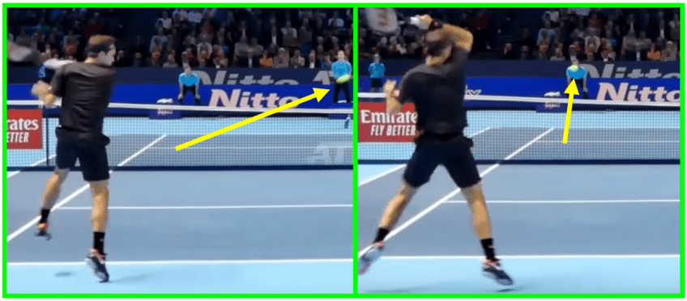
Success Under Imperfect Conditions
If a particular stroke only produces a fast, heavy, accurate shot when struck perfectly, but when struck imperfectly, frequently results in an outright miss, that shot is useless in an actual match. The shot is not fault tolerant, because it can’t handle a fault, a small mistake preparation, timing or execution, and still succeed.
Roger Federer hitting a swinging volley – a shot for which it’s very difficult to establish a consistent contact point, and thus fault tolerance is essential to success. On the other hand, a stroke which succeeds even in the face of a small preparation or execution mistake is fault tolerant and is competitively useful. This idea is critical to the rest of our discussion. Only fault tolerant strokes grant a competitive advantage, because during stroke production, conditions will never be perfect.
We’d all like to be in perfect position for every shot, and to practice enough that we never mistime our swings, but in practice that’s impossible, especially if the other player is elite. Instead, we’re going to hit many of our shots while slightly out of position, and make many small timing and execution mistakes throughout the match. This takes some humility to admit, but, as usual, humility is a useful virtue. To win, our stroke needs to succeed in spite of these small mistakes.
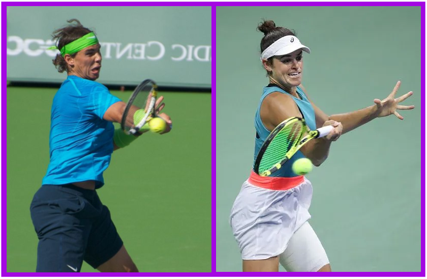
There are two basic classes of skills, two critical steps in your stroke development, that are required when learning an elite forehand. The first is developing quick feet and proper movement so that you can avoid ever having to hit out of position, and avoid ever mistiming the ball. The second is building in enough fault tolerance that you can hit out of position and mistime the ball.
Tennis is Often Difficult and Awkward
Roger Federer hitting a forehand on which he didn’t quite get around the ball, and it’s too close to him. The shot succeeds, and he still wins the point. When two players are competing, each is doing everything in their power to make the other’s shots as difficult and awkward as possible. Therefore, the most advantageous competitive strokes are the strokes that still function at a high level out of difficult and awkward positions. We see this concept at play all the time on the tour.
Professional players constantly slightly mistime their strokes, and they constantly hit shots while slightly out of position. Everyone is moving so fast and hitting so hard that it’s humanly impossible to position for and strike every shot perfectly.
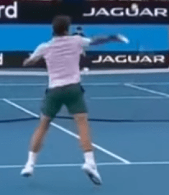
Of course, every player tries to hit every ball perfectly, and they move so well that they actually do hit a lot of them pretty perfectly, but in the end, even the ever graceful Roger Federer hits the occasional mistimed forehand, or gets caught by a solid, deep return and has to hit out of position. Of course, because he’s Roger Federer, that out of position or mistimed shot almost always still goes in.
Rafa’s Forehand – A Fault Tolerant Masterpiece
Rafael Nadal possesses what is probably the best example of a fault tolerant forehand in all of modern tennis. Like every player, Nadal often slightly mistimes his forehand. Rafa’s stroke, though, is so fault tolerant that you can barely even tell these shots were mistimed. Sometimes, his ball will drop a little shorter in the court than normal. Other times, it’ll drift a little wider than average.
But as a spectator, you barely notice, because even when Nadal slightly misses, the resulting shot still keeps the point neutral. Rafael Nadal’s fault tolerant forehand on display on the red clay – hips rotated, core stable, wrist relaxed. On offense, when Rafa slightly mistimes or mishits the ball, half the time it just lands on the line for a winner instead of landing inside the line where he was aiming.
Sometimes, sure, he hits it back towards his opponent and the rally continues in neutral, but even that isn’t all that bad of a miss. Where other players mishit the ball out and lose the point immediately, Rafa mishits the ball in and just has to start back over from neutral, so he still wins about the half the points he plays after those offensive “misses.” For Rafael Nadal to miss to the point where his opponent actually gains a significant advantage from that miss, he has to really miss.
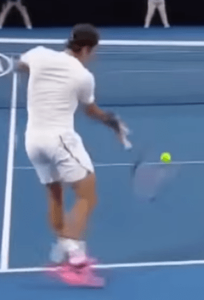
He is so strong, his hips are so engaged, and his wrist is so loose that is his forehand is the poster child of fault tolerance – he makes a small mistake in timing or preparation, and the most common outcome is that the rally continues like nothing happened.
Why Fault Tolerance is so Essential
Rafael Nadal is also amazing at digging out balls that land right at his feet. Heck, sometimes he even rips an inside-out winner off of that shot. No player goes into a rally wanting to play a shot off of their shoestrings, but sometimes, you’re forced to. This is why fault tolerance is so essential to high level tennis. If your forehand only works when in perfect position, you’ll never be able to compete with players that can frequently put you in imperfect positions.
At the Gerry Weber Open in Halle, Germany, the shadows from the stadium obscure the court during the final between eventual champion Roger Federer and runner-up David Goffin. Imperfect positions are inevitable. Here’s another example – what about when the lighting on court gets weird? At Halle every year, the shadows on the court get ridiculously distracting.
Every player’s ability for precision declines, at least a little bit, playing in conditions under which their brain is simply receiving less quality information from their eyes. Yet, as we watch these spectacular rallies taking place across the criss-crossing shadows in Halle, the players… still barely miss. How is that possible?
It’s possible because a tour level player’s stroke is so fault tolerant that this small fault – the fact that they aren’t getting perfect visual information – is completely tolerated by the stroke. Their stroke is resilient enough that the small amount of stress placed on the system by the imperfect lighting isn’t enough to have a significant effect on its results; when they slightly mistime their swing or slightly mishit the ball due to the lighting, their stroke still succeeds.
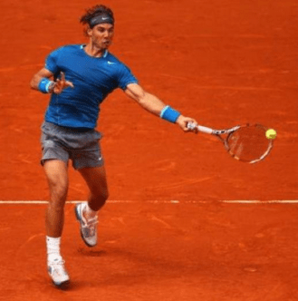
So How do I Develop Fault Tolerance? Fault tolerance comes from technique. There are ways to hit the ball that are fault tolerant, and ways to hit the ball that aren’t. From your feet, all the way up through your legs, hips, chest, arm, wrist, and hand, each body part has a job to do to strike the ball in a fault tolerant manner. A correctly taught stroke is not a complicated series of limb positions and joint angles to memorize. Don’t be scared off by that list of body parts, though.
It makes fault tolerant strokes sound complicated, but they actually aren’t – in fact, simplicity is one of the primary drivers of fault tolerance. A correctly taught stroke is not a complicated series of limb positions and joint angles to memorize, but rather a few static positions to learn and a few volitional movement patterns to execute out of those static positions. One of the keys to fault tolerance is eliminating extraneous movement and extraneous tension from your body.
Every muscle that isn’t driving force should be relaxed, and every movement that isn’t adding racket head speed should be scrapped. We build our strokes up from the essentials, from the parts of the swing directly responsible for generating racket head speed, and strip away the non-essential parts of the swing that don’t help it, but can definitely hurt it if not executed perfectly.
Fundamentals and Fault Tolerance Come First
At Fault Tolerant Tennis, we focus on the fundamentals of each swing that create the swing’s fault tolerance. The few aspects of elite swings like Rafael Nadal’s forehand that are directly responsible for their unparalleled consistency and quality. Daniil Medvedev has a uniquely high take back and loopy forehand swing, but since it is fundamentally sound, it’s still extremely effective. This website is your place to learn those fundamentals.
Each article, be it on the forehand, the serve, movement, strategy, or coaching, focuses on the core aspects of that concept that are universal across all high level play.
Occasionally, when discussing something like the forehand, we’ll wade into some personal preference optimizations, like Juan Martin Del Potro’s looping backswing, or some non-harmful (for those players) personal idiosyncrasies, like Medvedev’s uniquely spacious backswing, but mostly we will discuss the core fundamentals that every world class forehand shares.
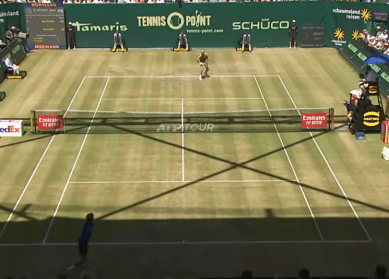
Our goal is to distinctly and clearly separate stylistic choices, which vary greatly from player to player, from the foundational, biomechanical principles that are universal among all elite strokes. There are many great ways to hit a forehand, but they all share certain crucial traits.
Those traits are what we focus on here, as they are the traits that create hard, heavy, fault tolerant strokes. 1 COMMENT: Poida July 21, 2021 So in other words, the wrist is loose and moves freely but the racket/forearm relationship of 90-135 degrees integrity must be maintained? It seems the wrist plays a role in getting this relationship or am I mistaken? Answer: Glad it was helpful! As for the 90-135 degree angle, two things.
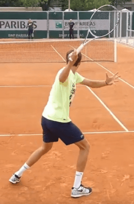
First, I’ve updated the image on our “Two Rules that Govern Every Shot” article to show the angle we’re talking about. https://faulttoleranttennis.com/two-rules-that-govern-every-shot/ Second, you can go on YouTube and pause any video of a forehand – Fed, Rafa, Novak – any of them, at the end of their backswing. You’ll see their racket and forearm 90 degrees from each other.
As they twist forward, their racket naturally lags behind their hand, and then whips around their forearm, all while that angle remains (opening up a little, but non volitionally).
The Athletic Ready Position
With almost every skill in tennis, there exists a prevailing myth that natural talent is the primary factor driving success. You’ll frequently hear tennis commentators, awestruck after observing the latest feat of athletic brilliance, remark candidly that said feat is “something you’re born with” or that it “can’t be taught.” For the most part, though, that’s simply not not the case.
Sure, if you’re born with a 50 cm vertical jump (~20 inch), you’re not going to double it to 100 cm through training and effort. But vertical jump is actually one of the purest metrics we have for innate explosive potential; it’s pretty darn simple. Most real athletic feats – things like throwing a baseball, tackling an opponent, or moving on a tennis court – require a lot of coordination and practice to get the various parts of the body’s kinetic chain linking up efficiently.
Of course the “natural” athlete, all else being equal, is going to perform better at these athletic activities than a less “natural” athlete, but in practice all else isn’t equal. Natural, genetic potential for explosive movement does exist, but most people play so far below their genetic potential that this limitation is mostly irrelevant. You can play faster. Movement, just like everything else in tennis, is primarily about technique, and only secondarily about natural, God-given talent.
The (Real) Ready Position isn’t Trivial I know, I know – you’ve heard about the “ready position” before. “Bend your knees;” we all know what we’re supposed to do. I thought that too, until the first time I felt what the athletic position really feels like. And on that day, I was immediately the fastest I’d ever been.
The secret to unlocking your own latent athleticism lies in efficient muscle recruitment; if your hamstrings, glutes, adductors, and back muscles are all firing as you move, you’ll be fast. If they aren’t, you’ll be slow. And the first key to getting these prime movers to, well, move you is priming them by waiting in a proper athletic ready position. So let’s go over, in detail, the critical fundamentals underpinning a correct athletic position.
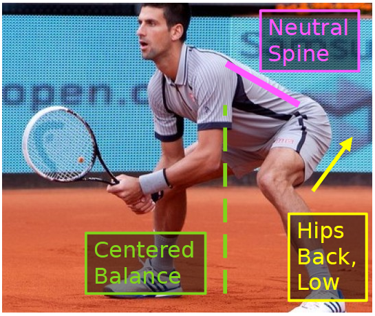
Apply them, and almost immediately you’ll start reacting to balls faster than you thought was possible. A Muscle Recruitment Problem Explosive movement, both forward and lateral, is facilitated by the large muscles in the legs. The more muscle mass you can engage, the quicker you’ll move.
But given our natural sedentary state, and the grotesquely subpar (and often non-existent) training regiments that most non-professional athletes employ, it’s actually a very non-trivial feat to load and fire these muscles correctly. Many of today’s athletes are quad dominant, likely due to the vast amount of sitting we do in our every day activities.
Further exacerbating this problem: in training, squatting above parallel fails to stress the critical non-quad muscles, preventing them from strengthening along with the quads. As a result, the muscles of the posterior chain – the glutes, hamstrings, lower back, and spinal erectors – are proportionally both weak and unused. So it’s not surprising that most players fail to fully utilize them while moving on a tennis court. This failure drastically decreases quickness, balance, and speed.
Engage the Posterior Chain
The most common sticking point for efficient movement is an athlete’s ability to engage the pulling muscles of the hamstring, glutes, and lower back, all of whom also play a critical role in increasing explosive force off the ground. While the quad does also play a major role in court speed – as the primary knee extender, it clearly aids in pressing off the ground – most people engage their quads properly already.
For the anatomically curious, here’s a quick baseline explanation of how the posterior chain muscles function. The Hamstrings Olympic gold medalist Usain Bolt, post acceleration phase of his sprint, driving himself forward via a forceful contraction of his hamstring. When your hamstrings contract, they shorten the distance between your calf and your back. The primary result: your calf is pulled towards your femur.
When this contraction takes place while the foot is on the ground, it generates a force that drives you forward. The hamstring also has the effect of decreasing your leg-torso angle. This is why you can stretch your hamstrings by straightening your legs and bending over. The hamstrings are longest when the back is straight, and you’ll be able to feel that during the stretch; the straighter you keep your back as you bend over, the more your hamstrings will be stretched.
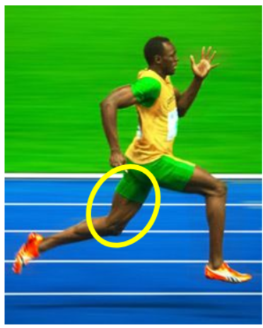
During a sprinter’s peak stride, explosive pulling from the hamstrings is doing most of the work. As the hamstring contracts, the ground is pushed backwards, away from the sprinter, and the sprinter is thereby driven forwards. The Glutes The glutes are the prime straighteners of the hip-torso angle. During lockout portion of the the deadlift, the glutes contract, driving the hips forward and straightening the leg-torso angle.
They are at their longest in the fetal position, and at their shortest when the hip-torso angle is totally straight. Actually, some people are flexible enough that a full contraction of their glutes leads to a hip-torso angle of more than 180 degrees; they’re actually bent backwards a little. A good illustration of glute contraction is the lockout portion of the deadlift, during which the lifter drives their hips forwards, fully straightening their hip-torso angle while under a load.
As a result of this straightening, the weight is pulled up off of the floor into the lockout position. With regards to explosive movement, again assuming the feet are in contact with the ground, flexing the glutes and straightening this angle creates a force driving the body way from the feet in what every direction you’re leaning. The “glutes” are actually a few different muscles working in conjunction.
Different lateral movements are facilitated by different individual gluteal muscles, but each is involved in some sort of straightening at the hip. The Lower Back and Spinal Erectors Roger Federer’s upper and lower back musculature maintaining a totally neutral spine as he stabilizes his body in preparation for a backhand slice.
The lower back and spinal erectors stabilize the lumbar during these explosive movements, facilitating an efficient transfer of force from the prime movers in the legs into movement. If they’re weak or loose, much of this force will be lost. When the back rounds due to weak or non-recruited back musculature, the off-the-ground force is physically damped – since the back is non-rigid, some of the force goes into compressing it instead of driving the body away from the ground.
Additionally, the back isn’t providing much of it’s own force to aid the movement, stabilizing and assisting the contraction of the legs. A tight, strong lower back and tight, strong spinal erectors prevent the torso from caving over, and prevent the back from rounding.
In doing so, they also protect the athlete from back and spine injury – the more rigid and strong the structure is during movement, the more aligned the spine will be while under load, and the safer both the spine and the muscles supporting it will be. Develop Proprioceptive Awareness Much of the differential in players’ lateral movement speed is explained by the effective strength of their posterior chain.
Not just how strong it is, but also how well the athlete is able to recruit that strength to the goal of exploding off the ground. Learn to feel these muscles. To get into the proper athletic ready position, sit your hips back and low. As you do, hinge forward at the hips while keeping your back straight; you’ll be bent over, which is correct. Your knees will bend a little, but keep your weight balanced over either the center of your foot, or the ball of it, depending on the situation.
A quick note on your optimal balance point – If your lower back or heels hurt after you play, shift your weight forward. If your knees hurt, shift your weight backward. In your ready position, feel for the light muscle contraction of the glutes, hamstrings, and adductors (your butt, the back of your thigh, and the inside of your groin).
If those muscles are lightly tensed, you’ll be able to explode to the ball the second you see where it’s coming; without having to consciously think about it, your body will recruit all of that muscle to drive you off the ground. Pre-Load the Leg Muscles Think about how you jump. In order to explosively extend your legs, first you have to bend them. Lateral explosive movement in tennis is very similar to jumping, but at a non-vertical angle.
The key in tennis is to pre-load the legs (and the posterior chain specifically) by preparing in a position such that the muscles of the posterior chain are already a little loaded, ready to elongate the knee and hip angle explosively at any time. It’s far quicker to explode sideways off of legs already bent and hips that are already hinged, than it is to do that bending and hinging before you explode.
But maybe more importantly, pre-loading your posterior chain gives your body a proprioceptive cue that those muscles should be used. A small amount of tension in those muscles helps communicate to your brain that it’s their turn to fire. The more you’re able to lightly engage the large, valuable muscles of the glutes, hamstrings, adductors, and back while you’re waiting, the more naturally your subconscious will recruit recruit the during explosive lateral movement that follows.
Putting it All Together As we’ve discussed throughout the article, using and feeling the non-quad muscles isn’t trivial for most people, at least not at first. Understanding the light tension you should be feeling is the first step; actually feeling that tension, and developing leg muscles strong enough to support it, is the second. David Ferrer shows off his impressive leg strength as he widens his base and tilts his torso, lowering his racket to pick up a low ball.
The squat and the deadlift are the best tools for both strengthening the posterior chain and becoming proprioceptively aware of it. These lifts aren’t trivial to learn, but training your entire body with them will pay dividends not just in tennis, but in your overall health and well-being as well. If you have access to a quality strength coach, take advantage of it.
If not, things will be more difficult, but with the vast expanse of online resources available and a camera, anyone can master these lifts if they’re willing to put in the time. For some, you’ll get out on the court, try to feel your glutes and hamstrings, and your body will quickly know what to do. For others, it’ll be a process to get there. But everyone can get there.
Learn to automatically engage these muscles in the ready position, and you’ll be flying off the spot at lightning speed as you react, without even having to think about it. Foot Striking – The Overlooked Key To Speed The human foot is a masterfully designed piece of biological machinery. It’s job – to safely absorb and transfer the force generated when our bodies hit, and then press off, the ground. Lucky for us, it’s really, really good at this.
Unfortunately, do to some questionable decisions by our modern footwear companies (I’m looking at you, Nike), lots of our athletes, both young and old, are very bad at harnessing this natural biomechanical advantage. Last year, a 12 year old female student of mine showed up with some new shoes. To say these things were clunky would be like saying water is wet.
I could tell the second she started moving in them that this wasn’t going to work – not only did she look extremely slow and awkward, but I was genuinely worried we might not even make it through the lesson without her rolling her ankle over one of those ridiculously elevated soles. So I told her to take off her shoes. And her footwork immediately improved. Not just a little, either. The second she started playing barefoot (in socks, of course), I swear she was moving like Roger Federer.
She was light on her feet, elegantly dancing her way out to the ball, striking it cleanly, and then taking precise, cushioned deceleration steps as she changed direction and recovered back to the center. Proprioception and Foot Striking If you saw this girl play in her 2 inch heels, you’d think she was naturally slow. A kinda tall, kinda awkward, unathletic 12 year old. But you’d have been wrong.
This girl had awesome natural control over her feet, she just didn’t have the proprioception to use it while hopping around in her cushy cinder blocks. A shoe like this is a recipe for slow feet and rolled ankles. Just don’t do it. When you insert two inches of cushioned rubber between your foot and the ground, your brain receives no information about how that foot is interacting with the ground during the strike. All of that force information gets lost in the sole of the shoe.
And with it goes much of the natural springyness of the arch as well. On the other hand, when you’re barefoot, your brain gets a very precise account of what happens during each strike, and it can adjust accordingly. Your brain won’t let you hurt yourself by banging your feet into the ground improperly. You’ll find that, within minutes of hopping around or jogging barefoot, your striking will naturally adjust to a forefoot or midfoot, shock absorbing technique.
The Forefoot Strike The key to biomechanical efficiency with the foot is to leverage the forefoot strike (or for some people, a midfoot strike); strike the ground with the ball of your foot first. This allows your arch to act as both a shock absorber and a spring. Your foot is designed for this. If you strike the way nature intended, your foot (and leg) architecture will naturally and painlessly absorb the force, and then transfer that force into springyness off the ground.
The impact will be efficiently dissipated throughout your foot and leg muscles, and as a result your joints won’t hurt, and you’ll be faster. Given our current footwear market and sedentary conditions, this striking may not come naturally to everyone. A few minutes of striking practice is a great way to warm up your feet before you play, both the muscles and your brain’s connection to them.
Changing Direction with Forefoot Strikes Roger Federer changing direction to recover after hitting a wide forehand. He rotates his hips back towards the center, and thus uses regular, runner-like forefoot strikes to generate force off the ground. Tennis requires a lot of lateral movement – running right, then quickly changing direction and running left. Even for this lateral movement, if you have enough time, forefoot strikes should be used to change direction.
To accomplish this, rotate your hips back towards the direction you’d like to recover. This allows you to, from your feet’s perspective, run that way as if you were just running straight, and thus you’ll naturally strike the ground similar to if you’re running. Mimicking running strikes wherever possible is ideal, because the foot isn’t nearly as adapted to lateral pivots as it is to running.
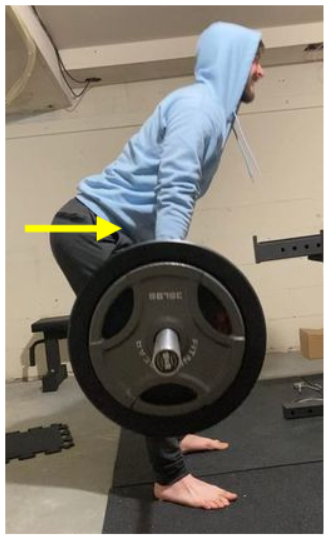
Transposing lateral movement into front-to-back movement by first rotating the hips toward your destination is very helpful. Lateral Foot Strikes Lateral foot strikes are also fine, but they aren’t quite as natural for your foot. Your foot is best equipped for absorbing force that is parallel to the way your toes are pointing – usually you’re running forward and your toes are pointing forward.
When you pivot on a foot – say, your foot is facing the net and you push off to the left – the force is orthogonal to your toes, and your foot’s anatomy doesn’t handle it nearly as well. Federer reversing his momentum to recover back to the center, taking one pivot midfoot strike step (circled) and rotating his hips. Only one pivot step is used in the entire recovery; his first step with his left foot will be a regular forefoot strike. There are a few consequences of this.
First, you want to minimize the number of these strikes you use as you recover; as soon as possible during the process, get your hips turned and start using regular, anatomically advantageous forefoot strikes pointing in the direction you’re moving. Second, don’t put too much force into any one lateral step. Again, your foot isn’t really designed for this orthogonal striking, so don’t overdo it. Never stop all of your momentum with a single lateral forefoot strike.
Your body probably won’t let you, but still, be aware of it. If you’re sprinting and need to stop on a dime, you’re going to have to heel strike (and probably slide, we’ll get to that later), because putting that much force into a forefoot strike when your foot isn’t parallel to the force will injure your ankle.
But assuming you have enough time to take a few steps, but still want to take a lateral step or two, just be sure to use 3 or 4 small steps to decelerate, with each step slowing the body a little bit. The Role of Heel Striking What if I really really need to stop and recover? Then you’re going to have to heel strike. Tennis is different from running in that sometimes it requires a heel strike for optimal performance.
The best strike for stabilizing and absorbing the force of a sharp change of direction, often a slide, is a heel strike. Strike with the inside of the heel and allow the rest of the foot to come down after it. Djokovic pulled out extremely wide for a forehand; his right heel will be the first part of his foot to hit the ground, followed quickly by the rest of his foot. The strike happens very far out from his center of mass.
When you have to heel strike, try to get the heel as far from your center of mass as possible. This will reduce the impact on the heel itself. Keep your base as wide and low as possible, and stick that foot out as far as your groin can support. Just like with every other strike, the more of the impact your posterior chain absorbs, the less goes into your foot – and in this case, your heel.
Since, on a heel strike, you don’t have your brilliantly designed arch cushioning the impact, utilizing the legs muscles is crucially important. Not everyone should implement heel striking into their game. In order for heel striking to do anything other than hurt your feet, ankles, and knees, you need very strong legs and enough flexibility to get them wide enough to stay balanced while you heel strike. If your legs are too weak, or too inflexible, don’t heel strike.
Just take the extra steps, and use many light forefoot strikes to recover. You need to heel strike far away from the center of your body in order for it to be safe and effective; that’s only possible with very strong legs, and a well engaged posterior chain. Foot Striking and Quickness Proper striking utilizes the arch’s natural force absorption ability to maximize your force off the ground after each foot strike. Start implementing it, and you’ll see an immediate boost of speed.
Quickness around the court is primarily about three things: The athletic ready position Playing low and wide Proper foot striking Of these, foot striking may be the most counter-intuitive at first, since modern footwear has destroyed many people’s natural inclination towards the forefoot strike. Still, it’s a worthy goal to recover it. Practice for a few minutes before each session, and you’ll start to see results on the court in no time. Which Forehand Stance is Best?
In the open stance, the feet are parallel with the net, and contact is made about an arm’s length away from where the hitting foot starts. Stance is similar to grip – it doesn’t matter that much. With an open, semi-open, or neutral stance, a player can correctly turn away from the ball, prepare the hand, and then explosively rotate back towards the ball during the forward swing. Many players will use different stances on different forehands throughout the match.
It’s mostly a matter of personal preference; each player should determine what feels best for their particular body. That said, there are still some pitfalls to avoid when it comes to forehand stance. Get the Hips Back Around The fault tolerance of forehand contact is maximized when the hips square to the target.
That means that if you initiate your swing from something like a neutral stance, in which your hips are pointed sideways during preparation, you need to ensure you get them rotated all the way back around by contact. In a semi-open stance, the feet are set on a diagonal to the target, and body rotation is needed to reach the optimal contact point. This is totally fine, of course – that hip rotation will generate lots of racket head speed.
But always understand that the reason to use this neutral stance is so that you can perform that explosive hip rotation. If you have a habit of not rotating your hips as you swing, then if you prepare using a neutral stance, your hips will end up still sideways at contact, which greatly hampers the stroke’s fault tolerance. The best solution for this, of course, is to train yourself to lead your swing with hip rotation, but a good stop gap would be to temporarily switch to a fully open stance.
With a fully open stance, when you don’t rotate your hips during the swing, your hips point at your target at contact. Using Many Stances Preparation exists to prepare for the forward swing. The forward swing you’ll want to attempt will vary based on the situation. You’ll want to use varying degrees of hip rotation on varying shots, and thus you should begin with varying stances. In a neutral stance, the feet are set perpendicular to the net.
The optimal contact point is far from the back foot’s initial placement, and therefore a lot of body rotation is required to reach it. The important point here is that the feet are not what’s critical – what’s critical is where the hips are aligned. The hips have freedom to turn while the feet remain planted, but only so far. You can utilize hip rotation out of any stance, and you can fail to utilize hip rotation out of any stance. Stance, like grip, ultimately is a matter of personal comfort.
Just ensure that whatever stance you choose, your hips are square to your target by the time you reach contact. A Warning About the Closed Stance Earlier, I mentioned that the open, semi-open, and neutral stances are all fine when it comes to forehand stance preparation. What I didn’t include was the closed stance. That’s because it’s quite difficult to get the hips all the way around from a closed stance.
It’s doable – if you drive hard off of your hitting leg’s glute and allow that hitting leg to follow-through around your body, you can get your hips around, but this isn’t a very natural feeling motion and, for most players, should be avoided. In a closed stance, the back foot is behind the front front foot, relative to the trunk. So much rotation is needed to reach optimal contact that this stance is not recommended for the modern forehand.
Most players who play the forehand with a closed stance don’t do it because they want extra space to whip their hips around; instead, they just leave their hips under-rotated during contact and thereby destroy their stroke’s fault tolerance. Instead of trying to coach these students to use their hips more, it’s probably better to start by having them play the forehand from a neutral stance instead.
One area in which the closed stance does excel is balance – it’s a stance from which it’s very natural to sit low and remain stable. This makes it a viable option on low forehands, but, again, ensure that the hips get back around to the net by contact.
Your back foot’s follow-through provides a good indicator of how well you’re rotating your hips out of a closed stance – if it follows-through around your body after the stroke, resulting in you ending in an open stance, you’re probably getting sufficient rotation on your swing. 5 Ways Elite Players Make Their Own Luck Many events in tennis appear lucky. The ball dribbles over the net for a winner. Someone hits a second serve ace on the line.
A forehand is shanked high and deep, and ends up landing on the baseline instead of flying out. From a certain point of view, these are clearly examples of a player just getting lucky, and yet these “lucky” events are not uniformly distributed across the player base. We love to righteously assure ourselves of what should have happened – that net dribbler should have hit the net. That second serve ace should have been a double fault. That shanked forehand should have gone out.
Yet, mysteriously, against good players, these negative events that should counter balance the corresponding “lucky” ones happen far less often than seems fair. This isn’t a fluke; elite players cause this disparity between "lucky" and "unlucky" results. They make their own luck by employing an accurate strategy and hitting with fault tolerant technique. Here are 5 examples of how. 1.
Net Dribblers – But They Rarely Hitting The Net Elite players aim high enough above the net that they rarely hit it. Hitting the ball into the net immediately loses the point, and thus accurate strategy necessitates choosing a shot for which very few of the potential outcomes of that shot involve a net error. This means that when an elite player hits a net dribbler, you are not seeing a result that’s anywhere close to the center of that shot’s distribution; you are seeing an outlier.
The net dribbler is one of the most inaccurate shots that that particular shot selection could have generated, maybe one of the 10% or even 5% of results farthest from the center of the target. A well chosen target – high enough over the net that nearly all of the probability mass is over it, with only a few shots in the outer ring hitting it.
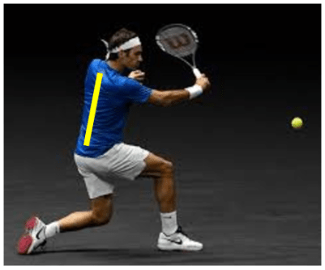
So, no, it isn’t true that “the ball should have hit the net.” In reality, it’s far more accurate to say the ball should have gone well over the net; after all that’s what happens 9/10 times this player attempts this shot. By aiming high over the net, an elite player ensures that even the bottom of their distribution doesn’t contain many misses, which is why they miss into the net far less than other players, while still receiving the same amount of net dribbling good fortune. 2.
Second Serve Aces – But They Rarely Double Fault A high quality second serve target from a relatively accurate player. The entirety of the densest and second densest regions is 100% in. Serves on the line are possible, but uncommon. Faults are exceedingly rare. You’re going to notice a theme here. “Luck” in tennis constitutes a player rolling an exceptionally positive outcome that’s on the outside edge of their shot’s distribution of outcomes.
An elite player who hits a second serve ace was not aiming for a second serve ace; an ace was not the median outcome. Instead, they were aiming to a high margin target, for which only the outside edge of the distribution is either on the line, or over it. This target ensures, first and foremost, that misses are exceedingly rare.
Since a second serve functions very similarly to a typical rally ball – a miss loses you the point immediately – targets for second serves are chosen based on similar principles to targets for rally shots. The primary difference is that, unlike on rally shots, on a second serve, your opponent knows which half of the court you’re going to hit into.
This makes playing a second serve offensively very difficult, and thus it’s even more beneficial than usual to be conservative on a second serve, since the benefit of aiming closer to the line is lessened. Therefore, good players use conservative targets on second serves. When they hit a second serve ace, it’s because they missed their target by a good amount – it was an unlikely outcome on the outside edge of their shot’s distribution.
If they’d aimed to a worse target instead, a more aggressive target closer to the line to start with, that same movement which resulted in an ace with the conservative target would have likely resulted in a fault. 3. They Mishit The Ball In – But They Rarely Actually Miss When the forehand (as well as everything else) is struck with correct mechanics, it is fault tolerant. This means that small inaccuracies in preparation or execution won’t cause a miss.
By creating a long hitting zone with a consistent string angle, we maximize the amount of the swing during which, if contact is made, the ball will go in. A shank mishit that goes in is at the very end of this viable hitting zone; if we’d mistimed the shot just a little bit worse, we would have missed. The more fault tolerant the forehand, the more shanks will go in. Rafa Nadal is famous for mishit forehands turning into deep topspin lobs.
These “lucky shanks” are yet another benefit of proper, fault tolerant forehand technique. 4. Winners on the Line – But They Rarely Hit It Out Elite players aren’t aiming for the line. They’re aiming to a target for which the line is on the outside edge of the distribution. Sensing a pattern here? Good players aim for targets such that they don’t miss, and occasionally “get lucky” and hit an even better shot than they were aiming for.
Instead of missing when they mistime the ball slightly, they hit an even better shot than usual. While this beneficial effect of more conservative targets is counterbalanced by the average result from those targets being closer to the center of the court, in most cases this difference is trivial, and the downside of it is more than made up for by the vastly decreased amount of misses at the outer ends of the distribution. 5.
Mishit Volley Winners – But They Rarely Miss Volleys Effective volleying is about getting as close to the net as possible. When we are close to the net, margins are much bigger. First, we get to hit the ball higher. This means we can hit down on the ball far more without missing. Further, we can hit the ball wider, because, since we can hit it down more, it’s easier to get the ball to land down in the court before skirting out.
We can also hit the ball harder, because, again, the downward trajectory will prevent it from sailing long. The margin created by aggressively closing the net creates the fault tolerance that allows frequent mishit volley winners. So on a volley, our goal is to minimize the distance between us and the net at contact time. We manage this in a few ways.
Start close to the net Don’t set up at the service line by choice; only split step there if your opponent is about to hit, and you were too slow to get closer. Move your body through your volleys Sure, if the ball is rifled at you, you’re going to have to just stick your racket out, but, in general, volleys involve moving the entire body forward. In fact, with respect to the body, the racket moves very little.
A player who employs this forward body movement routinely contacts volleys closer to the net than one who doesn’t. If the ball is slow, explode forward Unlike at the baseline, we never wait for the ball at net. Any time the ball spends in flight is time we can use to sprint forward and close the distance between us and the net. Each additional step towards the net makes the volley that much easier.
The margin created by aggressively closing the net creates the fault tolerance that allows frequent mishit volley winners. Consider a common kind of mishit volley winner – the ball hits the throat of the racket and becomes an unintentional but successful drop-shot. This exact same stroke execution, if performed at the service line instead of right on top of the net, would have resulted in an an ugly looking error into the bottom of the net, rather than a won point.
Strategy and Technique Create Luck Since tennis is random, luck is a natural part of the game, but the nature of that luck is often misunderstood. Consider a situation in which Player A has a 10% chance of hitting a winner, while Player B has a 30% chance of hitting that same winner. If both players succeed in hitting the winner, Player B has gotten far less lucky than Player A while achieving the same result.
It would be fair to call both of their winners "lucky shots," since, for both players, the chance of the winner was well under 50%, and yet the fact remains that Player B is going to hit this "lucky shot" far more often than Player A will. "Lucky" is a very imprecise term. Elite players make their own luck by routinely putting themselves in positions where it’s easy to get lucky, while simultaneously avoiding positions from which it’s easy to get unlucky.
They humbly observe the results of their attempted shots and put themselves in positions where those results produce maximum benefit. And on the off chance they do win a critical point on a net dribbler or a mishit winner, they simply put up their racket in a (faux) apology and move on with the match unbothered, since, after all, elite players really, really want to win.
Gold: “Roll Your Racket Over The Ball” Ah, "roll your racket over it" – the epitome of everything that’s wrong with tennis coaching, our Coaching Cues Hall of Shame champion, and probably the sentence that’s caused more forehand errors and wrist pain than any other ever spoken. Let’s begin with a story. Last year, I worked with a 14 year old girl who had one of the most mismanaged forehand strokes I’ve ever seen.
Her problem: “roll your wrist over/around the ball.” She turned to me, scoffed, and asked, “Why do I suck?” Rarely, if ever, could she make two forehands in a row. Her wrist hurt every time she hit the ball, and she wasn’t enjoying the game. There was a point during one of our lessons when I asked her, “Anything not making sense, any questions?” She turned to me, scoffed, and asked, “Why do I suck?” Multiple times during our lessons, she cried, and I don’t blame her.
She was an obedient student who did exactly what her coach told her to do. Think about it from her perspective – The coach clearly tells her how to strike the ball. When she hits it that way, she can’t make two shots in a row, and her wrist hurts every shot. The coach can’t be wrong, of course, so what’s the only variable left? Clearly there’s something wrong with her; the only logical conclusion is that she just inherently sucks. It’s an easy conclusion for a 14 year old adolescent to draw.
And unfortunately, a 14 year old girl has no practical way of identifying when her coach has unwittingly set her up for failure. So for her sake, let’s set the record straight on the most egregious misconceptions fueling the most damaging cue in all of tennis coaching. The following is an explanation of how racket rotation and wrist movement actually function during a useful, fault tolerant forehand.
The Racket Rolling Over Is Part of the Follow Through First, one of the reasons this mess got started in the first place: pros “roll their rackets over” when they hit forehands. This is part of the follow through of the stroke. Not the swing, the follow through. It’s difficult to see the difference in real time, but search up some high fps slow motion footage of top forehands, and you’ll see that the string angle hardly changes through the hitting zone; it only changes after contact.
Often, this rotation is not even caused by forces the player generated themself, but rather by the force of the ball’s impact on the racket, which imparts a torque on it. Racket Rotation in ALL Planes is PASSIVE Another common misconception is that players actively engage the wrist musculature to whip the racket through the contact zone. This is also false. The wrist is passive at contact, merely acting as a hinge.
The energy generated by the rest of the kenetic chain whips the racket around in the wrist; it’s not the tiny wrist muscles doing that work, and if you try to use them for that, you’ll injure yourself. Rotation Through Contact Does NOT Alter the String Angle Through contact, the string angle is maintained in order to maximize our margin for error.
Maintenance of the string angle through contact is one of the primary drivers of fault tolerance in the forehand – the stroke’s ability to withstand small mistakes without failing.
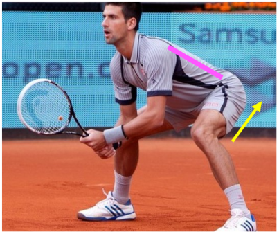
This pernicious myth explained in The Fault Tolerant Forehand: If we allow the racket-face angle to change dramatically through contact, say, “rolling over” such that the strings are pointing towards the sky at the beginning, and towards the ground after contact, then our margin for error evaporates; if we hit the ball slightly too early, our overly open strings will send the ball flying out, and if we hit the ball a little too late, our closed strings will smother it down into the net.
If we don’t time it perfectly, we’ll miss. By instead keeping the angle consistent through the contact zone, we allow ourselves to consistently strike the ball with the proper up-and-forward diagonal contact, even in cases when the swing is slightly mistimed. “Rolling Over” Does Not Create Topspin This one is a simple physics myth. Just because the ball is “rolling” doesn’t mean your racket also needs to roll to create that motion.
Topspin is generated by a strong, upward frictional force between the strings and the back of the ball at contact. The free body diagram here is from the Understanding Topspin Contact section of The Fault Tolerant Forehand. This is how topspin is generated – by transient forces that act on the ball for a few milliseconds during contact – not by somehow mirroring the ball motion you want to cause with your racket. This is true of all spin, by the way, not just topspin.
You don’t slice a serve by “carving around the ball.” You don’t hit a backspin shot by “scooping under the ball”. That’s not how physics works. Spin is created by friction, by a transient force which lasts a few milliseconds and applies a torque to the ball, causing it to rotate.
Our goal is to facilitate this contact in as fault tolerant a manner as possible, and that means not rotating our racket face unnecessarily through contact, dramatically shrinking the contact zone during which a quality shot will be produced.
Rotating The Racket Correctly (Not By Rolling it Over) Racket rotation is an essential part of the modern forehand, and it is racket rotation that ends up generating a large majority of the spin during the strike, but not because getting the ball to rotate necessitates that the racket must rotate. The racket rotation during the shot dramatically increases the vertical racket head speed at contact, resulting in a larger upward force on the back of the ball.
That vertical force is what generates the spin. The rotation we use to increase that vertical force does not close the strings through contact; that would ruin our consistency. Here’s one final passage from the The Fault Tolerant Forehand that sums up correct rotation and hand behavior during forehand contact. Internalize it, and you’ll never be tempted to "roll your racket over the ball" again.
From the section – Fault Tolerant, Effective Contact: Correct rotation happens in a plane which does not effect the angle of the strings, and therefore it’s not a rotation which ruins our fault tolerance. Instead, the racket rotates about the axis of our forearm, and the forearm rotates with it, while the string angle with respect to the ground remains constant. And again, this rotation is passive, not active.
The hand is relaxed, and the racket, hand, and forearm rotate as a result of forces generated during the rest of the swing, not because the player is actively trying to twist the racket around their forearm using their wrist muscles. [Like the racket motion is generating a cone and the cone axis, the forearm, is moving, from right to left with forehand stroke and left to right with backhand stroke]. Our girl from the beginning did get somewhat of a happy ending.
After two months of working together, her strokes were vastly improved, and, even more importantly, she ended each session pain free. Our average mini-tennis rally length increased from less than three shots at the beginning, to roughly twenty by the end. She was quite fond of mini tennis once she’d mastered her new, simpler, fault tolerant contact.
Her feel for the ball in unique situations became much better, and, now that she was actually practicing the right stroke, her consistency improved as we drilled. Given where she could have ended up if we’d never connected, though the ride at times was rocky, I’d say things worked out pretty well in the end. 14 COMMENTS Rob Millsop March 18, 2021 I’d be interested in your opinion regarding where the player, utilizing topspin, should focus on making contact on the ball itself.
Players have been told to brush up the backside of the ball–I would venture that makes as little sense as simply throwing a dart towards a dart board, versus focusing on the “bullseye”.
I could brush up on the ball and easily launch it over the back fence..so..at which spot on the ball itself would you advise your student to aim at with the face of their racket….Lastly–in a typical match between accomplished players (4.5–5.5), what do you suppose the percentage of balls hit long versus into the net, would be?? My charted observations are that a quite a bit higher % of shots go long..than into the net. Thanks for your responses!
REPLY Johnny (FTF) May 21, 2021 I’ll address both. 1. I’m not sure that we have the athletic precision to try to hit the ball on a precisely specific place on the racket, but certainly roughly thinking about hitting the sweet spot is a good idea. (Quick note – the optimal spot for a serve, which is hit while the ball is stationary, is actually the “dead spot,” a few inches higher than the sweet spot.) In general, I do think that visualizing contact before you make it is a good idea. 2.
From a game theory perspective, if a player is trying to hit a winner, the same number of balls should be hit into the net and long. On rally balls, on the other hand, more misses should be long. Let me explain. On winners, if you’re hitting more than 50% long, you can probably improve your success rate by moving your target lower over the net, and if you’re hitting more than 50% into the net, you should move your target higher. That’s pretty simple.
On rally balls, however, the math is different. First of all, just from a technical perspective, lots of net misses are simply caused by bad technique, bad contact, lazy footwork, etc, and once you get up to the 4.5 level and higher, those things are far less common. That said, even once you *have* mastered correct technique, net misses are uncommon because *near* net-misses also suck. They become short balls which immediately allow your opponent to take offense.
Near long-misses, on the other hand, are actually great – you’re the one who ends up on offense. This is why high level players aim deep, and tend to miss long more than they miss short. REPLY Xavier March 19, 2021 Great, I strugle with wrist pain playing tennis for a long time. I was thinking it was about my technique, but this is the first time that I have found something of real value that I can understand.
Now, the problem is going to be trying to apply that to myself and change a technique that is natural for me right now. Thanks for the article. REPLY Johnny (FTF) May 21, 2021 Awesome to hear. I really hope it improves. Striking an extremely effective forehand completely painlessly IS possible. Good luck REPLY Poida July 20, 2021 Does the actual wrist angle change through the rackets rotation?
I suspect that a lot of people are messed up and confused about being told by many coaches to keep the wrist locked at 90degrees throughout the swing and there are “training devices” sold that force the wrist back Appreciate your thoughts and insights. REPLY Johnny (FTF) July 21, 2021 Good question.
The 90 degree training devices are definitely useful to get you about 80% of the way to a very technically sound forehand, because they force you to use the bigger muscles in your body (not the forearm and wrist muscles) to manipulate the racket. But, yes, the wrist of most top players does unwind between 15-45 degrees throughout their motion. On most of Roger Federer’s forehands, for example, peak wrist lag is around 90 degrees, and contact is around 135 degrees. This is NOT volitional.
He’s merely relaxing his arm and accelerating the racket with his hips and abdominal muscles by twisting his body. This extra level of relaxation is what adds the extra spin and power that transforms a high quality, solid, match forehand into an elite weapon. The 90 degree insight is most helpful for touch shots (volleys, slices, drop shots, etc), and for adult beginners trying to get a feel for how to manipulate the racket through space and have it actually work.
REPLY Poida July 26, 2021 Very helpful followup, much appreciated. I initially thought that those wrist training devices were detrimental, however, your answer has made me rethink this, “it gets you 80% of the way there.” Re Federer’s wrist lag, wouldn’t 135degrees be hyper extension? I’ve heard he has incredibly flexible wrist extension, and that would explain the blistering speed and rpms, Nadal also appears to get the wrist into hyper extension.
In general, I’ve noticed that people with good wrist extension often develop good forehand ball shape, speed, and spin velocity. Does this correlate to the “hinge” aspect of the forehand? Or am I misinterpreting the hinge function of the wrist? REPLY Johnny (FTF) July 27, 2021 The looser the wrist, the less energy from the trunk is lost during the swing. This means that loose wrists transfer close to 100% of the strong muscles’ energy into the racket.
The consequence of the looseness is that there’s a large degree of writs lay back as the racket is pulled forward. Most players’ initial problem is that they don’t understand how to accelerate the racket with their body. Instead, they accelerate it with their arm, forearm, hand, etc. The 90-degree-wrist-locker prevents you from doing this and forces you to accelerate the racket with your body instead. That’s why it gets you 80% of the way there.
It forces you into the fundamental where you use the proper large movers to drive the racket. Once you’ve already mentally cemented using your legs and abs to drive the racket, you can get an extra whip from loosening up the wrist and allowing a natural lag and snap action, but that’s non volitional and attempting to do it consciously is why so many players have such awful strokes. REPLY Poida October 2, 2021 Thanks for the reply Johnny, sorry I missed this earlier.
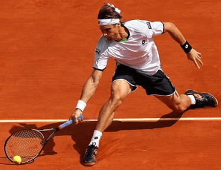
Are there a few mental images and specific exercises one could do to break the habit of using the arm/hand to accelerate the racket and feel the torso/legs doing the work? Trying to do it live ball is next to impossible, even using drop fed balls can “trick da brain” REPLY Johnny (FTF) October 2, 2021 By far the best exercise for feeling the torso/leg drive if you can’t seem to get it is swinging something far heavier than the racket.
A medicine ball on a string, for example, or a ball hopper (since you’ll probably have one lying around whatever tennis club you use). When you swing something far heavier than the racket in a forehand-like pattern, it forces you to use your stronger muscles for acceleration, because your brain will quickly realize it won’t be able to get things thing going with just your arm.
When you put the heavy thing down and go back to the racket, usually the swing will, all of the sudden, feel great, because all of those big muscles have been primed by the weighted swings. REPLY Poida October 3, 2021 This is a very helpful and interesting thread in that you can synthesize a lot of the content from the exchanges to cement ideas and actions from the book.
I think it’s so vital to understand the current stroke mechanics software in the players mind that’s driving the hardware, their body segments with respect to how they move the racket in space and time. However, if a body segment won’t cooperate, ie. tight wrist, then the mechanics get compromised. Here’s something very interesting from one of your earlier replies: ”The looser the wrist, the less energy from the trunk is lost during the swing.
This means that loose wrists transfer close to 100% of the strong muscles’ energy into the racket. The consequence of the looseness is that there’s a large degree of writs lay back as the racket is pulled forward. Most players’ initial problem is that they don’t understand how to accelerate the racket with their body.
Instead, they accelerate it with their arm, forearm, hand, etc” The analogy I’m thinking of here is that a tight wrist is like a kink at the end of a garden hose preventing the full flow of water to the nozzle (hand) from the tap (the big body part movers). It literally “chokes off” the swing. The idea of using something heavy to learn to use core power is not only a good learning method but also a good strengthening one.
There’s some good video of Djokovic using a medicine ball to work on core strengthening. For the forehand, the medicine ball throws with two hands can’t create the proper arm feel from my experience. I like your reference to using a ball hopper or heavy ball on a string. I’ve seen a tennis tube also used (Justine Henin academy) however I don’t think it was explained properly.
I’ve also seen a video where the coach said the feeling “is like throwing a bucket of water outwards” Here are some swing ideas from Edgar Giffenig who has an international high performance coaching background: https://youtu.be/V0sTkxpT_zc https://youtu.be/n6XtxU1TLa4 REPLY Johnny (FTF) October 8, 2021 I like that analogy “it’s like throwing a bucket of water outwards.” I think that’s an accurate description of how it feels.
It’s actually possible to have a pretty good forehand with a tight wrist. It can be fault tolerant and effective, it just can’t generate the whipping spin or quite the same power as a loose-wristed one. Just set the forearm and racket at 90 degrees, still accelerate with the stable muscles of the core instead of the weak muscles of the arm, and you can hit a pretty decent shot without a lot of wrist action.
It’s a lot more like deflecting the ball towards your target than fully flinging your racket through the hitting zone, but it totally works even up to, say, 4.5 adult singles, and definitely is good enough for adult 4.0. REPLY Johnny (FTF) October 8, 2021 As for the specific videos, a few comments: 1. You can sometimes identify a good coach just by their shadow swing. This guy gets it. 2. GREAT point about waiting to accelerate. We talk a lot about waiting in The Fault Tolerant Forehand.
The forward swing is a quick, sudden explosion through contact. The “backswing” isn’t actually part of the acceleration phase. 3. I like his exercises for weighted swings. Agree with that sentiment a lot. You can tell both girls are being forced to recruit their core as they swing. 4. I do a similar drill called 20/40/60/80/100 (% of max speed) where I ask players to use a nice relaxed swing at each speed, and simply dial up or down how hard they explode into the ball.
The arm and wrist do the same relaxed flick no matter what, but the core changes its intensity. REPLY Poida October 9, 2021 Thanks for the reply/feedback on the videos and the tight wrist. The 20/40/60/80/100/drill is very effective at helping players learn using the core to accelerate the arm/racket system. It’s counterintuitive because logically it makes more sense to increase arm intensity to accelerate the racket vs using the bigger muscles of the body.
So developing training exercises that create awareness and kinesthetic feel are needed to make it a habit and ingrain it as a stroking blueprint to achieve competency. Three More Examples of the Winning Attitude We’ve already discussed the common trap of incorrectly believing that winning is your goal, when, in reality, it’s something else.
Typically, these winning imposters look similar to winning at first glance (ex: hitting good shots), but are different enough from winning to frequently result in a suboptimal psychological orientation. In order to maximize our potential on the court, we need to cultivate a true winning attitude. Here are three more examples of cases in which the goal of winning significantly outperforms the other common goals. Not Getting Crushed: You’re playing someone significantly better than you.
They make a few mistakes, combined with a few good shots from you, and you’re able to lose 6-1, 6-3. How much do those 4 games mean to you? Abusing Weakness: Your opponent can’t get it together and is missing every other backhand out of neutral and even out of offensive positions when playing a weak shot from you. How often do you hit it to his backhand side? The Broken String: Your strings break in the middle of the point. What do you do?
Like last time, we’ll go through and analyze the best mental attitude to foster in these situations, as well as some common pitfalls which can prevent us from getting there. 1. Not Getting Crushed If your opponent’s game is better than yours in every way, you’re going to lose, and probably badly. That’s not within your control. What is within your control is whether or not the match is productive competitive experience. This means practicing the skill of competing in the face of impossible odds.
We need to cultivate an attitude that will push us to the limit, even when our rational brain is telling us there’s no point. Even against a player much better than you, there are some patterns which will favor you, at least compared to other patterns. Maybe you only win 1/5 backhand to backhand exchanges, but the two of you actually have pretty similar forehands. Maybe his net game isn’t what it should be, and you don’t get punished as hard as you could for poor defensive shots.
Whatever it is, keep pressing. Spend the entire match maximizing your win rate, however hopelessly small it is, because it’s that exact same skill that’s needed to win close matches. And remember, tennis is random, so you might just get lucky, if you can keep yourself in the fight. Never abandon the process of observing your performance in various patterns and adjusting your strategy accordingly.
This problem solving mindset, the determination to try to win until the end, is an essential part of the winning attitude, even in cases when winning really is impossible. If you have to, just pick a new goal. Win as many games, or even as many points as you possibly can. Just keep yourself competing.
Because here’s the thing – humans beings can do the impossible much more often than the ill-fitted word "impossible" would suggest, so we need to cultivate an attitude that will push us to the limit, even when our rational brain is telling us there’s no point. 2. Abusing Weakness Is it just as fun to hit your opponent 10 backhands, 8 of which they miss outright, as it is to strike 6 winners and 4 errors? That depends on your goals.
If your goal is to win, then winning 8/10 points is more fun than winning 6/10. But feeling an empathetic twinge in your elbow as you watch your opponent awkwardly shank late backhand after late backhand with very little hope of ever succeeding isn’t as glamorous as using your flowing strokes and dynamic footwork to take those balls to the sides of the court and send them elegantly speeding past your opponent. To combat this thinking, convince yourself that winning is glamorous and losing is not.
That way, you won’t be tempted into “better looking” patterns that lower your win rate. Matches are for winning. Practice is for practice. And practice matches are for practicing winning. This particular issue is a little more nuanced than the others, because the aggressive pattern really is a more useful skill than the “always hit it to the backhand” pattern.
However, the winning attitude is more important than even aggressive tennis, and therefore, in a match context, if you are given a pattern with as high equity as the one described above (opponent missing 8/10 easy backhands), then you should be entering it close to 100% of the time, even when that particular pattern isn’t very useful in general (because most players you play will have backhands). Matches are for winning. Practice is for practice. And practice matches are for practicing winning.
Practice matches are the tool by which we improve the parts of our game that aren’t optimal for helping us win yet. The key to effective practice matches is to maintain the winning attitude even when practicing a pattern that you wouldn’t ordinarily use. This is accomplished by pre-committing to the patterns you want to practice and setting rules for yourself before you start, so that during the practice match you can just focus on winning.
Here’s an example: I’m going to serve and volley on half of my service points. This will probably lower your win probability in the practice match (that’s why you’re practicing it, right?), but because you pre-committed to it, you can still 100% try to win within the rules you’ve set for yourself. The entire reason for playing a practice match instead of a real match is precisely to develop skills which currently lower your win percentage, but will raise it once mastered.
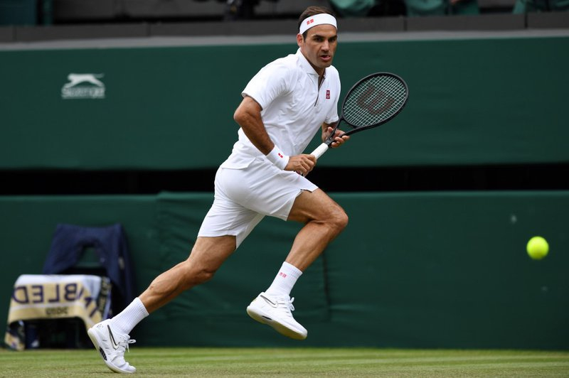
By pre-committing to practicing certain skills, you can do this effectively without having to sacrifice your winning attitude in the process. 3. The Broken String If you’ve been reading this long, you know the answer isn’t “jog to the net, get passed, then go change rackets.” Your response to a mid-point broken string is a good barometer of your winning attitude; if your first reaction is to give up on the point, you’re not thinking like a winner yet.
So for fun, let’s analyze the situation with the winning attitude and win the point. You have two issues right now. First, you won’t be able to generate nearly as much topspin as you’re used to because your string tension has just plummeted. Second, not only is your new string bed extremely sub optimal, but you’re also not used to it. This means that your degree of inaccuracy has skyrocketed.
Many plays that are normally too low percentage to use, suddenly become viable options when your strings are broken. To combat this, immediately move your targets in. Primarily use flat shots, occasionally some high-margin backspin shots, and only use topspin as a last resort, since your topspin habits will be the most effected by the broken string bed.
Again, on ALL shots, including the flat and backspin shots, use far more conservative targets than usual, since the ball will leave your strings in an unfamiliar way, leading to distributions of outcomes far larger than you’re accustomed to. Break out of neutral at the earliest reasonable time and go to net. Volleys are some of the least effected shots by a broken string bed.
Now, as I mentioned at the start, many players read this as “hit some awful shot, jog to net, and get passed.” That’s incorrect. What I said was: break out of neutral at the earliest reasonable time. Against almost every player, you can play a lot of neutral balls (and keep the point neutral) without using any spin. You don’t have to tank the entire point just because topspin has been taken from you, but you should lower your expected winrate.
This means that many plays that are normally too low percentage to use, suddenly become viable options when your strings are broken. Any reasonable chip and charge, just take it and go. Any ball high enough to hit mostly flat, just aim at a big target, smack it, and go in. Is your opponent particularly bad at a certain kind of offensive shot (backhand approach shot, perhaps)? If things get a little rough, maybe just gift him one of those and see if he can execute it.
It’s not ideal, but our attitude hasn’t changed just because our circumstances have. We are still trying to win in the highest (though it won’t be high) percentage way possible, given the shots we have left: conservative target flat shots, backspin shots, and volleys. The Mamba Mentality I intentionally ended this article by talking about what, to an uninitiated observer, seems like the least important part of it – what to do when your strings break in the middle of a point.
That’s because situations like broken strings determine who really wants to win, and who’s operating in another context. This goes for all strange situations, too, not just broken strings. What do you do if your hat falls off mid point? What if you slip and fall? Bad bounce? Sun spots in your eyes after serving? Do you hate playing in the wind? What is your true focus, and is it “how do I win this point”? I could explain the answers to all these questions individually, but that misses the point.
The point is the winning mindset. It unifies the answers to all of these things in a way that individual analysis never could. I’ll leave you with this. Kobe Bryant once missed a game winner because a flash from a camera in the crowd distracted him. The flashes probably weren’t allowed in the stadium.
Instead of complaining about it, or excusing himself for missing, all off-season he had his assistants stand behind the net and flash lights at him while he practiced shooting, so that he’d never miss in the same situation again.
Silver: “Point Your Butt Cap at the Net” Our Coaching Cues Hall of Shame silver medal goes to a cue which creates unhelpful wrist tension and destroys effortless topspin: "point your but cap at the net." The butt cap does point at the net early in the swing, but that position is a dynamic position; it should not be entered volitionally.
TV Can Be Deceiving Many bad cues originate from watching the pros; to the untrained eye, it looks like Rafael Nadal is turning his racket over through contact, even though he isn’t. As we watch on TV, there are two fundamental information barriers that routinely lead to bad coaching cues. It’s difficult to tell the exact timing of the movements that we’re seeing. Yes, Rafa’s strings did turn over, but that was part of the follow through, not part of the swing itself.
We can’t tell what the player did intentionally, via conscious effort, and what happened passively as an unconscious result of those intentional actions. The Butt Cap Myth The “point your butt cap at the net” fallacy originates from the second barrier. It’s cued because, at a certain point in the swing, every professional player’s butt cap is in fact pointed towards the net. The problem? This butt cap pointing is passive, not active.
Our silver medalist is a pernicious misconception which causes tight wrists and slow swings. When our wrist is properly relaxed during the take back, our butt cap will point towards our body, not at the net. In order to force the butt cap to point at the net instead, we would need to tighten and extend the wrist and pre-rotate the forearm – this ruins the swing, and can get you hurt.
The Butt Cap Reality As explained in the The Fault Tolerant Forehand, adding tension to force the butt cap towards the net ruins our wrist’s performance as a hinge, and thereby causes our racket head speed to crater. From the section – Relax: So instead of tensing the wrist and trying to extract some small modicum of force from those tiny muscles, we completely relax it to use it as a hinge.
Instead of generating force itself, the wrist acts as a hinge to transfer energy from the rest of the kinetic chain into the racket. And the looser it is, the less energy is lost in this transference. This is why a tight wrist leads to such a slow swing.
A tight wrist is an inefficient hinge that the racket cannot freely whip around, and therefore it doesn’t matter how hard we drive with our legs and trunk to start the motion, most of that energy is going to be lost before it ever gets transferred into the ball. When we relax during the swing, the racket will naturally lag backwards as a result of inertia; it wants to stay at rest when your hand pulls it forward.
This natural, non-volitional lag is what results in the famous "wrist lag position" that’s so common on the tour, not any sort of intentional action. It’s a position that’s entered without conscious effort. Attempting to consciously put your hand into the "wrist lag position" only creates unnecessary tension that prevents the wrist from effectively acting as a hinge to transfer force. When you, instead, relax during the swing, the racket does the job on it’s own.
So ignore where your butt cap is pointing during your stroke. It’s not a useful piece of information. When you take your racket back, relax your hand. When you throw it out, up and through the ball, maintain that relaxation. Use just enough tension to maintain a consistent string angle through contact, and to prevent the racket from flying out of your hand. Other than that, keep the wrist loose, throw it in the right direction, and it will perform properly during the swing.
Do You Actually Like Winning? No really, do you? Because most of us instinctively think “well of course I like winning,” without taking the time to really internalize everything that entails. Many assume that they enjoy the winning itself, but instead actually enjoy distinctly different outcomes that only appear similar to winning, outcomes which are different enough to non-trivially alter your psychological orientation towards the match.
Three of the most common non-winning values are playing up to your own standards, hitting good shots, and engaging in a good competition, which are all similar to winning in many respects, but still different enough from it to cause systemic issues in your mental game. Test yourself to see where your true motivations lie with these thought experiments: 6-0 6-0: You’re playing someone significantly worse than you are. You hit a winner almost every other shot and win 6-0 6-0 without much trouble.
How much did you enjoy it? Beating The Off Day: You are playing someone who you know is better than you, but today they are having a significant off day. You beat them 6-3 6-4 in a competitive but one sided match. Are you happy you won? Let Court Guilt: The score is 5-7, 7-6, 6-6 and it’s 5-5 in the tiebreaker. You hit a return which clips the tape and dribbles over for a winner. You are now serving at 6-5 on match point.
Will your “guilt” of lucking out the last point in any way effect your performance on this one? Each of these examples showcases a situation in which the distinction between winning and another similar but distinct value (e.g. playing well) has identifiable consequences in your thought patterns.
I’ll go through each and explain what your orientation towards it should be if your real goal is to win, as well as common psychological pitfalls I expect to see in players who think they want to win, but actually have other goals masquerading as winning itself. 1. 6-0 6-0 Winning players allow themselves to enjoy a 6-0 6-0 blowout, rather than feel guilty, feel uncomfortable, or “go easy” in any way because the match isn’t competitive.
They understand they’ve earned this result with their hours and hours training on the practice court, and their thorough study of technique, strategy, psychology, etc, off the court. It’s easy to feel guilty – to feel like you want to let up and give your opponent a fighting chance, but that’s a poor habit build. There is still a vitally important skill you can practice in this match, and it’s winning every point you should win.
If there are exceptional circumstances at play: maybe your little brother insisted on playing a match even though you warned him it wouldn’t be competitive, then it’s totally fine to go easy and even tank a few points if you think it’ll improve his experience, but in any competitive setting (early tournament rounds, one sided league matches), that attitude is unacceptable. If anything, it’s insulting to deny your opponent the experience.
They’re stuck with a roughly 0% win probability anyway, at least grant them the experience of playing against an elite player. Accept and Maximize the Situation Accept that there’s nothing you can do to improve the competitive landscape of the event. Don’t go for stupid shots. Don’t hit harder/softer than you normally would. Don’t intentionally avoid the player’s weakness to keep the rallies more competitive.
Not only are these bad habits to build, but they’ll degrade the quality of the already subpar match further, rather than enhance it. There is still a vitally important skill you can practice in this match, and it’s winning every point you should win. If you start fiddling around and losing points you should win it’ll cost you later.
In an easy match like this, it won’t change the outcome, but sacrifice 5% of your easy points in a match where only 15% of them come easy, and all of the sudden you’ve got a huge problem. 2. Beating The Off Day Accepting that it’s okay to beat someone better than you is partially about remembering that you yourself will have off days, too. Discounting your win on your opponent’s off day is just as unhealthy as discounting your loss on your own off day (which I think we all know is unhelpful).
A win is a win. If someone is good enough to beat you 9/10 times, don’t let them beat you 10/10 times. It’s really that simple. Don’t think about a match as a single entity win/loss binary, but rather as one instantiation of an overall win rate that would occur if you and your opponent played many times. Think of it this way: they’re better than you, and you can’t change that. You have a 10% chance to win. Well, fight tooth and nail for your 10%.
Scrape out every last one of those 10% wins that you possibly can, and feel good about the fact that it was 10%, and not 0%. It’s very easy to conceptualize 10% as “really small” and, say, 1% as “really small” and see them as the same thing. They are not. Ten percent is literally ten times better. Further, it’s easy to feel that when you do, in fact, win after having a 10% chance going in, that you “just got lucky” and you “didn’t really win.” That isn’t true.
You are fully earning that 1 win out of 10 by competing hard each and every time, and waiting for the slip up. Keep doing that. 3. Let Court Guilt The easiest way to avoid “let court guilt” is to understand that luck happens to everyone. It’s part of the game. Whether you consider it a feature or a flaw is irrelevant. You have to play the game as it lies. Every individual shot is drawn from a distribution of shots at execution time, effectively randomly.
Further, there’s a lot more luck in tennis than you realize. It is incorrect to conceptualize shots as existing in isolation – that winner that hit the line might have hit the line this time, but often it simply flies out and is a lost point, rather than a won point. Every individual shot is drawn from a distribution of shots at execution time, effectively randomly. If it were possible to never miss, pros would never miss.
But they do miss, because, even for a professional player, striking a tennis ball comes with a little bit of variance; it can’t be perfect every time. Sometimes the shot will go in. Sometimes it’ll veer off course and go out. Sometimes, it’ll veer off just a little bit, and hit the line for a winner. That’s not as uncommon as a net dribbler, so it’s not nearly as “lucky,” but it’s still a little lucky, since you can’t profitably aim for the line in the long run.
Forget About Luck and Win Anyway In the end, a let court winner is simply a point you won due to an uncommon upswing in variance. But there’s lots of variance in tennis, so there’s no reason to zoom-in on this particularly vivid instance and somehow use it to discount your win. Are you really only going to “count” your win if you “didn’t get lucky”?
Are you going to go back through the entire match and look at every mishit, every shot that was close to the line, every slightly mistimed stroke and determine whether it helped or hurt the player who struck it, and try to average it all out to discover that you were +3.27 points over expectation on rallies with small mistakes or flukes, and subsequently conclude you don’t really deserve your win and “just got lucky”? No? You’re not going to do that because it’s ridiculous? Good.
Just play the game, and occasionally put your racket up in a (fake) apology if you have to. The Winning Attitude Whatever your goals are, your mind will subconsciously work to achieve them. If your goal is something similar to winning, but distinct from winning itself, then you’ll be leaving wins on the table. Align yourself. If you really, deep down, would rather do something like "hit good shots" than win, then that’s fine, but understand that it’s going to cost you matches.
Most players really do want to win, but unknowingly carry the psychological baggage of non-winning goals masquerading as winning itself. We need to train out of those metal habits. The winning attitude, like everything else in tennis, is something you have to practice. Be tenacious, be a problem solver, and value your wins however they come, and you’ll slowly develop a level of mental toughness you hadn’t though possible before. Win Anyway When we’re on court, we don’t complain. We win.
To the questions below, there is only one productive answer – win anyway. The manner in which we go about this may vary from question to question, but the attitude is the same regardless. Something Injured? Win anyway. Feeling tired? Win anyway. Forget to eat enough? Win anyway. Using someone else’s racket? Win anyway. Opponent cheating with line calls? Win anyway. Opponent too tall? Win anyway. Opponent too fast? Win anyway. Opponent getting so lucky? Win anyway. Opponent (God forbid) pushing?
Win anyway Analyze, but Never Complain Analysis on court is useful. Complaining and self-bemoaning are not. Tennis is a good microcosm for life – control what you can; accept what you can’t. If you’re injured, maybe you have to avoid certain shots. Maybe you have to defend differently. You’re not at your best, but that doesn’t mean you’ve lost. Change, adapt, adjust – win anyway. If your opponent is cheating, can you get a line judge?
If not, what do your ethical standards say about cheating back? If a line judge is impossible, and you’re above cheating back, move your targets in to accommodate the smaller court, and then move on. Complaining is a waste of mental resources. Every opponent will have different talents and weaknesses. The appropriate disposition towards your particular opponent is detached and analytical, not in any way emotional or defeatist. I don’t care how tall, or how fast, or how lucky your opponent is.
The match isn’t over until the final ball is struck. Win anyway. Out, Up, and Through. Every player has been coached to “brush up the back of the ball” in order to generate topspin. While this advice is technically correct, it’s very misleading as to how this famous “brushing” actually happens. Most players understand that they need to swing up and through the ball, but what many haven’t been taught is that it’s also essential to swing out to the ball.
There are three critical vectors to the correct swing path, not two. Out, up, and through. Of these three directions, the out part is the most overlooked. Despite it’s lack of popularity though, it is essential to generating a heavy, fast forehand, and it’s actually far more important than the up direction. Only a swing containing the out vector imparts forces on the racket that cause it to naturally rotate around the wrist through the hitting zone.
This racket rotation is the less understood, but more important of the two fundamental movement patterns that are used to generate topspin in tennis. The Two Topspin Movement Patterns The two movement patterns that generate topspin in tennis are very different in their execution. The first – the well known one – is upward translation of the racket-arm system through contact.
As the player hits, if the racket-arm system is moving up, then, at impact, friction with the back of the ball will generate torque on it and create topspin ball rotation. This is the “swing low to high” idea which we’ve all heard countless times. You’ll often see tour level players hit heavy topspin shots while barely even using an upward translational component in their swing.
However, the other movement pattern that generates topspin is far more important, especially at the highest level – racket rotation about the forearm. Through the hitting zone, the racket whips around the wrist, about the axis of the forearm. This rotational whip constitutes the traditionally named “windshield wiper” motion, and it also creates an upward frictional force on the back of the ball at contact.
Whether or not the entire arm-racket system is translating up, when the racket is rotating about the forearm during contact, the racket itself is still explosively moving upward through the strike (even if the arm is not). And this upward racket motion, the motion generated by racket rotation, is responsible for a lot more of the total upward frictional force imparted at contact than any upward translational motion is.
Topspin on the Tour – Primarily Racket Rotation You’ll often see tour level players hit heavy topspin shots while barely even using an upward translational component in their swing – their follow-through ends up below their non-hitting shoulder. How is that possible? Heavy topspin without the racket-arm system moving drastically up through contact?
How did they generate all that spin without swinging “low to high?” It works because they’ve generated almost 100% of their spin using the racket rotation contributor, rather than by translating the racket up. Dominic Theim striking a waist height cross-court with heavy spin, despite finishing his swing below his non-hitting shoulder; his spin and racket head speed are generated almost entirely by racket rotation through the hitting zone.
Additionally, the heaviest spin players, players like Dominic Thiem and Rafael Nadal, will often use both movement patterns together – they both swing the entire racket-arm system up, and they relax, swing out, and allow the racket to whip about their forearm. The result is that they finish these shots above their head, and by utilizing both topspin generating techniques together, they generate some of the highest RPM forehands on the tour.
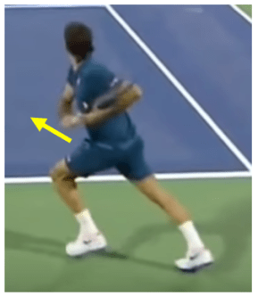
Rafael Nadal utilizing both racket rotation and upward translation to generate maximum spin on a knee height forehand from the baseline. Elite players also utilize the same biomechanics on every forehand, regardless of contact point. Racket rotation can be easy to lose, especially on low balls, if adjustment to low contact is performed incorrectly.
Instead of adjusting their contact height using their arm – pulling it closer to their body to get the racket lower – elite players adjust by sitting down lower and tilting their torso. This way, the arm can flick out and around the body in the same motion relative to the trunk at every contact height, even a low contact. And thus, elite players do not lose the anatomical advantage of racket rotation when contact needs to be made lower than usual.
The Role of the Out Vector So what does out have to do with any of this? The out vector is the result of the volitional action by which we generate this racket rotation, the most important contributor to topspin. By consciously swinging out to the ball and contacting it laterally away from the body, we generate the force that causes the racket to naturally whip around the wrist. As we begin our hip rotation and swing the racket out to the ball, the racket naturally lags behind our relaxed wrist.
Then, as the racket gets to the end of its outward trajectory, the hand naturally pulls on it, causing it to whip around. Roger Federer’s relaxed wrist lags behind his hand as it is swung out to the ball. Then, as the racket hits the edge of its range of motion and can no longer continue out, it rotates around the forearm and is thereby explosively moving both up and forward through contact.
It’s like the racket is connected to the end of a string, and when the string goes taut, when our arm is finished extending, then the racket’s path continues around whatever trajectory it was started on before it hit the end of that range of motion – in this case, that inertia causes the racket to rotate about the athlete’s forearm.
This is not the case if the racket is flung to a contact point that is laterally closer to the body; in that case, there’s no outward force on the racket during the swing, and so the resulting racket motion as the racket hits the end of its range of motion is just back-to-front, no rotation. This pure, translational, back-to-front swing was common in the past in tennis, but it’s a swing that can’t generate anywhere near the level of racket head speed and topspin that the modern swing can.
Conscious Effort vs Automatic Results As tennis instructors, it’s important that we make it abundantly clear which movements during a swing are volitional, and which ones are automatic. Racket rotation about the forearm through the hitting zone is automatic – it is NOT created via conscious effort, and the wrist and hand musculature do not play ANY role in generating this rotational force (though they do stabilize the racket and string angle while that rotation is happening).
This is an extremely common misconception – many coaches harmfully instruct their students to “use your wrist,” despite the fact that the wrist’s job is just to relax and to allow forces generated by other parts of the body to act on the racket and whip it around that relaxed wrist.
Wrist lag, racket rotation, and essentially the racket’s entire swing path after the volitional initiation of the forward swing constitute dynamic positions; they are entered automatically as a result of other intentional actions taken before them.
Confusion Surrounding “Wrist Action” When tennis commentators talk about “great wrist action,” what they really mean is that the player does a great job of relaxing their wrist and allowing their wrist to act as a hinge transferring force into the ball, not that the wrist is in any way generating the force itself.
When Nick Kyrgios jumps off the court and slaps a 100mph forehand winner, the commentators often compliment his “live wrist.” What they are really complimenting is how relaxed it is, and how efficiently it transfers the power from his core into the ball. And when they talk about a player having a “strong wrist,” that’s simply a reference to the fact that the harder a player swings, the stronger their wrist must be to stabilize the racket during that swing.
It is NOT implying that the player’s “strong wrist” is creating that racket head speed by using its strength. The action that actually generates the racket head speed is the trunk rotation which flings the racket out and through the ball. Therefore, the action that a tennis player should think about while playing is just that – swing out to the ball and strike it away from the body. That’s it.
Do that with a relaxed wrist, and as your racket gets to the end of it’s range of motion, it will naturally and automatically rotate. Any conscious attempt at using the wrist or the arm to create the windshield wiper motion will typically just lead to harmful wrist tension, ineffective shots, and injury. So How Do I Actually Apply This?
The physics at play during the windshield wiper motion are pretty complex, so ignore the physics themselves when you’re on the court (but understand them off the court). Instead, just remember the cause and effect: Cause – swinging out to the ball with a relaxed wrist Effect – the racket will whip around the wrist and rotate through the contact zone We use this knowledge to debug our own forehand.
If you feel like, one day, you aren’t getting sufficient topspin on your shot, a failure to properly swing out to the ball may be the culprit. We’ve all had the experience where, certain days, our stroke feels great, but then, other days, all of its fault tolerance has evaporated and it’s a struggle to even get it in the court. Perhaps you’ve accidentally started violating the fundamental theorem of tennis. Perhaps you’re fatigued (or just being lazy), and you aren’t playing low and wide enough.
Or perhaps you’ve subconsciously altered your contact point, pulling it in towards the body, thereby preventing that dynamic, rotational racket flick which generates so much spin. Remembering to swing out, up, and through the ball, instead of just up and through it, is one more tool in your toolbox for fighting that inconsistency, and consistently maintaining that heavy, fast, fault tolerant forehand that makes tennis so fun to play.
The Modern Forehand – A Biomechanical Masterpiece The following is the introduction to The Fault Tolerant Forehand, available in eBook and paperback formats on Amazon. When performed correctly, the forehand is a stroke with a very large margin for error. Proper forehand mechanics ensure that the swing is fault tolerant – when things go wrong, the swing still succeeds. Mechanically unsound forehands are not fault tolerant.
Any small inaccuracy in timing, string angle, setup, etc, will cause a miss. Most forehand inconsistency is not proximally caused by those small preparation or execution inaccuracies, but rather by a swing which lacks the fault tolerance to handle them. Once proper mechanics are mastered, the forehand is actually very difficult to miss. Understanding this point is essential to evaluating your own forehand.
If, as you set up for the ball, your mind feels nervous and shaky – like the smallest mistake will send the ball flying into the back fence or spiraling down into the bottom of the net, that is because you are performing the forehand fundamentally wrong. Most forehand inconsistency is not proximally caused by small inaccuracies, but rather by a swing which lacks the fault tolerance to handle them.
Small Mistakes Shouldn’t Cause Misses During a correctly executed forehand, you can non-trivially mismanage your swing and still hit the ball in. You’ll notice that professional players, when they get a bad bounce (often near the baseline of a chewed up grass court), are still able to more often than not hit the ball back into play.
Usually, this takes the form of an awkward, jerky, arm reach in front of them where they kind of swat the ball back over, but we’ll get into the specifics of exactly what’s happening there later. Here’s what’s important: good players consistently succeed in continuing the rally even in cases when the ball’s position changes so suddenly. This is not merely natural, improvisational talent. Rather, this sudden adjustment is made possible by the forehand’s exceptionally large margin for error.
The quick swat or flick that they execute is the player cashing in on this margin. This ability to adjust is built in to the forehand once each body part is doing roughly what it’s supposed to be doing, and slowly disappears as mechanical flaws are introduced. Strong Fundamentals Create Fault Tolerance With weak fundamentals, any non-perfectly executed stroke is likely to fail, whereas with strong fundamentals, each individual stroke can be imperfect and still produce an adequate result.
You can be a little early, or a little late. Your racket tilt can be off by four or five degrees. You can set up a little too close to the ball, or a little too far from it. The ball will still go in.
It is precisely due to this flexibility that when a professional player is faced with a bad bounce, a bounce which suddenly requires the ball to be struck 6-12 inches away from the expected contact point the player had prepared for, they are able to quickly, often subconsciously, adjust and still hit the ball in. It’s not going to be a great shot, but it will go in, and that’s what’s important.
Even on the full stretch, Djokovic maintains balance and creates the correct string angle and racket path through contact, leading to a successful cross-court passing shot. The forehand fundamentals responsible for producing this exceptionally large margin for error are the subject of this book. Many recreational players are never told that it’s a fully attainable goal to set up for a forehand knowing you won’t miss, and the things they’re told instead often cause more harm than good.
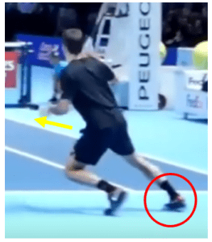
Two Rules that Govern EVERY Shot The following is a page from The Fault Tolerant Forehand, available in eBook and paperback formats on Amazon (click here). The Fundamental Theorem of Tennis is two rules that govern every shot in the game. They are as follows: 1. The racket makes a 90-135 degree angle with the forearm 2. The racket strikes the ball in front of the body (or, in a pinch, in front of the forearm) Any shot which follows these two rules will work.
I should specify that I usually verbalize this rule as “a 90 degree angle” instead of “a 90-135 degree angle”, even though that’s often an exaggeration; many shots in tennis are played with a 135 degree angle, but I find that verbalizing and thinking about it as “90 degrees” produces the best results, since many students’ natural intuition is to play shots with a straight, 180 degree racket/forearm angle, and thinking about “90 degrees” prevents this.
Roger Federer during a US Open Practice in 2019, loading his 115 degree forearm-racket system and preparing for a forehand swing Following these two rules puts the racket in a position to function as a trampoline off of which the ball can easily bounce. The forearm will facilitate velocity transfer back to the ball much better when the racket is perpendicular to it, rather than in line with it. Additionally, control over the racket is far superior in this position.
There are many ways to rotate the arm-racket system while maintaining a 90 degree forearm/racket angle, and all of these will produce good shots. Further, there are many axes along which the racket can flick around the hand when cocked at roughly 90 degrees before starting the swing. This is especially necessary for shots performed while on the dead run.
Mentally curing your racket to stay at 90 degrees will prevent you from attempting to adjust to balls by moving only the racket head without adjusting the entire arm-racket system; this incorrect, independent racket head movement elongates the angle between the arm and racket and causes you to lose fine control over the racket head’s movements.
As a last point of interest, as noted in the rule, in a pinch it’s not necessary to contact the ball in front of the body as long as the racket still hits the ball in front of the forearm. Think of full stretch volleys out to the side, or shots where the ball has bounced behind the player.
In these cases, as long as the player is able to maintain some sort of an angle between the racket and the forearm and get the racket flicking forward by the time it strikes the ball, the ball will usually go in. There are many different ways to flick the racket around the hand.
You’ll notice that good players on the full stretch often end up following through awkwardly in front of them, rather than around their body, because they’re focusing on generating any and all forward flick of the racket that they can muster from such a compromised position. The Fundamental Theorem of Tennis is just one of many principles discussed in The Fault Tolerant Forehand, which will be released in March of 2021.
Many pages from the book will be made publicly available completely free as they are completed, so don’t miss out! Great tennis is all about understanding what the game is truly about, and building from there. We don’t start with the joint angles, no “feet here, arms there, elbow does this, wrist does that.” Instead we start with a simple answer to a simple question.
How do I strike the ball to make it consistently do what I want? well July 15, 2021 I do not understand how to get in the 90+degree position. You have to lay the wrist back to get there? REPLY Johnny (FTF) July 16, 2021 Most players lay the wrist back to varying degrees, but it’s not necessary for the 90 degree angle. For example, on the one handed backhand, just make a fist out in front of you and put the racket in it. That’s basically the grip.
REPLY Poida July 20, 2021 My wrist will not lay back much, extension of around 40 degrees. Is the grip position that you mentioned for the 1hd backhand the same to be used on the forehand? A Western grip? Can I still achieve a whip action with a tight wrist joint? This has been a constant challenge to resolve on improving my forehand. REPLY Johnny (FTF) July 21, 2021 Great questions. 1.
The more Western your forehand grip, the less your wrist will naturally lay back, and the more Eastern your forehand grip, the more your wrist will naturally lay back. What’s important is simply that the wrist is relaxed. The small muscles in the forearm serve to stabilize the swing and prevent the racket from flying out of your hand, rather than serving to generate force themselves. The specific degree of wrist lay back isn’t an important detail. 2.
No, the OHBH and forehand grip is not the same. For the OHBH, the most common grip is the index knuckle on bevel 1. For the forehand, the most common grip is the index knuckle on bevel 4 (called the semi-western forehand). 3. No, you cannot achieve the whip action with a tight wrist. If you try to force it, you’ll injure your forearm and elbow.
The whip action comes from a relaxed wrist acting as a hinge while the bigger muscles in the body, specifically the hips and abs, twist you around and fling your racket out to the ball, then up and through it. 4. Relaxation is super tough to get a handle on. The key to relaxation is to learn how to swing slow and relaxed. When most people don’t want to miss, they tighten up. Instead, when you really don’t want to miss, try to just turn your body slowly, but stay super loose.
REPLY Poida July 20, 2021 “students’ natural intuition is to play shots with a straight, 180 degree racket/forearm angle, and thinking about “90 degrees” prevents this.” This is an excellent and very accurate observation! Just following up on my earlier post, does the 90degree angle relationship change to 180degrees when the swing gets to the “out” vector? REPLY Johnny (FTF) July 21, 2021 Very rarely, but on completely flat shots, sometimes.
Most of the time, lots of the rotation is transposed to be about the forearm, creating the “windshield wiper motion.” On a shot that’s completely flat, though, where the racket is swung totally level, it is possible that the wrist would go through 180 degrees, before going into flexion in the follow-through. I should stress that this is *only* true on very explosive shots, and only true for players who are experts at staying extremely relaxed with their arm and hand.
For beginners, they should really never have a 180 degree racket arm angle, and they should envision tennis as moving the entire 90 degree racket arm system around the court and through the ball. REPLY Poida July 21, 2021 Thanks for the helpful replies. I just bought the book, had trouble putting it down! Lots of really great points building clarity around this very challenging and very poorly taught stroke. Another coaching cue Hall of Shame candidate is the gravity drop “C” loop!
Perhaps the platinum medal Agree, the relaxation part of the stroke is hugely challenging. Breathing tip is gold. I trained earlier today with a focus on Rule 1 of the fundamental theorem and noted how difficult it is to maintain the 90degree angle as the swing speed increased using more hip/trunk twist to whip and flick the racket. The loose wrist and forearm we’re going crazy. Agree with your point about swinging slowly at first.
It’s challenging to control the racket face angle for fault tolerant contact at impact. Any further tips on this are greatly appreciated. Re points 3 and 4 in your reply, for clarification, by the hinging of the wrist, are you referring to extension and flexion movements of the wrist joint? Or the radial and ulnar deviation movement? Or both. The wrist moves in different planes and makes controlling the racket angle challenging.
Is is ok for a loose wrist to move freely in the swing in the ranges before and through contact? Getting the correct wrist feel sure is a battle. I have a bad habit of actively snapping the wrist to move the racket faster into contact. Retraining this is fun but challenging. The twisting concept is very helpful in that regard, as is the drop feed training. Thanks again for the book, the website, and these replies. Also joined the mailing list.
REPLY Johnny (FTF) July 22, 2021 Great, I’m so happy it was helpful! Yes, the “C” loop is another one that’s extremely misunderstood. On some forehands, the swing path does resemble a C, but that’s more of a coincidence – aiming at the C shape itself is akin to putting the cart before the horse. With respect to the 90 degree angle – I wouldn’t worry about it on your forehand.
As long as the wrist isn’t actively participating in the swing, and the hips and abs are the primary drivers of your racket, you’re probably fine. Every player’s wrist angle does completely unwind *in the follow-through*, so that angle will not remain static as you swing.
If you watch a high fps slow motion video of your favorite professional player, you’ll typically see that the 90 degree angle is created as the racket lags behind the hand, and then maintained for most of the racket’s forward whip, and then finally straightens out and subsequently goes into flexion (non-volitionally of course) after contact. As for the anatomical descriptions of the wrist action: 1.
The wrist is brought into extension (passively) by the weight of the racket, which wants to stay at rest, but is pulled forward by the hand. It typically remains in extension until after contact (again, not by conscious effort), although many players’ wrist extension unwinds by 15-45 degrees throughout the swing. 2. Both radial and ulnar deviation occur during the stroke, but the degree of each depends on your forehand grip. These shouldn’t be attempted consciously. 3.
A lot of the “wrist rotation” is actually the hand, wrist, and forearm all rotating together. Take your racket and pretend you’re wiping a window with it. A lot of the rotation on the forehand is this motion. 4. “Snapping the wrist” using your forearm muscle will actually slow down your swing, and over time may give your forearm and elbow an overuse injury.
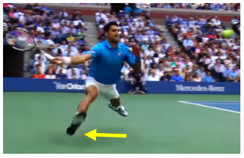
Here’s a video I’ve referenced before (unaffiliated) that explains the wrist’s role as a hinge quite well: https://www.youtube.com/watch?v=k_iLAQnOsRY REPLY Poida July 23, 2021 Really appreciate the helpful feedback! I’ve seen that video, it’s quite well done. I don’t think that they address wrist flexibility enough though and it’s impact.
Because my wrist is so tight (barely 40 degrees extension and that is with tension) I have trouble forming/maintaining the 90-135 degree racket/forearm relationship during the explosive part of the forward swing into contact using an Eastern grip. Centripetal force makes my wrist flop into neutral and some flexion at contact. My wrist feels relaxed only in a continental grip unfortunately. But it also feels somewhat relaxed in a Western grip.
I learned to hit a slice forehand, county grip when I started playing and learning/ generating topspin has always been a nightmare. I’m convinced that having a wrist extension flexibility range of at least 70degrees is essential to hitting a Fault Tolerant forehand. Have you ever coached a player with a restricted, tight wrist and found ways to overcome that liability? Recommended grip and progressions?
I tried the window wiping exercise and the racket face angle changes when I do this and my elbow hinges. I’m unable to maintain the same hitting arm position during my swing. What this suggests to me is that I’ve developed the habit of adjusting my arm to the ball to compensate for a tight wrist. Appreciate any suggestions/recommendations. REPLY Johnny (FTF) July 23, 2021 I haven’t worked with a player with a anatomical wrist extension limitation before; that’s interesting.
I think your instinct is right on: try a full western grip. This requires the least amount of wrist lay back of all the grips. You can try modelling your stroke after Iga Swiatek, a player who uses a full western grip while still staying extremely relaxed and creates tons of racket whip through the hitting zone. REPLY Poida July 23, 2021 Just another quick addition, I’ve noticed on video that near contact my racket face opens up before contact, even in a strong Eastern grip.
I suspect my wrist has something to do with this. Also, meant conty grip, not county lol REPLY Johnny (FTF) July 23, 2021 One of the only reasons I have students change their forehand grip is if their swing looks natural, but their racket-face is too open/closed at contact. In that vein, I think your desire to try switching to a Western grip is well founded.
If it seems like your string angle is always too open by contact, then it’s definitely a good idea to play around with a more extreme grip, such that the same motion with the rest of the body produces a proper string angle. REPLY Poida July 24, 2021 Thanks, moving towards Western is the plan. Yes, my wrist situation is the exception (lack of extension) however it’s not uncommon, especially as one gets older. Interestingly, my left wrist is normal.
I’m able to make almost a right angle between the racket and my forearm. From reading and rereading the book, I realize that I’m breaking Rule #1, allowing my wrist to straighten and losing that range of acceptable forearm/racket angle of 90-135degrees. In all my years of playing, not one coach ever picked that up. I’ve not been throwing the proper hitting arm system at the ball and maintaining that structure through contact.
I’ve been improvising with my arm and wrist, and often not hitting out in front. Really enjoying the book and finally understanding the stroke at a much deeper level. I’m sure this will translate to a much improved stroke in spite of my wrist extension limitation. It’s interesting that you’ve mentioned joint angles are not as important as they’re sometimes made out to be. REPLY Johnny (FTF) July 24, 2021 That’s really cool that you noticed you are improvising using your forearm muscles.
Are you the kind of person who, in order to strike a low volley, straightens the racket-arm angle out to push the racket head down? If so, very quickly after practicing with the new 90 degree paradigm, you should quickly find a new level of feel, and fine control over the racket head, that seemed totally foreign before. REPLY Poida July 26, 2021 You’ve read me pretty good! …..yes, I do indeed straighten my arm angle for low volleys …..and pretty much all shots.
I’m going to blame this on a tight wrist joint LOL. With volleys however, it’s easier to relax the hand and wrist in a continental grip. If you ever saw MacEnroe hit a forehand, you would not see any lag and whip in his stroke because he hit it with a continental grip, same with Jimmy Connors, and many others, especially serve and volley players of that vintage. It locks out the wrist. You may want to test and confirm this for yourself. Would be most interested in your opinion.
Can you get lag with a continental grip? Just to clarify, the wrist remains in extension until after contact (re your point #1 earlier. Regarding the “out vector”, from page 95 “The goal is to orient the racket-arm-wrist system such that the racket face rotates through contact roughly about the axis of the forearm, so that the string angle isn’t dramatically altered by the rotation.
This typically means holding the racket with a relaxed, neutral wrist, and swinging diagonally up to the ball” I’m confused about the “neutral wrist”, if I try to replicate this, the arm angle goes to 180degrees. I thought we need to keep the 90degree angle and the wrist laid back through contact…..or is this for beginners? The Federer images on page 96 show his wrist laid back and then it looks neutral at contact.
REPLY Johnny (FTF) July 27, 2021 If you watch tour level forehands, 135 degrees is typically about the most obtuse angle you see at contact. It’s fine for the angle to open up from 90 to 135, but if it’s opening all the way to 180 before contact, your contact point is probably off. For most people, a neutral wrist makes a roughly 135 degree forearm-racket angle. REPLY Poida July 27, 2021 Thanks, I’ll be focusing and practicing maintaining that angle.
I’ve been using the PermaWrist training device. It definitely helps maintain the 90-135degree angle. Have you ever used something like this with one of your students? Forehand practice with the PermaWrist tennis swing training aid https://youtu.be/RtVcK5YIJ7s REPLY Johnny (FTF) July 28, 2021 I haven’t used it before, but I suspect a strong evangelist for it could definitely convince me it’s worth it. REPLY Is “Snap Your Wrist” Good Advice? Well… no. Not empirically, anyway.
Just look around at your local courts, club, or league, and you’ll see plenty of “wrist snapping,” despite seeing precious little, you know… good serving. The cue just doesn’t work, and for good reason. When people hear “snap your wrist,” they think wrist flexion (the wrist bending such that the hand moves closer to the inside of the forearm). The serve is a throw, and throws are powered by an external > internal shoulder rotation flinging action.
What the apparent “snapping” really constitutes is primarily internal shoulder rotation, rather than wrist flexion. If we look at the greatest server of a generation, Pete Sampras, you’ll see very conservative wrist flexion, and yet an extremely exaggerated internal shoulder rotation. So if “snap your wrist” doesn’t work, why do coaches keep saying it? In short – because we are stuck in an inadequate signaling equilibrium.
Signaling Equilibria 101 Human beings are constantly in competition to signal their value to other human beings. Most people are familiar with this idea in a mating context – lipstick and blush for women, shoe lifts and muscles for men – but what many don’t realize is that signaling effects all walks of life, not just sex.
A CEO, for example, has to do more than just make good decisions – he also has to look like someone who’s in charge, he has to act like someone who’s in control, and he has to sound like someone with all the answers. These signals of competence, in the human world, unfortunately often matter more than competence itself.
This is where we, as a civilization, fall into inadequate equilibria – situations whereby both parties are harmed by deviating from the status quo, and yet the status quo is woefully inefficient. This is a massive topic, so I’ll leave two amazing sources here if you’d like to explore human signaling further: Inadequate Equilibria – How and Why Civilizations Get Stuck The Elephant in the Brain Signaling in Tennis Coaching “Snap your wrist” is a signal.
Every coach says “snap your wrist,” and because every coach says “snap your wrist,” every other coach also says “snap your wrist.” This cue has been enshrined in the Good Tennis Coaching class of cues. When a coach says it, they signal that they can produce cues from this Good Tennis Coaching set of things. Critically, it doesn’t actually matter whether or not “snap your wrist” is good or bad advice, it simply matters that it exists in the Good Tennis Coaching set.
So long as that remains true, it’s very unlikely that a coach’s reputation will be harmed by producing it. Your coach gets paid when he successfully signals to you that he’s a good coach. “Snap your wrist” is not unique. Many of the things your coach tells you aren’t that useful, but merely exist to signal that he can produce well known members of the Good Tennis Coaching set on command. It’s important to understand that your coach doesn’t actually get paid to make you better.
Your coach gets paid when he successfully signals to you that he’s a good coach. Due to that, many of the things he tells you serve the sole function of signaling to you that he’s a good coach – a distinct goal from the goal of making you a better player. This is subconscious of course – almost no coaches are actively aware that they’re doing this. It’s important to state here that it really is your coach’s job to signal to you he’s a good coach.
It’s not wrong that he’s focused on signaling – if he doesn’t make you aware of his coaching ability, you won’t come back. For your coach, the signaling is the more important goal, because his livelihood depends on the signal getting through. The Solution – Goal Alignment It is your job, as a paying customer, to make sure that the coach’s goal of signaling competence and your goal of getting better are aligned. It’s your job to distinguish between accurate and inaccurate signals of good coaching.
Cues like “snap your wrist” only permeate the coaching landscape because students, and the paying parents of those students, accept this poor signal of good coaching as an accurate signal. Accepting poor signals of good coaching is what causes students everywhere to continue paying for coaches who aren’t providing much of a differential impact at all. It’s your job to distinguish between accurate and inaccurate signals of good coaching.
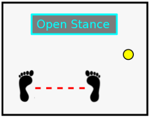
The easiest signal to look for in your coach is also the simplest – are you getting better? If yes, that is the strongest signal you’re getting what you pay for. In your first few interactions with a coach, this “making you better” can take the form of very little improvements, rather than big ones – things like improving your understanding of something or answering a long standing question you’ve had.
What’s important, though, is to discard the signals of good coaching that don’t matter, the most common of which is producing Deep Wisdom from the Good Coaching Advice set that isn’t helpful. I come across so many students who discuss disheartening experiences with learning how to serve, and, fascinatingly, these students frame themselves as the issue: “He just kept telling me to snap my wrist, but I just don’t know how to do that.
I guess I’ll never be able to serve.” This, clearly, is not a student failure, but a coaching failure. Serving is difficult. Only the most talented natural players are going to figure it out on their own. Allow Yourself to be Judgmental Be ruthless in your search for a good coach. Many students feel guilty leaving a coach, or asking to switch coaches at their club. It feels inappropriate to suggest that a coach may be wrong, and you, the lowly student or parent, may know better.
Who are you, after all, to doubt someone who can produce sacred wisdom like “snap your wrist” on command? This is where you need to develop your coaching immune system. Retrain yourself to find the signals in a coach that actually indicate they’ll be able to help you, and ignore the noise. A Compromise – Expensive Signals Certification attempts to solve the signaling problem, and it does an alright job. Certifications are expensive, both in time and in money.
Due to that, they are signals which are hard to fake. Compare something like the “snap your wrist” signal to the USPTA Elite Professional certification. For the first, you need to learn a phrase, and the rough rules on when to apply it. Student serves poorly, probably by pushing the ball over “snap your wrist.” For the second, you need: to spend hundreds of dollars to spend 10s of hours learning material to complete extensive on and off court testing Which one is a stronger signal?
Who are you, after all, to doubt someone who can produce sacred wisdom like “snap your wrist” on command? By investing so much of their time and effort into the certification process, a coach signals to prospective students a commitment to the craft, and that signal is worth a lot.
While the education aspect of a cert is certainly valuable, what’s even more valuable than the education itself is the message it sends about the coach – a coach with a certification has proven to be the kind of coach that seeks out further education. Remember The Best Signal? Well… The best signal of a good coach is that you’re getting better… right? Actually there’s one caveat to this signal – talented players. Exceptional athletes will improve regardless of their environment.
Yet, despite the athlete improving with our without quality coaching, the athlete’s coach will always get lots of credit. Most people don’t realize this phenomenon at play. Throughout all of sports media, coaches are constantly getting credit for things their players do. One has to wonder, in these cases, had the player been with a different coach, would things really have turned out any differently? A child phenom is a wellspring of money and status that everyone wants to be a part of.
Coaches desperately want their name attached to exceptional athletes. If a certain kid ends up nationally ranked, at a D1 school, or, even better, on the tour, then the reputation of every coach, trainer, adviser, etc that touched that player’s career gets a boost proportional to that success. A child phenom is a wellspring of money and status that everyone wants to be a part of.
Nick Kyrgios, in this mostly fun, but occasionally serious interview post his Aussie Open Double’s win, alluded twice to what I believe was this very phenomena effecting his young life: 2:22 “In the past, I haven’t had that many good people around me.
They’ve taken advantage of me.” And contrasting his own situation to Ash Barty’s: 4:47 “The people, around her, that have actually done so much, and actually care about her well being.” Back to First Principles We’re always talking about first principles here when it comes to tennis strokes, but the idea of first principles applies to coaching itself as well. When looking for a coach, you’re looking for a teacher.
You’re looking for a guide through this complex game, and you’re looking for these things because you want to improve. You don’t have to blindly trust your coach that produces deep wisdom like “snap your wrist” from the Good Coaching Advice set. If it’s not helping you, it’s not helping you. But when you have those “ah, ha” moments, or when, momentarily, everything clicks into place, those are the signals you want to look for.
Pay attention to those signals instead, and you won’t be out their “snapping your wrist” to produce an awkward 70mph serve into the middle of the net. 5 Signs of a Great Coach A great lesson is worth infinitely more than a bad one. And I mean that literally. It isn’t worth double, or triple, or quadruple its less effective counterpart. No, the difference in value is infinite. With a great lesson you improve. With a bad lesson, you don’t.
That might sound harsh, but the truth is it’s not uncommon to take a tennis lesson and actually get worse. Unfortunately, some of the common advice given by your typical club coach makes you more likely to miss, more likely to stagnate, and more likely to injure yourself than if you’d just hopped on YouTube and researched the strokes yourself. With that in mind, it’s up to you to judge the quality of your lessons and ensure you’re getting the value you paid for.
Here are 5 signs your coach is worth keeping. 1. Great Coaches Cause Cross-Pollination One of the strongest positive indicators of coaching prowess is cross-pollination – the coach’s advice for one part of your game improves another part you didn’t even discuss. This happens when your coach understands the fundamentals behind what they are teaching and instructs based on that.
These fundamentals often apply widely across the entire sport, not just to whatever stroke you happened to be working on, and thus when you understand them, you’ll frequently see benefits in your entire game, not just that one stroke.
This result falls in stark contrast to the coach who just regurgitates joint angle corrections that he learned when he was taking lessons growing up – sure, sometimes those corrections will be accurate, and they might improve one particular issue you’re having with one particular stroke, but because none of the reasoning behind the joint angle correction is communicated, cross-pollination of that improvement is extremely unlikely.
This brings us to sign #2, which is usually necessary for cross-pollination to occur. 2. Great Coaches Explains Things Adequate but not great coaches will typically give solid advice, but they often fail to communicate why you should be following it. Great coaches, on the other hand, will ensure that you understand the reasoning behind their instruction – learning the “why” will be an essential part of the lesson.
The “why” is what sticks with you, it’s what allows you to coach yourself when the lesson is over, and it’s the vehicle by which good advice cross-pollinates to the rest of your game. Let’s look at three levels of coaching for a particular problem – you’re struggling with the low forehand. Note that there’s more to coaching than just giving correct advice, as clearly the third coach is superior to the second.
Bad – Incorrect and Useless Get that racket under the ball! – This encourages straightening the wrist, a movement which will absolutely ruin the stroke’s fault tolerance. Gotta get under it! – Unhelpful and unspecific. Pick it up! – Encourages opening the string angle through contact in order to get the ball to go up – also ruins fault tolerance.
Better – Good Advice but Unfounded Bend your knees! – Getting better; the student should be adjusting with their legs, but “bend your knees” is both unspecific and often misunderstood. Get your body lower! – Correct, but unspecific as to how. Don’t straighten your wrist! – Again, correct, but how? If the student is straightening their wrist, they might not understand how to lower the racket without doing so.
Best – Conceptual and Technical Instruction The low forehand is a very similar movement pattern to the waist height forehand, but executed from a different starting point. First, a broad explanation of how the stroke should be understood. Get the racket lower by adjusting with with the larger parts of your body – the legs and trunk. This allows the hand, arm, and racket to do the same thing they do on a regular height forehand. A broad explanation of how to adjust, and why to adjust that way.
To lower the racket, sit down, widen your legs, and tilt your torso – don’t pull the arm in unless you have to, and only straighten the wrist as a last resort. Once you adjust with the core movers, just relax and rotate your trunk to initiate the swing the same way you would on a waist height forehand. Specific explanation of how to adjust, and why to adjust that way. This one is long. Longer explanations are typically necessary when a student is consistently mishitting a particular kind of shot.
If a student misses just a single low ball, a simple “tilt your torso” can definitely remind them of what they already know, but if they are consistently missing every low ball, it indicates a more fundamental gap in their understanding; they probably don’t know how to correctly execute the shot they’re attempting. The step that’s required here is instruction, not cuing. Taking a minute to stop and explain something thoroughly isn’t something a coach should shy away from.
Great coaches leave their students with an improved understanding of their strokes, not just with cues to remember. 3. Great Coaches Talk a Lot If you’ve paid $90 for a 60 min tennis lesson, that’s $1.50/minute. You’re already wasting some of that time for ball pick up, so that’s a lot of money for someone to silently feed balls at you. Fundamentally, a lesson is about telling the student what they’re doing wrong and how to fix it, which isn’t a positive experience in a vacuum.
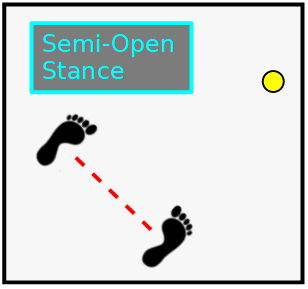
Even when there’s nothing too important to say, great coaches are engaged on a personal level. Small encouragements like “great job,” “doing great,” and “keep it up,” do wonders for the emotional atmosphere of the lesson. Encouragements to negative events – the “you got this” and “no worries” of the world – further this supportive, instructive atmosphere.
Remember, fundamentally, a lesson is about telling the student what they’re doing wrong and how to fix it, which isn’t a positive experience in a vacuum. A friendly spigot of verbal of positive reinforcement helps alleviate this. Speech and encouragement is especially necessary during physically exhausting, conditioning related training, and even more important when these activities are done with kids.
Kids need to learn that training is supposed to be hard; if it’s not harder than a match, it’s not helping that much, so the coach, as the authority, must clearly and unambiguously communicate that it is good that they’re uncomfortable. 4. But Great Coaches Don’t Correct Too Much While lots of talking is almost universally helpful, too much correction is not.
Though the lesson experience as a whole will be positive, a correction is inherently negative, and as such corrections should only be used when necessary. Overloading a student with corrections is both annoying and counter-productive. It doesn’t matter if a student presents with, say, four major flaws in their forehand. A quality coach will pick whichever one they think will be the most impactful to fix and just correct that one.
When the student executes that fix correctly, even if they miss the shot itself, it’s “great attempt” and “I know you missed, but that’s what I want,” that are far more productive than a correction. Great coaches are essentialists in their correction – they only correct when it appears the student is unaware of what they’re doing wrong. The worst thing a coach can do is try to correct all the student’s flaws at once.
To the student, that feels like an endless barrage of confusing and unrelated corrections, and as they go to swing, they have no idea what to actually focus on. Even when a student is only working on a single correction, it’s still not appropriate to correct them every time they mess it up. They’re going to mess it up a lot – it is a novel tweak to their stroke, after all.
Great coaches are essentialists in their correction – they only correct when it appears the student is unaware of what they’re doing wrong, not when they’ve simply failed to execute something. There’s no reason to berate a student with the same correction over and over, even if they’ve missed a string of balls. Sometimes, a rephrase of the correction is necessary, but not always.
As long as the student is still clearly attempting the right thing, a great coach will break the silence with a simple “you got this” instead. 5. Great Coaches Prioritize Static Positions and Movement Patterns Static positions are positions that an athlete stops, or effectively stops in. These are great positions to coach, because they are almost always entered totally volitionally. The trophy position and the end of the forehand backswing are two examples of static positions.
Most strokes are best understood as a static position, and then a movement pattern out of that static position. The serve is the trophy pose, followed by a throw of the racket. The forehand is the end of the backswing position, followed by a twist of the trunk. Teaching strokes in this way improves the student’s proprioceptive awareness of their actions as they learn.
Most humans can’t feel their exact joint angles and limb orientations in space during an explosive movement, but they can feel them in a static position like the trophy pose.
And once the explosive movement starts, they don’t know what it feels like to “create 60 degrees of external shoulder rotation,” but they do know what it feels like to “twist,” to “throw,” to “sit down,” or to “jump.” Coaching based on static positions and movement patterns, instead of dynamic positions and joint angles, gives the student the gift of feedback. Not from you, but from their own senses.
If they know what it feels like when it’s right, they can use their own proprioceptive observations to correct their strokes on their own. In the End, Great Coaches Help You Win If you want to simplify the evaluation process, evaluate your lessons on one simple criteria – are you winning more than before you started working with your coach? The classic “I play great in my lessons, but bad in matches” is a misnomer – all this really means is that your lessons aren’t very useful.
What does it mean to “play great” in a lesson if that “greatness” wasn’t transferable to a competitive setting? Is your goal to hit the same slow, flat, feed over the net 20 times in a row, or is it to win tennis matches? Great coaches will provide you instruction that will improve your game, and your understanding of the game, at a fundamental level, and with them week-by-week, and month-by-month, you’ll see yourself improve faster than you ever thought possible.
Bronze: “Bend Your Knees” “Bend your knees” is one of the most overused and oversimplified cues given not just in tennis, but in sports in general. When most coaches say “bend your knees,” they are trying to cue their student into some form of the basic athletic position: the hips are low and back while the lumbar spine is neutral.
The athlete is slightly bent over via hinging at the the hips, and the posterior chain muscles (the glutes, hamstrings, and lower back) are lightly loaded and ready to facilitate explosive movements in any direction. The problem is that “bend your knees” doesn’t cue most people into this position. Instead, it causes them to, of course, just bend their knees.
They shift their weight forward onto their toes, decrease their knee angle, and bend forward with a rounded lower back to prevent from falling backwards. This posture deloads the hamstrings, glutes, and lower back musculature; precisely the opposite of what we wanted. And unlike the athletic position, this forward-leaning rounded-back position leads to a striking lack of balance, coordination, and explosiveness.
The body is in an even more compromised position than before the “bend your knees” cue was given – this alignment is a common cause of both knee and lower back pain.
Instead of naively cuing “bend the knees,” we teach our athletes to proprioceptively feel the athletic position. “Sit Down and Back” What the athlete should be doing is better described as “sitting down.” Sitting down causes the hips to shift down and back, the knees to track both out and sometimes forward, and a forward lean facilitated by hinging at the hips with a neutral, non-rounded lower back.
Thus, by “sitting down” the athlete enters the athletic position, engaging the posterior chain and keeping their balance over either the middle of the foot, or the ball of it, depending on the situation. In the correct athletic position, the knees will bend, but for almost every student, that’s a result of entering the position, rather than the movement that caused them to enter it.
In no instance is the forward knee shearing, toe balancing position students (especially kids) get into upon “bend your knees” appropriate. Here’s the tricky part: after a student enters this position, their knees are in fact bent, so to the untrained eye it can look like the goal of the cue has been accomplished.
If the thought process was as simple as: the knees aren’t bent, and they should be, then the coach may believe that the issue (which they perceived as nothing more than “straight legs”) has been fixed. The knees are now bent, after all; that particular joint angle has been “fixed.” But the underlying problem wasn’t actually addressed. The forward knee shearing, rounded back, toe balanced position that most students enter upon “bend your knees” is not the athletic position.
We can only hope the coach notices the flaw, back peddles from the “bend your knees” cue, and finds a different way to get the student into the athletic position. Proprioceptive Awareness Fosters Long Term Success The entire mess can be avoided if, instead of naively cuing “bend the knees,” we teach our athletes how to proprioceptively feel the athletic position (perhaps the most important static position in tennis).
They need to know what it feels like to have their posterior chain loaded, their back flat and hinged at the hips, and, yes, also a smaller knee angle. They need to recognize the sensation of being primed and ready to support explosive movements in any direction; this proprioceptive awareness will improve their balance and athleticism across all sports, not just tennis.
Again, the “bend the knees” cue will not give athletes this awareness, because “bent knees” is just one of many biomechanical changes a person previously unfamiliar with the position will have to take to correctly in order to enter it. “Sit back” or “sit down and back” are far superior cues. Most students will already have an idea of how to coordinate their body to perform a “sit” action, and this cue will hijack that awareness.
Notice that “sit” is a human movement, while “bent knees” is a single joint angle. In general, cuing a movement pattern is far more effective than cuing a joint angle. Joint Angles Are Secondary Typically, a single joint angle is a symptom, not a cause. It’s not that the “knees aren’t bent,” it’s that the athlete is standing up straight instead of sitting. It’s not that the “hips aren’t square at contact,” it’s that the athlete doesn’t know they’re supposed to be twisting as they swing.
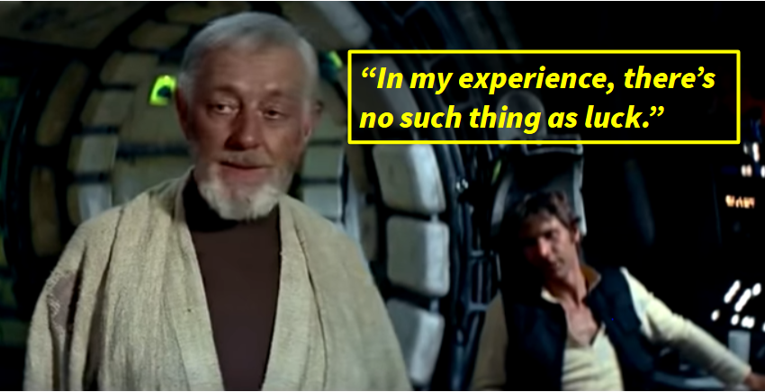
You’ll be amazed at how many individual limb placements and joint angles your student will fix on their own, without you having to mention them specifically, just because they’re trying to do something like “twist” or “throw.” In general, cuing a movement pattern is far more effective than cuing a joint angle. “Twist,” “jump,” “throw,” “sit,” “lunge.” Start broad, then work to narrow as it becomes clear what the athlete’s particular hangups with the movement pattern are.
We don’t cue an individual body part until it’s clear that that body part is the critical missing link in an otherwise functional process. Cuing joint angles is for getting the athlete’s movement pattern the last 20% of the way there, and certainly not for getting a kid unfamiliar with the athletic position into it for the first time. Adjusting To Low Balls The EFFICIENT WAY The key to effective stroke production is efficient bio-mechanical alignment.
For every shot, there are certain body alignments which produce racket head speed most efficiently and most consistently. The more often we can align our body properly before swinging, the higher quality, and the more fault tolerant, our shots will be. On the forehand, our bio-mechanical advantage is our ability to whip the racket around the torso unimpinged.
The tricky part is routinely getting ourselves into these alignments while playing many different balls, at different heights, from many different positions on the court. We need to contact the ball in a myriad of different locations, and yet in doing so we need to use a remarkably consistent relative upper body position. On the forehand, our bio-mechanical advantage is our ability to whip the racket around the torso unimpinged.
In order to allow this, we need to maintain adequate space between our torso and arm – if the angle between the torso and the arm gets too narrow, the arm won’t naturally flick out and around as we rotate our trunk. Therefore, we need to adjust our contact height without significantly changing our arm angle. This is accomplished by adjusting with the larger muscle groups. We always adjust with the largest muscle group we can.
This means we have two primary methods of adjustment: Adjust with the legs, either by sitting down or widening them Adjust with the torso, by tilting it Rafa Nadal adjusting his body to for a regular height (left) versus a low (right) contact point. On the low ball, his torso is far more tilted, and his legs are far more bent, while the relative alignment of the upper body is almost identical.
The vast majority of our forehands will be played with an identical torso-arm angle, regardless of contact height, with adjustments made via the legs and torso. Legs and torso adjustments are the only two effective adjustments, as they are the adjustments that let us alter the contact height without impeding our torso-arm-racket alignment – the alignment which facilitates our rotational whip. Suboptimal Adjustments Adjustments of the arm and wrist are a last resort.
When sufficient adjustment can’t be made by using only the legs and torso – perhaps we’re on the dead run or the ball is coming so fast that we don’t have time to move – then we adjust with our arm (not the hand or wrist). Only as a last resort do we adjust by straightening our wrist and violating the Fundamental Theorem of Tennis. We either elongate it or bring it closer to the body, as called for by the situation, but we do not violate the fundamental theorem of tennis.
Adjusting with the arm is not ideal, but since we maintain the right angle between the forearm and the racket, and since we contact the ball out in front of us, the shot will still go in. It won’t be great, but the rally will continue. Only as a last last resort do we adjust by straightening our wrist and violating the fundamental theorem of tennis.
A common case of this is when the ball is so far away that even on the dead run we are just barely are able to make contact – we simply need every inch of legs, arm, and racket fully straight in order to reach the ball. If you find yourself in this situation, try to hit it in front of you and pray it goes in. The shot is not going to be fault tolerant.
The Fundamental Theorem of Tennis as a Cure For Improper Adjustment Focusing on the fundamental theorem of tennis helps many players break bad adjustment habits. All too often, I see players using their wrist to adjust to low balls. They elongate their racket-forearm angle (violating the theorem) in order to get the racket head low enough to hit a low ball, and in doing so lose all stability and control.
To avoid this, ensure you’re always throwing a relaxed right angle racket-forearm system through the ball. For most players, thinking about this causes them to naturally adjust with the larger parts of the body, the legs and torso, rather than the wrist. Arm adjustments do not violate the fundamental theorem of tennis, but they are not optimal.
You can move your arm closer or farther from your body without interfering with the forearm-racket system, and thus these shots will still be relatively fault tolerant and frequently go in, but they’ll be lacking in power because they don’t harness the rotational kinetic chain nearly as well as shots where adjustment was made with the legs or torso.
Dynamic vs Static Positions While there are numerous different teaching mistakes that lead to ineffective coaching, many of them stem from the same fundamental misunderstanding – confusing cause and effect. Some body movements are actively, volitionally caused by the athlete; in order to hit an overhead, the athlete will consciously throw their racket up and out to the ball.
Other movements, though they do happen, will happen automatically (and often subconsciously) as a result of the forces generated by other volitional actions. Cuing these subconscious movements is a recipe for disaster. A dynamic position is a position that is only entered while in motion, and it is almost never volitional. A static position is a position that is entered into and then effectively held in place, and it is almost always volitional. Here are some examples.
End of the forehand backswing Static – Though most professional players never completely stop here, you could, and it wouldn’t effect the swing that much. The final position of our body before the forward swing is very volitional, and should be entered consciously. Wrist lag during the forehand swing Dynamic – Inertia causes the wrist to lag backwards as the body’s rotation pulls the racket forward. This happens passively as a result of a relaxed wrist during the swing.
The tighter the wrist, the less this happens, and the less effectively the wrist functions at transferring force from the rotational chain into the racket. Trophy position during the serve Static – Similar to the backswing in the forehand, most players don’t actually have a totally stationary trophy position, but, again, you could, and the forward swing would be almost unaffected.
In fact, you see this when players hit overheads during points – their final position before the swing is almost completely static, and yet their power is barely effected. Back scratch position during the serve Dynamic – Just like forehand wrist lag, the back scratch position is reached because of inertia. When the upper body rotates in a throwing motion, throwing the racket out to the ball, the racket and wrist naturally lag behind the arm, and the shoulder rotates.
This external shoulder rotation, like the wrist lag in the forehand, is passive, and, like the wrist lag, is more effective the looser the wrist and arm are. Implications for Coaching Very rarely is it appropriate to attempt to directly cue an athlete into a dynamic position, even though the positions themselves are still useful coaching tools. Dynamic positions do give a coach useful insight into how their student is performing the volitional parts of the stroke.
If their wrist is lagging on their forehand, they’re probably swinging right. If their racket is back scratching on the serve, they’re probably serving right. But these positions are only useful as checkpoints used for evaluation, not as body alignments that students should try to enter with conscious effort. How do we move our body around? By contracting muscles. Movement necessarily entails a lack of relaxation.
Almost all dynamic positions in tennis work better the looser the involved body parts are. This means that it is wholly and completely counter-productive for the athlete to pay any conscious attention to those body parts (well, other than keeping them relaxed). How do we move our body around? By contracting muscles. Movement necessarily entails a lack of relaxation. In order to move the body, a muscle must flex.
Therefore, we need to make sure the things that we actively try to do, the positions we consciously try to enter, are the ones for which contracting our muscles is appropriate. I want to tighten my glutes and hamstrings in order to prime my legs. I want to contract my trunk in order to turn my chest sideways before swinging. What I do not want to do is in any way contract the muscles of my hand or wrist (except sometimes slightly in order to change the direction of the ball).
This is why the “point your butt cap at the net” cue is so damaging – it leads to a tight wrist, which causes precisely the opposite result we were aiming for: when tight, the wrist functions less efficiently as a hinge to transfer force. The backscratching cue on the serve is almost just as bad. Teaching our students that the back scratch is a static position damages their serves for as long as they believe it. The serve is a throw.
Imagine teaching a baseball player to rotate their shoulder back, pause, and then throw from there. Ridiculous? Of course. Cue Static Positions (and then actions) Every quality instructor, in all athletic activities, not just tennis, needs to understand which positions in their particular sport are dynamic positions, and which positions are static positions. Static positions should be cued.
When an athlete is hitting their static positions correctly, they will often naturally enter the dynamic positions effectively, too. Dynamic positions are not reached volitionally, so the knowledge of what the position is supposed to look like is useless to the athlete. Dynamic positions should not be cued. If an athlete is moving from a correct static position into an incorrect dynamic position, the solution is not cuing the dynamic position. Doing so just creates harmful tension.
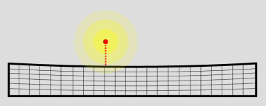
Remember, dynamic positions are not reached volitionally, so the knowledge of what the position is supposed to look like is useless to the athlete. Instead, the coach must figure out which force vector is misaligned or lacking, that, if correct, would lead to the correct dynamic position. “Throw your racket out more.” “Rotate a little earlier.” “Whip your chest around.” These are the kinds of cues that fix strokes.
When attempting to fix a dynamic position, cue actions, movement patterns, rather than joint angles. Your student has no idea (and should have no idea), what the precise angle of their external shoulder rotation is during the back scratch position as they serve. What they need to know instead is to throw their racket up and out to the ball from their trophy position.
So let’s stop creating hitches in swings and tension in limbs by irresponsibly cuing dynamic positions, and leave “point your butt cap at the net” and “scratch your back when you serve” permanently quarantined in the coaching cues hall of shame where they belong. Gold: “Roll Your Racket Over The Ball” Silver: “Point Your Butt Cap at the Net” Bronze: “Bend Your Knees” How the Feet Liberate the Hips A full hip rotation is impossible if both of your feet are firmly planted on the ground.
Trying to rotate your hips while your feet stay planted will put a large amount of torsion force on your knees and ankles; don’t do it. Therefore, your feet will need to come off the ground, at least partially, in order to hit a proper forehand. Each of these footwork patterns is simply a manifestation of letting the feet move freely. The feet naturally want to get out of the way when you rotate your hips; your brain knows not to send that torsion force into your ankles.
So as long as the player allows their feet to move freely, and doesn’t keep them locked to the ground, these patterns will occur naturally. That said, it’s still worthwhile to learn what these patterns are, what they look like, and when to use them. Unconscious competence can only get you so far; in the end, every athlete should know why they’re doing what they’re doing, even if they do it naturally, so that they can replicate it on command.
Here are the four common patterns by which the feet move to allow hip rotation. 1. The Non-hitting Foot Comes Up This is one of the most common footwork patterns used during the hip twist. The non-hitting foot comes up off the ground, while the hitting foot remains on the ground.
As the player twists their body around, they rotate on the ball of the hitting foot [right one for rigght handed player], and the non-hitting foot [left one for right handed player] doesn’t restrict this rotation at all, since it’s in the air. Both Novak Djokovic (left) and Roger Federer (right) using the same left-foot-up footwork pattern to allow necessary hip rotation on an inside-in forehand. This is a great footwork pattern for rally balls and neutral balls.
Typically, a player can’t move forward into the court using this footwork pattern, so other patterns are used to twist on shorter, slower balls. 2. The Player Pivots On Both Feet Djokovic striking a hard, cross-court forehand by pivoting on both feet together, keeping his weight on his front foot. The double foot pivot is most useful when the player’s weight is moving forward, likely because they’re looking to be aggressive.
If a player wants to follow their shot through into the net, then picking the front foot off the ground and rotating about the back foot isn’t a great option; that won’t generate any sort of forward momentum through the shot. Instead, the better option is to pick both heels off the ground and simply allow the feet to twist along with the hips as they rotate.
This footwork pattern works very well on aggressive shots from the baseline and on approach shots inside the court, since, on both of those kinds of shots, the player wants to transfer their weight to their front (non-hitting) foot and take the ball early. This stance is stable and low impact. It doesn’t require jumping off the ground, and works particularly well when returning slow, low balls like slices.
On every full forehand swing, a hip twist is required, but due to the nature of a low ball, it would be very difficult to get either of the feet off the ground while striking it. Thus, for low balls, picking both heels up and pivoting on the balls of both feet works best. 3. The Hitting Foot Comes Up and Kicks Back Federer utilizing his classic “hop step” to strike a high, slow forehand aggressively and continue forward to net.
Another aggressive footwork pattern that’s commonly used when a player wishes to come forward involves a conscious drive off the hitting leg. The player initiates their twist by driving so hard off the hitting leg that it comes up off the ground, and as the player subsequently twists their hips, this off-the-ground hitting foot naturally kicks back behind them.
It’s extremely important that the player’s non-hitting foot is not restricted during this process, as, again, if it’s firmly planted on the ground, an ankle snapping amount of torsion force is going into that ankle (or maybe the knee). A common, natural way to handle the large amount of force placed on the front (non-hitting) foot during this pattern is to allow it to come up off the ground as the force pulls it.
This particular footwork pattern, often known as the “hop step,” is a favorite of Roger Federer when hitting approach shots. Don’t be misled by the name, though. There is no conscious “hop” in the traditional sense; the player doesn’t try to hop off the front foot at any point, but rather just allows the forces that want to pull the foot off the ground during the follow-through to do so. 4.
Both Feet Come Off the Ground There are two different applications for the both-feet-off-the-ground forehand that are pretty disparate in nature. The first is if the player is lightly on the run – not on the dead run, but still required to hit without setting their feet. Nick Kyrgios is famous for the jumping forehand – a shot during which the lower body and trunk generate a massive amount of force, and the arm and wrist stay relaxed to transfer that force into the racket.
In this case, it’s usually optimal for the player to perform a small jump as they rotate their hips back towards the target. This allows their feet their full range of freedom during the twist. Having the feet in contact with the ground while moving sideways and twisting the hips is a recipe for injury, and it’s best avoided by taking a small jump when striking a forehand on the move.
The second case is when the player wants to hit a shot really, really hard, and both legs are driving so hard off the ground they’re going to fly off of it. This shot is most commonly used on high, slow, short balls, and it’s very effective when executed correctly. The important thing to remember about the jumping forehand is that all the tension is in the legs and trunk, and none of the tension is in the arm or hand.
The exterior links in the kinetic chain must stay completely relaxed in order to efficiently transfer the force from the prime movers into the racket. The Forehand “C” – Myths vs Reality The “C” swing path on the forehand does exist, but I’m not a fan of its current mainstream classification as a first principle of the forehand, because it isn’t one.
The shape and manner of the “C”’s execution changes a lot from shot to shot, because, similar to other derivative aspects of the swing (like the volitional movement of the arm or the follow-through) the specific “C” motion used on a particular shot is dynamically chosen, often subconsciously. The “C” shape itself is not a biomechanical underpinning of the swing. It’s just created by coincidence in order to serve other, more fundamental goals.
On the forehand, the two primary goals are to create up-and-through contact, and to do so by accelerating the racket by rotating the strong muscles of the hips and abdomen. The resulting various “C” like swings are merely a way to naturally accomplish those goals. I see two issues in coach-player communication, which are common across tennis coaching, that manifest when the “C” swing is coached.
It’s Actually a Warped “C” When an actual “C” is superimposed on Roger Federer’s forehand swing path, it becomes clear that the shapes aren’t as similar as they initially appear. The first issue is that a player interprets what the coach tells them to do as being part of the “backswing,” even though it isn’t. With the “C,” some players do not realize that much of the downward part of the C actually occurs during the forward swing.
This part is quite abbreviated in its depth; while it happens, the racket is primarily moving forward, not down. This misunderstanding almost can’t even be called a misunderstanding, because the student is trying their best to create a “C” like they’ve been told. As they try to create the “C,” they’re unaware that the actual swing isn’t exactly a “C,” but rather a modified, warped version of that shape. It’s closer to something like the Nike whoosh, not symmetrical in top and bottom at all.
It’s Not Just a Hand Motion Second, a player doesn’t always realize which muscles drive a motion their coach is telling them to emulate. With the “C,” this misunderstanding results in a player moving their hand around directly, primarily using the arm and chest, rather than moving it using the muscles of the core. Rafael Nadal’s core is unwinding and driving the racket forward during the bottom arch of the the “C” swing.
While the “C” motion does exist (roughly speaking), the “C” is not a motion created primarily by moving the hand around with the arm and chest muscles. The initial backward motion of the hand is entirely due to the core rotating away from the target. The remaining backward motion is elbow extension; it is not due to pulling the hand back behind the chest. The hand is then lowered, and this lowering involves the legs and torso, not merely bringing the arm closer to the body.
Any remaining downward action takes place during the forward swing, and it’s mostly a passive effect of not resisting gravity. The hand isn’t actively pushed down by the player. The Underhand Pendulum Swing Beginners, especially young children, who are taught the “C” as a first principle, often start driving the ball with the wrong force generator. They pull the racket back high, then use gravity to let it fall down and forward like a pendulum.
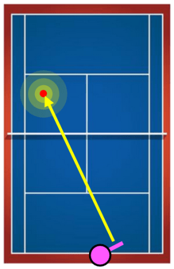
It hits the bottom of the pendulum motion, then bounces back up and hits through the ball. I see many players who are coached on the “C” as a first principle end up with a purely arm driven swing. These beginners initially coached on the “C” end up with a purely arm driven swing, during which they remain sideways, never unwinding their hips and abs.
This robs them of the most efficient, effective engine available to them on the forehand, and develops in them a proprioceptive misunderstanding of how racket head speed is generated. This gravity pendulum effect is a very small effect when it comes to generating force in the modern forehand. Nearly all the force is generated from forward leg drive and hip and abdominal rotation, not the gravitational pendulum.
Therefore, despite the fact that a modified “C” swing path does exist, coaching to that effect doesn’t appear to drive the typical beginner’s natural sense of proprioception to the right place. When they try to orient their body to “perform a C,” they end up accidentally teaching themselves that the forehand is a gravity driven pendulum, rather than a forward twisting motion.
The “C” Can Prevent Jerkiness Before we move onto what I believe to be a superior way to understand the forehand, I’d like to give the “C” shape some credit. The most comfortable way to allow the racket to flick out to the ball, and then up and through it, is in fact to allow gravity to pull the hand down slightly as it begins to move. The “C” definitely implies that such a downward motion exists.
The hand absorbs the core’s rotational energy most efficiently when allowed to follow its natural shallow down-then-back-up pattern. Without allowing the racket to initially travel down during the forward swing, the motion is far less comfortable, especially on the elbow.
If you fully stop the hand after preparation, and then you jerk it only up and forwards from there, actively preventing gravity from pulling it down, the core’s rotational energy won’t be transferred to the arm/racket/hand system as losslessly. The hand absorbs the core’s rotational energy most efficiently when allowed to follow its natural shallow down-then-back-up pattern.
The Two Part Forehand Paradigm I like to think of the forehand swing as two steps, rather than one: Preparation Forward swing The preparation phase ends with the player preparing their hand for the forward explosion. This typically involves lowering it to a height from which it can easily flick up and through the ball. As the “C” correctly asserts, the most comfortable way to fling your hand forward typically involves the hand being allowed to move down first.
As a player practices, they’ll gain an (often subconsciously) understanding of to what degree that downward motion happens on each shot, and they’ll learn to lower their hand appropriately during preparation to account for that. At the end of Rafael Nadal’s preparation (left), his hand has been lowered and separated from his body. The rest of the hand’s downward trajectory, the bottom of the supposed “C” motion, occurs during the forward swing (right).
By this point, Rafa’s hips and abs have already begun to unwind. After preparation and before the forward swing exists a waiting period. The waiting period is critical to success in the absence of rhythm. To be able to consistently time balls of various speeds and spins effectively, forehand preparation should be completed as early as possible once the oncoming ball’s trajectory is discovered.
This early preparation allows for maximum improvisational freedom with respect to the forward swing itself, because the body has a large window during which it’s fully ready to swing, and the swing can be initiated at any point in that window. This waiting period can be implemented as a completely static position, but it’s more effective to slow down or speed up the lowering the hand phase in order to time the incoming ball.
When preparation is done very early, the hand should be very slowly lowered into position, and similarly, when preparation is done very late, the hand should be quickly thrown down into position and then immediately yanked forward by the core’s rotation from there. Instead of Thinking About a “C”… For the top half of the C, just think about regular forehand preparation. Turn away from the ball, and once you do, lower your hand into position.
Lower your hand quickly, if you’re pressed for time, or slowly, while you wait for the ball, if you’ve prepared very early. For the bottom half of the C, don’t think about the racket path at all. Visualize the kind of contact you want to make with the ball, relax your hand and arm, and then drive the hand/arm/racket system forward by twisting your core. Find an arm path that’s comfortable for you, for which you can feel the efficient transfer of force from your explosive turn into your racket.
Allowing your hand to dip somewhat and then bounce back up will feel most fluid, but you’ll need to find the exact manner in which you do so via experimentation. If you force your hand down and back up, the swing won’t work. Federer’s “C” swing split into two motions which better explain what’s happening. During preparation (left), Federer lowers his hand, preparing for the forward explosion. This can be done quickly or slowly.
The remaining part of the supposed “C” is merely the forward swing (right), during which the hand is driven forward by the core, and is allowed to briefly dip down at the beginning. Try to figure out what your hand wants to do as you drive it forward with your hips and abs. If something hurts, don’t do it, and if feels good, keep doing it. The “C” shape is merely a rough visual explanation of what the hand happens to do during the swing, rather than something the hand tries to do.
As the hips and abs drive the hand forward, the hand is allowed to fall down a bit before flying back up through contact. The primary goal of the forward swing is not to create that lower “C” path. The goal is to create explosive up-and-through contact with the ball.
Allowing the racket to fall and then spring back up is often the best way to transfer the force from the core’s rotation into that up-and-through contact, but, again, that down-then-back-up motion occurs in service to the rest of the stroke, rather than constitutes its engine itself. https://www.feeltennis.net/universal-swing/ More on the physics of the Swing http://ftptennis.net/ftp-tennis-college/ftp-tennis-college-courses/technical-tennis/the-forehand/section-02-the-forehand-introduction/section-03-the-forehand-swing-components/#:~:text=Groundstrokes%20are%20basically%20a%20circular,when%20viewed%20from%20the%20side.
Wait Then Fire – Success in the Absence of Rhythm The final phase of forehand preparation is a waiting period. The forehand swing is not a single, continuous motion. There isn’t a uniform, rhythmic flow from preparation to forward swing. Instead, preparation and forward swing are two distinct steps, preparation happening as soon as possible, and forward swing happening once the ball reaches a certain point.
Take Grigor Dimitrov’s winner, the preparation for which is depicted below, for proof of this fact. In the image, the ball has only just crossed the net, and yet Grigor is already fully prepared for the shot. His entire kinetic chain is wound, and his racket is ready. Obviously, were he to swing now, he would miss the ball, so the final step before Grigor initiates his forward swing is to wait until the ball reaches the proper contact zone.
Grigor Dimitrov about to blast an inside-out forehand winner past Fernando Verdasco in the Wimbledon 2021 second round. What’s so demonstrative about this shot, specifically, is that Grigor actually doesn’t take a single step towards the ball while preparing: after Fernando’s shot is struck, Grigor quickly realizes that the ball is already traveling directly to his contact point, and so there’s no need to move his body.
Since he’s already standing on the baseline, if he executes his shot from this location, he’ll be way ahead in the point. So instead of moving, Grigor simply: Loads his hips, turning them away from the ball Loads his abs, coiling his torso away from the ball Prepares his hand, placing it behind him Once he does that, he waits. He waits until he sees the ball into the perfect hitting zone, and then he uncorks and strikes the winner.
Success in the Absence of Rhythm Despite all the stoppages and walking around that occurs during a tennis match, pros almost never miss. Despite their opponent’s doing everything they can to change pace, change spins, and change directions, pros almost never miss. How? Because they understand how to wait between preparation and forward swing. This waiting period allows them to succeed in the absence of rhythm. Each stroke is a little different, and that’s okay.
Instead of one, fluid motion, the stroke is two parts: prepare for the strike, then execute the strike. I’ll leave you with a passage from The Fault Tolerant Forehand, which explains this concept in detail. Waiting is also a critical piece of forehand preparation that is often overlooked. Not every shot will occur in perfect rhythm. In fact, the better your opponent, the less rhythm you’ll have to work with on your forehands.
Forehand preparation is not one, fluid, continuous motion that occurs the same way every time. Far from it. Instead, as we keep mentioning, it is a means to an end. Proper preparation constitutes getting the body in position, turning away from the ball, preparing the hand, and then waiting until the ball is in the proper place to initiate the forward swing.
This waiting doesn’t have to be completely static – the “preparing the hand” phase can be done more quickly or more slowly in order to time the incoming ball – but, fundamentally, the last step of preparation is a short waiting period between body preparation and swing initiation. On balls that come extremely quickly, this waiting period may be zero. On balls that come extremely slowly, this waiting period may be long.
Your cue for when to initiate the forward swing is not that a fixed amount of time has passed since you started your forehand preparation. Rather, it is a visual cue. You are visually tracking the ball during your preparation, and once the ball gets to a certain location, you initiate your swing. The Fault Tolerant Forehand. “Success in the Absence of Rhythm.” Page 75. 6 COMMENTS Cyril July 3, 2021 It’s just a matter of definition. What is preparation ?
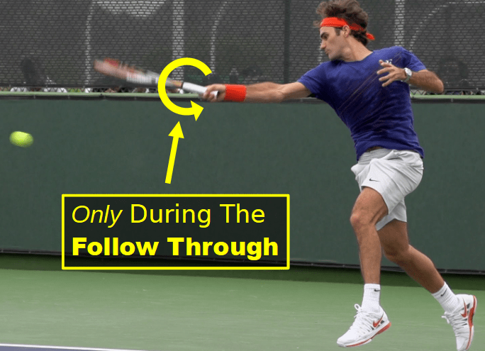
If you take into account the racket path, there’s the highest position, the rearmost position, the lowest position, the position at contact and the most forward position. The highest position has to be reached early and I call it the early preparation phase (power position with body weight mainly on the back leg). From this position you time the rest of the preparation phase to reach the rearmost position in relation with the start of the kinetic chain (leg drive).
Good work REPLY Johnny (FTF) July 21, 2021 That’s a very good point. Let me be specific: I like to encourage players to get to the lowest part of of their hand preparation earlier. Many players take the racket back on time by turning away from the ball early, but they fail to lower their hand early enough, and as a result they’re late on the subsequent forward swing.
REPLY Poida July 23, 2021 I can attest to the challenge of preparing the hand on time and then getting jammed or rushed and unable to generate racket head speed and clean contact. I’ve seen a video of Federer with the racket removed in slow mo and it seems his hand never stops moving in the backswing however clearly there are players who pause. Moving the hand into position is definitely a proprioception challenge when your trying to rebuild your stroke into a Fault Tolerant FH.
Are there any tips for overcoming this fault? REPLY Johnny (FTF) July 23, 2021 Again, I believe most players are not conscious of what their hand is doing during the prepare the hand stage. Some players take a big loop, some take a small loop, some completely pause, and some change it up on every shot.
The important thing, as I stress over and over again in the book, is just that you visualize the contact you want to create, and then, as early as possible, get the hand into a position such that all that’s left in order to create said contact is to explosively twist forward.
I’m fairly certain you don’t need specific proprioceptive awareness of exactly what your hand is doing during “prepare the hand”, but rather just a sense of the swing path you’re going to try to create, and the rough starting point of that swing path. REPLY Poida August 22, 2021 Thanks for this followup, sorry I didn’t respond earlier. Good points regarding the unconscious prep of the hand and the visualization process.
There’s the old saying “paralysis by analysis” and it’s an easy trap to fall into, and unfortunately some coaches unwittingly set up this trap for their students. Similar to baseball, it’s unlikely MLB or elite players think about their bat position when they’re at the plate. They already know which side of their body the ball will pass so their prep is done when they step into the batters box. The only job is to track and explode rotationally into contact they have visualized.
Everything is happing too fast to think about what the bat is doing in the backswing and transition into the forward swing. In training the forehand, and other swinging strokes, perhaps their are lessons we can learn from baseball. REPLY Johnny (FTF) August 23, 2021 Yep. Paralysis by analysis is hard to avoid when coaching a complex shot. Also, the kinetic chain on a baseball swing is remarkably similar to the tennis forehand.
The hips, abs, visual tracking, and maintenance of a still head during the entire motion are almost identical. REPLY A Primer on the One-Handed Backhand The one handed backhand is a simpler stroke than the forehand. If that doesn’t seem accurate to you, chances are you’re executing the shot incorrectly.
There are only a few fundamental tenets of the one-handed backhand, the first of which is something we’ve already discussed at length: The Fundamental Theorem of Tennis: The racket and the forearm form a 90o angle, and the ball is contacted in front of the body. On Dennis Shapovalov’s one-handed backhand, his racket-forearm angle barely unwinds, remaining close to 90o even well into his follow-through.
This stability allows him to swing extremely explosively, while still maintaining a consistent string angle. The one-handed backhand is far less forgiving of late contact than the forehand is, so tracking the ball into a contact point well in front of the body is of pivotal importance. There’s also less natural unwinding of the forearm-racket angle on the one-handed backhand than there is on the forehand.
On the forehand, it’s very common to see the angle unwind from 90o at maximum wrist lag, to more like 135o by contact, and the wrist actually goes into flexion by the follow-through. When striking the one-handed backhand, on the other hand, the 90o angle is typically maintained all the way through the swing and follow-through. This leads to a much more consistent string angle, and thereby a much more fault tolerant contact, than if the player were to allow their wrist angle to unwind.
The Upper Back is King Elite one-handed backhands are driven primarily by the upper back and the abdominals, although some players, like Stan Wawrinka, occasionally add some hip rotation. That’s not super common, though, and hip rotation isn’t necessary to have a world class backhand. Many players, such as Roger Federer, hardly ever use hip rotation to power their backhands. The simplest effective one-handed backhand utilizes almost solely the upper back to power the swing.
It consists of turning away from the ball, barely pulling your racket back, and then using that strong upper back to drive your entire racket-arm system forward through the ball. This can be performed flat, by simply driving the racket through the ball, or with some topspin, by driving the racket up and through the ball. On the simplest effective one-handed backhand, neither the hips nor the abs are used for racket speed generation.
Roger Federer striking a service return winner using the simplest effective one-handed backhand. He barely pulls his racket back at all, and then uses his upper back to drive the entire racket-arm system forward through contact. Very little motion occurs, and the abs and hips are used only for stability. Don’t Pull Your Elbow Forward It’s very important that the one-handed backhand is driven primarily with the upper back and not with the weak muscles of the triceps.
Many players, when they try to mimic what the swing looks like, instead pull forward with the (weak) muscles in their arms, leading with their elbow, instead of using their (strong) upper back musculature to drive the entire racket-arm system forward as a unit. The Abs are Queen Many players with elite one-handed backhands, such as Stan Wawrinka and Dennis Shapovalov, engage their abdominals on almost every backhand.
This is done by turning the core away from the ball during preparation, and then unwinding towards the target during the forward swing. Unlike on the forehand, the chest should not face the target at contact on the one-handed backhand. Even when the abs are used to power the swing, the chest will still typically face 90o away from the target by contact. This is because the optimal contact position for the one handed backhand is with the body sideways from the target, not facing it.
Stan Wawrinka turns his chest away from the anticipated contact during preparation, and then unwinds it during the forward swing, accelerating the racket with his abdominal muscles. Typically, the non-hitting arm extends backwards to counter-balance the hitting arm during the swing, unlike on the forehand, on which both arms move together.
The more abdominal rotation is used, the less you’ll see this counter-balancing effect, and the more biomechanically similar your forehand and backhand will be. Adjusting to Contact Dennis Shapovalov adjusting to an exceptionally low backhand by sitting low with the legs, and significantly tilting his torso. Just like on the forehand, adjustment should be made primarily by sitting lower with the legs and tilting the torso.
This will allow you to drive a low backhand using the same muscles you use when driving a typical height backhand. The best way to learn proper adjustment is to develop an understanding of what it feels like to drive the ball with your upper back, and once you get more advanced, with both your upper back and your abs. Then, try to do that every time, even on awkward contact heights.
Eventually, you’ll naturally start adjusting by sitting lower and angling your torso, because if you do anything else, you’ll have to fundamentally change the way you drive your swing. 2 COMMENTS Philip Tsai December 22, 2021 Can you explain how, when the elites hit a 1HBH, they use the abs and NOT the hips? Also does racket rotate around the forearm in windshield wiper fashion like in the forehand? REPLY Johnny (FTF) January 7, 2022 Typically, the hips stay closed.
Some, like Wawrinka, will unwind a little, but others, like Roger and Gasquet, won’t unwind their hips at all. Instead, they just torque their uppper body around, and drive the racket out using their upper back. There is some windshield wiper action, but not as much, and not on every shot. For example, when redirecting the ball down-the-line, you’ll often see the racket head stay on the hitting side of the body. The key, though, is to experiment yourself.
Wawrinka, Federer, and Gasquet all have world class backhands, and yet they strike them pretty significantly differently. Same with Theim and Shapovalov. You’ll arrive at whoever’s version of the stroke fits your particular style via experimentation. 5 Critical Serving Insights The serve is a technically difficult shot, but that doesn’t mean you can’t master it. Below are five critical insights that aren’t immediately obvious when you start your serving journey.
Internalize them, and it will greatly simplify your learning process. 1. Don’t throw at the target. The tennis serve is not identical to a throw, but the misunderstanding that a tennis serve is not fundamentally a throwing motion (which it is), is often fueled by one of the small differences between the two: Serving is throwing, but serving at a target is not throwing at a target. The service motion is an upward forward explosion.
Stand at the service line and pretend to throw at the deuce side service box. Pause at your release, then put your racket in your hand, in the continental grip. If you’ve done it right, your racket should be slapping the ball straight down, and way off to your left (for a righty). In order to serve into the service box, you need to orient your throwing motion up and right of where you want the ball to go (or left, for a lefty).
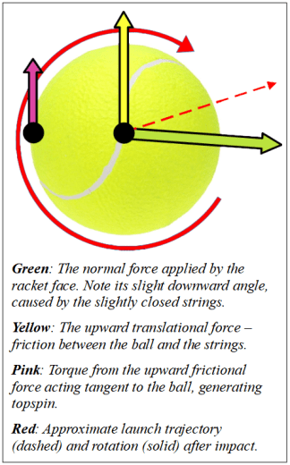
The service motion is an upward forward explosion, not a straight forward explosion like pitching. Throw your hand up and past the ball. As your hand passes the ball, your shoulder will internally rotate and your strings will slap it into the box. 2. 90-90 Preparation Iga Swiatek doesn’t prepare in 90-90 (left), but, like all effective servers, she does enter the position (right) before explosively rotating her torso.
The 90-90 idea is common in baseball, but for whatever reason, tennis players don’t always learn it.
Funny enough, the best female player in the world actually doesn’t use it (to start, she gets into it later in the swing). [Keep a 90 degree angle between the spine and upper arm, which is in line with the shoulders and another 90 degree angle between the upper arm and forearm, hence 90-90] You should, though, keep your elbow joint at 90o, and keep the humerus (your upper arm bone) in line with your shoulders, perpendicular to your torso.
This alignment, where the hitting arm is in line with the shoulders, is the biomechanical position we need in order for our third tip – axial rotation – to safely and efficiently generate high velocity. Use the muscles around your scapula (your shoulder blade) to “connect” your elbow to your torso. Lock it in – down and back – into that 90-90 position, and when the torso explosively rotates, the elbow will naturally rotate with it.
Possibly the two greatest height adjusted servers of all time, Andy Roddick (left) and Pete Sampras (right) both employ a nearly exact 90-90 loading position as they prepare. 3. Axial Rotation Throwing rotation occurs perpendicular to the axis of the spine. During Andy Roddick’s rotational explosion, his shoulder rotation is exactly perpendicular to his spine. Imagine a point on each of your shoulders. As you rotate, those points are going to draw a circle in the air.
Your shoulder line should be the diameter of that circle, and your spine will point up through its center. Since the serve is an upward throwing motion, you are going to be tilted – hitting shoulder above non-hitting shoulder – such that when you rotate, your racket hand is flung upwards. If you struggle with coordinating that initial explosion, work on this axial rotation.
Internalize that swinging up to the ball means engaging your core muscles, adopting a balanced, stable core posture, and then violently twisting around. Since you’ve used your upper back muscles to attach your elbow to your torso, this rotation is going to accelerate your arm quickly and safely. The better your posture while rotating, the more efficient your rotation is going to be, and the faster your racket will go. 4. Long is good.
A few fractions of a second before contact, Ash Barty’s racket is still open; were the ball contacted here, it would fly well long. If Ash Barty contacted her serve in the image shown here, rather than a few fractions of a second later, she’d sail the ball out past the baseline. This means that if you yourself sail a ball out past the baseline, there’s a decent chance your fundamental motion is fine. The corrective tweak to bring the ball down into the box is small.
Toss What if Ash had tossed the ball such that, when she reached this point in her swing, she was contacting it? Well, she’d hit it long, or she’d have to contort her swing to drive the ball down, killing her velocity. Tossing the ball sufficiently far forward is necessary such that, when the racket is striking the ball, it’s on slapping towards the box part of its trajectory.
This will vary depending on the type of serve you’re hitting, but, in general, if you hit a few serves long, try the same motion with a farther forward toss, before making larger changes to your motion. Timing There exists a point during the swing at which the racket is aiming towards the box. If you are hitting long, that point is later in the swing than your contact point. Start your rotational explosion a little earlier, or execute it faster.
You need to be deeper into your motion by the time you strike the ball. The primary pitfall I see students run into, when self-correcting their long serves, is that they interfere with the efficient motion they’ve developed. Thinking it’s not “down” enough, they try to volitionally “snap down” using the hand and forearm muscles, thereby breaking the efficiency of the chain. For most students I’ve worked with, the “snap” internalization doesn’t work at all.
I’ve heard it countless times: “They just tell me to snap, but it doesn’t work. I’ll never be able to serve.” Twist your trunk, and relax your hand. If you’re hitting long, toss farther forward, or twist earlier and faster. 5. Commit with your eyes. A serve is a much easier interceptive task than, say, a serve return. You know where the ball is going to be, and, if you’re tossing properly, the ball is moving very slowly at the time you strike it.
Because of this, almost all elite servers don’t watch the ball all the way into contact when serving. To do so would put the head in a bit of an unnatural position – it’s much more comfortable to allow the head to rotate with the torso as you explode. But this doesn’t mean we can’t harness vision to improve our serve. As you’re about to initiate your motion, your gaze should be locked on the ball. Do not allow your gaze to move until you’ve fully committed to your swing.
During the upward explosion (left), Nick Kyrgios’s eyes are still locked on his contact, but by contact itself (right), he has allowed his head to rotate forward (matching the natural rotation of his torso). Maintaining your gaze on your target will improve your motor performance. When throwing a baseball, that target is, well, your throw’s target. In tennis, on the other hand, we’re “throwing” our racket, and thus our “target” for that throw is the ball itself.
At the moment you initiate, you’re visualizing flinging your hand past the ball so the racket can strike it towards the box. You have a mental image (or brief movie) of the contact you’re trying to create, and your throwing motion is the means by which you create it. Then, after you are fully engaged into your swing, you can begin to let your head turn. I find many students pull both their non-hitting arm, and their eyes, down too early in the service motion.
While we don’t have to watch it all the way into contact on the serve, we still need to fully initiate our swing before we allow our gaze to shift. The Pusher’s Strategy is Better Than Yours The pusher’s strategy isn’t very good – hit the ball back into the court and never play offense. Clearly, the pusher is wasting at least some opportunities to get ahead in rallies at very little cost.
You’ll often observe a pusher handle a short ball by putting it high and slow over the net, and then running back to the baseline. Yuck. But, for many players, even the pusher’s mediocre strategy is still far better than theirs. So many players play their shots with absolutely inane frequencies and targets, using such an ineffective strategy that, actually, they too would be better off using the “hit every ball somewhat deep and over the center of the net” strategy.
Recreational players, especially, choose targets which create distributions including far too many misses and end up wasting tons of equity every shot. And it’s doubly wasteful because, more often than not, their opponents are using those same, terrible targets, and thus if one player could just keep the darn ball in, their opponent would quickly spray it out for them. Why It’s So Frustrating Offense in tennis is difficult. There’s a reason that pushers dominate the lower age divisions.
This recreational strategic inaccuracy is part of the reason “pushers” get so much hate. Pushers are visibly playing a strategy which is not optimal; they routinely sacrifice equity by wasting offensive opportunities. The non-pusher can so clearly and vividly identify how the pusher’s strategy is lacking; how can their opponent be any good if they never play offense? The non-pusher loathes the fact that the pusher doesn’t really do anything during the rally, that he simply waits for them to miss.
And yet, even still, pushing is a far better strategy than the typical rec adopts. It’s just that the strategic flaws in their game are far more opaque than the pusher’s simple refusal to play offense. They don’t realize they’re aiming to terrible targets, and instead just bemoan how often they’re missing. The result is that you feel like you’re losing to someone playing a terrible strategy, and in a way you are, but you’re losing because you yourself are playing an even worse strategy.
Finding A Better Strategy First, understand that offense in tennis is difficult. There’s a reason that pushers dominate the lower age divisions. Consistent offense is hard to play, while competent defense is proportionally much easier. A quality offensive player must hit a huge variety of different shots, from different positions, effectively.
From slow, high balls at all parts of the court, to transitional volleys, to low volleys and half volleys, to high volleys and swinging volleys, and of course, quality overheads – that’s a ton of different movement patterns to master in order to play effective offense. The pusher has one goal – get the ball back into the court. His target is huge. Contrast that with defense. You need a forehand, a backhand, a forehand and backhand slice, and maybe a couple lobs. That’s it.
Defensive situations are far more similar to each other than offensive situations are. Further, the offensive player is aiming to smaller targets than the defensive player is. The pusher has one goal – get the ball back into the court. His target is huge. If your goal, unlike the pusher’s, is to hit the ball away from your opponent, you’re placing a much larger burden of execution on yourself than the pusher is on himself. Humility is Your Weapon The key to beating a pusher is self-awareness.
First, understand that the pusher might just actually be better than you. If the pusher can make 10 shots in a row, and you can neither make 10 shots in a row, nor consistently win the point with offense in <10 shots, then guess what… you’re going to lose, and the pusher doesn’t need any offense to beat you.
But assuming this isn’t the case, if you’re losing to a pusher, you are selecting shots which are not conducive to winning at your current skill level; you’re throwing away equity with every decision. Most players over-estimate their shot-making ability, and thus end up aiming to targets they can’t actually consistently hit. I’m not talking about your self-perceived skill level here, I’m talking about your actual, statistical skill level. Impartially observe the results of your shots.
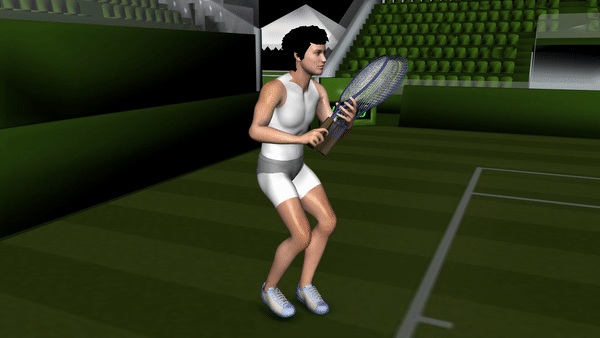
When you aim for a certain target, where does the ball actually land, and how often? The 80% Rule – A Starting Point To beat a pusher, you need to dramatically increase the amount of shots you hit into the court. Start with 80% as a threshold for how often neutral and offensive shots need to go in (though it really should be more). Pick targets for which the ball will go in at least 80% of the time.
An intuitive target (left) that is actually far too aggressive for the depicted player’s skill level; too much of the distribution is out. Using a more conservative target (right) will lead to far better outcomes on this approach shot. If you can meet that 80% threshold and play offense, go for it, and your offense will actually work. At first, It may feel like you’re "not being aggressive enough," but that is incorrect. You’re being as aggressive as you’re capable of effectively being.
And here’s the thing – you’ll still hit winners. Sometimes, you’ll miss your target by hitting wider or deeper than you intended, and the ball will go screaming past the pusher with a satisfying whiz. More importantly, though, you’ll stop missing. By choosing a target you can routinely actually hit for each offensive shot, your percentage of offensive shots made will skyrocket.
You’ll stop missing your approach shots, or missing your volleys, or missing the last ball, and instead you’ll consistently (and satisfyingly) be running the pusher around. Now for some tough love. Not every recreational player can meet this 80% threshold with offensive shots. If it turns out you don’t possess any offensive shots that you can execute with over 80% consistency, then you simply are not skilled enough to execute the offensive strategy that you’re trying to play.
The pusher should beat you. It’s time to head back to the practice court. And in the meantime, if you really want to win, maybe you should consider pushing, too. A Shot’s Probability Distribution Tennis is random. Each shot is best understood not as a particular result (winner, error, rally ball, etc.), but as a probability distribution of possible results, from which a particular result is chosen at execution time. When a player selects a shot, they pick a target.
They aim at a particular point on the court, and they aim a certain height over the net. These choices are not always fully conscious, but players generally have an idea of the shot they’re attempting as they strike the ball. After this decision is made, the distribution of possible outcomes is set. The image above is a visualization of that distribution. Mapping The Territory A probability distribution is a tool we use to describe a range of outcomes.
The diagram above indicates where the ball is likely to land after the shot depicted, a cross court forehand (our pink guy is right-handed), is selected. The target, where the player is aiming, is in red, and the concentric yellow circles represent tiers of likelihood for where the ball will land. The darker the yellow, the more likely, while the lighter the yellow, the less likely.
Unless a player has a systematic inaccuracy built into their stroke (for example, they’re always late), the densest part of the distribution is at its center, close to the target. That’s where the ball is most likely to land. "Most" is relative; for an inaccurate player, it’s still not very likely to land there, it’s just more likely to land there than anywhere else. The farther from the target we travel, the less dense the distribution gets.
The exact probability density that each circle represents isn’t critical to understanding the core idea, and the numbers will vary significantly between players. That said, if numbers are helpful, assume that the inner circle is where roughly 50% of balls land, the middle ring is where an additional 30% of balls land, and the outer one is where a final 18% land (leaving an extra 2% allocated to wild mishits and whiffs).
Also, the regions are cumulative – the chance that the ball lands in either the inner circle or the middle ring is 50% + 30% = 80%. An accurate player (left) vs an inaccurate player (right) attempting the same shot. Note that the accurate player produces a much tighter distribution; there’s far less variability in where their shot will land. Skill Level Influences Shot Selection The breadth of a shot’s distribution varies wildly with the player’s skill.
It is essential to be realistic about the distributions that our own shots are generating. If we lie to ourselves, if we convince ourselves that our distributions are smaller than they really are, we’re going to end up aiming for bad targets and missing a lot. You’ll notice that a large amount of our inaccurate player’s distribution is out of bounds; he’s very likely to miss this forehand.
In fact, our player on the right is so inaccurate that he should never be using this target; in order for enough of his distribution to be in bounds to frequently continue the rally, his just need to aim down the middle. In contrast, this is a great target for our accurate player on the left. Both the most and second most likely region are almost entirely within the singles court, and even many of the 18% most inaccurate balls they hit will still go in.
The vast majority of players would see immediate improvements if they would humbly observe where their attempted shots really land. First, Just Stop Missing The vast majority of players would see immediate improvements (in their singles game, specifically) if they would humbly observe where their attempted shots really land after choosing certain targets, and then adjusted those targets accordingly.
Be honest with yourself, and then generate a realistic model of your shot’s possible results in your mind. Once you do that, pick targets such that 80-90% of those results are in. Try it next time you’re on the court, and you might find Missing in tennis is really bad. The player who misses loses the point immediately, with nothing at all demanded of their opponent. Further, nearly all recreational players overestimate their skill and therefore underestimate the spread of their distributions.
This means that most recreational players (and many competitive ones, for that matter) routinely aim for bad targets, for which too much of the probability mass of the distribution is out of bounds. that, suddenly, it’s your opponent who’s doing all the missing. Why Sprint to Net? Sprinting to net changes the geometry of the court, in a way that allows you to be aggressive without increasing your miss rate.
There are certain shots your opponent can hit that will force you to stay in neutral if you’re at the baseline, but will allow you to play offense if you’re at net. Most of these shots are quite easy to execute. If you can’t play effectively at the net, your opponents will select these low degree of difficulty, high percentage shots over, and over, and over again, and you’ll find it very difficult to make progress in the rally.
You’ll pound and pound with your groundstrokes, but despite your best efforts, you’ll always find yourself making an error before they do. The way to fix this issue is not to “stop making errors,” as so many frustrated pusher victims seem to think it is. Rather, the solution is to fundamentally change the nature of the game.
Here are the four most common shots that sprinting to net will beat: A deep slice A short slice A deep block A moonball In all four of these cases, the shot is very difficult to attack from the baseline, but easy to attack at net. Let’s go through them one-by-one and discuss. The Deep Slice When your opponent slices the ball deep, it’ll typically stay below your knees after it bounces. This makes the ball very difficult to attack.
Your best option when your opponent gets their slice deep is to simply play the ball back deep yourself, and wait for a shorter reply to attack. Rafael Nadal attacks with an aggressive inside-out forehand. His opponent is defending from well behind the baseline, so the shot isn’t going to be an outright winner. What’s the best way to win this point? But what about if you’re at net?
Now, what was a very difficult knee height shot becomes a chest height volley you can block away for a winner, or, if not an outright winner, at least an aggressive ball that’ll set up a winner in the future. It’s not trivial to volley a ball with backspin, but it’s worth the effort to learn how to do it, because volleying your opponent’s slices will allow you to attack them in a high percentage way that is geometrically impossible to do from the baseline.
The Short Slice A short slice that floats is pretty easy to attack from the baseline, but here we’re talking about a short, low slice. This ball, like the deep slice, won’t bounce up above your knees, and as such it’ll be tough to hit hard. Since you’re forced to strike this ball from well inside the baseline, it’ll be even more difficult than on the deep slice to get the ball up and back down into your opponent’s court, without accidentally sailing the ball out instead.
Nadal sprints forward as his opponent plays a defensive shot from well behind the baseline. At net, of course, it’s a different story. These volleys can still be tough, because you’ll sometimes have to contact them below the height of the net, but they’re far more attackable than if you were at the baseline. Further, if you see your opponent about to respond with a slice, sometimes they will, either intentionally or unintentionally, respond with a drop shot – a really short slice.
If you’re at the baseline, you might not even get to the ball, whereas if you’re already sprinting to net, the fact that the ball is so short won’t be an issue. The Deep Block One of the easiest ways to defend against pace is to stand 5-10 feet behind the baseline and block back every ball deep. This strategy works so well it’s almost a cheat code.
Your opponent has to do everything right – relax, move well, track the ball, set up properly, explode, swing – in order to execute their heavy, fast groundstrokes, and all you need to do is move to the ball and catch it in front of you, and you get to keep the point neutral. Unless… your opponent is willing to sprint to net.
Now, all of the sudden, these block shots which used to keep the point neutral have turned into trivial shoulder height volleys, and unlike the slices we discussed earlier, blocks are not difficult to volley at all. Since Nadal elected to sprint to net, he gets to play the ball as an easy volley while his opponent is still recovering, with two easy angles for winners. Had he stayed back, he’d be playing the ball from deep in his backhand corner.
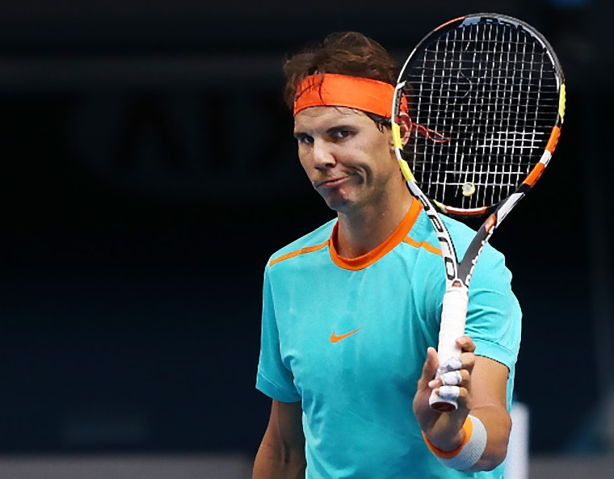
The Moonball The bane of every recreational player’s existence, the pusher, is easily defeated once you have the right toolkit at net. Like the last three shots we talked about, the moonball is very difficult to attack from the baseline. Unless you’ve developed an extremely fault tolerant forehand, and have mastered both effortless and effortful power, your best option against a moonball is to roll the ball deep with topspin, and live to fight another shot. Sprinting to the net fixes this.
If you do, what was a moonball that was bouncing up above your shoulders, which you’re forced to hit while your opponent has already recovered, is now either a swinging volley or an overhead, which you hit while your opponent is still out of position. Hold on – I have to execute a swinging volley or overhead while sprinting in? That sounds hard. It is.
Of the four kinds of shots we’ve talked about, the moonball is certainty the hardest to defeat, because to do so requires shots of the highest degree of difficulty. Learn the Swinging Volley You must, must, must learn how to hit a swinging volley if you want to maximize your potential on the court. If you don’t, you’re giving your opponent very easy, low degree of difficulty, defensive shots that allow them to stay neutral. High deep block shots and moonballs will always beat you.
You’ll hit great groundstroke after great groundstroke, but it won’t matter, because your opponent will stand 10 feet behind the baseline and continue rolling the ball back to you deep until you miss. The swinging volley is a difficult shot. It requires great visual tracking, proper set up, and a very fault tolerant stroke, but it’s worth it to master, because it solves this problem.
Leylah Fernandez hits an unbelievable inside-out swinging volley to win the point against Elina Svnitolina, en route to her quarterfinal win at the 2021 US Open. Without the swinging volley, this point stays neutral. The counter to the deep, floating defensive shot is to sprint in, and then while the ball floats over to you, keep sprinting in. Get as far in as you can, and then use your fault tolerant forehand to take the ball out of the air and win the point.
This is what Leylah does, this is what Emma does, and this is what you need to learn to do. Learn the Overhead On the tour, everyone has a good overhead, so lobs aren’t super common. At the recreational level, and even the higher 4.5-5.0 club level, this is far from the case, first, because lobs are easy to hit, and second, because so many players have bad overheads. If you can’t hit an overhead, your opponent will quickly figure it out, and going to net will be all but pointless.
Again, like the swinging volley, the overhead is an extremely high degree of difficulty shot, but mastering it is worth it, because it beats all of your opponent’s easy defensive options. The overhead is the same basic stroke as the serve – a throwing motion that takes place with your racket in your hand, instead of a ball.
Once you can internalize how to throw your racket to create the overhead stroke, you’ll have a versatile overhead that won’t break down under pressure, and, again, you’ll change the geometry of the court in a way that wins points. Basic Strategy – Where’s My Edge? Tennis strategy is best understood at the level of individual shot selection decisions; for each unique situation we are forced to play, we have a different strategy, appropriate for that particular situation.
Skill levels in tennis vary a lot, not just from player to player, but even from stroke to stroke for a single player. Due to this, an optimal tennis strategy is built not as a single monolith of frequencies and targets, but rather as a group of sub-strategies – disparate sets of frequencies and targets decided separately for each different kind of ball we have to hit.
A simple forehand from the forehand corner strategy – 70% Cross court, 25% Down the line, 5% Drop shot Instead of over generalizing strategy, creating something like a “strategy for the match,” it’s much more useful to create a “forehand from the forehand corner strategy,” or a “defensive backhand strategy.” More useful than improving your “service game strategy” is to improve your “ad side second serve strategy,” or your “short ball up the middle strategy.” Whenever we talk about "strategy" at Fault Tolerant Tennis, we are referring to specific, distinct, measurable strategies that involve specific strokes in specific situations, like "ad side second serve strategy," not some vague, broad strategy spanning the numerous disparate, distinct, and often unrelated decisions both players make throughout the match.
Different Strategies for Different Shots Our strategy for each situation is a description of how we will play that situation – what targets will we use, and with what frequency will we aim to those targets. Different situations will call for different targets and frequencies. Correct strategy will vary widely not only from match to match, but even from stroke to stroke. For example, let’s say you have an awesome forehand and a terrible backhand.
Your optimal forehand strategy is going to be pretty aggressive, while your best backhand strategy will resemble something along the lines of “just try to get the ball back in the court.” A viable strategy for a player with a great forehand and terrible backhand. The backhand is played to a conservative target while the forehand is played quite aggressively. Find Your Winning Patterns Accurate strategy must also factor in our opponent’s game.
The crux of basic strategy is observing the patterns we see play out throughout the match, and using those observations to adjust our shot selection. If our opponent is missing every ball, then if we make one shot anywhere, we’ll win the point, and therefore a “just get it back in” strategy is optimal.
On the other hand, if our opponent is great at playing offense, winning 90% of the points when we drop a ball short, then we need to adapt – move our targets deeper, accepting a few more misses in order to stop sacrificing so much equity on short balls.
The target on the left is typically better, since it includes far less misses, but if our opponent is winning 90% of the rallies after we drop a ball short, then the right target is better; we accept some misses in order to get the densest part of our distribution deep enough to stay neutral. There are tons of different patterns to observe. Maybe we win most of the forehand to forehand rallies, but lose most of the backhand to backhand ones.
Maybe our opponent is particularly bad at handling the low slice, but great at the shoulder height forehand. When forming a strategy (and adjusting it in real time during a match), the crucial first step is performing an accurate evaluation of all the strokes on the court (both yours, and your opponent’s), and how they play against each other before strategic adjustment.
Once we’ve identified which patterns are beneficial to us, and by how much, and which patterns are detrimental to us, and by how much, then we choose shots which move us towards the beneficial patterns, and away from the detrimental ones. Basic Shot Selection After we’ve gathered enough information, for each shot we are forced to play, we can rank all of our options in order of equity. We’ll have our highest equity shot, our next best shots, some mediocre shots, and some bad shots.
In a perfect world, we’d like to play our best shot every time, but, of course, our opponent will probably adjust to prevent us from doing that. Still, the information about how our game aligns with theirs before any adjustment is extremely valuable. As the match progresses and games are won and lost, this knowledge keeps us focused on what’s important and guides our real time strategic adjustment. What would I like to do? How is my opponent preventing that?
How much do I need to deviate to prevent being exploited? Basic strategy grounds us so that, as we build more complex strategies, we know exactly why we’re adding that complexity. By keeping the basics in mind, we’ll never fall victim to over-complication or over analysis. We won’t over adjust, won’t out think ourselves, because our best options and highest equity shots are always at the front of our mind.
Our strategy isn’t built to be "unpredictable" or "clever." It’s a tool we use to abuse our advantages as much as possible, without accidentally losing them in the process. Mixed Strategy – An Antidote to Guessing A mixed strategy is a strategy in which we mix our shot selection decisions for a given situation; we won’t hit any shot 100% of the time. Consider an extremely common situation – the forehand from the forehand corner.
Against a player with far inferior forehand to your own, a pure strategy of 100% cross-court may be appropriate. Most of the time, though, your opponent will be able to defend effectively off of both wings if they know what’s coming. In a perfect world, you’d like to hit every shot to their forehand, but if they know that you’re going to do that, they’ll start to cheat over to the forehand side as you swing, and subsequently the advantage you gain from hitting to that side vastly diminishes.
Most players are players are both competent enough and willing to make strategic adjustments to prevent you from using your initial highest equity option 100% of the time. In order to maintain your edge then, you need a way to take advantage of that adjustment. This is why we play a mixed strategy – a strategy that mixes in second best shots which are worse in a vacuum, but improve against your opponent’s adjustment. Why Not Just Always Counter Their Guess?
If your opponent is guessing to the cross-court side, why not always go down-the-line? And similarly, if they are guessing over to the down-the-line side, why not always go cross court? If your opponent is guessing poorly, go for it. Sometimes, your opponent will commit to their guess early enough that you can observe their guess before you swing. If that’s the case, then yes, just hit it away from them.
Your opponent is guessing improperly – from a strategic standpoint, what they are doing doesn’t even constitute guessing; they’re really just altering their defensive positioning. When you hit it away from your opponent in this case, you are leveraging their improper guessing technique. That’s great – mixed strategy isn’t meant to defend against opponents who transparently change their defensive positioning.
If it’s obvious, in the moment, how to hit the ball to take advantage of your opponent’s adjustment, go for it. But let’s give our opponent credit and assume that their defensive adjustments will be made late enough in our swing that we can’t look up and check what they’re up to – to do so at that point would ruin our fault tolerance. In this case, we don’t know how they will adjust before we select our shot. But still, you ask, why play a randomized strategy?
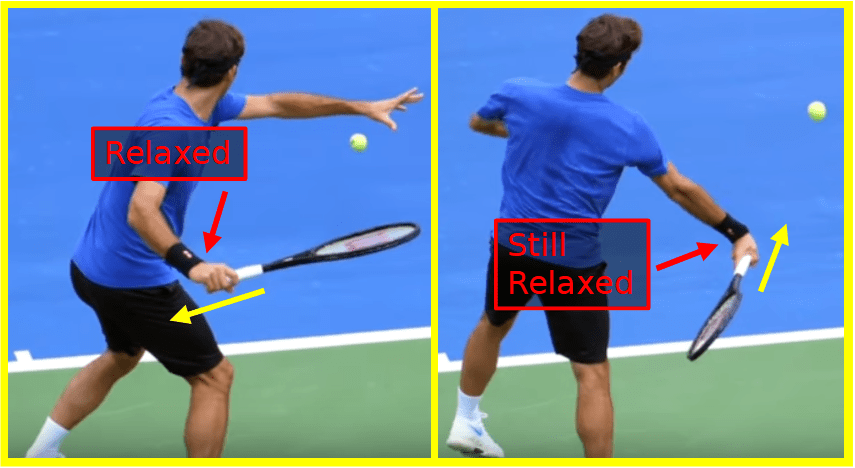
Isn’t it better to choose a particular shot each time to counter what my opponent is doing? Leveling Doesn’t Work If my opponent guesses left, I want to hit right, and if they guess right, I want to hit left. So shouldn’t my strategy still be to figure out how they’re guessing, and then do the opposite? Why would I play a strategy where I randomly select my shots, like 65% cross-court 35% down-the-line, when, depending on what my opponent does, there’s always one of those two I’d rather do?
Because you don’t know what they’re going to do. Trying to approach your decisions this way leads to absurdity: I want to go cross-court, because my forehand is better than theirs. They know that, so they’re going to guess cross-court, so I’m going to go down-the-line. But they know that I know that they’re going to guess cross-court, and then I’ll go down-the-line instead, so I’ll actually still go cross-court.
But they also know that I know that they know that I know that they’re going to guess cross-court, and so go-down-the-line instead, and then because of that still go cross-court… so I’ll go down-the-line. But they ALSO know that I know that they know that I know that… One of the MAJOR casualties of this line of thinking is the nonsensical reasoning it produces on important points: Now it’s match point.
They KNOW that I like cross-court the best, and that I’ll use it on match point, so I have to go down-the-line Ah, but of course I would think that, it’s match point after all, so I should actually go cross-court because surely they’ll guess down the line. It’s impossible to execute under these conditions.
It looks like you’re doing analysis, like you’re making progress towards some objective truth about what the right shot to hit is, but really you’re just pointlessly flailing around in an infinitely recursive mental loop, producing no strategic insight whatsoever. This kind of reasoning, often called “leveling,” is often mis-applied in the above way. The infinite recurse is not useful thinking in and of itself – it only leads to an unproductive guessing game.
Luckily, this leveling death spiral can be avoided, so you can just relax and execute on match point. Mixed Strategy to the Rescue We know that quality opponents will make strategic adjustments to prevent us from playing our best shot 100% of the time. These adjustments will improve their performance against our best shot, at the cost of worsening their performance against other shots. All adjustments are tradeoffs.
Consider our case from earlier where our best shot is our cross-court forehand, so our opponent often cheats over to the cross-court side to cover it. This positioning is better against the cross-court forehand, but worse against the down the line forehand. When our opponent is adjusting late enough, we have to make our shot selection decisions under uncertainty.
In order to maintain our equity against a particular adjustment, we need to start hitting those initially second best shots which are improved against that adjustment. But remember, we have to select our shot without knowing whether our opponent has chosen to hold their ground, or to cheat over and cover the cross-court. If we knew he was holding his ground, we’d want to go cross-court, and likewise if we knew he was cheating over, we’d like to go down the line. But we don’t.
We can’t use a 100% strategy, because we have no idea which 100% strategy to use. When our opponent is adjusting late enough, we have to make our shot selection decisions under uncertainty. This means playing our shots with frequencies that are effective regardless of how they decide to defend. So how often do we hit each shot? The answer – it depends on how good you are at everything.
How to Find Your Frequencies There are actually game theoretical rules that determine exactly how much we can press our advantage without leaving ourselves open to a counter-strategy. Mathematically, there exists an unexploitable, balanced, mixed strategy which, when adopted, makes it irrelevant how our opponent defends – no matter how they choose to guess, our equity remains unchanged.
In the case of tennis, the mathematical explanation, tends to be more academic than practical (we still provide it, of course). From a practical standpoint, when deciding how to mix your frequencies to counter an opponent’s adjustment, your highest equity shot before that adjustment was made is still your starting point. It’s the shot where your greatest advantage lies, and as such the one you’ll try to use most.
Titrate With A Second Best Shot As your opponent adjusts to your HESBA, you’ll see its effectiveness start to decrease. You’ll notice that, before, you were winning 4/5 points every time you selected it, but now, for some reason, you’re only winning half. Changes are, your opponent is cheating over while you aren’t looking.
To combat that, start mixing in another shot with a low frequency, a second best shot in a vacuum, but a shot which improves against the adjustment your opponent is making to your HESBA. This shot will likely be very effective at first, as your opponent has probably adopted something close to a pure “counter the HESBA” strategy.
After the defender commits to guessing, the attacker will notice the cross-court forehand becoming less effective, and should employ a mixed strategy, mixing cross-court and down-the-line shots, to maximize his equity against the guesses. Increase the second best shot’s frequency until you feel like your HESBA is effective again, and you’ve arrived at a relatively balanced mixed strategy. You might be tempted to go farther than this, but I’d recommend against it.
You don’t want to get stuck in a leveling game. You’re not trying to make the best decision on this particular shot, but rather trying to select the best strategy overall. You want to put your opponent in an impossible position with your frequencies. If they try guessing cross-court more, they’ll just start losing harder to your down-the-line shots, and if they start guessing down-the-line more, the cross-court shots will be too punishing.
Like I mentioned earlier, there’s actually an equilibrium point at which it mathematically doesn’t matter how your opponent defends, your equity is always the same. That’s what we’re aiming at, and qualitatively, titrating up your second best shot which punishes their adjustment until your HESBA feels effective again is how you get there.
Balanced Strategy – The Mathy Version For every probabilistic decision in a non-cooperative game, there exists a balanced (typically mixed) strategy which creates indifference in the opponent – it doesn’t matter how the opponent defends, their equity will be the same. As a probabilistic game itself, tennis is no different. We’re going to do a quick example where we derive a mathematically unexploitable forehand approach shot strategy.
Before we move on, understand that knowing how to actually calculate the game theoretical equilibrium for a particular situation is obviously not essential to playing correct tennis strategy – it’s not like we’re out there crunching numbers on the court. However, the math is still instructive, if for no other reason than to both prove that there’s more than just gut feel behind correct strategy, and to examine the implications of the results.
Our Example – A Forehand Approach Shot The attacker is hitting an approach shot. They will hit it either inside-out or cross-court. The defender is going to guess one way or another as the attacker swings. This attacker can hit both directions well, while the defender defends far better out of the forehand corner than the backhand corner (and both players are right handed).
Before any strategic adjustment, the attacker’s highest equity shot is the approach shot into the defender’s weaker backhand. As such, the attacker’s HESBA is the inside-out forehand. Here’s how often the attacker wins the point, given the defender’s guess.
The attacker hits inside-out, and wins: 75% of points when the defender guesses inside-out 100% of points when the defender guesses cross-court The attacker hits cross-court, and wins: 100% of points when the defender guesses inside-out 50% of points when the defender guesses cross-court The payoff matrix for our two players in this approach shot situation; each box contains the attacker’s win percentage after the approach shot has been struck, and the defender’s guess made. A few things to note.
When the defender guesses wrong, he loses 100% of the points. (We’re not modelling in the few approach shot misses here). This means that defensive strategies like “always guess cross-court” are easily exploitable by always hitting the opposite way. Note the effect of the attacker’s HESBA. Even when the defender guesses correctly to the backhand side, he still only has 25% equity in the point, while the attacker has 75%.
On his forehand side, where he defends well, a correct guess yields 50% equity, despite the defensive situation. Before we move on, I’m going to spoil the solution for you so that you have a reference as we discuss various strategies for the attacker moving forward – the attacker can guarantee an 83.3% winrate if he uses an accurate strategy. The proof of that will come later.
A Simple, Exploitable Strategy First, we’re going to analyze an obviously exploitable strategy for the attacker – 100% inside-out forehand. This is the optimal strategy against an opponent who isn’t willing to guess – if it wins 75% against an opponent who guesses that way, it probably wins over 90% against an opponent who isn’t guessing – but against this defender, it’s leaving points on the table. The defender, to exploit this, will choose a 100% guess backhand side strategy.
The result – Attacker 75%, Defender 25%. Not as good as the 83.3% I promised we could get. So how can we do better? Well, the defender’s “100% guess the backhand side” strategy leaves the forehand side wide open. When the defender guesses backhand, and we hit to the forehand, we win 100% of the points. We’d love to utilize that fact, but not so much that the defender can start profitably guessing that way instead.
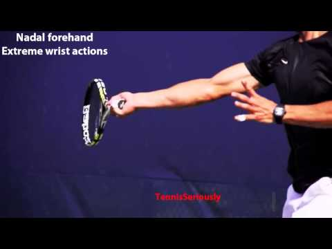
Let’s have the attacker try throwing in just a few cross-court forehands and see if it improves their equity. Their new strategy: 80% inside-out 20% cross-court Now, if the defender employs his same “always guess backhand side” strategy, the attacker wins 20%*(1) + 80%*(.75) = 80% of points. That’s 5% better than the 75% from before, but still 3.3% worse than the optimal 83.3%. The Nash Equilibrium We can do even better.
There exists a point in every non-cooperative game called a Nash Equilibrium – the point at which neither player can improve their performance by altering their strategy. This point is reached when both players are playing their respective unexploitable strategies. In tennis, our unexploitable strategy (as an attacker) is the mix of frequencies such that our opponent’s decision is indifferent – it doesn’t matter how they defend, they can’t improve their equity in the point.
They could always guess one way, always guess the other way, or mix the frequencies of their guesses however they wished, and their win percentage would be the same. (The principles for a defender making their attacker indifferent are the same, but we’re sticking with the attacker’s perspective for this article.) Our goal is to find this mix of frequencies.
At Fault Tolerant Tennis, we routinely refer to a strategy using these frequencies as a “balanced strategy,” a “balanced mixed strategy,” or an “unexploitable strategy.” Note that a balanced strategy is not always optimal – if your opponent is playing a clearly exploitable strategy, using an exploitative strategy will yield better results than using a balanced strategy, but balanced strategies are far more stable, and better under pressure, so we strongly prefer them.
Our Attacker’s Unexploitable Strategy To solve for our attacker’s unexploitable mix of frequencies, we find the frequencies such that all defensive strategies for our opponent produce identical results. Here are the possible defensive positions, and how many points the attacker wins against each.
Defender Defends Inside-Out Attacker wins: 75%*(frequency hitting inside-out) + 100%*(frequency hitting cross-court) Defender Defends Cross-Court Attacker wins: 100%*(frequency hitting inside-out) + 50%*(frequency hitting cross-court) Now, we need to set these expressions equal to each other – we need to find the frequencies such that our defender is indifferent; whether he defends inside-out or cross-court, (or, by extension, any mix between the two), his win percentage will be the same.
Let’s call our frequency cross-court “Fc” and our frequency inside-out “Fi”. 75Fi + 100Fc = 100Fi + 50Fc 50Fc = 25Fi 2Fc = Fi And, since these are frequencies, they must sum to 100%. Fi + Fc = 1. Solving this system, we see Fi = 2/3 and Fc = 1/3.
Our unexploitable strategy is: 2/3 inside-out 1/3 cross-court The Attacker’s Unexploitable Win Percentage When the defender guesses inside-out, the attacker wins: (2/3)*(75%) + (1/3)*(100%) = 5/6 = 83.3% of rallies When the defender guesses cross-court, the attacker wins: (2/3)*(100%) + (1/3)*(50%) = 5/6 = 83.3% It’s the same! It doesn’t matter how the defender defends.
If the attacker uses 2/3 inside-out and 1/3 cross-court, they will always win 83.3% of the rallies regardless of the defender’s guess. In Defense of Balanced Strategy The above analysis means that, as our attacker steps up in the court and prepares for an approach shot forehand, he has 83.3% equity in the point. If the attacker adopts the balanced strategy above, that equity is a mathematical guarantee; there’s nothing the defender can do about it.
Notice that the attacker has a significant edge here – 83.3% is high, because the attacker is in a very good spot, and according to the numbers in our example, quite effective at converting short balls. Trying to win to win more than 83.3%, by trying to exploit an apparent suboptimal defensive strategy from the defender, constitutes a risk. It might work, perhaps the defender really is defending incorrectly, and the attacker can abuse that and win 90% of these points, but there’s no guarantee.
In general, exploitative strategies are better when you’re worse. If your guaranteed equity isn’t enough to win the match, you need to hope your opponent makes strategic mistakes, and then attempt to exploit those mistakes. Once your opponent catches onto your exploit, of course, they’ll exploit you back, and then you’ll have to adjust again. The game of chicken begins.
If you’re the worse player in the match – if your equity with a balanced strategy is simply too low to compete – you may not have a choice but to try and win it. On the contrary, if you’re the better, then simply play an accurate balanced strategy, and you can’t lose. Highest Equity Shot Before Adjustment For every situation from which we have to select a shot, there exists a best option barring strategic adjustment from our opponent. This is our highest equity shot before adjustment, our HESBA.
That might sound complicated, but in reality you probably already have a good idea, in various situations, of what this shot is. You can tell that your cross-court forehand is great, but your down-the-line forehand always skirts wide. You know that your slice backhand almost always keeps the point neutral, while your topspin backhand is wild and unreliable. These shots constitute your highest equity options in a vacuum, before any strategic adjustment from your opponent.
And in a perfect world, your opponent would never adjust, and your could simply choose your HESBA 100% of the time. The HESBA Keeps Us Grounded Knowing our HESBA in each situation is essential to strategizing during the match; it’s the shot we want to use most, all else being equal, and our strategy exists for the purpose of pressing the advantage we gain from it.
Most opponents will adjust to our initial highest equity shot, and, after that adjustment, the shot will no longer be our highest equity. But remembering that it was our best option before adjustment was made, that it is still our best option in a vacuum, is critical to not out-thinking ourselves or over-analyzing our opponent. The knowledge of what we’d like to do, if our opponent wasn’t countering it, should never leave the front of our mind.
Remember, as our opponent adjusts their strategy, and as we adjust ours to compensate, our highest equity shot before adjustment doesn’t change. The highest equity shot at the moment may change, but the facts that were true at the beginning of the match – your inside-out forehand is great and their backhand is weak – those facts haven’t changed. The knowledge of what we’d like to do, if our opponent wasn’t countering it, should never leave the front of our mind.
As the match progresses, our opponent will adjust to counter our HESBA, and we’ll start mixing in some second best shots to compensate, but at some point during the ebb and flow of strategic adjustment, they may relent and allow us to hammer our best option again. Always keeping our HESBA in mind prevents us from wasting, or failing to notice, this opportunity. Instead, we’ll notice it, and we will immediately pounce.
A Common HESBA – The Inside-Out Approach For many players, the highest equity shot before adjustment when given a short, high ball up the middle is an inside-out forehand approach shot. Most players can hit their inside-out forehand reasonably well, and, equally important, most opponents don’t defend well from the backhand side. Thus, the inside-out forehand approach shot (from a righty’s forehand to a righty’s backhand) is the best option for the attacker, the attacker’s HESBA.
Before adjustment by the defender, on any given short ball, every other shot the attacker could attempt is worse than the inside-out forehand. Defensive Adjustment The defender can typically increase their equity in the point by preventing the attacker from hitting 100% of their forehands to the backhand side. To accomplish this, the defender must start to cheat over, often doing so right as the attacker swings.
Once this defensive adjustment is made, the attacker’s current highest equity shot changes, but their highest equity shot before adjustment has not changed. This particular adjustment leads to the cross-court forehand becoming more attractive for the attacker. It wasn’t attractive before adjustment, but now that the defender has adjusted, it is. Mixed Strategy and the HESBA In order to counter frequent defensive adjustment, the attacker should employ a mixed strategy.
The defender’s willingness to guess with their defense prevents the 100% inside-out forehand strategy from being effective – if the attacker adopts this strategy, the defender will guess backhand side every time, and much of the attacker’s advantage will evaporate. Therefore, the attacker needs to mix in some second best shots which are improved by the defender’s adjustment. This will prevent the attacker from being exploited by the defender’s guesses.
In this case, the best candidate is probably the cross-court approach shot, (although the cross-court drop shot could work almost just as well). Even Mixed Strategies Overweight the HESBA In our forehand approach example, if the opponent is guessing roughly evenly between the two sides, a strategy like 60% inside-out, 40% cross-court would probably be appropriate.
We don’t want to match our opponent’s defense frequency, because doing so wouldn’t leverage our HESBA – we’d be sacrificing equity by not entering our preferred pattern more than our second best pattern. Consider two different attackers as an example.
Attacker 1’s inside-out forehand is better Attacker 2’s cross-court out forehand is better The defender is committed to guessing which way the ball will go as the attacker swings, so a 100% HESBA strategy will fail, since the defender will always end up guessing correctly. Each attacker will use a different mixed forehand approach shot strategy.
Both will mix their frequencies, lest the opponent guess correctly on every shot, but Attacker 1 will weight towards the inside-out forehand, while attacker 2 will use more cross-court. Two effective mixed strategies against a guessing defender, one for an attacker whose inside-out forehand is superior (left) and another for an attacker whose cross-court forehand is superior (right). Note the higher frequency and the more aggressive target chosen for each attacker’s superior shot.
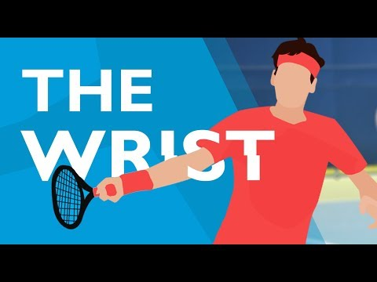
Strategy Flows From the HESBA When deciding how to mix your frequencies, your HESBA is your starting point. It’s the shot where your greatest advantage lies, and as such the one you’ll try to use most. Remember, the only reason Attacker 1 is hitting any of their approach shots cross-court at all is because their opponent is cheating over to the defend backhand side. They’d like for him to stand in the middle so that they could hit every ball to the backhand, the pattern where they win most.
So even after their opponent adjusts, the inside-out forehand is still going to be a good shot, just not as good as if their opponent hadn’t adjusted at all. The attacker is still going to use the inside-out forehand, a lot in any mixed strategy, just not as much as they would if their opponent was still just waiting in the center. We want to feel a sort of force pulling us towards using our HESBA throughout the match.
Our opponents will adjust to it, and we’ll mix in other shots to counter those adjustments, but by always remembering our HESBA, and knowing why we have it, we should be able to avoid over-strategizing ourselves out of an easy win. A Commonly Overused Mixed Strategy One of the most common situations in which players adopt a suboptimal mixed strategy is doubles return of serve. In many matches, no, you don’t have to hit your serve returns down the line. Ever.
Stop wasting equity on that low percentage shot (until you’re forced to). A quick note before we move on – I’m not talking about the case when your opponent is so bad at volleying that they miss everything. If that’s the case, high percentage returns up the line are great. (Note, though, that in this case your are not trying to hit it past them; you’re just trying to give them a volley so that they miss).
At the 3.5 level, this isn’t actually that uncommon, so understand that the following discussion isn’t about that situation. I’m referencing match conditions with a volleyer who is competent – they will routinely put away easy volleys, and they’ll keep the rallies neutral on tougher volleys. Alright, back to not overdoing it with the down the line return.
The Down the Line Return is Hard to Execute The down the line return has THREE factors working against it, making it a difficult shot to execute. You are: Aiming to a small target Hitting over the highest part of the net Changing the direction of the ball Notice that a shot like the gold standard of high percentage shots – the cross-court forehand out of the forehand corner – has none of these attributes.
On that shot, we’re aiming to a large target, over the lowest part of the net, and simply flipping the ball’s direction. The down the line return is the opposite. Any one of these three aggravating factors on their own should give you pause when selecting a shot, especially with high frequency. All three together? That’s a recipe for a lot of misses. Only Mix In Second Best Shots When Forced To I get it – in doubles, the cross-court shot is far less effective than in singles.
The net player can poach the cross-court shot and hit a winner of off it FAR more consistently than a player standing at the baseline ever could. But remember, just because it’s possible that your high percentage cross-court return will get volleyed doesn’t mean that it will. This possibility alone is not enough that you should now be trying hit to a small target, over the highest part of the net, while changing the direction of the ball in the process.
Make the net player prove to you, by aggressively and consistently poaching, that returning cross-court is not always your highest equity option. Don’t Deviate Too Quickly The optimal return strategy against an adequate net player who doesn’t poach. All returns should go cross court. If the net player has hit 6 volley winners on your returns in the last few games, then I get it, you’re going to have to throw some returns up the line.
But if you’re going to start aiming to that low percentage target, you’d better make sure it’s worth it. I’ve seen players who hit down the line on roughly 50% of their returns, and of those make only about 50% in (much less win the point on them), meanwhile the net player has successfully poached zero times in the entire match. Do not abandon the cross-court return, your highest equity shot before adjustment, until proven otherwise.
If you hit a solid, deep cross-court return and it isn’t poached, do it again. And do it again, and again. Even after your opponent poaches once, do it again. Is that poach repeatable? Maybe on the next poach, the net player misses, because his volleys aren’t amazing (which is why he wasn’t poaching often in the first place). Before adding in the worse-in-a-vacuum down the line return, ensure that doing so actually increases your overall win rate. In many cases, it won’t.
If it Ain’t Broke, Don’t Fix It Tennis is about winning points. If one pattern is winning you 9 out of every 10 points, then it doesn’t matter if your opponent knows it’s coming. There is no reason to “keep’m honest” if you’re winning almost every time. Just keep repeating the same thing, and keep winning. Mixed strategies are necessary to prevent yourself from being exploited when your opponent is adjusting in real time.
Very often, though, they either won’t adjust, or they simply won’t have an effective adjustment to go to, even if they wanted to. In these cases, don’t waste equity by playing a mixed strategy, using second best shots at some frequency. Instead, just hammer your best option over, and over, and over again, and watch the points roll in.
The Optimal Frequency is Often 100% Many players assume that doing the same thing over and over again is inherently bad, because it’s “predictable.” This is a misconception. Our goal isn’t to be unpredictable, our goal is to win, and as such, doing the same thing over and over again is often precisely our best option. Make your opponent prove to you they can both predict and effectively counter your best option before you start throwing in change ups.
The only thing that prevents us from choosing our best option (our HESBA) at every decision point is our opponent’s willingness to adjust to that option. If our opponent is unwilling to adjust, then there is no reason for us to deviate either. Before adjustment, our best option is better than all of our other options. While that remains true, we should select it 100% of the time. Not 70% of the time, not 80% of the time, every time.
Once you’ve identified a certain shot as better than the rest, your opponent must change something for that to no longer be the case. Make your opponent prove to you they can both predict and effectively counter your best option before you start throwing in change ups. The only reason to deviate from your initial highest equity option is if your opponent has adjusted by enough that said option is no longer the highest equity. Your opponent is defending incorrectly.
Until they adjust and move to the green position, there is no reason to attempt a down-the-line forehand. An Example You have to play a waist height rally ball from the forehand corner. Is it better to go cross-court, or down-the-line? That depends on the various skills of both you and your opponent, but, in a vacuum, there is an answer.
Imagine that, in this case, your skill level with both shots is roughly equal, but your opponent doesn’t know where to stand; he defends from the center of the court, regardless of where you are hitting from. Your highest equity shot before adjustment (HESBA) is cross-court. Until your opponent adjusts his defensive position, you should be hitting this ball cross-court 100% of the time. For four games, your opponent doesn’t adjust.
In the fifth game, he starts cheating way over to the cross-court side. All of the sudden, the line is so wide open that down-the-line forehands are now significantly higher equity than cross-court forehands. Thus, we can now switch to 100% down-the-line until our opponent adjusts again. Using a Mixed Strategy Eventually, it won’t take our opponent four games to adjust.
Once our opponent is adjusting in real time, rather than only once every few games (and many quality opponents will do this from the first ball), a strategy of 100% down-the-line or 100% cross-court is no longer optimal. The second we adopt one of those strategies, our opponent will adjust his defensive position to exploit it.
Playing effectively against an opponent who makes strategic adjustments of his own necessitates that we replace our basic strategy with a mixed strategy, in which none of our frequencies are 100%. Most mixed strategies resemble something along the lines of “use our better shot most of the time, but the other shot just enough to keep him honest,” but the details of that are a topic for another article.
Mixing Frequencies is NOT Required In most competitive matches, both players will make strategic adjustments that are powerful enough to alter their opponent’s best option. However, this is FAR from a given. Sometimes your opponent won’t notice they’re being crushed by a certain pattern, and thus won’t adjust to counter it. Other times, it won’t matter whether they notice or not – they’re simply not skilled enough to defend it, no matter what they do.
Before you start mixing in second best shots, make your opponent prove to you that they are both willing and able to counter your first choice with a strategic adjustment. Against many patterns, your opponent will do just that, but in a significant minority of situations, they won’t. You’ll have one crushing pattern that you can enter unhindered throughout the entire match, and there’s nothing your opponent can do about it. When you find a pattern like this, abuse it for all it’s worth.
Think Rafa vs Federer at Rolland Garros. For 10 years, Rafa did practically nothing but hit cross-court forehands into Federer’s backhand, and Rafa never adjusted his frequencies because Federer couldn’t stop it. Mixed strategies get a lot of love because they “aren’t predictable.” For whatever reason, recreational players don’t like doing the same thing over, and over, and over again, even if it’s working. But you should. To do otherwise is is to pointlessly sacrifice equity.
Certainty is a Feeling (and Cheat Code) Certainty as an epistemic state is a lie. A human being can never truly be certain about something, and most people have far higher confidence in their predictions than is warranted. That said, certainty is very useful for tennis. The feeling of being certain that a particular shot will work seems to increase the chance of that shot actually working.
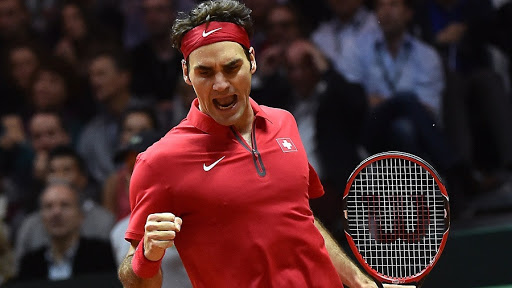
Likewise, the feeling of being very uncertain that a particular shot will work – preparing for the shot while nervous and second guessing yourself – appears to significantly decrease the chance of that shot working. So what gives here? If certainty doesn’t actually exist, why does it seem so useful for tennis? The key here is to separate certainty the mental state from certainty the epistemic state.
One cannot actually be certain, but one can certainly feel certain: any human who predicts something with 100% probability is wrong, but a human who merely feels certain about something is simply manifesting a mental state that is very useful to human functioning. Teasing out the Feeling from the Matter of Fact In tennis, you want to feel certain that your shots will work, even though the fact of the matter is that they won’t always work. This applies at both a micro level and a macro level.
You want to feel certain that you won’t miss, even though you will. You want to feel certain you’ll win the next point, even though it’s likely a toss up, and you want to feel certain that you’ll win the match, even though you’ll probably lose about half the matches you play (and if you don’t, find better competition). To cultivate our feeling of certainty, we need to separate that feeling from our knowledge of the actual probabilities involved.
An Example – Neutral Forehands Image that you know, from your practice, that you can execute your deep, cross-court forehand at a frequency of 95/100. You’ve done many sets of 100 cross-court forehands, and you always make between 90-100 of them, typically only missing 4 or 5. This fact is not actually useful in the moment, while trying to execute a cross-court forehand. Therefore, instead of paying any attention to it, you want to feel certain that the shot is going to work.
In fact, if you feel uncertain, if you get nervous knowing that you’ll miss about 5% of the time, chances are that it won’t actually be 5% – that miss-rate will skyrocket. Is this just lying to yourself? Some people will feel like they’re “deluding themselves” if they attempt to feel certain about a shot, while simultaneously knowing, factually, that the shot is far from 100% accurate.
To these people, I would argue that the “fact of the matter” when it comes to certainty only appears to be relevant, but in reality it’s not. From a factual standpoint, there exists no accurate expression of certainty; the mental state itself is always in err. It never maps to an outcome that is 100% likely, because such outcomes don’t exist. It is merely a feeling which causes you to act a certain way. Certainty exists to delude you into performing better.
In fact, from an evolutionary perspective, certainty was almost definitely very useful precisely when the outcome was very uncertain. Consider the first sailors who colonized Australia, crossing the ocean in boats made of reeds. Don’t you think they had a “false” sense of the actual probability of completing that journey alive? Yet, because of their certainty (the mental state), they forged ahead, and today, Australia is a flourishing human colony.
Your feeling of certainty is an illusion, at its very core, and it always has been, from its very inception. Certainty exists to delude you into performing better. That’s why the feeling of certainty was selected for in the past, that’s why your brain manifests it today, and that’s why it’ll help your tennis tomorrow. Still worried about lying to yourself?
Both for tennis and in general, I’d encourage you to adopt a relatively Machiavellian worldview with respect to your brain: Treat your brain as a tool which you can use to accomplish your goals (like becoming better at tennis). In domains like science and engineering, the “truth” is very useful, but in the mental domain, it’s so difficult to even separate the truth from a convenient fiction your brain has erected that worrying about it is often more trouble than it’s worth.
Don’t limit your progress by trying to ensure your feelings are “true.” They’re just feelings. Instead, just try to manipulate your consciousness into the state that’s most useful to you. In our case, the feeling of certainty helps our shots succeed. We like to think that this feeling maps onto outcomes that are certain, and we know, for a fact, that our shot’s success is not certain, so that feels like a contradiction.
However, we ignore this contradiction, because the mental state of certainty is useful in spite of it. What if I just can’t feel certain? Maybe the fact that you miss a lot makes it impossible for you to feel certain on the court. Try this mental re-framing exercise: Instead of being certain that your shot will work, be certain that your shot is the correct choice. Think of tennis like poker. If you’re at the bottom of your range with 2 blockers to the nuts, you’ve gotta bluff.
Of course, it might not work in this instance, but you can still be certain that it’s the correct play. It’s not certainty of outcome, but rather certainty of process. As you prepare to send your approach shot whistling into your opponent’s backhand corner, yes, you have a miss-rate, and yes, that miss-rate is nonzero.
But given your practice, your strategy, and your execution to this point, you know this is the correct choice, even if it doesn’t happen to work on this particular shot. “He always knows he’s going to win.” A practice partner and I were recently discussing the mental side of tennis, and he mentioned a friend of his who has the best mental game he’s ever seen. The guy plays absolutely lights out on pressure points – you can’t even tell the score is close.
How? “He just knows he’s gonna win.” But… but he’s not going to win, a lot of the time. That belief is false. How does he maintain it after losing a few times? Your feeling of certainty doesn’t need to be connected to reality. The truth is, your feeling of certainty is not a belief, it’s merely a feeling, and that feeling itself is useful, epistemology be damned. Forehand POWER Checklist There are two kinds of “forehand power.” The first is effortless power.
Effortless power is the power we gain simply by using proper biomechanics. It’s gained while barely sacrificing any consistency or fault tolerance, and utilizing it only slightly raises the shot’s degree of difficulty. All players should strive to practice the mechanics that yield effortless power. The second is effortful power.
Effortful power is volitional – you’ve decided you’re in a situation where hitting really, really hard is appropriate, and so you’re going to try to hit really, really hard. The most obvious example of an appropriate situation for effortful power is a short, high, floating forehand. I want to be clear that effortful power is a personal choice; even on a floater, not every player elects to crush it.
Some players hardly ever choose to hit really, really hard and play almost every shot with lots of margin and spin, while other players (Nick Kyrgios and Jack Sock, for example) treat almost every high, slow, forehand as if it should break the sound barrier. Almost every item on this list creates effortless power when applied, but can also be further focused on or exaggerated, to create additional effortful power. The decision as to whether or not to execute said exaggeration falls to you.
Before We Start… Everything that follows is subordinate to a proper contact point. As you implement the tips below, it’s very easy to start messing up where you’re contacting the ball, relative to your body. In order for the modern swing to work as intended, the ball must be contacted away from the body – both laterally away from the body and out in front of it. That’s the only contact point that allows the racket to naturally flick through the ball and strike it in a topspin way.
If, in the course of implementing these checklist items, you start hitting the ball late, or start catching it too close to you, then any power gained from the implementing the change will be offset by the less efficient motion. Also, you’ll notice that nothing we talk about here has anything to do with the arm itself. Power does not come from swinging harder with the arm; only tension, misses, and injury do.
You can use your abs or your chest, you can drive forward with your legs, you can rotate your hips – there are many efficient ways to generate power, but pulling or twisting harder with your arm isn’t one of them. Strong muscles create power, the arm muscles themselves merely stabilize and control. 1. Drive off of the back leg This is a proprioceptive cue – to increase power, you should actually think about driving hard off your back leg and feel the hitting-leg butt muscle contracting.
This drive will both push your whole body forward and cause your hips to rotate back towards the target. Both of those consequences – the hip rotation and the forward momentum – are essential for effortless power. To increase power, you should actually think about driving hard off the back leg, and feel the hitting-leg butt muscle contracting. Here’s an experiment you can do to teach yourself the movement: Set your feet in a semi-open stance. Turn to your upper body to your forehand side.
Shift your weight onto your back leg, bending it. Forcibly straigthen your back leg. This contraction will both straighten out your hips, and if you drive hard enough, send your whole body forward. It is the primary muscle contraction that starts the rotational kinetic chain. The degree to which you drive of your back leg will vary from situation to situation.
On a particularly easy ball, you can elect to inject effortful power, by actively focusing on maximizing the strength of that hitting leg contraction: loading it lower, and exploding off of it as hard as you can. Ideally, we’d like to do this on every ball, but we won’t always have the necessary time, or be in the correct position to.
That said, unless you’re hitting on the dead run, still initiate the swing with your back leg, even if it isn’t as foreful as it would be if you’d had longer to prepare. Doing so will always add effortless power. 2. Relax Force production necessitates tension; driving really really hard off the back leg, requires a really really tight contraction of the muscles in that leg – specifically the quad, glute, and hamstring, and calf.
Hold the racket just tight enough to prevent it from flying out of your hand. The strange part about tennis, though, is that while some of our body parts forcefully contract to generate force, other body parts need to stay completely relaxed to transfer that force into the racket. The wrist and the hand are two of the body parts that stay relaxed. The more relaxed they are, the faster the racket goes.
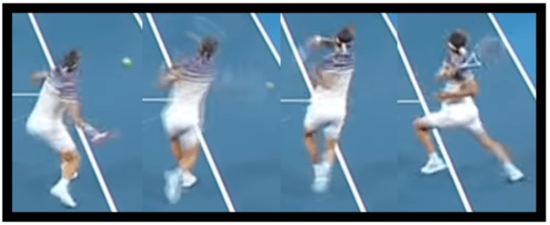
Hold the racket just tight enough to prevent it from flying out of your hand, and use just enough wrist tension to maintain the string angle through contact. 2.5. The Arm, The Chest, and Relaxation The arm itself functions as a rope to transfer the force generated by your core into the racket.
Three common volitional force applications that will impede the swing are: Trying to twist the racket harder with your forearm (Trying to point your butt cap at the net?) Volitionally supinating the arm Volitionally pronating through the shot These things will happen, but they will happen as a natural consequence of the way the arm was thrown into the shot. If they don’t, there’s an upstream kinetic chain issue – it will very rarely be fixed by focusing on the arm itself.
Though the hand and wrist stay loose during the swing, other parts of the arm will contract for stability. The biceps, for example, tighten up to prevent the elbow from hyper-extending, which is good. We don’t let the arm lag back, stretching the chest. The chest contracts to force the arm out in front of the body. It’s important we do not allow arm lag, the way we allow (and encourage) wrist lag. As the body explodes around, the chest muscle forces the arm out away from the trunk.
We don’t let the arm lag back, stretching the chest. You might wonder, why not? Wouldn’t we benefit from a stretch reflex of the pectoral muscles? Yes… kind of. In the end, tennis is still primarily a sport of control, not power. It’s amazing just how much power the modern swing lets us generate while still maintaining control, but control is always our first goal. Using a stretch reflex at the chest is, generally, not worth it.
Occasionally, on the dead run, with no ability to recruit the legs or hips for power, if you want to go for it, go ahead. Guys like Medvedev and Lopez will sometimes do this, and rip 100 mph forehands from seemingly impossible positions. But only try this on defense. In a neutral or offensive situation, force your arm to travel around with your chest, and your contact will be far more consistent. 3. Breath in, then exhale through contact Always breathe in, relax, and then exhale as you swing.
If possible, breath in through the nose, rather than the mouth. Nasal breathing oxygenates the body better than mouth breathing – you actually get more oxygen per ounce of air inhaled through the nose, than you do through the mouth. Nitric oxide, a chemical produced by the sinuses during nasal breathing, is essential for many health markers; everything from being an anti-inflammatory agent to reducing blood clotting.
Of course, if your nose is congested, or if you’re so out of breath that the nasal pathway simply isn’t wide enough to get enough air, just inhale through the mouth and don’t worry about it. That said, during practice, and during any regularly strenuous rally, begin forming the habit of nasal breathing, and your conditioning will thank you. As you swing, exhale. The forceful contraction necessary to accelerate the racket happens at the beginning of the swing.
Exhaling through this contraction is good. First, it functions as a rhythm cue, helping you execute your stroke the same way every time. Second, forceful exhalation or grunting will increase your force production, functioning similarly, but not identically, to the Valsalva maneuver (holding your breath through a contraction). As the racket comes through the hitting zone, you should be nearing the end of your exhalation.
The forceful contractions necessary to generate force are now mostly complete, and of critical importance now is to avoid impeding your relaxed racket whip through contact with tension. 4. Turn your shoulders Roger Federer (left) turns his shoulders farther, relative to the hips, than Juan Martin Del Potro (right). Both still lead the swing with their hip rotation, and both hit exceptionally hard. Let’s start with the effortless power version of the shoulder turn.
A large amount of forehand power is generated when the player rotates their chest/shoulders forward towards the target as they swing. This requires that their chest be turned away from the target during preparation, such that it can rotate back towards the target during the forward swing. Ideally, you always want to turn your shoulders farther than you turn your hips.
This creates something called “hip shoulder angle separation,” and this separation encourages the hips to unlock first, and then the chest/shoulders to follow, creating a rotational whip through contact. The angle separation isn’t necessary for effortless power, though. As long as the hips unlock first, even if the shoulders and hips turn away by the same amount, the rotational kinetic chain will still accelerate the racket as expected. 4.5.
Turn your shoulders a lot Robin Soderling was famous for taking a massive shoulder turn – turning his shoulders almost 90 degrees farther than his hips – and crushing forehands because of it. All players initiate the swing with their hips, whipping them around before the shoulders, but not all decide to implement this by drastically turning their shoulders farther than their hips to begin with. Each player has a different preference for their personal balance between power and control.
Every player needs to experiment with their own preparation. That said, a huge shoulder turn is very helpful in generating power – it’s just hard to control. Next time you have a high, slow, short forehand, try turning your shoulders away more than usual. Just your shoulders, not your hips. You should feel the muscles in your core pre-stretch as you do this. It might take some practice to get the timing down, but unlock all that loaded power correctly, and you’ll absolutely crush the ball.
Just remember to relax, extend through contact, and watch the ball all the way in, otherwise you’re more likely to hit the back fence than a winner. 5. Pull your non-hitting elbow away Both hip rotation and chest rotation create power. The easiest way to ensure your chest whips around towards the target is to consciously yank your non-hitting arm away from your body, thereby initiating that chest rotation. Forget this part, and you may under-rotate, leaving significant power on the table.
Rafael Nadal prepares with his non-hitting elbow well on the hitting side of his body, then pulls it out to the right (he’s lefty) as he initiates his forward swing, thereby whipping his hips and chest back towards the net and violently accelerating the racket. 6. Don’t over-rotate the hips Optimal power is achieved when 100% of the force generated by hip rotation is transferred into the racket.
This is really hard to do (although doing it with less than perfect efficiency will still result in blistering forehands). Attempt to have your hip rotation stop right as they’re pointed at the target, or slightly past it. Rotational power is great, but a rotational whip is better. A whip isn’t just thrown hard at the target, it’s momentum is violently halted mid-flight in order to transfer all of its kinetic energy into its tip.
Your rotational whip doesn’t have to be perfect – many tour players often hit winners with their hips over-rotated a bit – but for that maximum biomechanical power, stop the rotation at precisely the correct time, and all of the trunk’s rotational energy will transform into racket head speed through the ball. Andy Murray (left) hitting a 124mph winner inside-out, and Fernando Verdasco (right) hitting a 103mph winner down-the-line.
Each player’s hips are still pointed only slightly farther than their target deep into their follow-through, indicating an efficient transfer of hip rotation into racket acceleration. There are many players on the tour who routinely hit winners by throwing their hips through contact, and follow-through by bringing their back foot around. This is fine – if it suits your game, do it. However, if you want to slap 124mph forehands like Andy Murray, you’ll have to over-rotate less. 7.
Are you still relaxed? As you start focusing on other things, you’ll forget to relax. First you’re holding the racket too tightly. Next you’re forgetting to exhale through contact. Now you’re over-rotating your hips, now you’re under-rotating your hips. Relaxation is the key that unlocks power, topspin, and consistency in the forehand. No matter what else you’re thinking about, no matter what technical improvement you’re currently working on, breathe in, relax, then exhale as you swing.
Dominate the Slicer With Heavy Low Forehands The following is a page from The Fault Tolerant Forehand, available in eBook and paperback formats on Amazon (click here). At Fault Tolerant Tennis we teach fundamentals. Our aim is not to provide assorted tips and tricks that apply only in certain cases, but rather to educate our readers about the essential biomechanical movement patterns that underpin each shot.
We teach principles here – principles that lead to fault tolerant, effective strokes in every situation, whether the shot is being played high, low, wide, or close. That said, the low forehand still deserves its own section, because it is such an important, frequent, and mistake prone shot. The Common Pitfall Against Slicers In a match against someone who only hits slices, you’ll be forced to play nearly all of your forehands from knee height or lower.
Without an effective, fault tolerant low forehand, these matches are extremely frustrating. Dan Evans, the #1 ranked British player in the world, is famous for almost exclusively slicing his one handed backhand. The mechanics that make the forehand fault tolerant, the mechanics we teach in this book, are very natural on waist height and shoulder height forehands.
That’s why, in a normal match against a non-slicer, your forehand feels fine; almost all of those forehands are played from waist height or from shoulder height, and as a result, you naturally apply fault tolerant mechanics. Everything we’ve discussed – from preparation, to body rotation, to swing path – once you’ve practiced a little, using those mechanics will be your first instinct on a typical height forehand.
But on a low forehand, they’ll initially feel very unnatural; if you’re not consciously focused on using on them, you’ll probably accidentally abandon them. And that’s when you get a bunch of mishit low forehands, lost points, and a smashed racket. Utilizing Waist Height Mechanics To transpose our fault tolerant mechanics to a lower contact point, we need to adjust our preparation appropriately.
We’ve already discussed adjustment, but it bears repeating – you adjust to a low forehand by sitting lower with your legs and tilting your torso, not by pulling your hand closer to your body. Adjusting this way allows you to maintain the same alignment of your racket, hand, and arm relative to your trunk that you use on a waist height forehand, thereby allowing you to rotate your hips and trunk in the same manner as on a higher shot.
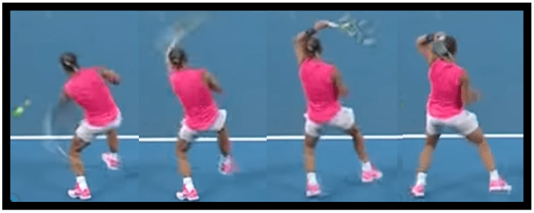
Roger Federer adjusts to a low forehand by bending his legs and tilting his torso, allowing him to rotate his body the same way he does on a waist height forehand. When preparing for the low contact point, many players’ first instinct will be to pull their hand in, rather than tilt their torso.
This kind of hand adjustment is sometimes necessary on exceptionally low balls, but just be aware that the closer you pull your hand in, the more you inhibit the transfer of energy from the trunk’s rotation into the racket. Rotational Acceleration At a given angular velocity, translational velocity is always greatest farthest from the center of rotation (the bigger the circle, the faster the points on the circle are moving).
You can prove this to yourself at home – pinch your elbow into your side, bringing your racket in close to your body, and twist forward like you would on a swing. Now hold it away from you, and do the same. Can you hear all that extra wind through the racket when it’s far? The more the racket is allowed to flick away from the body, the more the trunk’s rotation will accelerate it.
Preparing the Hand On any forehand, it’s nice when we can prepare our hand below the anticipated contact point, because then it’s really easy to throw it up through the ball. However, this isn’t actually strictly necessary. On the low forehand specifically, the out vector of the swing actually helps drive your hand down, thereby making it possible for it to move up through the contact point, even if it didn’t start below the contact point in the first place.
This is a physical consequence of your tilted torso – as your elbow extends and your racket flicks out (aka, away from your torso), that out angle is now diagonally down, rather than straight out. Rafael Nadal prepares for a knee height forehand with his hand a small distance above the contact point. As he rotates with a tilted chest, his elbow extends, naturally pushing the hand down, thereby allowing it to still move slightly upward through contact.
Since that elbow extension will drive our hand down, even if we prepare our hand at the level of our contact, or even slightly above it, the stroke can still succeed. The up vector of this kind of swing will be muted, since the hand will barely be below the ball at any point, but that doesn’t mean we can’t generate topspin.
Windshield Wiper Spin is Enough Due to the racket’s rotational whip (about the axis of the forearm) through the hitting zone, the racket head itself will still be moving up extremely quickly through contact, even though the hand isn’t moving up through contact much at all. Thus, the strike will still generate significant topspin.
Just the rotational whip of the racket alone, the passive “windshield wiper” motion generated from rotating the trunk and throwing the racket out – just that vertical racket head speed will often provide enough topspin to keep the ball in play, even absent a strong up vector in the swing path. But How Low is Too Low? David Ferrer playing a forehand that is so low that a successful topspin stroke is impossible; he plays the ball as a slight slice instead.
Sometimes, though, the ball is so low that there’s simply not room for a topspin swing path; if you tried, either your racket would hit the court, or the ball would hit the bottom of your frame and fly out. It’ll take practice to train your instinct for when this is the case, but make no mistake, there does exist a height below which a successful topspin forehand is impossible. When you find yourself there, you’ll have to slice or push the ball back.
All of our typical fundamentals – from the fundamental theorem of tennis, to adjusting using your prime movers first, to tracking the ball all the way into the strings – they apply just as much on a forehand slice as they do on a topspin stroke. Stay focused, stay relaxed, and catch the ball out in front of you.
Maintaining The Swing Path As you swing at a low forehand, your mind is yelling at you that, “this ball is low, so you’ve gotta really pull it up.” While this thought is technically accurate, in practice, it tends to be a recipe for disaster.
Even when the contact point is low, our conscious focus needs to be on the fundamentals which create fault tolerance in our stroke, not on “getting it up.” This tends to lead to three common mistakes: Forgetting to extend through the ball Forgetting to swing out to the ball Opening or changing the string angle through contact 1.
Forgetting the Through Vector Rafael Nadal’s impressive extension away from the body during the follow-through after a knee height forehand, indicating a strong through vector was utilized during the forward swing Over focus on the up vector will often cause you to accidentally forgo the through part of the swing.
As a result, you’ll spin the ball down into the net – the shot will have plenty of topspin, but your purely up swing path won’t supply the required forward momentum to drive the ball back over the net. Luckily, this mistake falls into the class of issues that’s fixed simply by thinking about it. Instead of allowing your mind to yell “Get it up! Get it up!” at you, focus on your forward extension.
Tell yourself, “Out, up and through,” and ensure that the “through” part of that cue is strong in your consciousness as you swing. 2. Forgetting the Out Vector The mind’s natural over emphasis on up will also often make you forget the out vector, and forgetting the out vector also severely damages the stroke’s fault tolerance. As we’ve discussed, the out part of the swing path is actually just as responsible for topspin generation as the up vector.
By allowing the racket to flick out to the ball, rather than just straight towards it, we impart forces on it which cause it to whip around the axis of the forearm through the hitting zone, creating the “windshield wiper” motion. That motion results in a ton of vertical racket head speed through contact, and thereby topspin, but without the out vector, it doesn’t happen. Fundamentally, the low forehand is the same swing. We’ve said it before, but we’ll say it again – Out, up, and through.
It’s extremely easy to forget about both the through vector and the out vector when swinging at a low forehand. The out, up, and through swing path, which causes the racket to whip around the axis of the forearm through contact, is responsible for at least half of the stroke’s topspin. Abandoning it for a purely up and through swing path is quite counter-productive, especially on a low forehand, a shot for which each additional RPM grants significant extra fault tolerance.
It’s extremely easy to forget about both the through vector and the out vector when swinging at a low forehand, because your mind is so strongly focused on up, but lose those other vectors, and you lose the stroke’s fault tolerance with them. 3. Subconsciously Turning the Strings Up Through contact on a knee height forehand, Rafael Nadal’s strings are parallel to the net.
The mind’s natural over emphasis on “getting the ball up” will also tempt you to alter your string angle, angling the strings towards the sky. Unless you swing really, really slowly, this string angle will cause the ball to sail out. I know it’s counter-intuitive, but even on a low forehand, the strings, through the hitting zone, should be either parallel to the net, or angled towards the court.
At contact, there exists a ton of frictional force between the racket and the ball while the racket is flicking up and through it; that friction will drive the ball up. You’ve just gotta trust it. If the string angle is altered such that the strings are pointing up at contact, then a rotational swing utilizing a relaxed lagging and snapping wrist simply won’t work – the ball will fly off the racket at an angle such that it always goes long.
No “Rolling the Racket” If you try to fix your open string angle problem by rolling your racket over the ball through contact, that will completely destroy the stroke’s fault tolerance; unless you time the hit perfectly, you’re going to miss. This kind of racket rotation (as opposed to rotation about the axis of the forearm) is the quintessential fault tolerance killer – hit the ball just slightly too early, and it’s going long, but hit it slightly too late, and it’ll hit the net.
Maintain your consistent string angle through contact, just like on any other forehand. Trust the friction, and trust your natural topspin, the result of your relaxed wrist and your out, up, and through swing path. You Can’t Beat a Slicer Without a Low Forehand To the uninitiated, the low forehand seems like a completely unique shot – a different stroke to practice, separate and distinct from the waist height forward. This is not the case.
The biomechanical techniques that make the forehand so fault tolerant are very easy to accidentally abandon on the low forehand. What is the case, though, is that the biomechanical techniques that make the forehand so efficient and fault tolerant are very easy to accidentally abandon on the low forehand, because on the low forehand they’re initially quite counter intuitive. And that’s why the typical player’s game falls apart against slicers.
In the normal match, they’re using a fault tolerant stroke – they often slightly mistime or mishit the ball, but they probably don’t even notice, and it doesn’t matter, because the resulting shots are still effective. But against Mr. Slice, they’ve accidentally abandoned that fault tolerant stroke, and now, unless they strike those low forehands perfectly, they miss them.
Effective Low Forehands Dominate Slicers To beat the slicer, you have to keep the points neutral, even when forced to play low ball after low ball. To beat a particularly good slicer, you’ll also have to hit passing shots on some of those low balls. With fault tolerant mechanics, this is easily doable. The slicer can no longer win just by letting you miss out of neutral.
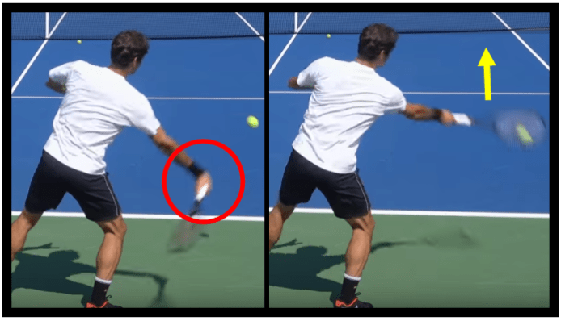
Though it might not come naturally at first, those mechanics that we utilize on waist height forehands can be used on the low forehand as well, and they will give you that same fault tolerance advantage – not every strike will have to be perfect; they’ll still go in. Practice implementing these mechanics on low forehands during your training, and you’ll be able to hit 10, 20, or 50 low forehands in a row without missing.
It’ll take some conditioning – the leg musculature required to get that low, that often is certainly non-trivial, but hey, that just takes more training. After that, it’s just a regular match – once you stop missing rally low balls, you force the slicer to try to find offensive opportunities the same way you yourself are trying to. The slicer can no longer win just by letting you miss out of neutral. And it’ll be a lot more fun, certainly more fun than mishitting every ball and not knowing why.
Thou Shalt Not Backswing When I say that the volley should utilize “no backswing,” I mean no backswing. Not a quick backswing, not an abbreviated backswing. No backswing. The racket travels directly from its position in the ready position to the player’s anticipated volley contact point. This makes the volley distinctly different from the groundstroke – it’s a unique shot that can barely even be called a “stroke” in the first place.
The volley movement, on a technical level, is really better described as placing the racket behind the ball, and letting the ball bounce off of it, rather than as any sort of “swing.” To understand why we completely eliminate the backswing when volleying, it’s important to first understand why we ever elect to use a backswing at all, and what factors are unique about net play that cause us to abandon it.
Why We Backswing from the Baseline During Jen Brady‘s follow through, her racket angle is completely closed – were she to accidentally strike the ball like this, it would travel straight down into the net. The backswing on our groundstrokes is worth the time it takes, and it’s worth the inconsistency it adds. Let’s look at our forehand.
Technically, our forehand backswing is sacrificing some fault tolerance – we would miss less if we held the racket out in front of us, turned only slightly away from our target, and then turned back without allowing our wrist to lag and snap at all. If we did that, though, the resulting shot wouldn’t be very effective. So we sacrifice just a bit of our stroke’s fault tolerance in order to incorporate the rotational kinetic chain. This makes the swing take longer, and it makes it harder to time.
We also relax our wrist and allow the racket to whip around that relaxed wrist through the hitting zone. This dramatically increases our racket head speed, but also causes the racket to turn over during the follow-through, and it decreases the amount of time and space during which clean contact can be made. If we’re too late, we’ll bury the ball into the net, and if we don’t aim the racket properly, we’ll hit the ball off the frame.
Luckily for us, when executed properly, the forehand stroke is still extremely fault tolerant, despite the small disadvantages that the backswing adds. By rotating the hips, maintaining the string angle through contact, and mastering the various other technical skills we teach here at Fault Tolerant Tennis, we need only sacrifice a small amount of our margin for error to generate a heavy, spinning, drive shot instead a spinless, flat, floating ball for our opponent to handle.
Backswing is Always a Cost/Benefit Analysis Daniil Medvedev’s unique backswing doesn’t ruin his stroke’s fault tolerance – his racket stays on the hitting side of his body, and he still keeps his wrist extremely relaxed as he rotates around.
I want to take a brief detour here and mention that the proper way to evaluate any particular student’s unique or funky backswing is precisely with this idea – is the increase they are getting in comfort, power, or spin worth what they are paying in consistency and timing? For most extraneous movement back there, the answer is a resounding “no;” almost every player should use a very abbreviated backswing with very little arm movement at all.
But when it comes to the unit turn – the name for the movement during which the player turns their body away from the target, so that they can explosively rotate back towards it during the forward swing – that “backswing” is well worth its cost. At the Baseline, This Cost is Minor Make no mistake, even when utilizing an anatomically perfect backswing, we still do pay a cost for that extended forehand preparation.
It takes time, and it adds a ton of difficult to control (relatively speaking) explosion to the swing. It requires that we prepare early, and that we execute the stroke during a small timing window in order strike the ball correctly.
At the baseline, we have enough time and enough visual information that these restrictions aren’t deal breakers – we cash in that extra time and information by turning our hips away from the ball and pushing our racket back, so that we can then explosively rotate and fling the racket around our body during the forward swing. Why We do Not Backswing at Net At net, the situation is drastically different. We have no time.
By the time we’ve recognized where the ball will arrive, any “swing” we’ve elected to take needs to be practically complete already. This also means that our brain is provided far less visual information to process before it has to commit our body to a movement. To succeed under conditions like these, we need to build into our strokes every possible modicum of fault tolerance we can find.
Volleys Often Fault Net play happens so quickly that volleys will almost always be executed “imperfectly,” in the fault tolerance sense. Small faults – an imperfect contact point, an imperfect string angle, or a slight mistiming of the ball – are inevitable with so little time to prepare and strike. If volleys didn’t work when timing or execution was imperfect, they’d never work.
We could still attempt a backswing under these conditions, and if we did, the volleys we managed to execute perfectly would still be quite effective, but since that attempt isn’t fault tolerant, it won’t succeed frequently enough to be worth it; the conditions at net are just too challenging. Even though there might technically exist enough time to execute a back-then-forward swing at net, in practice, that movement is too complex for the quick conditions.
It simply can’t be correctly executed consistently enough to be profitable, given the net’s pressures. Net Play Necessitates Fault Tolerance The net isn’t like the baseline – we don’t get to move to the ball, relax, take a deep breath, track the ball over the entire length of the court, and contact it right where we want it. Quite the opposite, in fact.
We see our opponent strike the ball, and, in the next instant, our brain has to recognize its path, project the contact point, and then command our body to maneuver the racket behind that point. We lunge for it, stick our racket out, and attempt to redirect the ball’s pace to a new target. Under these circumstances, if volleys didn’t work when timing or execution was imperfect, they’d never work.
Move the Racket Directly to Contact The racket should travel directly from its position in the ready position to the player’s anticipated volley contact point. To succeed under the fault prone conditions at net, eliminate the backswing entirely. The racket should travel directly from its position in the ready position to the player’s anticipated volley contact point, without going backwards at all.
This direct-to-contact racket path maximizes our fault tolerance – it minimizes the swing time while simultaneously maximizing the part of the swing during which correct contact can be made. The result is that our volley will very often succeed in the face of small imperfections in tracking, racket placement, or stroke timing.
Turning Sideways and Backswing When you stand still and turn sideways, your racket does, in an absolute sense, move backwards, which could technically constitute a “backswing.” It doesn’t move backwards relative to the torso, but it does move backwards in an objective sense. If a ball is rifled at you, it’s okay for this backwards racket motion to occur.
During Roger Federer’s backhand volley preparation, the racket has moved “backwards” relative to his feet, but it’s still in the same position relative to his chest as it started in. (Photo credit) But on any normal volley, this backwards motion should be offset by the fact that your entire body, as a unit, is moving diagonally forward towards the contact point as you prepare.
Therefore, despite the racket moving backwards relative to, say, your front foot, it never moves backwards relative to the court. This is ideal, as a stable, forward moving racket is a racket that will strike a crisp volley. All that said, turning sideways on the volley is beneficial, as it makes the volley easier to execute.
Note that, on the volley, we’re actually striking the ball while sideways – we’re not turning away from the ball so that we can rotate back towards it later on in the swing, like we are on the forehand. How to Turn on the Volley Roger Federer executing a low volley from a closed stance. His hips and chest are turned 45 degrees away from the net, and he contacts the ball well out in front of him.
On the forehand volley, turn your trunk away from the net by about 45 degrees, and on the backhand volley, turn away by at least 90 degrees (you can even face your own baseline if you want). On both volleys, it’s best (again, time permitting) to hit out of either a neutral stance, or a closed stance. These movements put your body in a better anatomical position to easily make fault tolerant, fundamental theorem of tennis adhering contact out in front of you.
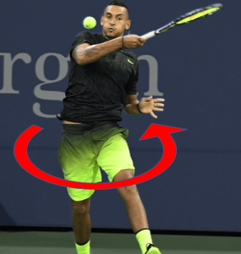
Backswing of the arm is the biggest volley killer, rather than any accidental backswing from turning the torso. Just keep in mind that you’re only turning the torso on the volley in order to get in a better anatomical position to make stable contact out in front of you. You are not turning in order to rotate back towards the net and generate power. Use the turn for stability, and you’ll be fine. It’ll Feel Strange, At First Initially, the volley “swing” will feel very counter-intuitive.
It feels extremely natural turn our shoulders and our hips sideways, and then to bring the racket back with our arm. Our intuition is yelling at us that, if we want to hit the ball forward, we first need to bring everything back so that we can do so. This intuition is wrong. The “swing” on the volley is really no swing at all; it’s just a repositioning of the racket.
Further, when we watch the players on the tour volley on TV, it is very difficult to tell what constitutes a forward swing and what constitutes a backswing. That’s actually true on the forehand as well, a stroke on which many players take an excessively arm-y backswing because that’s what it looks like the tour level players are doing, even though they aren’t. So don’t be disillusioned if the abolition of the backswing feels awkward at first.
It should feel strange – the “swing” on the volley is really no swing at all; it’s just repositioning of the racket. You’ll quickly notice, though, how solid the occasional, correctly executed, zero backswing volley feels, and you’ll never want to go back. Eventually, your brain’s reward system will start associating that firm, crisp volley feeling with the complete abolition of the backswing, and you won’t be tempted to do it anymore. Eventually, but not right away.
Training The Zero Backswing Volley The most effective way to train yourself to abolish your volley backswing is to practice volleying with another player who is also at net – volley-to-volley. When hitting volley-to-volley, backswing will be impossible, because the ball will come at you too fast. This will force you practice taking your racket directly from your ready position out to a contact point in front of you, lest you shank and mishit every ball.
Rafael Nadal drives a volley at Jack Sock’s feet at the Laver Cup, 2017. Sock, an elite doubles player and an elite volleyer, successfully hits a quick, reflex volley, catching the ball low and in front of his feet, and Team World ends up winning the point. Keep your feet, torso, and eyes engaged. When you have time, turn sideways as you move the racket forward to the contact point, and the shot will feel more comfortable.
When you don’t have time – when the ball is hit exceptionally quickly, or when it’s hit right at you – just ensure that the racket is at a 90 degree angle with your forearm, and send it straight out towards the ball. Forward, forward, forward. You’ll be surprised how many balls will simply hit it and bounce back over. Develop the Feel of Federer Many people assume that “touch” and “feel” are simply natural talents. They are not – like everything else in tennis, touch and feel can be trained.
While there certainly are players who, with practically no coaching, will quickly develop an impressive feel for the game, that doesn’t mean that feel is unattainable for the rest of us. Quite the opposite, in fact. Precisely because players like Roger Federer are such naturals, we mortals are able to learn which biomechanical alignments are useful for developing feel, and which ones aren’t by studying them.
The Mechanics of Feel This video (timestamped at 2:22) is the best, most informative practice video I’ve ever seen when it comes to studying feel. It showcases the most important concept that creates feel in every situation – The Fundamental Theorem of Tennis. From The Fault Tolerant Forehand section – Two Rules that Govern EVERY Shot The Fundamental Theorem of Tennis is two rules that govern every shot in the game. They are as follows: 1.
The racket makes a 90-135 degree angle with the forearm 2. The racket strikes the ball in front of the body (or, in a pinch, in front of the forearm) Any shot which follows these two rules will work. No matter what shot Roger is hitting, he always catches the ball in front of him, and there is always an angle between his racket and his forearm. He adjusts his entire arm when he has to adjust – he does not adjust by straightening out his wrist.
Roger Federer playing a low backhand slice (left), a regular backhand slice (middle), and a backhand block (right). In each of the three different situations, he contacts the ball out in front of his foot, and he maintains an angle between his racket and his forearm. That’s really all there is to feel.
Whether you’re playing a forehand slice, backhand slice, forehand block, backhand block, drop shot, or even a regular forehand or backhand, gaining a feel for the ball is as simple as gaining an understanding of how to adjust your racket in space without straightening out your forearm-racket angle and without catching the ball late. Practicing Feel Feel is a skill that you can practice and master, just like the forehand or backhand.
Mini-tennis is a great drill for it – you and your partner stand on opposite service lines and lightly hit the ball back and forth across the net. Relax your hand, but use just enough tension to maintain your 90-135 degree angle. Roger Federer casually playing a short, low forehand (left) and a forehand which has gotten to close to him (right). In each case, he takes the ball well in front of his body, and maintains an angle between his racket and his forearm.
Focus on hitting the ball in front and focus on adjusting your entire arm–racket system to the ball, rather than just your racket. Play around with taking the ball earlier than feels natural – the correct contact point on a touch shot will often initially feel quite far in front of you. None of the power of your shot comes from your forearm – your forearm merely stabilizes the racket during the stroke.
Use can use a slight body rotation, or you can use your chest to gently pull your entire racket-arm system forward, but do not use the muscles of your hand and wrist to swing – that causes misses and injury. If you prefer a competitive setting, doubles tennis is the way to go for feel training. In doubles, you’ll see all sorts of low shots, short shots, and shots you need to play quickly out of position that necessitate great feel to execute.
Keep your racket in front, and keep your forearm-racket angle set. I guarantee you’ll slowly develop that coveted feel that makes tennis so fun to play. Training to Crush The Pusher In order to beat a pusher, you need high percentage offensive shots. Most players at the recreational level do not posses high percentage offensive shots, and yet they attempt offensive tennis anyway. This leads to the frustration death spiral.
It feels like you’re in a winning position – you’ve got a short, high ball over the middle; all you have to do is hit one hard forehand, and maybe a volley or two, and the point is yours. But you haven’t actually developed your flat, hard, forehand, and you haven’t actually practiced those one or two volleys you’ll have to hit. In your current state, this really isn’t a winning position, even though it feels like one.
Until you train your offensive game to the point where you routinely convert these shots at a 90+% clip, you’re going to lose from offensive positions all the time. You miss, you feel like you shouldn’t have, you get frustrated, miss some more, and then get more frustrated. And the pusher wins 6-2 6-1, even though you were the “better player.” Fixing Your Strategy To beat a pusher, you need to keep the ball in play.
Pushing encourages players to attempt shots that they can’t actually convert with a high enough frequency to be profitable – we need to stop that. We’ve already discussed this concept at length, but here’s the upshot. To start, select shots that you know you can make with 80% probability or better. That means that for every 4 times you make the shot, you miss it 1 time.
That’s a good ratio to start with – it’ll prevent you from missing all the time and heading down the frustration death spiral to a quick defeat. An intuitive target (left) that is actually far too aggressive for the depicted player’s skill level; too much of the shot’s outcome distribution is out. Using a more conservative target (right) will lead to far better outcomes on this approach shot.
You might have to adjust in real time – if you’ve just missed 3 of the same shot in a row, move the target in and aim higher over the net. If you’ve made 15 in a row, you can feel free to be a little more aggressive. You Have to Practice Your Offense If you’ve never actually practiced your offense, playing against a pusher is always going to be tough.
The match is going to be tighter than you feel like it should be, and you’re going to have to play a lot safer to win than you feel like you should have to play. But here’s the thing – what you’re seeing on court is the truth. Until you spend the time on the practice court to actually train your offensive tennis, you should expect that your offensive tennis will be poor when playing a match. So, in that vein, here’s the best drill for training it.
Offense-Defense My favorite drill for practicing offensive tennis is one I call “offense-defense.” It’s useful for the defender, too, but it’s less realistic from their perspective. Where the drill really shines is training your offense. Here’s how it works: There’s one offensive player and one defensive player. Both players start at the center of the baseline. This is important – to maintain the realism of the drill, neither player should move from the center until the ball is fed.
The defensive player feeds the offensive player a high, short ball to either side. Then, the two players play out the point cross-court. Any shot that doesn’t land cross-court (as indicated by extending the center-service line to the baseline) is out. The doubles alleys are out. That’s it. A graphical depiction of offense-defense – green is in, everything else is out. Player’s start in the center, then move once hte ball is fed.
The drill can be done on the deuce side (right) or on the ad side (left). In this depiction, the offensive player is approaching with a forehand on both sides. How it Works in Practice The player who receives the high, short ball will hit a cross-court approach shot and come to net. The defensive player can try to hit a passing shot (tough because there’s so little court), they can try to lob, they can try to keep the ball low – whatever they feel is appropriate in this situation.
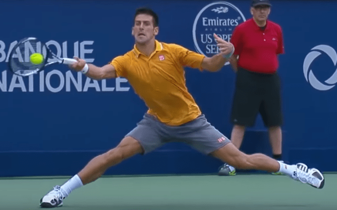
In Offense-Defense, both players are trying to win. That’s why the skills you train while drilling it carry over into matches. Here’s the beautiful thing, though, why the drill is so helpful – both players are doing everything they can to win the point.
The rules are set up such that the rallies will be longer than typical offense defense rallies, leading to more practice than would be possible under true match conditions, and yet the shots actually making up those longer rallies are still quite realistic. This falls in stark contrast to many other drills, during which one player is not playing to win. For example, as a coach, when I feed my student volleys, I’m not trying to hit it past them.
When I hit it hard at their feet so they can practice digging the ball, I’m not trying to get them to miss. While this kind of practice definitely has its place, it doesn’t translate to matches nearly as well as the practice from a drill like offense-defense does. In Offense-Defense, both players are trying to win. That’s why the skills you train while drilling it carry over into matches. Why not play full court?
We play half court such than an Offense-Defense rally can continue even when both players are genuinely trying to win the point. If the drill were full court, many of the points would just end with an approach shot winner – each player would hit far less balls/hour. We’re essentially playing every rally from after the time when the defender has guessed correctly where the offensive shot is going. Playing half court beautifully solves this problem.
We’re essentially playing every rally from after the time when the defender has guessed correctly where the offensive shot is going. That’s perfect, because, in a match, those are the rallies that continue anyway. The offensive player won’t be able to blow the ball by the defender easily in half court, and will typically have to play multiple volleys in a row to win the point.
This is also extremely good, because the discipline to construct a point using high percentage offensive shots is essential for quality net play. Skills That Offense-Defense Trains Here’s a non-exhaustive list of the amazing benefits of Offense-Defense.
On the offensive side: Hitting cross-court approach shots Moving through an aggressive shot to net Split stepping at the appropriate time while coming in Hitting an approach volley from the service line Choosing when to drop volley and when to drive volley Constructing a point with high percentage volleys Overheads Lob retrieval And on the defensive side: Digging out a hard ball hit at your feet Keeping the ball low Reading the net player’s racket and body to anticipate the shot Defensive touch shots Immediate transition from defense to offense on a weak volley Lobbing Adjustments and Suggestions Depending on your level, playing with the doubles alleys in may be appropriate.
The goal of removing the alleys is to force the players to learn to aim their shots, and to force the rallies to continue. That said, the goal isn’t for both players to just miss and miss and miss. If you can’t consistently hit the half court target without the alley’s extra width, add it in to keep the points going. You’d never hit a drop shot while grinding racket fed forehands, but it makes perfect sense to hit them in offense-defense.
This drill works great on both the forehand and backhand side. On the backhand side, I recommend alternating feeds between feeds that are higher and closer to the center of the court, on which the offensive player should hit an inside-out forehand, and feeds that are lower and wider, on which the player should approach with the backhand. Mix it up – throw in the occasional drop shot approach just like you would in a match.
Don’t treat this as a “drill” in the sense that shots like drop shots, or slices, or trick shots are inappropriate. You’d never hit a drop shot while grinding racket fed forehands, but it makes perfect sense to hit them in offense-defense, especially if your opponent is cheating way back in the court. Because your goal is to win the points. That’s what makes the practice translate. That’s what makes the drill work.
Offense-Defense Actually Translates I prefer not keeping score during Offense-Defense so that players don’t feel pressured into avoiding the very offensive shots they need to practice. If you can only hit, say, your flat approach forehand at 50% right now, this is the time to get it to 80%, not to abandon it because it’s too inconsistent. That said, decide what you want to work on – the shots you’re going to use that are not match ready – and then genuinely compete from there.
Do that, and the practice will translate to matches in a way that so much practice doesn’t. As you run up for a short ball in a match, it’ll finally feel familiar – you’ll finally feel confident, like you’ve done this 100 times before, because, after drilling with offense-defense, you will have done it 100 times before.
As you split step for your volley, as you move in and strike the volley, and then as you shuffle back, line up the overhead, and blast the final winner past your opponent – each of those shots will have been practiced. The #1 Forehand Consistency Killer I can’t trust my forehand. I’ve heard the above sentence more than any other when it comes to fixing the forehand. It’s an extremely common problem that I struggled with myself as a teenager for many years.
The fundamental problem, though, isn’t the lack of confidence itself, not directly. The problem is a mechanically flawed, non-fault tolerant stroke that shouldn’t be inspiring confidence. Trust = Fault Tolerance The typical player’s forehand stroke will fail unless executed perfectly; if said player executes their forehand even slightly wrong (for example, by slightly mistiming the ball or by slightly mishitting it), they are going to miss.
Under those circumstances, of course the player doesn’t trust their stroke; it’s untrustworthy. Your brain is smart – it’s lack of trust in your forehand, the reason it sends the “don’t be confident in this” signal as you go to hit, is that it should not trust a fault sensitive stroke to succeed consistently, especially under any sort of pressure. On the other hand, a fault tolerant stroke is extremely trustworthy.
Since the stroke will succeed in the face of a small fault, you can trust it even in cases where small faults are unavoidable, like when you’re tired or nervous. It is this property – succeeding when things aren’t perfect – that inspires your brain’s confidence. Therefore, we improve your forehand confidence by improving the stroke’s fault tolerance. We’ll start by fixing the #1 fault tolerance destroyer on the forehand – changing your string angle through contact.
Some Quick Terminology A graphical depiction of Novak Djokovic playing his forehand with a slightly closed string angle. When I say “string angle,” I am referring to the angle between the strings and the ground. We refer to certain string angles as “open,” “neutral,” or “closed” depending on orientation.
Open string angle – strings angled up towards the sky Neutral string angle – strings parallel to the net Closed string angle – strings angled down towards the court The modern forehand is hit with a slightly closed string angle, which is adjusted slightly depending on contact point and desired ball flight path. Maintaining the String Angle The string angle should barely change through the hitting zone.
The longer you maintain your string angle through the hitting zone, the more fault tolerant your swing will be. This is a simple case of collision physics. If a ball strikes an open racket face, it will deflect up more, and if it strikes a closed racket face, it will deflect down more. There is a certain range of string angles such that the ball will fly over the net and come down before landing out.
In order for your forehand to work, you need to contact the ball while the strings are at an angle in this range. The angle between Novak Djokovic’s string bed and the ground remains remarkably consistent throughout his entire hitting zone, leading to a very large timing window for striking the ball and producing a quality result. The longer you can maintain a correct angle through the hitting zone, the less precise you have to be with your swing timing.
Look at Novak Djokovic’s forehand above – if he were to contact the ball in any of frame 2, 3, 4, or even 5, his shot would go in. His string angle is roughly the same for his entire hitting zone. This is just one of the many things he does that allows him to practically never miss. What String Angle to Choose? Rafael Nadal playing a knee height forehand with an approximately neutral string angle.
The lower the ball is, the more open your strings should be, and the higher the ball is, the more closed your strings should be. Again, this is simple collision physics – you want low balls to fly higher off your racket and high balls to fly lower off your racket. The change in string angle between shots is very minor. On low balls, for example, topspin shots are played with a neutral or even slightly closed string angle, not an open string angle.
There is a ton of frictional force pulling the ball up through contact; it’s not necessary to actually deflect the ball up at all, even on a low ball. Only topspin lobs require an open string angle. I will reiterate – the most important aspect of string angle on any shot is that it is unchanging through contact. Whatever shot you’ve elected to hit, however you’ve decided to orient your string angle through contact, make sure that angle barely changes through the hitting zone.
Don’t Players Rotate Their Rackets? Yes, but in a different plane, a plane which does not change their string angle through contact. Elite players rotate their rackets (passively) about their forearm through the hitting zone, not about the handle. Novak Djokovic’s racket rotates counter-clockwise through the hitting zone, but the rotation doesn’t effect the string angle, which remains slightly closed throughout the swing. Look at the back view of Djokovic’s forehand above.
The racket is rotating, but it’s rotating in such a way as not to alter the angle of his strings through contact. From frame 1 all the way to frame 4, his string angle is slightly closed. That string angle remains consistent, even though the racket whips around his forearm throughout the stroke. Relaxation and String Angle At first, it’s tough to relax your wrist and maintain your string angle.
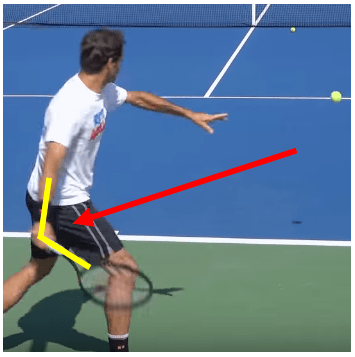
You have to pull the racket with your core movers at a pretty specific vector to avoid your forearm going crazy and rolling all over the place. On the other hand, it’s very easy to maintain a consistent string angle with a tight wrist – this is why you naturally tighten up when you know you need to make a shot; your brain understands that a tight wrist isn’t ideal, but at least you’ll be able to maintain a string angle that will keep the ball in play.
But relaxation is the holy grail of forehand topspin and power, so it’s a worthy goal to practice your string angle maintenance with a relaxed wrist. Shadow Swings Shadow swings are the best tool for teaching yourself to maintain your string angle through contact. The racket can (and often will) roll over during the follow-through, but throughout the hitting zone the string angle must remain constant.
Turn sideways, place your racket into its starting position for your forehand, and then lightly rotate your trunk and swing forward. Start at half speed and work up from there. Relax your hand, and swing out, up, and through an imaginary ball in front of you. Observe your string angle through the hitting zone. Is it changing? The racket can (and often will) roll over during the follow-through, but throughout the hitting zone that angle must remain constant.
Tweak the way you pull your arm with your chest until the angle is in fact remaining constant through the racket’s rotational whip. You can add a small amount of tension with your hand/forearm to maintain the string angle, but ensure that your wrist is still loose enough that, when you initiate your rotation, your racket naturally lags behind your hand, and then flicks around your forearm as you swing.
Ensuring Shadow Swings Translate Additionally, ensure two things on your shadow swings: Your hips get all the way around (back to parallel with an imaginary net) each swing. Don’t leave them under-rotated. Your imaginary contact point is out in front of and laterally away from your body. It’s very easy to lose those two points when you’re not hitting a real ball, but in order for the shadow swings to translate, we need to ensure specifically that these two good habits stay ingrained.
The Angle Actually Changes a Little You’re tweaking your shadow swing, and you finally find a comfortable, whippy, natural feeling swing where the string angle isn’t changing very much through the hitting zone. You notice, though, that despite your best efforts, the angle is still closing a little as the racket comes around. That’s fine. On a correct forehand, the string angle typically does roll over a very small amount through the hitting zone.
This is a very muted effect and it certainly isn’t volitional. Novak Djokovic’s string angle closes by only about 10 degrees from the time right before contact, to the time right after contact (from approximately 75o to 65o from horizontal). Let me clarify the three differences that distinguish this small, acceptable angle change from the typical one that destroys the forehand’s fault tolerance. 1.
It’s Non-Volitional This angle change happens completely naturally as a result of other forces during the swing. The player is not at all trying to change their string angle through contact – they aren’t trying to “roll their racket over the ball.” That means that this angle change never results in any unnecessary tension in the wrist, never hampers racket head speed, and naturally adjusts itself appropriately based on the exact situation of the stroke. 2.
Correct Angle is a Range There does not exist one specific string angle at which the stroke must be contacted. Rather, there exists a range of correct angles, contact at any of which will lead to a decent shot. A slightly closed angle will cause the ball to fly lower over the net, and land shorter, while a slightly open angle will cause the ball to fly higher over the net and land deeper. But that doesn’t mean you’ll miss.
The small angle change that occurs naturally isn’t big enough that the angle of your strings leaves this acceptable angle range – it’s still the case that if you’re a little early, or you’re a little late, your stroke will succeed. As a result, your stroke is still fault tolerant, and thereby still trustworthy. 3. Contact Height Effects Desired String Angle On a typical shot, the ball is moving down through the hitting zone and racket is moving up through the hitting zone.
In this situation, the very slight angle change through contact can actually help the ball stay in when the swing is mistimed. If you contact the ball early in the swing by accident, that also means you contact the ball higher, and in that case you actually want a slightly more closed string angle.
And, similarly, if you contact the ball late by accident, you’ll contact it lower and want a slightly more open string angle. (This is different if you’re hitting on the rise, one of the reasons that shot’s degree of difficulty is higher.) Just Get Rid of the Bad Habit I only mention fact that a very small angle change does occur so that you don’t happen upon a correct swing and think that it’s wrong.
When you relax your hand, rotate your body, swing out, up, and through, and hit the ball in front of you, the small change will occur completely automatically, without you having to think about it. All I really want is for you to understand the role that string angle plays in fault tolerance and to find the swing path that causes it to remain mostly constant through the hitting zone.
Any very small string angle change that still occurs, without you focusing on it, won’t effect your swing’s fault tolerance. On the opposite end of the spectrum, we have the large, fault tolerant killing string angles change that most players unintentionally employ. These changes are volitional; the movements are usually bad habits that transpire due to intentional effort by the player to do something like “roll your racket over the ball.” That’s what we have to get rid of.
That’s what’s killing your forehand’s fault tolerance. Restore that fault tolerance, and you restore your confidence. The Power of Neutral At Fault Tolerant Tennis, we talk a lot about offensive tennis. That’s for good reasons, two specifically. When your strokes lack fault tolerance, it’s your offensive tennis that starts to break down first Offensive tennis has no ceiling. You can only push for so long; eventually, you need to learn how to take initiative.
So while offensive tennis definitely deserves all of the attention we’ve paid to it so far, neutral tennis still demands it’s own dedicated discussion. Neutral is a very under-rated phase of the game. What happened in Monte Carlo over the last few days beautifully illustrates the importance of neutral tennis, and thus it gives us the perfect framework to discuss it today.
If you haven’t been following, here’s the run down: Wednesday: Novak Djokovic def Jannik Sinner 6-4 6-2 Thursday: Dan Evans def Novak Djokovic 6-4 7-5 Now, to the naive eye, Jannik Sinner is a much better player than Dan Evans, and, currently, Jannik is also ranked higher. Jannik hits harder off of both wings. He’s younger, faster, and routinely blasts flashy winners by his opponents.
Yet, even given all that, it wasn’t Jannik Sinner who was able to hand the best player in the world his first loss of the season. Rather, it was Dan Evans, a player who hardly ever even attempts a topspin backhand. As of April 16th, 2021, Jannik Sinner is already the #22 player in the world, only 4 spots behind his fellow Italian countryman Fabio Fognini, despite being only 19 years old. What Power Typically Accomplishes For the most part, hitting hard is great, and hitting harder is better.
For one thing, hitting hard makes it easier to hit winners, and if you hit a winner, of course, you win the point outright. For another, your opponent has less time to react to faster balls, so it’s much more difficult for them to get into an optimal position for their swing. Lastly, even when your opponent does manage to get into position against your powerful shot, their swing is still more difficult to time, because your shot is coming so fast at them.
The result – it won’t be long before one of your powerful shots draws a weak reply. The less fault tolerant your opponent’s strokes are, the more effective raw power is against them. The less fault tolerant your opponent’s strokes are, the more effective raw power is against them. Recall the concept whereby, when you swing faster, the errors in your stroke execution are more pronounced. Well, the exact same principle applies if your opponent is hitting faster at you.
In that case, too, any small execution mistakes on your part will be magnified; when the ball is coming faster, you have to be more precise than you otherwise would to produce a reply of equal quality. A faster moving ball spends less time in your optimal contact zone than a slower moving ball does. Overall, hitting really hard out of neutral situations typically makes sense, provided you can still maintain decent percentages.
If you hit really hard out of neutral, chances are, pretty soon, your opponent will give you a weak reply, and you’ll be able to transition to offense. The Novak Djokovic Effect Here’s the problem with using power against a defender as good as Novak Djokovic – it’s not enough to get out of neutral.
Even against most tour level players, Jannik Sinner’s game is powerful enough that he can quickly and consistently navigate his way out of a neutral rally and into an offensive rally, simply by blasting the ball at them. But Novak’s game is different. Novak Djokovic has the most fault tolerant strokes on the entire tour. He once played an entire 2.5 sets at Wimbledon without making an unforced error.
Against a player like that, powerful shots alone don’t facilitate a transfer from neutral to offense. Neutral is Neutral If you’re hitting really hard and not getting to offense because of it, that’s a problem. It’s a problem because you are always sacrificing some amount of consistency, however small, in order to hit the ball harder. You need to gain some benefit to offset that sacrifice. If you aren’t gaining anything, you’d be better off just hitting slower.
Now, of course, you can’t hit so slowly that your opponent can easily transition to offense, but there actually exists a wide gap between these two levels of aggression. Roughly, here are the three zones of shots that we’re talking about: Shots hit hard enough to get you to offense The wide range of shots that keep the point neutral Shots hit so weakly that your opponent gets to offense You are always sacrificing some amount of consistency, however small, in order to hit the ball harder.
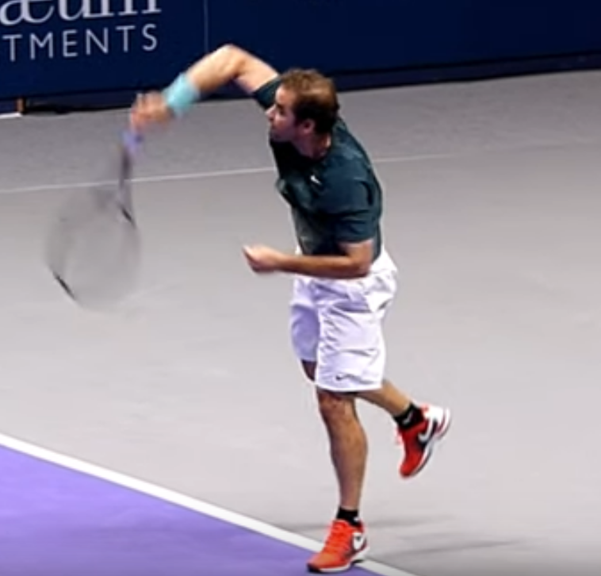
If you aren’t consistently getting to offense when hitting hard, then you’re in zone #2, not zone #1. But if you’re in zone #2 already, is a power shot really what you want to attempt? The goal in zone #2 is just to keep the point neutral and await a future opportunity to do more than that. Is a hard, fast shot your highest percentage way to continue the point?
You don’t have to hit so weakly you end up in zone #3, but, again, there are a lot of shots that merely keep the point neutral, a lot of shots in zone #2. There does not exist a simplistic dichotomy between hitting hard and merely rolling the ball in. Lots of shots exist between those two extremes that aren’t particularly aggressive, but that are aggressive enough that your opponent can’t easily attack them.
If you’re keeping the point neutral, accept that you’re keeping the point neutral, and then keep the point neutral as best as you can. If you select lower percentage shots, even shots that only sacrifice a small amount of consistency, you need to ensure you’re gaining a benefit from that selection. Jannik Sinner’s power shots are extremely consistent. That’s why he’s already one of the best players in the world. But they weren’t consistent enough on Wednesday.
Against a defender as skilled as Novak, the advantage he gained from his power was almost completely neutralized; after that, all that was left was the very small consistency sacrifice, and against a world class player, that small edge was enough to decide the match. Dan Evans and the Backhand Slice Dan Evans is famous for his backhand slice – a stroke by which the player hits the ball back with underspin, rather than topspin.
Dan Evans’s backhand slice hardly ever directly facilitates a transition to offense. Occasionally, he’ll strike an aggressive drop shot off of that wing, or he’ll take a short backhand, drive the slice deep, and approach the net, but, for the most part, Dan Evans’s backhand slice has one function – keep the point neutral. Dan’s backhand is excellent at this function. It doesn’t matter that Dan Evans rarely attacks off the backhand wing.
In singles tennis, especially, the first thing every player needs to focus on is not losing the point. When Dan Evans hits a backhand slice, he hardly ever loses the point on the next shot. When Dan Evans hits a backhand slice, that slice almost always keeps the point neutral. That matters. Neutral is Okay What everyone should take from Dan’s win over Novak is that hitting many shots in a row out of neutral is totally acceptable. Don’t panic; you don’t need to press for offense immediately.
Dan Evans is playing against the best player in the world, and he elects to, almost exclusively, hit a knifing slice off the backhand wing. He knows a player as good as Djokovic will hardly ever miss that ball, which means that Dan’s slice, in turn, is very rarely going to win him the point outright, but he’s okay with that. Dan has a massive forehand which he uses for plenty of offense, so, again, there’s no need to panic and do something stupid off of the backhand.
Don’t panic; you don’t need to press for offense immediately. Further, at the recreational level, you can actually win many matches without ever playing offense at all. Think about how many times you’ve lost to a pusher in your life. How is it possible, given that they never play offense? It’s possible because the pusher is an expert at keeping the point neutral.
It’s not trivial to take offense against them – unless you’ve specifically practiced that skill, you’re probably not going to be able to. Neutral is the starting point for singles tennis. Offense is flashy, but every point is just worth one point. Executing a beautiful string of approach shots, volleys, and overheads to ultimately smack the ball by your opponent is worth one point, and accidentally missing a backhand out of a neutral situation is worth one point.
So, while it’s definitely exhilarating to play offensive tennis, if you want to improve your singles results, try focusing a little more on consistently keeping the point neutral. Get good enough at that, and you just might beat Novak Djokovic. Free the Foot, Free the Hips At Fault Tolerant Tennis, we teach fundamentals. Today, though, we’re going to dive into a detail. Why? Because this detail, specifically, messes up so many players that it’s worth addressing on it’s own.
In the same way that we’ve dedicated articles to just the low forehand, we’ll dedicate articles to other non-fundamental specifics, in cases when those specifics cause enough issues to be worth addressing by themselves. During the forward swing on the forehand it’s actually impossible to execute a proper hip twist if the feet remain fully planted on the ground during your swing. The feet must come up off the ground, at least partially, in order for the hips to fully rotate.
The Role of the Back Foot For the back foot, specifically, this can be challenging. During forehand preparation, you load up on your back foot, placing your weight on it, such that during the forward swing, you can drive off of it. However, you have to actually drive off of it, lest too much weight remain on this back foot as you swing, thereby preventing it from partially leaving the ground and freeing the hips to rotate.
Here’s the physical checkpoint that determines whether you (or your student) is doing it right: on almost every forehand, the back foot ends pointing at the target. The back foot’s job is to press off of the ground, thereby initiating the kinetic chain. In order to do this, it must be planted on the ground, at first. This early weight on the back foot can be a double edged sword, though.
That weight needs to, eventually, get off of the back foot, such that the back foot is free to rotate along with the hips. The feet are connected to the hips. When the hips rotate, the feet want to rotate as well, and when the hips end square to the target at contact, the feet want to be square, too. Both Roger Federer and Rafael Nadal allow their back foot to come almost fully off the ground as they swing on the forehand.
This allows the foot to rotate along with their hips, leading to it naturally pointing at the target by contact. Look at the two images above, of Roger Federer’s and Rafael Nadal’s feet as each comes to contact. For each, the back foot is pointing towards their target. It starts facing away from the target (just like the hips), and then, as the player rotates during the swing, the foot itself naturally pivots back towards the net. Should I Do This Consciously?
For some students, consciously thinking about the back foot ending towards the net helps them rotate. Specifically, this cue can assist with students who are under-rotating, students who are rotating too late, or students who are keeping too much weight on the back foot during rotation. 1. Under Rotation When you under-rotate, chances are your back foot won’t get all the way around to the net, just like your hips.
Often, if you think about “your back foot ending towards the net,” your body will naturally increase your hip twist in order to make that happen, which solves the fundamental problem, insufficient hip rotation, perfectly. 2. Late Rotation Sometimes, a student will “rotate their hips,” in a sense, but they don’t actually drive their swing with that hip rotation.
On a hip rotation which drives the stroke, the back foot needs to partially leave the ground, because if it doesn’t, there’s too much force on the ankle when the hips rotate. The back foot needs to partially leave the ground, because if it doesn’t, there’s too much force on the ankle when the hips rotate.
When the hips, instead, engage late in the chain, they generate much less power; the hip twist isn’t an explosive hip twist, with the goal of driving the kinetic chain, but rather a weak twist with the simple goal of turning the body, because the student has a vague idea that the body is supposed to be turning. It’s possible to execute this out of sync hip twist without the back foot leaving the ground at all. In this case, the “back foot at the net” cue can also help.
When a student thinks about ensuring their back foot gets around, their consciousness moves to their hitting leg and their hip twist, the appropriate place when starting the forehand. This typically causes them to correctly initiate the swing by driving off of that foot, instead of adding an out of sync hip rotation later. 3.
Too Much Weight on the Back Foot Especially when using the non-hitting-foot-up footwork pattern, it can be easy to keep too much weight on the back foot, preventing it from sufficiently rotating. Again, simply thinking about getting the foot around usually solves this problem. Your brain understands that, in order for a foot to rotate, it needs to be deloaded. You’ll naturally increase your spring off of that foot in order to get it around towards the net.
The Hips Lead Foot Rotation I’ll close with a point of caution concerning this cue. While it is extremely helpful, it’s important that any coach using it still understands the fundamentals behind it. This cue is a trick to get a student to employ hip rotation. It’s possible to rotate the foot without rotating the hips. This kind of foot rotation, absent hip rotation, is not in any way helpful to the stroke.
The cue isn’t merely an instruction, but rather a physical checkpoint for the student: “Did your back foot rotate back towards the net? No?
Then drive off of it a little more and allow it to come up off of the ground more, until it does.” The cue is not: “Use the muscles in the calf to twist your back foot towards the net.” That said, the back foot’s orientation is a very useful detail for both executing and debugging the forehand, and learning how to cue it properly is a great tool to add to your coaching repertoire.
Compact, Efficient, Elite – Aslan Karatsev’s Versatile Forehand In almost every article, I say something along the lines of “lead with the hips” or “power comes from the hips, not the arm,” but how do you actually put that concept into practice? What does it mean for power to come from the hips, not the arm, when it comes to the actual, physical positions your body enters during a forehand swing? Most players’ initial instinct is that the arm should drive the racket.
The idea of “swinging” a thing is typically understood as taking said thing in your arm, pulling your arm back, and then throwing your arm forward. It’s really only athletes, whether natural or trained, who have determined that, in the context of something like hitting a baseball or striking a tennis ball, it’s actually better to “swing” not by pulling and throwing the arm itself, but rather by twisting the trunk and allowing the arm to come along for the ride.
Though it’s initially counter-intuitive, the arm barely participates in either the backswing, or the forward swing. The trunk drives the racket. Aslan Karatsev’s Compact Preparation Aslan Karatsev has been on a tear recently. He qualified for the Australian Open in 2021 and then made the semi-finals.
Since that breakout performance, he has: Won the Qatar Open Doubles Title (with fellow Russian Andrey Rublev) Made the finals of the Serbia Open, beating (1) Novak Djokovic along the way Won the Dubai Championship, an ATP 500 level event, beating Dan Evans, Jannick Sinner, and Andrey Rublev en route to that title There are hundreds of things that make Aslan Karatsev a great player, but we’re going to focus in on his forehand and, specifically, his “backswing” (or lack there of).
Karatsev is one of the players on the tour who most exemplifies the idea that arm swing is completely unnecessary for power generation. He hardly brings his hand back at all during his forehand preparation, and thus, instead of using his arm to generate power, he simply unwinds his kinetic coil. From a front view, often, during Aslan Karatsev’s forehand preparation, we can see both his hand and his racket (right) on the hitting side of his body.
Even when he twists his chest and shoulders exceptionally far (left), we can still see almost his entire racket on the hitting side of his body, at the completion of his backswing. Abbreviate, Abbreviate, Abbreviate the Arm Movement Many players take their arm back unnecessarily far. This adds a significant burden of execution to their swing while providing hardly any benefit in return. Why is this so common?
Too far doesn’t feel like it’s too far, and, further, the the proper distance often doesn’t feel far enough. Aslan Karatsev prepares to pass Jannick Sinner in the 2021 Dubai Championships quarterfinal, en route to winning the match, and ultimately title. In the above shot, Aslan Karatsev is about to flick a cross-court passing shot winner past Jannick Sinner, despite the fact that Sinner’s approach shot is struck exceptionally hard and hit away from Aslan. How does he do it?
Not only does Karatsev prepare his racket on the hitting side of his body here, but also his entire hand, wrist, and forearm, all on the hitting side of his body before he initiates the swing. Further, in this particular case, Karatsev has barely wound up his kinetic coil at all. His chest is turned away from the ball a little, but not to nearly the degree that we see on his aggressive shots.
Taken together, these preparation techniques mean that the distance his racket needs to travel to get to the ball is very small. This makes the shot far easier to time, because there is far less swing time during which small faults can effect the swing. There’s literally less movement to mess up. This is the only way that a difficult defensive shot responding to a high quality aggressive shot (the kind of shot Karatsev is playing here) can be even remotely fault tolerant.
Load in the Hip Pocket As an approximation, “load in the hip pocket” pretty accurately describes the starting position at the end of forehand preparation. We don’t literally want to start our hand at our hip pocket, because, of course, that’s too close to our body, but with respect to the back/front loading position, the hip pocket is perfect. The hip pocket is typically on the front of the leg, and that’s a good place to prepare the hand.
There’s really no need to send the hand all the way around the body back to the back fence. Any additional small acceleration you might get from preparing the hand farther back is dwarfed by the reduction in fault tolerance that doing so introduces. But then how do I get any power? Twist. If you want a little power, twist a little. If you want a lot of power, twist hard. If you really want a lot of power, twist back farther during preparation such that you can twist forward more during the swing.
But twist the body, don’t pull the arm back. Aslan Karatsev prepares to blast a down-the-line winner past Lloyd Harris in the Dubai Championships final, 2021, en route to winning the title. Here’s a shot of Aslan preparing for what ultimately becomes a down-the-line-winner. Yes, a winner, despite the abbreviated arm takeback. To the naive athletic mind, it’s quite surprising, when looking at Aslan’s arm preparation, that this shot is struck exceptionally hard.
Everything is on the hitting side of the chest. His racket, hand, forearm, and even his upper arm are all in front of his chest before he swings. How does he hit this ball so hard, despite the fact that the arm hasn’t been pulled back in order to do so? The secret how far Aslan has wound his abdominals – his trunk is turned a full 90o away from his target.
His arm need not participate in the power generation process when he prepares this way, because his explosive trunk rotation will generate all the acceleration he needs. Trust The Trunk, Abandon the Arm It’ll feel weird, at first. When you try to implement a hand preparation similar to Aslan Karatsev’s, you’ll feel constricted. How am I supposed to get any swing going from this position? The racket is already so close to it’s final contact point. Just try it, though.
Once the ball gets to its proper location, both away from you and in front of you, twist. If anything, this preparation will help you catch the ball well in front of you. You’ll have to, because your racket is starting so much farther up in the court than you’re used to. Twist hard, catch it early, and you’ll be surprised just how much pop your shot still has.
I’ll leave you with a quote from the Forehand Preparation section of The Fault Tolerant Forehand, our book, in which all of this content is explained in heavier technical detail: Nearly all of the forehand killing backswing mistakes aren’t caused by players failing to take preparation steps that they should be taking. Rather, they’re almost always caused by players doing extra things during preparation that they shouldn’t be doing.
Great In Practice, Bad in Matches Why is it that so many players feel like they play great in practice, and yet can’t produce that same level of tennis in matches? In two words: Mental Resources. In a match situation, there’s so much more to focus on than in practice, which puts a strain on your limited attention. Often, the things that work great in practice, but fall apart in matches, are the things that you focus on in practice, but don’t have the mental resources to focus on in matches.
An Example Let’s say you have a bad habit that you’re working out of your game during practice. For this example, we’ll use a common one: you under-rotate on your forehand. You and your practice partner grind cross-court forehands so that you can practice fully rotating into contact. Within 20-30 shots, you’ll be rotating properly, because you’re able to focus on your rotation as you swing.
Further, this focus won’t demand 100% of your mental attention; you’ll also be able to focus on whatever else it is you typically focus on as you go to hit. Whether it’s your feet, your contact, your breath, etc. – whatever it is that you typically spend your attention on when you strike a forehand, you’ve got enough mental resources to keep focusing on that and to add in the extra focus on proper rotation. Now let’s change to a match.
All of the sudden, there’s way more to focus on: Where is your opponent? How are they defending? What shot are you going to hit? What happens if you miss? How big should you go? Etc, etc, etc… You also have to serve before you play your forehand, which adds yet another novelty to the match situation, and adds another list of items demanding your mental attention.
In order to really break a bad habit, you need to practice the correct version so much that you can perform it properly without mental focus. Movement in a match is different. With your practice partner, you were grinding forehands out of the forehand corner, but in a match, you might have to sprint that way before contact, further complicating the footwork and preparation.
Under these conditions, you do not have the mental resources for everything, and the first thing to go is going to be the thing that’s most novel – in your case, proper rotation. In practice, you thought you’d gotten rid of that bad habit, but the only reason you were rotating properly in practice was because you had enough mental resources to focus on it. Once you get into the match, that’s no longer the case.
This means that, in order to really break a bad habit, you need to practice the correct version so much that you can perform it properly without mental focus, because, in a match situation, mental resources are so limited. 1. Practice Until Unconscious Competence Our first key insight into playing better in matches – practice your good habits until you can do them without thinking.
If you can perform your good habit correctly while focusing on it, that’s great, and it’s definitely better than reverting back to your bad habit, but until your newly minted good habit has moved into the phase of unconscious competence (you perform it correctly without thinking), it’ll always demand mental attention during matches. Since mental attention is so limited in matches, there’s a good chance it won’t get it.
Newly formed habits aren’t the only things that get forgotten during the mental attention squeeze that occurs during matches, though. Here are some other things that often get the axe, and for which just a little bit of extra focus goes a long way. 2. Split Step After You Serve I know, I know, it sounds trivial. But are you sure you always actually prepare for the next ball after you serve?
Especially if your serve is in flux right now – maybe you’re tweaking your mechanics or you’re dealing with an injury – it’s extremely easy to become so distracted by your serve that you forget to prepare for the point after you strike it. It’s extremely easy to become so distracted by your serve that you forget to prepare for the point. A few days ago, I was hitting with a friend of mine who hadn’t played a match in a while, and he was making this exact mistake.
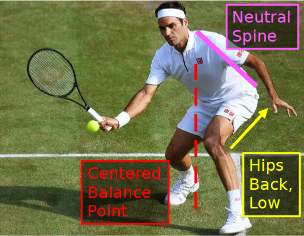
I’d chip the return, not a drop shot, just a short slice, and he wouldn’t even move for it, despite only needing a couple steps to hit it back. It might sound strange, but this is actually a pretty common problem. Definitely look out for this if you routinely play against returners who miss your serve (if you’re male, mixed doubles is a killer for this). If you hit 5, 6, 7 unreturned serves in a row, your brain will get lazy.
Your subconscious will ask you: why do I have to split step when the serve isn’t coming back anyway? Don’t let yourself fall into this habit. 3. Prepare Early In practice, there’s so much less to think about that most players naturally take the racket back on time. In matches, this isn’t always the case. If, as the ball comes over the net, you’re thinking about 10 different shots you can hit, and how you’ll recover after each one, chances are what you’re not doing is beginning your preparation.
Turn early, and then wait until the ball gets there, rather than waiting to turn away until the ball is already close. In The Fault Tolerant Forehand, the last section of Preparation is titled “Inhale and Wait.” An entire section is dedicated to this idea because it’s so often overlooked that waiting is a critical piece of proper forehand preparation.
Rafal Nadal has already fully prepared his racket to execute a backhand slice, despite the fact that the incoming ball hasn’t even passed the service line yet. It’s very tempting to only start your preparation once you feel like you’re basically ready to swing, but that’s too late. In order for the stroke to be fault tolerant, you need to prepare extremely early.
That way, even if the ball comes at you quicker than expected, or if it takes a bad bounce, or even if you just execute the stroke improperly, you’ll still have plenty of time to adjust, and therefore the stroke will succeed anyway. Do not try to time your preparation such that preparation and swing is one continuous motion. Start immediately once you recognize where the ball is coming.
Move to the ball with plenty of time to spare, inhale, and then wait until you see the ball reach the zone at which you want to begin your swing. 4. Margin, Margin, Margin Especially in singles tennis, you need to use higher margin shots than you think, and it’s common for a player’s sense of what is an appropriate level of aggression to be miscalibrated during practice. During practice, missing doesn’t really matter.
Sure, your brain will hit you with a little bit of negative emotion, but it’s nothing like losing a point in a match. If you try to hit a forehand winner in practice, and you convert it 60% of the time, the positive emotion of the successful winners may outweigh the negative emotion of the missed shots. In a match, of course, this emotional response is incorrect: if you have an opportunity to hit a forehand winner, your equity in the point should be far higher than 60%.
The target on the left is too aggressive; too much of the shot’s outcome distribution is out. The shot on the right, which will miss far less of the time, is a much better decision, even when playing offensive tennis. 5. Practice Your Offense We’ve talked about this before, but it bears repeating. You have to practice offensive tennis if you ever want to be good at offensive tennis. This is a huge issue with many practices.
In many contexts, it’s actually impolite to attack your practice partner’s short ball and blast a winner by him. The solution is to add in dedicated offensive drills to your practice sessions like Offense-Defense. That way, when you get into a match and you attempt offensive tennis, it won’t be so novel. Again, when a typical player goes up to smack a short forehand in a match, there’s a good possibility this is literally the first time all week they’ve attempted that shot.
Of course it’s going to be low percentage. A graphical depiction of Offense-Defense. In this drill, one player (the defensive player) feeds the other player (the offensive player) a short, high ball, and then the two players play out the point cross-court. Summing Up In a match, you won’t have nearly as many mental resources at your disposal as you will in practice. Here’s how to play well anyway. Practice until unconscious incompetence. Split step after you serve. Prepare early.
Aim to bigger targets. Practice your offense. Also, I’ll leave you with one more: Play matches! Whatever kind of match you want to be good at, whether that’s singles, doubles, mixed doubles, or something else, you’ve got to play that kind of match many times over in order to master it. Doing so will allow you to practice the specific kinds of shots that are common in that format, and to grasp the nuances of what makes a player good at it. Good luck!
Flat, Spin, and Everything in Between The primary way you adjust your forehand is by altering the tilt of your torso through contact. As we’ve discussed before, there exists only a small range of optimal movement patterns that allow for a forehand swing powered by explosive body rotation. In order for your forehand to be explosive, you need to perform a movement pattern in this small range. Tilting the Torso All high quality forehands involve using explosive torso rotation to power the racket.
The racket, thrown by that explosive torso rotation, flicks out to the ball, and then up and through the ball through contact. When the rotational kinetic chain is harnessed properly, nearly 100% of the body’s rotational energy is transferred into the racket by contact, leading to a whipping effect which creates tremendous racket head speed. We tilt the torso to change the racket path through contact without altering the relative position of the hand, arm, chest, hips, etc.
This way, we can alter the resulting contact while still harnessing the kinetic chain in the exact same biomechanical manner. This allows us to alter our shot while still accelerating the racket aggressively. Roger Federer striking a knee-height forehand (left), a waist-height forehand (middle), and a shoulder-height forehand (right). In the above image, Roger Federer is tilting his body to adjust his contact point.
On all three forehands, Roger maintains the same relative position of his racket, hand, arm, and chest. This allows him to generate racket head speed the same way on these three different shots. Want further proof? Here’s what happens if we rotate the images to align the arm positioning. Thanks to one of our readers, Djordje Kojičić for reaching out via email and providing these images. The creation of this graphic indicates a deep understanding of the concept, so, again, thanks a lot.
What you’re seeing here are the exact same three forehands as above. The images are just rotated. Roger’s biomechanics are so consistent from shot to shot that you almost can’t tell which shot he’s hitting when you rotate the images like this. His kinetic chain is always executed the same way. Applying This to Your Game You have to get out of the mindset that the arm determines the swing. It doesn’t (at least, not alone).
The arm can certainly make adjustments, but most of the time you have to sacrifice racket head speed in order to adjust with your arm. While preserving the fully intact kinetic chain, the arm can only make fine tuned adjustments which only effect the ball’s trajectory a little. If you try to do more than that with your arm, often either the fault tolerance of the stroke will evaporate, or the effortless racket head speed will disappear instead.
Therefore, adjust your body in order to adjust your stroke, the way Roger does above. In next few sections, we’ll discuss exactly what this looks like for a few different kinds of forehands. Hitting Flat The simplest forehand is the flat forehand. It can be performed most easily when the ball is around shoulder height. On this shot, the torso remains essentially upright, and you simply twist and let the racket flick straight through the ball, with very little up motion through contact.
Nick Kyrgios, the king of the flat forehand, prepares his hand at the height of the ball (left), and then, with very little torso tilt at all, explosively rotates straight through the ball (right), blasting a forehand return winner past Andrey Rublev. This shot won’t feel easy if coaches have been pounding “brush up on it” into your head for 10 years, but if you’ve been reading Fault Tolerant Tennis instead, it will be.
Here, we don’t give advice that isn’t transferable – “brush up on it” is only (kind of) true for a topspin shot, but for flat shots, obviously, that paradigm breaks down. Here’s a much better road map for the forehand stroke: Accelerate the racket with body rotation Ensure your hips and chest are back around by contact Contact the ball away from you and out in front of you Under these criteria, a flat shot and a topspin shot are not fundamentally different.
On a flat shot, merely load the racket behind the ball, roughly at the same level as the ball, rotate, and let racket flick straight through it, instead of loading it below the ball and allowing it to flick upward. Getting Topspin Topspin necessitates that the racket face is moving up significantly through contact. Now, this doesn’t necessarily mean that your arm must also be moving drastically up, but the racket face must be. First, a refresher on the physics of topspin contact.
From The Fault Tolerant Forehand: In order to hit a topspin shot, the player’s racket must exert an upward force on the back of the ball at contact, causing it to rotate. In addition to this upward force, the player must also supply the large translational force necessary to drive the ball back over the net with speed.
This is accomplished by contacting the ball while the racket is moving both upwards and forwards through it, with the strings tilted slightly downward towards the court while doing so. The upward friction between the ball and strings at impact will both drive the ball up, giving it enough height to clear the net, and also cause the ball to rotate in a topspin manner.
The translational impact – the fact that the racket is also moving forward through contact – will impart the ball with significant velocity towards the other side of the court. The Fault Tolerant Forehand. “Understanding Topspin Contact.” Page 28. The best way to get the racket flicking up through the ball as you swing is to load the racket slightly below the ball on all topspin shots.
This will cause your arm to move up a little on every shot, and it’ll also cause the rotation about your wrist to be more vertical, increasing topspin. Rafael Nadal playing a knee-height forehand with heavy topspin by tilting his torso by about 30o, transposing much of his racket’s velocity into vertical velocity. To get more topspin than that, tilt your torso as you rotate. That’ll transpose the same relative swing into a more vertical swing with respect to the ball.
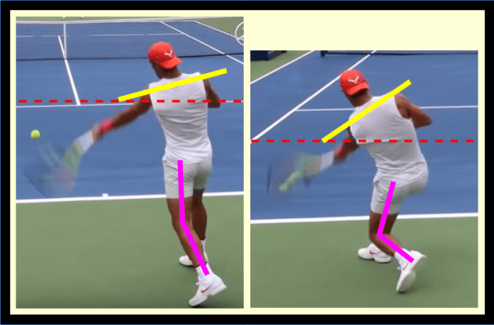
That transposition of the same racket velocity is what allows you to hit a loopier shot, a shot for which more of the velocity you generate goes into topspin and less of the velocity you generate goes into driving the ball forward. Here’s Rafael Nadal implementing this idea. The forehand strike you see in the image travels a full five feet over the net, before quickly spiraling down on the other side of the court.
Let’s break down the key ingredients that create that beautiful result, one of which is the critical body tilt. Rafa is incredibly strong. No matter how good your technique is, you can’t hit as heavy as he does without strength. Rafa harnesses that strength by rotating his hips and chest into contact, utilizing his entire body to accelerate the racket to blinding speeds. Rafa tilts his torso down by about 30o such that more of this racket motion is transposed into the vertical plane.
This, ultimately, is what transforms his blinding racket head speed into vicious spin. Spin Exists on a Continuum To close, I want to specify that “topspin shots” and “flat shots” are not a dichotomy, despite the fact that they’re so often presented as such. Instead, topspin exists on a continuum. There are spinnier shots and flatter shots. There are really spinny shots and really flat shots.
But even on “flat” forehands or “flat” serves, most pros still elect to add at least a small amount of topspin to increase their margin for error. That’s why I’m not teaching you how to hit a “flat forehand” or how to hit a “topspin forehand.” Rather, I’m simply teaching you what body orientation produces what result. The more spin you want, the more you have to tilt, and the more your racket needs to go up.
Likewise, the flatter you want to hit, the more you need to level out, and the higher you need to load your racket. Let’s take a look at the Queen of Clay for one final example of this principle. Iga Swiatek striking a shoulder height forehand (left) and a knee-height forehand (right) with different torso angles, while practicing for the 2021 Australian Open.
Iga Swiatek loads her racket below the ball on both shoulder-height and knee height forehands, because she prefers to use topspin on all her shots. This decision comes down to player preference. Some players, like Nick Kyrgios, elect to smack high forehands almost completely flat, while others, like Iga, prefer to use a little topspin to get that extra margin for error. But even though Iga is definitely a high spin player, she still only tilts her torso on lower balls.
This torso tilt further increases the verticality of the swing, allowing her to get significant net clearance on a low ball, and this same tilt would clearly be inappropriate on a higher ball. Ultimately, every player needs to intuit that their torso angle is their primary tool for altering their swing path. If you can only alter your swing with your arm, you’re going to be very limited in the range of shots you can successfully execute.
Learn to alter the torso, and you’ll unlock a new world of forehand flexibility. All Forehands Are Inside-Out Forehands I work with a 10-year-old girl named Anna who presents with an interesting issue. When she’s pulled out wide on the forehand, her stroke looks great, but when the ball comes right to her, her stroke breaks down.
On the wide shot, she naturally prepares her body on time, finds a nice contact point out in front of her and away from her, and in doing so rotates into her shot and contacts the ball with her hips and chest square to the net. When she’s pulled out wide on the forehand, her stroke looks great, but when the ball comes right to her, her stroke breaks down. On forehands that come right to her… not so much.
She’s often late, often under-rotated, often contacting the ball too close to her body, and the entire stroke looks awkward and forced. If you’d only seen her hit a wide forehand, you’d be impressed, and then subsequently very confused when you saw her hit a typical shot. It’s not just Anna, though. I’ve seen this in many students’ games, most notably, my own.
I myself have had this exact same problem where my wide forehand is much better than my regular shot, and that’s why I was able to help Anna so quickly. This brings us to today’s insight: All forehands are inside-out forehands. Move Away, Move Away, Move Away When a ball comes straight at you, you have to get out of the way of it before swinging.
And I mean significantly – you can execute the shot if you only move a little, but it won’t be very effective, and if you do try to hit it hard, it won’t be fault tolerant. Even some forehands that end up on your hitting side are still inside-out forehands. Forget the notion that there are three locations for a forehand: wide forehands, forehands that come right to you, and inside-out forehands.
There are only two: wide forehands, for which you move right, and inside-out forehands, for which you move left (lefties, switch those directions). Again, all forehands that come down the middle are inside-out forehands, and even some forehands that end up on your hitting side are still inside-out forehands. You need to move away from the ball more than you think you have to. A Visual Explanation Let’s look at Rafael Nadal for an example of a player who moves exceptionally well on every forehand.
Below is an image of Rafa preparing for a ball that’s been hit to his hitting side. This isn’t even a ball that’s come straight at him, but one that, were he not to move at all, would actually land to his left (Rafa is lefty). Even though the ball is coming to Rafa’s hitting side, he will still move his body away from the ball before swinging, in order to harness rotation as he swings. Rafael Nadal preparing for a forehand on his hitting-side, yet still moving away from the ball.
Each of the top, middle, and lower yellow lines is the same length as the corresponding line in the other images. The Feet Rafa plays this forehand from a neutral-stance (slightly semi-open). This allows him to easily turn his hips away from the target, such that he can rotate them back towards the target through the swing.
As shown by the bottom line on each image, Rafa’s back foot is very close to where the ball will land to start, and then he moves it much farther from the ball during preparation. The Hips The hips themselves must also move away from the ball to facilitate explosive rotation. It’s a smaller difference than for the back foot, but you’ll notice that during preparation, and even during contact, the hips are farther from the ball than they started.
This is because Rafa needs this little bit of extra space to harness the kinetic chain properly; were he any closer to the ball, his arm wouldn’t be able to freely whip around like it’s doing. The Hitting Shoulder Rafa’s hitting shoulder also starts very close to the ball, and turns well away from the ball during preparation. Then, even at contact, it’s still farther from the ball than it started.
Again, if Rafa were closer to the ball at contact, his arm wouldn’t be as free – he’d feel jammed and awkward. Make Kids Hit Inside-Out This concept is why I always have children practice inside-out forehands, even from our very first lessons at 5 years old. The inside-out forehand isn’t a “specific kind of forehand” or a “forehand variant” – the inside-out forehand is the forehand.
If you aren’t comfortable hitting a forehand on your backhand side, then you’re not comfortable with a movement pattern that is fundamental to the forehand stroke: moving away from the ball before swinging. Teaching kids to hit inside-out from the start drills that “move away” movement pattern into them as an essential, necessary part of the forehand stroke.
This emphasis on moving away before hitting helps to avoid the common problem of only having an effective wide forehand, but improperly spacing the ball when it comes right to you. Vision Will Transform Your Match Play Vision might be the single most underrated tool in every tennis player’s toolbox. Sure, every coach tells their students to “watch the ball,” but what does that really mean? And why is it that proper visual tracking is the single most important key that unlocks fluid match play?
Let’s dive in. Mental Resources A mental resource squeeze takes place during matches. During matches, you have far more to think about than during practice. In practice, when you have less to think about, you typically have ample mental resources to spend on the routine things that make your game effective (like focused visual tracking).
All of the sudden, in matches, you suddenly find that you no longer have enough attention for everything, and the result is that certain, critical aspects of your game get too little focus to function. Vision is often one of those things. A few weeks ago, we discussed 5 common things that tend to get squeezed out, but today we’re going to dedicate a full article to vision, because it’s probably the single most important.
Incorrectly Watching Your Target If you played baseball or softball growing up, you know that it’s essential to watch your target as you throw. This keeps your head stable and orients your entire throw chain in the proper direction. In tennis, it’s the opposite. If you watch your target, you’re going to miss.
Instead, you need to track the tennis ball attentively for its entire flight, then, right before the ball reaches you, set your eyes on contact, and leave them there until your stroke is complete. For kids who grew up playing a throwing sport, this is very counter-intuitive, especially on an aggressive shot.
Many players are great at watching the ball when they’re hitting neutral balls, but once they have a clear target – something like a passing shot – they immediately pick their head up to look at their target, instead of watching their contact. How Do I Aim Precisely, Without Watching My Target? A graphical depiction of the outcome distribution for a player with a very precise cross-court forehand. The range of outcomes is quite small, compared to the size of the court. You don’t.
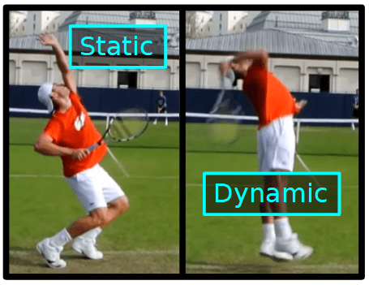
Tennis isn’t a game of precision, contrary to what mainstream analysis would have you believe. Tennis is a game of probabilities and outcome distributions. In tennis, the best players aim to targets that are big enough that their shots still succeed even when they miss by a small amount. It is not the precision of your aim that matters, but rather the precision of your contact. At Fault Tolerant Tennis, we teach you to create strokes which are fault tolerant.
Fault tolerant strokes will work if you’re a little early, or a little late. They’ll work if you’re a little too close to the ball, or a little too far from it. But no stroke in tennis will work if you hit the frame instead of the strings (not 100% true actually, fault tolerant strokes often go in when you hit the bottom of the frame). Therefore, it is not left-right aiming or back-front aiming that demands your attention during matches, but rather clean contact.
That’s why visual tracking is so important – clean eyes create clean contact. Catching the Ball On-Time Vision allows you to time the ball properly. As explained in The Fault Tolerant Forehand, the final phase of preparation for any stroke is a waiting period before swing initiation. This period may be long on a slow ball, or zero on a fast ball, but there is a waiting period. It is a visual cue that triggers your initiation of the forward swing.
Vision determines when this waiting period is over. You track the ball over the net, and as it flies towards you, you watch it all the way into swing initiation, and then from there all the way into contact. It is a visual cue that triggers your initiation of the forward swing. You’ll have to get used to your own swing speed and contact point, until you know exactly what it looks like when the ball has reached the point where you have to swing.
Improvisation The Fundamental Theorem of Tennis is the key that unlocks effective improvisation. With vision, it’s almost impossible to violate this theorem, and therefore it’s almost impossible to miss. If you’re tracking the ball over it’s entire flight path, by the time it gets to you, your brain has ample information about it’s trajectory to construct an effective swing. This visual information is especially necessary to improvise shots out of novel situations.
Recall the two rules of the fundamental theorem of tennis: The racket and the forearm make a 90-135o angle The racket contacts the ball in front of the body Mastering early contact is almost identical to mastering visual focus. Mastering #1 requires becoming familiar with how to manipulate your racket in space without straightening out your forearm-racket angle.
Once you’ve developed a solid intuition for how to do that, all that’s left is to master #2, and you’ll be able to improvise with the best of them. Mastering early contact is almost identical to mastering visual focus. In order to always catch the ball on time, you have to see the ball into your contact point, and initiate the swing once the ball gets to a certain location.
No matter where you are on court, no matter whether your feet are set or not, no matter where the ball is in relation to your body, once you see that the ball has arrived at a contact point in front of you, and if you swing any later than now, you’ll be late, just swing. You might have to lean your torso. You might have to push your arm weirdly.
You might have to do a whole host of strange things to make the shot work, but it’s infinitely better to allow your brain to improvise those motions, and strike the ball in front of you, than it is to catch the ball late. What Should You Watch, Specifically? Let’s break it into a sequence: 1. Your Opponent’s Body Before your opponent has struck the ball, you’ll usually be able to glean more information from your opponent’s body than from the ball itself. 2.
Your Opponent’s Racket-Face As your opponent hits the ball, the angle of their racket-face tells you where it’s going. It’s not possible to see the exact moment of impact, but generally tracking their swing pattern will give you a good guess as to the ball’s upcoming trajectory. 3. The Ball (for a long time) From your opponent’s racket, over the net, as it bounces, and then up to your racket, you should be tracking the ball.
If you’re feeling very comfortable with your game, you can try to peek at how your opponent is defending, but this is risky, and, again, should only be done if you’re feeling really “on” that day. Depending on how fast the ball is moving, you might not be able to track the ball smoothly. On a serve return, for example, a good strategy is to use a two jump saccade method: Track the ball off your opponent’s racket until you know where it’s going to bounce.
Jump your gaze to the predicted bounce, and hold it there until you know your contact point. Jump your gaze to your contact point and hold it there until your stroke is complete. This will take some getting used to, but holding your eyes still while a fast moving object crosses your field of vision helps your brain out a lot. When your brain is trying to calculate an object’s velocity, it must factor out any eye movement in order to get an accurate result.
If your eyes are still, this extra complexity is removed. 4. Your Contact Point, Until Your Stroke is Complete Why watch the contact point as the ball comes off your strings, too? Simple: if you watch the contact as the ball leaves your strings, it guarantees that you won’t accidentally look away too early.
By keeping your eyes in place longer than necessary on every shot, it ensures that even if you get a little antsy and look up earlier than usual, that early look won’t cause you to mishit the ball. Routinely keeping your eyes in place longer than necessary makes your vision fault tolerant.
Roger Federer tracking the ball, before the ball contacts his strings (left), and then maintaining his head position well after contact has been made (right), while executing a low backhand volley winner, during his loss to Felix Auger-Aliassime in the Halle Open, 2021. Vision = Being in the Zone Roger Federer is famous for keeping his eyes on his contact point well after the ball is gone.
He’s also famous for being the player with the most fluid strokes, the most aesthetically pleasing game, and the best improvisation in tennis history. Is this a coincidence? I don’t think so. Being in the zone is equivalent to being hyper-focused on your vision. The two are one and the same. If you have a stroke that’s not working, or an injury weighing you down, or some other thing of the sort, that ailment will break you out of the zone by distracting you from your visual tracking.
If you’re craving the famous “flow” feeling when you play matches, and just can’t seem to find it, there’s a good chance vision is your answer. If you’ve found the feeling in practice, it’s probably because, in practice, you were naturally focusing on your visual tracking without too much effort. In matches, that focus was squeezed out by other things. Restore your visual focus, and you’ll restore your flow. The Serving Throw Vector The serve is a throw.
The serving motion in tennis utilizes the exact same throw chain as all the throwing motions across sports. The baseball pitch, the volleyball spike, the NFL touchdown pass – all are accomplished by coordinating certain muscles in the exact same way. But how exactly do we adapt this throw chain for tennis? That’s what we’ll answer today. Up and Away Step up to the serving line, but instead of bringing your racket, just bring a tennis ball. Hold it in your serving hand.
Now, throw it up and away from you. If you’re right handed, launch the ball such that it travels about 25 ft over the right net post. Why? Because the throwing motion you just used to throw the ball 25ft over the net post – that’s the exact throwing motion that you’ll use when serving. You might be thinking: wait, why don’t I throw the ball at the service box? Good question. You don’t “throw” your racket level, like you would a baseball, but rather diagonally up.
When you have a racket in your hand, the angles work differently than when you’re launching a ball off of your fingers. If you want serve by harnessing the same biomechanical process that throws a ball, then you have to “throw” your racket to the right of your target (for lefties, to the left of it), such that when your forearm naturally rotates over at the top of your throw, the strings will hit the ball towards the box.
Further, you don’t “throw” your racket level, like you would a baseball, but rather diagonally up. This causes the racket to flick over the top at the end of the throw. Depending on how you time it, this will either create topspin on your serve, helping you keep it in, or it will slap the ball flat, down into the court, also a good thing. If there were a baseball, instead of a racket, in Roger Federer’s hand here, this throwing motion wouldn’t throw the baseball anywhere near the service box.
Instead, Roger would be throwing the ball over the green awning off to the right of the court. The Continental Grip The continental grip is necessary in order to harness your throw chain when serving. It’s the grip that orients your strings towards the service box as the racket turns over at the apex of the up and away throwing motion. During the throw, the edge of your racket will race towards the ball.
Once your hand gets far enough away from you, it’ll hit the end of its range of motion, and your forearm will naturally rotate forward. When this happens, if you’re holding the racket in the continental grip, your strings will slap the ball directly into the service box. If you’re holding the racket in a different grip, say, the Eastern grip, the ball will spin off to the side. Common Issues The most counter-intuitive part of a proper serve is that the hand doesn’t travel towards the target.
It makes sense that this is tricky. Here’s a non-exhaustive list of shots on which your hand basically travels towards your target: Forehand Backhand Forehand Volley Backhand Volley Slice And here’s the list of shots where your hand doesn’t travel towards your target: Serve Overhead It’s a niche thing, tough to get the knack for.
Most players serve with the Eastern grip because their brain really wants to throw their hand at the service box, instead of up and away, and if you’re going to throw at the service box, you have to use Eastern for the shot to work.
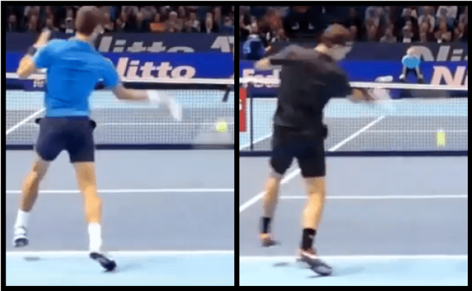
The tough part about switching to a real, throw-chain-engaging serve is that you need to make two changes simultaneously: Throw up and away, instead of straight at the box Use the continental grip If you only throw up and away, but you continue using the Eastern grip, you’ll spin the ball off to your right (for righties). If you use the continental grip, but continue throwing your hand straight at the box, you’ll have to awkwardly contort your wrist and body in order to make it work.
If you do both together, it’ll work, but it takes some time to get used to. Starting Recommendations Each player’s optimal serving throw vector is a little different depending on their particular body. Here’s what I recommend as a starting point: Always pretend you’re throwing your racket 15-20 feet over the net. The shorter you are, the higher over the net you should “aim” your throw chain.
And with respect to the left-right direction (for righties): On the deuce side: Throw your racket towards the ad side service box On the ad side: Throw your racket towards the ad side net post This will give you a good starting point. It’ll help you feel, roughly, what the serve feels like when the throw chain is incorporated properly.
Stop Losing Winnable Matches One of the beautiful things about learning a fundamentally sound, fault tolerant forehand, is that the speed of said forehand can be easily dialed up or down, without fundamentally changing the swing. The grip should be loose, and the shoulder allowed to freely rotate at all speeds, and then, in order to swing harder, the player simply drives forward with their legs harder, and twists with their hips and abs harder. That’s all there is to it.
I like to put my students through a drill I call 20/40/60/80/100. It’s a drop feed forehand drill where we start at 20% of their maximum speed, and once they make 5 in a row, we move onto the next speed. The goal is to explore their percentages at each speed, in order to figure out their proper match speed. The slower you hit, the more fault tolerant your stroke. Slowing down your swing allows you to be less precise and still get the ball in.
The slower you hit, the more fault tolerant the stroke. At 100% speed, unless your string angle is perfect, you’ll probably hit the net, or hit it long, whereas at 20% speed, even if your string angle is off by 20-30o, you might still hit the ball in. It’s the same thing with being early/late. At 100% speed, if you’re late, you’re always sailing the ball wide, whereas at 40%, you can be pretty late and still have it sneak inside the court.
For most players, their match speed is somewhere between 50-80% of their maximum speed. It can also be different from shot to shot; some students, especially kids, might be able to play their forehand at 60%, but really need to play their backhand at closer to 40%. Cautions Do NOT slow down your swing by tightening up. That’s the opposite of what we’re trying to achieve – you’ll go backwards in your development as a player.
While you will still get the same fault tolerance benefit from a tight slow swing that you get from a loose slow swing, you’ll be practicing the wrong mechanics as you play matches, so your long term stroke development will suffer. Instead, simply dial down the explosiveness of your hip and trunk rotation.
Height Over the Net I teach my students to aim 3-4.5 feet (1-1.5m) over the net on forehands struck from behind the baseline, and allow them to go a little lower over the net on the two-handed backhand (it’s a flatter shot in general). This allows them to miss low and still get the ball over, a necessity for succeeding in matches. Your desired string angle does change depending on how high over the net you’re aiming, and how hard you’re hitting.
This is something most players do subconsciously – it just feels like “aiming” high or low over the net. Aim high enough over the net that 80-90% of the shots you attempt with that target fly over the net. If too much of the outcome distribution of your attempt is into the net, you’ll miss too much to win singles matches attempting that shot.
It can be a little difficult to change your speed in real time, without warming up again, because you might need a different string angle, and it could take a few strokes for your brain to adjust. The harder you’re hitting, and the more topspin you’re using, the more closed your strings should be, and vice versa. So What’s My Match Speed? In singles tennis, offensive and neutral shots that you make less than 80% of the time are basically useless.
Your match speed is the speed at which you can execute your shots at a rate of 4/5 or higher. (Defensive shots with a <80% success rate can be attempted, because you have so much less equity in the point when you’re attempting them.) For most players, their appropriate match speed is around 60%. When I teach this, I actually verbalize it as 9/10, because people tend to believe that their percentages are higher than actually are. For most players, their appropriate match speed is around 60%.
For a very technically sound stroke, it might be closer to 80%. Your attempted height over the net and your target on the other side of the court also need to be adjusted to meet this 80% threshold: aim high enough over the net and far enough inside the line that you don’t miss more than 1/5 shots. The player on the left is aiming too close to the line: too much of the shot’s outcome distribution is out, and therefore this player won’t be competitive with this target.
The player on the right is aiming to a far better target, where more than 80% of the probability mass is in, making this shot a competitive singles shot. What if That’s Not Aggressive Enough to Win? Then you’re probably going to lose, plain and simple. You have two options: 1. Play More Aggressively Let’s say your 80% shots are getting you blasted off the court. You can dial it up past your usual match speed, accepting more misses, in order to keep the points neutral. Here’s the problem, though.
If you dial it up to a speed where you’re only making ¾, or worse, 2/3 forehands in the court, then neutral really isn’t good enough. If the player who was blasting you off the court just makes 5 balls in a row, they’re practically guaranteed to win the point. This hyper-aggressive style is often referred to as “red-lining” by tennis commentators.
Many have attempted this against players like Djokovic and Nadal, whose defense is so good that it feels like the only way to win is to go for shots you really shouldn’t. Occasionally, it works. If you’re feeling really, really on that day, you just might be able to execute at 5-10% higher level than you typically can. Usually, though, you just miss your way into a quick blowout loss. 2. Hope Their Level Drops This strategy is under-rated.
Every tennis player is human, and every tennis player goes through ebbs and flows over the course of a match. Even if you go out there, play at your usual match speed, and simply never give up until the end, you might find yourself in a tight match at some point. But there’s more to your opponent’s level than just their own game. Have you exhausted all of your strategic options? Do you have drop shots in your arsenal? Slices? Moon balls? Serve and volley? Moonball and volley?
Before you start red-lining and praying your hyper-aggressive shots catch the line, make sure to attempt a few different strategies that you can actually execute at a reasonable percentage. At the recreational level especially, many players who can blast you off the court if you’re using one strategy have significant weaknesses against others. Experiment, and you might not have to red-line at all.
Match Speed Accuracy Wins and Loses Matches If I took two players whose match speeds should be 60%, and forced one player to play at 80% instead, the match wouldn’t be close. The player at 80% would miss so many shots that the small advantage they gained from hitting harder would be completely overpowered by the increased miss rate. Here’s the dangerous thing though. Let’s say the 80% player didn’t know his match speed was supposed to be 60%.
He might say things like: “I just had an off day.” “I should have won.” “I just made so many errors.” And, in a way, these are true. Except that the fix is most certainly not just to hope things go better next time. The fix is to find the appropriate speed at which to play. The speed at which you can slightly mistime the ball, or miss your string angle by a few degrees, and have the ball still go in. No one’s perfect. If you only win when you play perfectly, guess what: You lose.
The Mystery of the Continental Grip Look at the two grips above. By some definitions, both can be considered the “continental” grip, and yet the two grips are very different. One example of this is that the grip on the left is a great choice for a one-handed backhand, whereas the grip on the right will hardly work for that stroke at all. On the one-handed backhand, the racket needs to rotate about the forearm through the hitting zone without the string angle changing while that happens.
The grip on the left allows this easily, while the grip on the right does not. Pitfalls of Imprecisely Teaching Grips Two players who are merely taught to “use the continental grip” for their one-handed backhands might end up with starkly different results. If the player adopts the grip on the left, the stroke will work as intended, and they’ll believe that the continental grip “works” for the one-handed backhand. Only teach a grip in the context of why that grip is useful.
If, on the other hand, the player adopts the grip on the right, they will likely find that their contact is extremely inconsistent, and they’ll have no idea as to why. The fundamental level fix for this issue is not to simply be more specific when teaching the grip. Rather, it’s to only teach a grip in the context of why that grip is useful.
For example, show the student that, if they hold the racket in the grip on the left, it’s very easy for that racket to rotate through contact and strike the ball.
When grips are taught this way, as functional, mechanical tools in service of correct contact, rather than as “the way you should hold the racket,” much of the confusion disappears. “Continental” Means Many Things On this common forehand volley grip, the index knuckle is on bevel 2, and the knuckles are aligned 45o off parallel from the handle.
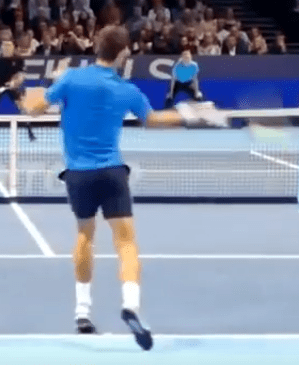
In contrast to the one-handed backhand, the forehand volley vastly prefers the grip on the right, as it allows easier fine grained adjustment with the hand when aiming the volley, as well as more surface area contact between the fingers and handle that can be used to support the racket and prevent the racket head from moving during the strike. In both of these grips, the index knuckle is resting on bevel 2. What’s different is the orientation of the handle in the hand.
The knuckles on the left grip run parallel to the handle, while on the right grip they run about 45o off from the direction of the handle. Therefore, the index knuckle’s resting spot is not the only reference defining your grip. Even when fixing index knuckle position, it’s possible to rotate the handle in your hand, leading to a starkly different alignment, and significantly different racket movement through contact.
Grip Improvisation The solution to grip confusion is not to master the exact hand orientation of every grip, and ensure that you get your student to mimic the exact hand orientation of some particular grip as you coach them. Far from it. The solution is to accept a different paradigm for the role of the grip altogether. I almost wish that grips didn’t have names, as I think that would solve a lot of the unnecessary confusion surrounding them.
It is my opinion that grip in tennis should be primarily discovered by the student, rather than taught as a first principle by the coach. Fundamentally, grip is not a first principle. The first principles are contact and racket acceleration. On the forehand, for example: The racket must strike up and through the ball. The racket should be accelerated using the strong muscles of the legs, hips, and abs.
Grip is merely a means to an end; a degree of freedom the player should tweak until they find a way to hold the racket that allows them to achieve those fundamental goals best. Some students don’t realize that the way they orient the racket in their hand is a usable degree of freedom. They’ll readily change their feet, they’ll change their legs, their chest, their arm, and yet, for whatever reason, it never occurs to them that they’re allowed to change how they’re holding the racket.
Directly Coaching a Grip A common version of the semi-western forehand grip, a grip for which it’s very easy to maintain a correct string angle through contact, and also a grip many players find naturally. I only correct grip to fix downstream problems, and when I correct a grip, it’s always with an explanation. I’ll have a student who always hits the forehand long swing to their contact point, and then freeze.
I’ll rotate the racket in their hand to fix their string angle, and explain that if they hold the racket in this new way, they’ll be able to use the natural swing they just used, but the ball will go in.
In other contexts, like the volley, I’ll also explain grip choice in the context of function: we don’t have time for large grip switches at net, and so we hold the racket in a way that allows us to quickly get the strings oriented towards the other side, no matter on which side of our body we’re forced to hit. The underlying theme here is that each grip is meant to accomplish something, some goal external and independent from the grip itself.
It’s not a critical technical component of a swing like, say, engaging the core is. Every player, at every level should internalize that grip is a usable degree of freedom, and should feel free to alter it in the process of exploring any of their strokes. Heal Your Body In Motion You’re out on the court and something hurts. Maybe it’s your elbow, maybe your knee, maybe your heel. Don’t panic. Pain is a part of life, especially when it comes to athletics.
It is a signal, your body’s way of communicating with you about what it can and can’t handle. Pain is how your body protects itself. This guide will transform your understanding of pain and injury, and it will dispel the common disposition towards pain of anxiety and brokenness, replacing it with one of confidence and control. We’ll be specifically addressing the most common kind of pain felt by athletes – pain from minor soft tissue injury.
Nearly all common tennis injuries are soft tissue injuries – knee pain, wrist pain, forearm pain, low back pain, tennis elbow, plantar fasciitis – all of these ailments are, at their core, a soft tissue system that has been over-stressed. From a 5000 foot view, rehabbing a soft tissue injury is very simple. You must do two things: Figure out what’s causing the injury, and stop doing that.
Take the injured body part through it’s natural range of motion under a light load The rest of this guide will explain this seemingly simple process in greater detail. Prevent Further Injury The first step of rehabbing an injury isn’t trying to get the injured body part to repair itself, but rather to prevent further injury to that same body part. You must discover the root cause of a chronic injury, and then fix it.
This is mostly trivial for acute injuries: injuries where the body part went from totally uninjured to injured all at once. You can occasionally take steps to avoid these – wear lower heeled shoes if you’re an ankle roller, for example – but for the most part, acute injuries are simply random. For chronic injuries, on the other hand, prevention is squarely within your control. Many, many, many people forget that prevention is the first step towards rehab.
You must discover the root cause of the chronic injury, and then fix it, so that you are not constantly re-injuring that same body part while you’re trying to rehab it. Many players, instead of investigating the cause of their chronic injury, immediately start medicating with things like non-steroidal anti inflammatory drugs ice rest various braces and taping schemes If you do this, your injury is not going to heal.
Until you implement some sort of technical or conditioning fix, you are re-injuring whatever body part is hurting every time you step out on the court. The reason your particular soft-tissue system got over stressed in the first place is that there is some part of your tennis game that is too stressful for that system to recover from. Until that changes, the injury won’t heal.
The Nature of Injury During everyday existence, and especially during sports, all tendons, muscles, and ligaments are constantly undergoing a stress-recovery-adaptation cycle. During a tennis session, more stress is put on these systems than during everyday life, but not so much so that the body can’t recover it. When played with proper technique, tennis constitutes a very healthy level of stress.
The body will recover from that stress before your next session, and that recovery will drive further adaptation of the stressed systems, making you into a fitter tennis player the next time you step out on the court. Insofar as the body can fully recover from your daily activities, the body is considered uninjured. Injuries occur when too much stress is placed on the body, and the body can no longer recover from that stress.
Therefore, the first step in diagnosing and treating any injury is to make sure you know why too much stress was placed on your body, so that you can prevent that excess stress in the future. The manner by which you were injured greatly influences the manner by which you will heal. Acute Injuries Let’s imagine you’ve accidentally banged your elbow on the door. The day after the accident, you step out on the tennis court, and as you hit your first few balls, you notice your elbow hurts.
The injury you’re feeling here is an acute injury, caused by the acute stress of banging your elbow on the door. In this situation, your tennis game itself is not responsible for creating the excess stress that led to injury. Tennis is certainly more stressful than everyday life, which is why you’re feeling pain during tennis that you didn’t feel walking around, but tennis is likely unstressful enough that your elbow can recover from its injury even while continuing to play.
When uninjured, your elbow can easily recover from the stress of your tennis game, which is why your elbow never hurt before you banged it. Due to that, it’s likely that, even when slightly injured, your elbow can both handle the light stress of the game and still have enough recovery resources left over to slowly heal the elbow’s injury. Occasionally, though, that won’t be the case, and you’ll have to rest your acute injury.
Sometimes, even though your elbow was able to recover from the stress of tennis completely in its uninjured state, in its injured state, that stress is too much – your body doesn’t have enough resources to both recover from the stress of tennis and make progress towards healing the injury. In this case, intensity has to be dialed down (even to the point of complete rest).
The proper level of activity is the level at which the injured body part is capable of fully recovering from the stress you put it under, and then further capable of healing itself a little bit each day. Chronic Injuries Let’s now imagine that you’ve been playing tennis consistently for the past few weeks, and every session your elbow has hurt more and more, and now it’s finally to the point where it hurts every time you hit the ball.
There is something about your tennis game itself which is too stressful for your elbow to recover from. This is a chronic injury. There is something about your tennis game itself which is too stressful for your elbow to recover from. Medicating with rest, ice, and NSAIDs alone will not work, because they do not fix the underlying issue: your tennis is too stressful for your elbow.
In this situation, you are injuring your elbow while playing tennis, and therefore you’re never going to be able to rehab that elbow while playing tennis the same way you have been, because you are re-injuring it constantly as you play. Technique Fixes The hardest part of injury management is discovering, and subsequently fixing, whatever technical flaw is causing the excess stress on your injured body part.
Don’t be discouraged by this process, which can be quite frustrating – it is possible to play tennis pain free. The human body can move around the court and produce all the shots necessary for the game without putting so much stress on itself that it breaks down. You want your arm to hurt when you hit the ball wrong. In tennis especially, pain is a very good technique coach.
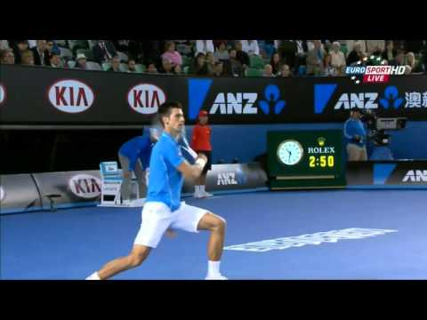
For almost all hand, wrist, forearm, and elbow injuries, your body will give you real time feedback as to whether or not you’ve struck the ball properly. Do not play tennis on pain killers. Pain is a signal that you desperately need in order to stay healthy as a tennis player. You want your arm to hurt when you hit the ball wrong. That’s what allows your brain to self correct.
If you play on pain killers, understand that you’re putting a lot more stress on your body than you otherwise would, because you’re allowing yourself to ignore your body’s pain signals. Compete in that state very infrequently, and only when you’ve made a conscious decision that it’s worth it. Pain as Your Guide During Healing Pain will tell you whether or not any particular activity is too stressful, and is therefore detrimental to the healing process.
After any activity session with an injured body part, answer these questions: Did it hurt more and more as I used it? Did it hurt more the day after use than it did the day before? If the answer to either question, specifically the second question, is “yes,” then said activity session constituted too much stress for your injured body part. You need to reduce the load on that body part until it’s further healed. Notice that does it hurt while I’m playing? is not one of the questions.
That’s because it isn’t super relevant. If you have, say, tennis elbow, then it’s probably going to hurt on most shots, even when they’re struck correctly. Your body is communicating to you that it’s injured, and you’ve gotten the message. After that point, it is not the pain itself that matters, but the derivative of the pain.
Pain that is getting better is just another way of saying “an injury that’s healing,” whereas pain that is getting worse is another way of saying “injury in progress.” Activities that make your pain worse and worse should be halted immediately. Play Through Your Injuries Rest is rarely a good option for injury rehab. Unless your pain is getting worse as you play, or has been static for at least a week, you should play through your injuries.
The body is self healing, and it heals far better when in motion than when at rest. Your body uses the electrical signals from the muscle contractions themselves in order to orient itself as it rebuilds your soft tissue. In general, injured body parts taken through their range of motion under a light load heal better, faster, and more functionally.
In general, injured body parts taken through their range of motion under a light load heal better, faster, and are more functional after they heal, than injured body parts that are immobilized. This fact is well known among coaches and the better physical therapists out there, but I’ll still start you down the research rabbit hole here, in case you’d like to explore the science for yourself.
Many studies have been performed on rats looking at the beneficial effects of loading and motion on soft tissue recovery, typically utilizing the Achilles tendon. Immobilized and deloaded tendons healed worse, and scarred more, while mobile and loaded tendons routinely showed better outcomes.
In one study, for example, researchers found that loading is beneficial no matter when in the healing process it happens, debunking the common belief that injuries should be rested and immobilized initially, and only loaded after inflammation dies down. The results showed that just four loading episodes increased the strength of the healing tendon. This was evident irrespective of the time point when loading was applied (early or late).
In another, functional tendon gene expression was higher in rats who had their torn tendons loaded, than in ones who had them immobilized: In the late phase of healing, tendon-specific genes (scleraxis and tenomodulin) were upregulated with loading, and the healing tissue might to some extent represent a regenerate rather than a scar.
This is why it’s so common for tennis players to develop a chronic injury, take two weeks off, have the pain go away, and then resume playing only to find the pain immediately resumes. The tissue was never restored to its previous functional state, it merely scarred, and therefore still can’t handle the stress of the sport. Other Forms of Rehab Most injuries will resolve themselves if you fix your technique and then continue to play.
For the ones that don’t, things like light exercises with resistance bands and massages have their place as well. These techniques apply a very light stress to the area, in an attempt to stimulate recovery. For example, massage is a very good therapy for plantar fasciitis – injury of the plantar fascia, the fascia running along the heel and arch of the foot.
The massage creates a light stress on the soft tissue, and the resulting recovery and adaptation response from the body to address that stress results in a net healing and strengthening effect on the entire area. Band work for an elbow or wrist issue follows a similar pattern.
You apply a light stress on the injured body part by taking it through its natural range of motion under a light resistance, and that light stress prompts a healing response which creates a net beneficial effect for the injury. As I said before, pain is your guide. This kind of rehab work is subordinate to the same two pain questions listed above. The day after your rehab work, your injury should feel better, not worse. Chill Out Your body probably isn’t broken.
Injuries are fixable, and you can fix them without putting your entire life on hold. Everything in your body is designed to heal while in motion. Prehistoric man couldn’t rest his sprained ankle for two weeks – he’d starve. Prehistoric man couldn’t rest his sprained ankle for two weeks – he’d starve. So don’t worry about a little pain, just make sure your injuries aren’t getting worse. If they are, you have to be an engineer.
It’s up to you to diagnose the root cause and fix it, and after you do, the injury will start healing. In the words of Lupe Fiasco in Battle Scars: “Never let a wound ruin me.” The only truly difficult thing stopping you from rehabbing your injury is a lack biomechanical knowledge (and maybe eventually age). If you’ve got a remarkably sticky problem, research, research research.
Even if it takes 3 months, and you end up with an entirely new understanding of the human foot and modern footwear, eventually you’ll figure it out. Take control over your own body, and use it while it’s injured. If you do, you’ll discover the remarkably phenomenal powers of regeneration the human body naturally possesses, and if you’ve been listening to mainstream doctors your entire life, maybe for the first time.
Leylah Fernandez – The Roger Federer of the WTA Sensational 18-year-old Leylah Fernandez stands at 5’ 6’’ 104 lbs (168 cm 47 kg). Her opponent in the 4th round of the 2021 US Open was former grand slam champion Angelique Kerber, standing at 5’ 8’’ 150 lbs (173 cm 68 kg).
If I told you that the svelte 18-year-old had gotten the better of her bigger, stronger, more experienced counterpart, you’d probably imagine a match where Leylah moved quickly, played solid defense, put balls back in play, and outlasted her veteran opponent. But that isn’t what happened at all. The teenager hit Angelique Kerber off the court on Sunday. How is that possible, given that Angelique Kerber was the bigger, taller, stronger, and more experienced player?
What makes Leylah Fernandez so good? We’ll start with the skill that underpins the rest of Leylah’s game: her extremely fault tolerant forehand (though her movement and anticipation are also world class). After that, we’ll discuss the tactics she uses to routinely hit bigger, taller, stronger women off the court, which are only possible because her forehand is so fault tolerant: Leylah takes the ball extremely early. Leylah changes direction and aims to big targets.
Leylah finishes her points with swinging volleys. Leylah’s Fault Tolerant Forehand As Leylah completes her preparation, her entire hitting-arm apparatus is still well on the hitting side of her chest. Since she uses primarily core rotation to accelerate the racket, her stroke doesn’t require much backswing at all. In order to win in pro tennis, you need at least one weapon. Leylah’s is her forehand.
She has flawlessly implemented all of the core principles we espouse here so frequently at Fault Tolerant Tennis. First, Leylah uses a very abbreviated “backswing.” Her arm preparation constitutes nothing more than the necessary motion in order to prepare her hand for the forward explosion. She turns her hips and chest away from her target She extends her elbow and she lowers her hand. That’s it. No extra looping, no extra motion. Next, Leylah drives with her hips, followed by her abs.
She doesn’t attempt to accelerate the racket with the weak muscles of her arm, forearm, or wrist, and instead drives forward with the strongest muscles in her (tiny) body. This is how she hits so hard, despite only weighting 104 lbs (47 kg). Leylah and Roger’s Unit Swing Despite being a talented lefty capable of utilizing heavy topspin, Leylah Fernandez employs a forehand technique that is actually far more similar to Roger Federer’s than it is to Rafael Nadal’s.
Leylah uses a very compact swing, with less arm movement during the backswing, and therefore less arm whip during the forward swing, than Rafa does. Both her and Roger’s compact forehands exemplify the “Unit Turn, Unit Swing” idea that’s so critical to an effective, fault tolerant stroke.
From The Fault Tolerant Forehand: Ultimately, your goal during abdominal rotation on the forward swing is to learn what it feels like to rotate your entire upper body – your chest and both arms – forward together as a single unit, just like you rotated them backward as a single unit during the unit turn. This rotation will be explosive, stable, and effective. You won’t have arms flailing this way and that, and the rotation will be driven by the strong, stable abdominal muscles in your core.
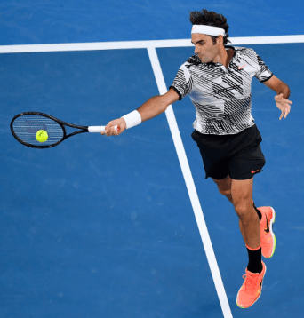
It’s a rotation that can be performed extremely explosively and extremely quickly without injury, unlike, say, pulling the racket forward using the hand and arm. The Fault Tolerant Forehand. “Unit Turn, Unit Swing.” Page 91. In general, the more stable and compact a player’s execution of the unit swing, the earlier they’re able to take the ball without missing.
Roger and Leylah are able to play the hyper-aggressive style they play only because their technique is such that they can create consistent, correct contact out of very novel positions. Since all they require to produce their stroke is a quick, compact, stable core rotation, Roger and Leylah can improvise out of positions out of which other players simply can’t.
Leylah’s Fault Tolerant Contact By contact, Leylah’s hips and torso have both fully unwound towards the target, and the racket has naturally flicked out in front of her, through the ball, as a result. This alignment provides her maximum freedom of adjustment through the hitting zone. Leylah is essentially square to her target by contact. At this point, she’s fully unwound both her hips and her abs, and all of that energy has been transferred into the racket.
She’s achieved the perfect fault tolerant contact position: the position depicted on the left, in which she has ample freedom for adjustment. If she were to accidentally set up too close to this ball, she could adjust by pulling her arm in toward her chest, and she’d hit roughly the same shot. If she’d swung too early, she could lean her torso forward, and maintain roughly the same arm-racket-string orientation. Probably most importantly, this stroke works even when she’s a little late.
She still accelerates the racket with her core, and she still relaxes her hand, but if this ball were a few inches farther back as she’s hitting it, she’d simply follow-through over her head instead of in front of her, and in doing so create roughly the same racket path through contact as on a perfectly timed shot. Leylah’s Deadly Tactics The fault tolerance of Leylah’s forehand allows her to play the game in a fundamentally more aggressive way than players with lesser strokes are able to.
Because she’s able to strike the ball properly even when things don’t go perfectly, she can attempt shots that, for most players, are too difficult. Specifically, she can take the ball far earlier than other players, she can change the ball’s direction consistently, and she can sprint to net and hit swinging volleys to finish her points. When a typical player tries to play like Leylah plays, they miss too much, because the shots that Leylah attempts are almost impossible to execute perfectly.
Leylah, on the other hand, can use those shots in matches, because her stroke is designed in such a way as to succeed even when executed imperfectly. We’ve explained the mechanics that create this fault tolerance above. Now we’re going to explain the tactical ways by which Leylah exploits it. 1. Leylah takes the ball extremely early. How can a 105 lb girl hit winners against some of the fastest, most athletic women in the world?
Answer: she takes the ball so early that they don’t have time to react. What matters on a tennis court is the time between the moment your shot leaves your racket, and the moment your opponent must hit it back. You can decrease this time by either hitting harder, or by reducing the distance between you and your opponent when you strike the ball. You’ll rarely contact a ball you take early exactly how you expected to. Hitting early is extremely difficult.
The ball is moving faster as you strike it, decreasing the size of your timing window. You’re hitting the ball soon after it bounces, giving you far less time to react to that bounce. Often, the ball is rising, meaning you need a different string angle to make the shot work. You have less time to track the ball, less time to move, less time to prepare, etc. The result is that you’ll rarely contact a ball you take early exactly how you expected to.
In order to succeed when taking the ball early, your stroke must be fault tolerant. Leylah’s is, and due to that she can take the ball early five times in a row without missing, despite the fact that each of those attempts probably included some small mistake in timing or preparation. 2. Leylah changes direction and hits to big targets. Another very difficult task is to change the direction of the ball. Leylah does this constantly.
Again, it’s very difficult to space this shot properly, and it’s very difficult to time this shot properly. Because Leylah’s forehand is fault tolerant, she can attempt these shots without missing. Very importantly, she doesn’t try to hit winners right away when she changes direction. Instead, she aims to big targets, high over the net.
Actually, during the first set against Angelique Kerber (which she lost), and parts of the second set where she lost serve, Leylah was not aiming to good targets, and the result was an unsustainable miss rate. Once she started aiming farther from the lines and higher over the net, she stopped randomly missing out of neutral and actually ended up hitting more winners, because she wasn’t unnecessarily knocking herself out of so many points right at the start.
Leylah takes the ball so early and disguises the direction of her shots so well that there’s no need for her to force the issue out of neutral. Eventually, she’ll catch her opponent leaning the wrong way on one of her neutral balls, and she’ll get a super weak reply. Which brings us to her final primary tactic… 3. Leylah finishes her points with swinging volleys. If you can’t hit a swinging volley, there are points that you simply cannot win.
Your opponent can throw up deep lobs over the middle as defensive shots, and your only option is to take the point back to neutral. On the other hand, if you can hit a swinging volley, these points are all but over – if you execute your shot, you’re going to win the point. Without a fundamentally sound, fault tolerant forehand, swinging volleys are all but impossible. Just like the early forehand or the change-of-direction forehand, the swinging volley forehand is extremely difficult.
You yourself are moving, likely sprinting forward, and the ball is moving extremely quickly, since it hasn’t even bounced yet. Further, the ball likely has far more vertical velocity than it does on a typical baseline shot. Without a fundamentally sound, fault tolerant forehand, swinging volleys are all but impossible. Even at the tour level, only a few players (like Roger Federer and Leylah Fernandez, to name a few) have really integrated them as a core part of their game.
The instant Leylah realizes that one of her well disguised groundstrokes has gotten her opponent on the defensive, she’s looking to attack. Often, it’s clear that the opponent’s only option is a defensive, floaty shot. When this is the case, Leylah sprints to net. While that defensive shot is in the air, Leylah continues sprinting. She gets as far in as she can and then takes a very compact forehand swing at the ball while it’s still in mid-air.
The result is that her opponent is out of position, the court is open, and Leylah gets to hit the ball from so close to her opponent that they have barely any time to react. Leylah Fernandez and the Modern Game The younger generation of WTA players are bringing the hyper-modern forehand to the women’s game like never before.
Players like Layla Fernandez, Iga Swiatek, Jen Brady, and ultimate champion Emma Raducanu all utilize primarily explosive core rotation to accelerate their forehands, and as a result, these girls can do things consistently that their older, more traditional counterparts simply can’t do. It’s extremely fun to watch, and I’m excited to see these girls dominate for years to come.
Battle of the Girls who ATTACK We’ve talked before about how, in singles tennis, shots that you can execute at less than 80% are essentially useless – you’ll lose too many points from missing those shots for whatever small offensive advantage you’d gain to be worthwhile. In this vein, when you watch the 2021 US Open final between Leylah Fernandez and Emma Raducanu today, watch for this important question: Who can transition from neutral to offense using high percentage shots?
When Leylah Fernandez beat Aryna Sabalenka in the semi-finals, both players were extremely good at this, which is why the match was so close. Aryna, with her massive forehand, was able to routinely transition out of neutral and into offense without missing. If she’d executed better, who knows, she might have pulled it off. Here’s what’ll go into it today. Can Leylah Change Direction?
Leylah’s game relies on taking the ball early and frequently changing its direction, eventually wrong-footing her opponent without the need to attempt a low percentage shot. Against Angie Kerber and Elina Svitolina, this worked wonderfully. Against Aryna… not quite as much.
Leylah could rarely get to net because Aryna hit the ball so hard and so deep that changing the direction of the ball was really, really difficult, and the result was that Leylah had to aim to bigger targets in order to not miss, and only wrong footed Aryna a few times. Luckily for Leylah, her offense was just barely good enough that Aryna had to be slightly more aggressive than she was capable of.
When Aryna would take her foot off the gas even a little, in an effort to make slightly less errors, Leylah was there, taking the ball early and getting ahead in the points. Let’s see if Emma can do the same thing. Can she keep the ball deep enough, or far enough from Leylah, that Leylah can’t consistently change direction and get to offense (or even hit winners) without having to be super aggressive? How Many Swinging Volleys Does Leylah Hit?
If Leylah’s hitting swinging volleys, it means she’s getting Emma off balance and sprinting to net. Against Aryna, again, this rarely happened. Against Angie and Elina, it happened all the time. Emma can defend against the swinging volley in one of two ways. First, she can do what Aryna did – keep the ball deep enough and hit hard enough that Leylah can’t easily get her into a defensive position.
But there’s a second way I think Emma could beat this, and that’s by hitting better defensive shots than her previous counterparts were able to. Emma’s movement and forehand technique are top notch, specifically when she finishes over her head. She has a loose wrist and an extremely explosive core, which are both necessary for generating racket head speed out of compromised positions.
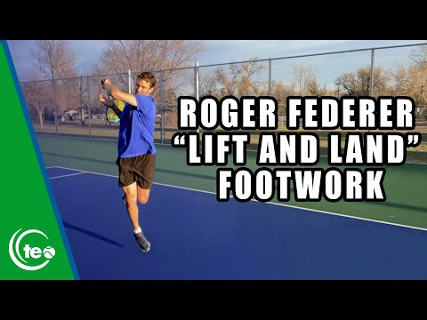
She might be able to hit higher quality defensive shots when on the run than her previous opponents, forcing Leylah to play the ball at net while stretched out wide, or at her shoelaces, or well over her head, instead of comfortably at her shoulders. Can Emma Force Leylah to Double Fault? Emma’s forehand return is awesome. One of the beautiful things about developing such a fault tolerant, fundamentally sound forehand like Emma has is that you can easily change the length of the swing.
When Emma returns aggressively, she doesn’t take a huge swing. Instead, she moves her body weight forward, and performs a quick, compact turn with her hips and abs, often following through by running to net. Against Aryna, Leylah went for some pretty big first and second serves at times, in order to get herself out of trouble. Will Emma be able to force her to do the same? Emma likes to run around slow second serves and crack them on the forehand.
It’s possible that Leylah won’t be able to consistently keep the point neutral with her second serve. Can Emma Get to Offense First? For all of Leylah’s previous opponents, if they wanted to get to offense first, they had to miss a lot to do it. With Emma, that might not be the case. Emma actually plays quite similarly to Leylah – she stands close to the baseline, takes the ball early, and comes to net to finish her points. This means that Emma plays high percentage offense.
Her willingness to finish at net means that she doesn’t need to go for as much on the first ball to grab the advantage. There’s often a dance in these kinds of matches – how good does my approach shot have to be? First you might start super high percentage, and then get passed a lot. Next you crank it up a bit, and now you’re not getting passed anymore, but you’re missing too many approach shots. Since both of these girls play great, fundamentally sound offense, both will be playing this game.
Since both have extremely fault tolerant groundstrokes, I expect both will pass well out of most situations, but only time will tell how the dance unfolds. The Future of the WTA This match, the 2021 US Open final between two exciting teenagers, represents the future of the WTA. Two girls with well developed, modern, fault tolerant strokes, who both stand in close, take the ball early, play high percentage offense, and finish their points at net.
As sad as it is, we all know the era of the big 3 in men’s tennis can’t last forever, but with electric players like Leylah Fernandez and Leylah Raducanu dominating the women’s tour, maybe the girls can step in and fill some of that eventual hole in our hearts. Emma Raducanu’s Elite, Explosive Forehand There are many ways to hit the wide forehand, but Emma Raducanu’s way is the best way.
At Fault Tolerant Tennis, we believe in finding the optimal biomechanics for a particular swing, and then adjusting our preparation so that we can utilize those same mechanics out of a variety of situations. The wide forehand is one of such situations. At contact, Emma Raducanu’s hips and chest have been fully unwound, and are now roughly facing her target.
This alignment indicates that shes’ successfully accelerated her racket using the strong muscles of her core, and it provides her with ample freedom of adjustment during the swing. The biomechanical alignment in question here, the alignment that Emma takes advantage of on her elite wide forehand, is having both the hips and the chest square to the target on contact.
The modern forehand is performed by turning the hips and the chest away from the ball during preparation, and then explosively unwinding that turn during the forward swing. Rotation of the hips and chest powers the racket. The arm simply acts as a lever, and the wrist acts as a hinge, the function of both being to transfer the force generated by the core into the racket. Further, the hips-and-chest-square body position is the most flexible position for last minute adjustment.
This is further explained in The Fault Tolerant Forehand: When the hips and chest are correctly square to the target at contact, the hand, and thereby the racket, is very free. It can move up and down easily, and it can move side to side easily. This allows for a wide range of contact points at which correct, fault tolerant contact can be made.
Further, because the racket is so free in this position, your brain can use the visual information it gets while tracking the ball to subconsciously adjust your swing in real time. As we discussed earlier, we often see players on the tour suddenly and successfully adjust to bad bounces – the reason they can do so is that they’re using a body orientation which provides enough freedom for said adjustment. The Fault Tolerant Forehand. “Square to The Target at Contact.” Page 29-30.
Emma’s Elite Wide Forehand On the wide forehand, Emma utilizes the exact same biomechanics that she does on a routine forehand. This allows her to get in and out of her forehand corner quickly, and while doing so produce a shot of almost identical quality to what she can on a trivial ball. Emma Raducanu flawlessly striking a cross-court forehand while moving to the forehand corner during her first round match against Stefanie Vogele at the 2021 US Open.
As Emma runs into the forehand corner, her goal isn’t merely to get to the ball, but to whip her body around as she gets there. As early as the second frame above, you can see Emma loading her front leg. Even while moving to her right, Emma drives off of this front leg, thereby rotating her body back to her left as she arrives at the ball. This results in the ideal contact position we seen in the last frame: Emma’s hips and chest are aligned directly at her cross-court target.
Emma’s explosive lower rotation allows her to recruit the legs and hips into her wide forehand swing. This is especially important in girls tennis – whereas the typical male athlete’s natural upper body strength might let them get away with using solely their abdominal, that’s much more difficult for a female player. By fully recruiting her leg musculature in addition to her abs, Emma generates the same heavy, fast, deep balls out of her forehand corner as she does from the middle of the court.
A Less Optimized Stroke Elina Svitolina doesn’t rotate as early, or as much as Emma Raducanu when playing a forehand from the forehand corner, and as such, she leaves both power and fault tolerance on the table. To further illustrate the point, we can contrast Emma’s technique to that of Elina Svitolina (Leylah Ferndandez’s quarter-final opponent).
Despite the screaming, Elina is actually leaving a lot of power on the table when she strikes a wide forehand, because she leaves both her hips and her chest under-rotated. Due to that, she gets far less contribution from both her legs and her abs than Emma does. It’ll also be more difficult for Elina to execute last minute improvisation from this contact position. Since her hips and chest aren’t square with where she’s aiming, she’s sacrificing some of her fault tolerance.
On this particular shot, Elina’s contact is earlier than her hips-chest would indicate, meaning that if she were to mistime this ball by striking it too early, she’d probably miss. Since Emma strikes the ball right as her hips and chest are square to her to her target, even if she strikes the ball too early, her strings will likely still be at the correct angle, and her shot will go in.
Wide Forehand vs Very Wide Forehand Many players don’t attempt Emma’s full body rotation on their wide forehand, and are instead content to leave their core under-rotated. This severely dampens both their stroke’s fault tolerance and its power. I suspect this is because they see great players, like Roger Federer, often leave their hips closed while striking wide forehands, not realizing that these players only leave their hips closed on very widest of those shots.
Leaving the hips closed is only necessary when you are still on the dead run while hitting the ball. Roger Federer leaves his hips closed by necessity (left), because he’s still on the dead run while striking the ball. The abs still unwind as normal. Typically, when pulled out wide (but not quite as wide), Roger Federer whips both his hips and chest around (right), just like he does on a typical forehand, creating a more biomechanically efficient swing.
Even in cases where the hips must remain closed, the chest should still unwind as it normally does. The forehand is a kinetic chain. If you’re forced to forgo the hips’ involvement in that chain, it doesn’t mean you have to forgo the rest. Just engage as much as you can, and you’ll probably produce a pretty decent shot. Emma’s Stroke Naturally Initiates Her Recovery After striking a wide forehand, Emma Raducanu’s body is perfectly aligned to sprint back to the center of the court.
Check out Emma Raducanu’s recovery position immediately after striking a wide forehand. Her hips are oriented towards the center of the court. This is precisely the lower body alignment we want if our next action is sprinting back towards the center. By rotating into the wide forehand as she strikes it, Emma not only strikes a better ball, but also ends in a lower body alignment that is perfect for recovering.
Most players (like Elina Svitolina, who we discussed above) don’t reach this position during their stroke follow-through, because the stroke didn’t include enough rotation to get here. So not only does Emma’s well executed rotation increase both her stroke’s power and its fault tolerance, but it also gives her a 2-3 step advantage when recovering after the shot.
Develop Your Coaching Immune System Due to modern information technology, you have literally thousands of hours of tennis coaching at your fingertips, at all times. Go on YouTube and search for something as simple as “tennis serve,” and you can easily spend five hours watching video after video. Good coaching is great.
It can help you blast through a plateau, giving you an insight you hadn’t thought of before, and when you start experimenting with that new idea, you quickly realize it’s efficacy and begin training it into your game immediately. But what about bad coaching? Bad coaching has the potential to harm your tennis game, but only if you let it. The difficult part of exploring the world of tennis coaching is actually differentiating the good from the bad. How do you separate the wheat from the chaff?
Isolate the signal in all the noise? In order to step out into the wild west of online tennis coaching and survive, you need to develop a strong, well calibrated coaching immune system.
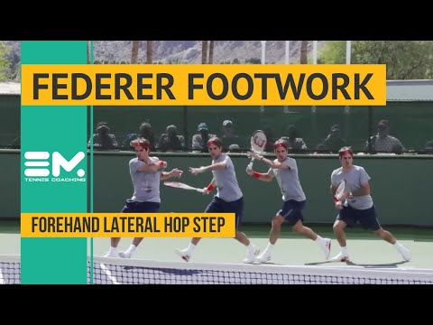
Coaching Immunity in Kids I’ve observed many, many young kids that end up with effective, efficient, fundamentally sound strokes, despite receiving all the sorts of the bad coaching I’ve discussed at length on this website. (Forcibly turning the racket, consciously pointing the butt cap, etc.) How is that possible? Those kids simply ignored the bad advice.
Certain kids, due to their personalities, intuitively understood that their primary criterion for evaluation was how they themselves felt about their strokes. The coach’s advice, by contrast, was a secondary consideration; it was subordinate to their own feeling out on the court, and it was therefore only considered in service to that feeling. When a student with this attitude receives bad advice, they try it for a few shots, feel like it doesn’t work, and then abandon it.
The 14-year-old girl whose story I told in The Fault Tolerant Forehand had a very different experience. Despite the fact that her wrist hurt on every forehand, she was still obeying all the volitional-racket-rotation, wrist-flick tropes that her coaches spouted at her. Unlike a kid with a well developed coaching immune system, this girl’s personality wasn’t such that she was willing to discard the coach’s advice, even though it didn’t work.
Bad Advice as a Pathogen Bad tennis advice is like a pathogen. Without an immune system to attack and kill it, bad advice will infect and damage your tennis game. Many kids have a naturally strong coaching immune system. Their natural attitude is that they have the authority to determine whether or not their strokes are working, and this orientation grants them protection against pathogenic advice. They are bold enough to experiment with their own bodies.
They internalize the coach’s words as mere experimentation suggestions, not as gospel. They internalize the coach’s words as mere experimentation suggestions, not as gospel. This immune system quickly kills anything like the “roll your racket over the ball” pathogen, and their forehand and wrist remain unharmed. It doesn’t matter if they’re taught to “turn sideways,” without ever being taught to unwind that turn during the forward swing.
Their experimentation will quickly show them that their stroke works far better when they unwind their hips as they swing, and so they do that. Their immune system then protects this insight – despite the fact that the coach is constantly repeating “turn sideways,” they quickly discard any thought that they need to stay sideways, My 14-year-old student didn’t have a well developed immune system.
Her natural inclination was that the coach is the authority, and the coach must be correct, and the fact that her wrist hurt on every forehand was something wrong with her, rather than something wrong with the coach. Therefore, there was no immune response, and the pathological advice damaged her. What Constitutes the Immune Response? When you get out on the court, you have the authority to decide what works, and what doesn’t.
You’ve got to trust the signals your own body sends, both positive and negative. Listen to them, and you’ll be able to take control of your own tennis. Pain If anything hurts, it’s almost definitely wrong. If you’re on your own, abandon it, and if you’re with your coach, tell him/her immediately that it hurts, and they’ll likely have an adjustment for you. More Results, Equal Effort Normally, if you try to hit harder, you hit harder, and if you try to hit softer, you hit softer.
But sometimes, you’ll get a piece of advice that allows you to hit harder without putting in more effort. That’s gold – keep doing that. Further, it’s typically the case that in order to miss less, you’ll need to hit softer. Again, sometimes you’ll get advice (perhaps on proper visual tracking), that will allow you to miss less without hitting softer.
These kinds of signals, whereby you achieve better results without putting in more effort, strongly indicate you’ve implemented something worthwhile into your game. Comfort Level Does Roger Federer look comfortable out there as he slices and dices his opponent? How about Iga Swiatek when she rips a down-the-line forehand winner? Leylah Fernandez as she redirects the ball and closes the net? Emma Raducanu as she effortlessly floats in and out of the forehand corner? Of course they do.
Tennis at the highest level flows naturally. If you’re trying to follow a particular piece of advice, and it’s uncomfortable, chances are it’s wrong for your body. Usually, this happens when advice isn’t properly derived from first principles, but rather from lower level details. A classic example – teaching the continental grip on the serve without simultaneously teaching the proper hand path. These two technical adjustments go hand-in-hand; neither functions without the other.
Unless your student innovates the correct swing path on their own (and many do, especially natural throwers), the continental grip will feel absolutely awful, and they’d be better off just using eastern. Learning = Experimentation Tennis is a game that, ultimately, you must teach yourself. Think of coaches as mere guides along your own self learning journey, a journey fueled by your own experimentation.
I don’t just want my students to become better players; I want them to become better coaches for themselves. Many people internalize a tennis lesson as “learning how to play tennis from the tennis coach,” but that isn’t quite right. Unless you’re a complete beginner, a tennis lesson should be used in order to answer a question. Everyone reaches roadblocks in their experimentation, and a tennis coach can help you blast through them.
Even when your practice is going well, you might still want advice on what to explore next in order to make the biggest or fastest improvement to your game. In any of these situations, the primary driver of your progress is you. You, experimenting with your own body, figuring out how to orient it to produce the results you want. Insofar as coaching assists in this process, it is allowed to integrate into it, and insofar as it harms it, it is discarded.
A Complete Approach I always stress the necessity of experimentation to my students. I implore them not to take my word as gospel, but instead to experiment with what I’m saying, to pay attention to how their body feels as they try to integrate it, and to take note of the results. I don’t want a student to get out on the court and think “oh, what was it that coach said?” Not at first, at least.
Instead, I want them to go, “wait, I know it felt different in the lesson,” and then try to remember what it was that clicked for them which made it feel like that. Ultimately, I don’t just want my students to become better players; I want them to become better coaches for themselves, and in order to do that, they’ll need a strong immune system. Your Brain Will Trick You (Into Missing) Sometimes, it’s amazing now “lucky” Novak Djokovic gets.
He hits line after line without missing, appearing to aim to targets not even 6-inches wide, and yet never hitting the ball out. But what’s really happening here? Even players who frequently hit the lines are not aiming for them. They are aiming well inside the line, and missing their target wide. Finding Your Target You shouldn’t tolerate many misses in your singles game at all. Adjust your targets accordingly: If you’re missing wide, move your target in until you aren’t anymore.
If you’re missing deep, move your target shallower until you aren’t anymore. If, when you do that, you start hitting the net, increase your height over the net, and decrease your rotation speed, until you aren’t missing into the net anymore. If you can’t beat your opponent with those adjustments, you’re almost definitely not going to win. You can try playing more aggressively than you’re capable of, but the end result will be an unforced error count that prevents you from being competitive.
Hitting the Lines When you miss your target, you’ll sometimes hit the line. That’s what we want. We do not want the ball to go out when we miss our target, because we’re going to miss a lot. This is the idea of fault tolerance applied to strategy – we need to select shots that can tolerate a small mistake in execution, a small fault, without leading to an outright miss.
I saw a practice session recently where a student hit 5 lines in a row, but I could tell by the rest of the forehands he was hitting that he wasn’t aiming for them – he was just getting lucky. That’s awesome. Roll with it. The goal is to hit a lucky winner when you miss your target, rather than losing the point. Your Brain’s Deception On the 6th short forehand, this student hit the ball 2 feet into the ally.
I asked him, “Where were you aiming on that shot?” His answer, “Only like a foot inside the line.” He’d let his previous hot streak get inside his head, making him believe he had been aiming to that small target all along. He hadn’t. He was aiming farther than a foot inside the line, and had just happened to miss wide a few times in a row. The player in both images hit a wide forehand winner that landed close to the line.
Were they aiming for a conservative target, and merely missed their target wide (left), or can they consistently attack that spot on the court while rarely missing (right)? Your brain will try to reverse engineer your intent from the outcome. It desperately wants to have tried to hit the line when the line is hit, because that validates you as a great tennis player.
When you hit the line, or hit any shot you’re not aiming for, for that matter, your brain will often rewrite the past and make you feel like you were aiming there, even though you weren’t. You’ve got to prevent this if you want to maintain your level throughout a match. If you don’t, here’s what will happen: You start out aiming to appropriate, large targets. You get on a hot streak, missing to the outside of those targets, resulting in winners.
You adjust your target closer to where those winners were landing. Those same shots that you accidentally hit wider than you were aiming, which used to be winners, are now wide errors. Frustration and confusion. Heat Check Sometimes after you hit a few winners, you’ll start to get a little anxious, psyched out by your own performance. Am I really this good? Should I really be going for these shots?
First, remind yourself that you are not “really going for these shots” – you are merely missing your targets wide, and the result is that you’ve hit a few winners in a row by chance. Your brain will try to reverse engineer your intent from the outcome. As for “am I really this good?” – go ahead and test yourself. It’s possible that, today, you really can succeed while aiming at smaller targets than usual.
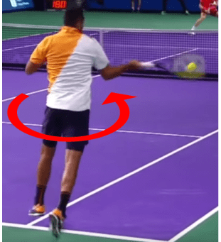
In basketball, a “heat check” is a colloquial term for a pass you throw to a teammate who’s made many shots in a row, with the goal of letting them shoot again, just to see if they’re still hot. Feel free to heat check yourself in tennis. Go for a smaller target, accelerate a little more than you normally do. Who knows, maybe it works, but make a plan. If you miss a few heat checks, go back to your tried and true targets.
Chances are, you were actually aiming at those larger targets all along, but your brain just reverse engineered history to make you think you were aiming to smaller targets, even though you weren’t. When you hit an upswing in variance, during which you frequently miss wider than you were aiming and pile up the resulting winners, you’re going to feel like a million bucks. Accept it, but don’t be fooled by it. Feel free to heat check yourself, but understand that you’re probably just getting lucky.
If you move your aim closer to the lines because you’re “on fire today,” you’re probably in for a frustrating conclusion to the match. 1 Trick to Eliminate 90% of Net Misses Tour level players hit surprisingly high over the net.
The amount of net clearance they’re getting is pretty difficult to see from the typical broadcast view: the bird’s eye camera, and as such, I think many club level players spend their entire tennis life aiming too low over the net, without ever realizing that they’re doing so. In order to avoid net misses, you must aim higher over the net. I know that sounds trivial, but that is step 1. Understand that you need to move your target higher.
The rest of this article will be about how to do that while making minimal sacrifices elsewhere. Rotational Power Transposition Grigor Dimitrov clearly employing shoulder tilt while playing a routine waist height forehand, getting a solid 4 feet (122 cm) of net clearance while doing so. Big words, I know, but let me explain. Our goal on the forehand is to use the large muscles of the legs, hips, and trunk to accelerate the racket.
In order to do so, we rotate into our shot, and that rotation powers the stroke. We can transpose this rotation to create spinier shots, or flatter shots, by tilting our torso, or leveling it out. With a level torso, our core rotation will generate a racket path that is almost completely back-to-front, with very little low-to-high trajectory at all.
What little low-to-high trajectory we have will be from allowing gravity to pull the hand down slightly, and then having the hand flick back up, but none of it will come from the primary rotational engine of the stroke. Casper Ruud getting 6 feet (183 cm) of net clearance on a heavy, aggressive, chest height, inside-out forehand.
When we tilt our shoulders, that same stroke, which used to be entirely back-to-front, now has a vertical component, and the more we tilt our shoulders, the more vertical that swing becomes. The shoulder tilt is our primary tool for altering the spin/flat nature of our shots, while still harnessing the same fundamental kinetic chain to power the swing.
Some of the fundamentals manifest slightly differently with a tilted torso – the player’s weight tends to be less over their back foot, and the swing is more punishing of a tight wrist – but the first principles of a loose wrist, explosive rotation, and out-and-in-front contact point are the same. You Almost Always Tilt Casper Ruud expertly digging out a low forehand by employing an aggressive amount of shoulder tilt, relaxing the wrist, and then rotating through the shot as normal.
We’ve dedicated two articles to low forehands specifically: one about this same shoulder tilt concept, and the other about applying these concepts to dominate opponents who slice. While shoulder tilt is crucial for effective, heavy, low forehands, it’s also essential for waist height forehands, and even chest height forehands. Yes, even when the ball bounces up to your chest, most of the time you’ll still want a slight shoulder tilt as you rotate, in order to add verticality to your swing path.
That added margin over the net is crucial for playing high-margin offensive tennis. After you get the hang of tilting, you’ll realize just how high over the net it’s possible to hit while still driving through your shot.
Many Players Have Never Considered Tilting If a recreational player doesn’t realize just how high over the net elite players are hitting, even while playing offense, then they won’t recognize that there’s anything amiss when their own offensive shots routinely pass only 1 foot (30 cm) over the net, rather than 2-3 feet (60-91 cm). When they miss into the net, then, they assume it’s because they’re simply not good enough, never considering that perhaps they’re aiming to a bad target.
The solution is to employ varying degrees of shoulder tilt on almost every forehand below the shoulder level, even when playing offense. Grigor Dimitrov employing a slight shoulder tilt on two chest height, aggressive forehands, using slightly more tilt when hitting down-the-line (right), than when hitting cross-court (left), due to the increased height of the net which a down-the-line shot must clear.
Varying Your Tilt Almost all forehand situations call for some degree of tilt, but how much it calls for is up to you. As we’ve discussed before, low balls call for a lot of tilt. Chest height, aggressive balls call for less. Grigor Dimitrov employing a slight shoulder tilt on a waist height, defensive forehand from the forehand corner, while electing not to rotate as explosively as he does on a neutral or offensive shot.
On defensive shots, you might actually require less tilt, because you’re not rotating as explosively and so you you don’t need as much spin to keep the ball in. The beauty of the shoulder tilt is that it doesn’t fundamentally change the swing, so you don’t need to practice each kind of forehand as it’s own, isolated unit. Instead, just internalize shoulder tilt as one degree of freedom, among many, that you have at your disposal while playing the forehand. You can dial it up and down as needed.
This is a vastly superior mental model of how to create height over the net than one of yelling “get it up” at yourself, and then ripping up with your hand and arm through contact (though adding a little upward volitional arm movement along with the tilt is fine). Next time you’re out on the court, see if you can integrate shoulder tilt into your shot. Once it begins to feel natural, you’ll gain a control over your net misses that previously seemed impossible.
Serve is Out = Great Return, Explained Your opponent hits their serve long. “Out,” you say, as you swing at the ball anyway. Lo and behold, the shot you produce on this return, a return that, by all accounts, should be more difficult than a typical return (because the serve was out), turns out to be excellent. You make clean, solid contact, and effortlessly send the ball flying deep into your opponent’s court. And then the second serve comes, and you hit the frame. Or you hit it wide.
Or you miss into the net. What’s happening here? Why do we seem so darn good at returning serves that are out, and yet, when the ball lands in, everything falls apart? Self 1 and Self 2 In The Inner Game of Tennis, Timothy Gallwey distinguishes between two “selfs” when it comes to the human mind as it relates to tennis.
Self 1 – the narrator, the logical thinker, the analyzer, the “you” that you generally consider you Self 2 – the self that controls the body, the subconscious, the animalistic self It’s a very similar concept to the idea of System 1 vs System 2 thinking from Thinking Fast and Slow by Daniel Kahneman. A useful way to understand the human mind is as two distinct processing apparatuses mixed together as one.
First, there’s the mind we’re familiar with – the one that narrates our life, chooses between goals, mediates, judges, etc. When most people attempt to answer the question, “who am I?” it is this part of the mind with which they identify. But the second kind of thinking, the second “self,” is equally important in your functioning. It’s the part of the brain that controls your heartbeat, regulates your temperature, and makes you walk.
It’s the part that allows you to flinch away from danger before “you” have even noticed the threat, the part that notices movement in your peripheral vision, listens for danger while you sleep, or wakes the mother when her baby cries. It is this second self, self 2, that is the master of controlling the body. Sure, self 1 can order simple movements – order your hand to move up, and it’ll move up, but that’s about the extent of the complexity self 1’s orders can produce.
Even for an act as simple as typing, self 1 does not order the specific movements – “type ‘yt, now type ‘y’, now type ‘p'” – but rather merely orders the hands to “type the word ‘typing'”, and then allows self 2 to take over and control. Ceding Control to Self 2 When your opponent serves a fault, and you swing anyway, you often naturally and automatically cede full control to self 2, without even thinking about it.
On the other hand, when they serve the ball in, self 1 is typically occupying much of your mental capacity while you attempt to strike the return. Here are some of the consequences of giving self 1 too much control while playing tennis. 1. Added Tension When the serve lands out, you naturally loosen up. Since no consequences will arise from the swing, not even the untrained mind has any reason to be tight. No muscles that shouldn’t be firing fire.
Almost everyone tenses under any amount of stress, and almost all tension impedes tennis swings. Even the small amount of stress of “hey, don’t miss this one” can cause subconscious tension in the rest of your body, interfering with stroke production. 2. Worse Subconscious Adjustment Your body does a lot of things without self 1 noticing they’ve happened until after the fact. If self 1 is in control, though, those things can’t happen.
Making small, improvisational adjustments on something like a serve return is one of such things. When someone serves the ball at you at 120 mph, there’s not enough time to go, “oh, I’m too close to it. That means I need lean away. Careful not to break my 90 degree racket angle, or I’ll shank the ball, etc, etc.” Instead, you need to have trained the habit of how to adjust in practice, so that, in a match, you can just let it happen.
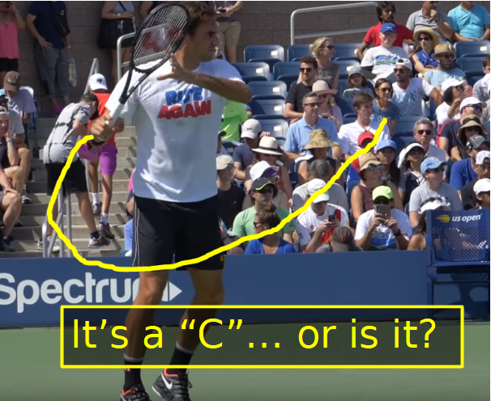
Otherwise, self 2 won’t have the mental resources to actually execute the adjustment. 3. Hidden Habit Interference The more conscious you are, the less your body can naturally resort to its ingrained patterns of movement. There are things your body does that are happening below the conscious level, but, counter-intuitively, if you try to pay attention to them, they can’t happen anymore. If you’re really “on” one day, chances are you are letting self 2 take over more than usual.
Back in high school we had combination locks on our lockers. Every day I’d show up and open my locker out of pure habit. Even though my eyes and my hands were being used, they were being used by self 2, not by self 1. One day, I looked down and… I’d forgotten my combination. I had no idea what it was. Unlocking the locker had been so fully taken over by self 2 that self 1 actually didn’t know how to do it anymore. This happens to a smaller degree in tennis, too.
If you’re really “on” one day, chances are you are letting self 2 take over more than usual. Your body is implementing subconscious habits that you’ve built, that you can’t consciously control, but if self 1 takes back over, these subconscious habits disappear. The Limits of Self 2 Almost every tennis player in the world would benefit from ceding more control to self 2. What, then, is the function of self 1?
First, on any particular stroke, there might be a small, simple way self 1 can influence the movement – one clear, concise order self 1 can send, and then let self 2 handle the rest. “Drive with the upper back” to initiate the 1-handed-backhand is one example. For players who have a habit of driving with, say, their triceps, the added tension from giving the “upper back” order is well worth the change in stroke mechanics.
Once this drive is mastered and automatic, the player can go back to fully relaxing into the shot. Almost every tennis player in the world would benefit from ceding more control to self 2. Tactically, again, self 1 can jump in for quick, concise orders. If you’ve decided to play something like, say, 20% drop shots, self 1 can jump in and order “drop shot,” and then step aside and allow self 2 to execute.
The tricky part here is that if self 2 decides to attempt a drop shot, and self 1 jumps in and says “hey, that’s way more than 20% drop shots you’ve been hitting!”, self 2 will lose control, the body will tighten up, and the shot will almost certainly fail. As you can see, even when trying to offer what is correct strategic advice, self 1 can actually impair your chances. We’ll discuss more of the interplay between self 1, self 2, strategy, and tactics in the coming weeks.
For now, see what happens if you clear your mind and allow self 2 to take over while you play. It’ll be difficult to do, but occasionally you’ll get it, and those shots will feel freer and better than all the rest. Accelerate Late, Like Jannik Sinner Most tennis players accelerate too early on the forehand. As a result, they have long, inconsistent, slow swings. Players who accelerate sufficiently late, on the other hand, have abbreviated, consistent, fast swings.
Jannik Sinner’s world class forehand gives us an excellent example of this late acceleration. The image above is screencapped from a practice session between Jannik Sinner and Novak Djokovic at the 2021 ATP Finals. I encourage you to watch it, as it provides a unique angle we don’t often see, an angle that’s crucial to understanding what’s really happening on a well struck forehand.
We’re discussing Jannik’s forehand today, but, if you watch the clip, you’ll see Novak implementing all of the same ideas. What is Late Acceleration? At some point during your forehand swing, you have to inject speed with your legs, your hips, and your abs, and then allow your hand to release out so your racket can flick through the ball. This isn’t trivial to do.
If you time it incorrectly, there won’t be an efficient transfer of force through the kinetic chain, and no matter how hard you drive with your core movers, the racket will barely accelerate. The correct moment to inject pace with your explosive forward twist occurs quite late in the swing, and for many people, later than is intuitive. The primary acceleration phase happens after the elbow has passed through the plane of the chest.
The arm-racket apparatus is in front of the body when most of the pace is injected. The position on the left is the last frame before Jannik initiates his forward swing. The position in the middle is when his elbow passes through the plane of his hip, and it marks the point at which he begins the arm’s forward acceleration in earnest. The position on the right is after contact has been made. The initial phase of the forward swing is much slower than the explosive fling through contact.
Jannik Sinner’s elite stroke demonstrates this fact. The initial rotation, and accompanying slight forward swing of the arm, during which Jannik’s hand is brought from its farthest back point, forward to the level of his hip, takes 11 frames. Then, from the time his elbow has just passed his hip, to the time his forward swing is completed, and the ball is gone, only 7 more frames have passed. Unless you have an extremely good forehand already, this should surprise you.
The hand is actually covering far more distance in the second phase, from hip through contact, than it covered in the first, from preparation to hip. If the swing were performed at a constant speed, more time would be spent in the contact phase than in the first phase, yet on Jannik’s forehand, we see the exact opposite. The first phase takes significantly longer than the contact phase – 157% as long, in Jannik Sinner’s case.
Explosive Forehand Contact The contact phase of the forehand is very brief, but not because the racket isn’t traveling far. On the contrary, the racket travels through a great distance as it flicks through the hitting zone, it just does so extremely quickly, and so very little time passes during said flick. This part of the swing is a compact, explosive, forward twist, during which the racket is flung forward. This forward fling starts at, or just in front of, the hip, and ends after contact.
During it, the racket is far from the body, with sufficient space between the elbow and the chest so as to allow the elbow to pass through the plane of the chest unimpeded. During the first, less explosive part of the forward swing, Jannik brings his elbow past the plane of his chest (left). Then, during the explosive part, Jannik unlocks his kinetic chain and flings his racket out to the ball (right).
His racket-arm system moves freely during this phase, due to the generous space between his elbow and his chest. Before the forward fling, the forward swing isn’t nearly as explosive. The racket is brought forward, yes, and the hips and chest do begin to unwind, but the core movers aren’t ripping forward explosively to accelerate it until the racket has already passed through the hip. If you try to explode too early, the hand won’t be able to release properly, and the swing won’t work.
The injection of speed comes late in the process, only fractions of a second before contact. The force, generated primarily by the legs, hips, and abs, is injected extremely quickly and all at once, not gradually and uniformly over the entire course of a long, looping forward swing. In Jannik’s case, the process occurs in only 7 frames. Why Accelerate Late?
We need to hold the racket loosely on the forehand, because if we hold it tightly, no matter how explosively we twist, the racket won’t be able to whip through the air. Try it yourself (with anything, doesn’t have to be a racket): Hold your chosen item tightly, and swing it. Now hold it loosely, and swing it. You’ll notice a clear difference in the speed of the object when holding it loosely.
Trying to inject force into your swing while the racket is still behind you leads to a discoordinated, inefficient kinetic chain. Therefore, to swing as fast as possible, we need to maintain this looseness as we inject force. To accomplish this, the elbow has to be in front of the body, and it has to be sufficiently separated from the body.
Trying to inject force into your swing while the racket is still behind you leads to a discoordinated, inefficient kinetic chain – very little of the core’s force actually gets into the racket.
On the other hand, if you give the elbow sufficient space, and then allow it to pass by the chest before injecting pace, you’ll find that the force you generate cleanly and efficiently transfers into the racket, causing it to effortlessly whip through contact. 11 COMMENTS Jack November 28, 2021 How can we implement this? I feel once the hip is initiated, the rest of the swing goes fast. The first picture set where 11 frames and arrow were shown, he has already initiated the hip turn, didn’t he?
REPLY Johnny (FTF) November 28, 2021 Yes, that’s correct – the forward rotation has already started in that second image. The point is not to move your hand forward first, and then turn. The point is that your elbow should pass by your hip very early in that process, and much of the explosive turn should happen after the hand is already in front of you. Many people have differing levels of arm-backswing.
Rafa and Kyrgios, for example, pull their elbow back behind their back, while players like Federer and Karatsev don’t. The principle we talk about in this article unifies all those swings – the more volitional arm backswing, the more volitional arm forward swing is necessary to get into a position similar to the one Jannik is in here.
It’s hard to describe exactly what the proper swing feels like, but the important insight is that it doesn’t occur at a uniform speed, but rather it’s much faster through contact.
REPLY Philip January 29, 2022 Why not explosively accelerate from the backswing rather than from when the hand breaks the plane of the hip as long as the wrist-arm-racket unit is loose, the fundamental rules are followed, the humeral-pectoral angle stays pretty much constant and the arm does not initiate the forward swing? After all, velocity = acceleration x time (forgive the mathematical inaccuracy). REPLY Johnny (FTF) January 29, 2022 Good question.
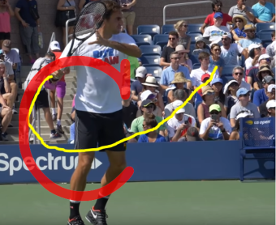
If your humeral pectoral angle is staying roughly the same during the initial part of your swing, you should do exactly as you said. In fact, for players with very abbreviated backswings, like Alsan Karatsev, this is the case, and they almost can’t swing wrong, because they begin every stroke in a position from which you can just rip it forward. For other players, though, there’s a lot more arm movement during preparation, and during the initial phase of the forward swing.
For them, it’s critical that the arm gets out in front of the hips and chest before acceleration happens in earnest (getting to the humeral-pectoral angle you’re imagining), otherwise the kinetic chain doesn’t work properly. REPLY Philip January 29, 2022 Thanks. I finished the book which has been SUPER helpful and so much fun to implement.
I am glad you said that the correct swing can come and go even in the same game-for me the same rally-and to experiment with the conditions that most often give the right result. When it works, it is magic and when it doesn’t: back to the drawing board. REPLY Jon February 9, 2022 Karatsev and Federer, with the very abbreviated backswing, you said “almost can’t go wrong”. Would you say this is the prototype for what you teach? REPLY Johnny (FTF) February 12, 2022 Definitely.
The Kyrgios thing where you pull your elbow back and then whip it forward and out to initiate the swing is definitely flashy, but I’m not convinced it’s worth the extra motion. Especially for adults who don’t have 10 hours a week to spend drilling their technique, go with a simple, Fed/Karatsev like swing.
REPLY Philip February 3, 2022 For the sake of simplicity, assuming the vector of Sinner’s hand is a straight line towards the net and the total time of his swing to contact is 1/4 second, for the first 1/8 second, let’s say, the velocity of his hand is naturally slower than the remaining time to contact according to: Velocity initial = Acceleration x 1/8 s is less than Velocity final = Acceleration x 1/4 s.
Sinner’s hand may be covering more distance from hip to contact in fewer frames because of physics rather than conscious or unconscious late acceleration. Looking at slo-mo video it looks like he explodes from the get go. REPLY Johnny (FTF) February 3, 2022 I see what you’re saying about the physics. I agree that it’s possible what you’re describing is happening, but I don’t think it is, because the last leg in the kinetic chain hasn’t fired yet.
The last leg of the kinetic chain, the part where the arm is driven forward in front by the chest muscles, and as a result the humeral-pectoral angle closes, that part is the critical part we’re trying to get to happen later. The point of this idea is to delay when the humeral pectoral angle closes until our hand and elbow are out in front out in front of our body, rather than closing that angle while still sideways.
REPLY Gabriel February 20, 2022 Your explananation of Sinner´s 2 phases of acceleration coincide completely with that of FAA you also analyzed, though the latter has that awesome trait of timing his elbow- hand preparation “in front”,” almost” in sync with the bounce. I would add that Rublev, Alcaraz, Berretini are in the same group of these past-the-hips “sudden” extra accelerators as an automatation in every forehand. I don´t clearly see this in Tsisipas , Korda, Medvedev, Zverev, Norrie.
I´ve seen for instance that Monfils and Nole decide WHEN to apply this. Do most of ATPs kind of regulate it? PD: Apart from the extra speed you may get precisely that extra contributes with much more upward topspin (the Magnus force) that finally augments the inland margin of the ball and one´s confidence .
Adds up for your Fault Tolerant concept REPLY Gabriel April 9, 2022 In my view, with no need of sequential photos I believe that Carlos Alcaraz visibly engages your concept “slower hand-elbow before hip plane level then max speed out in front of the chest”.
The perfect model in my view. (Rublev too, less visble though) But in Alcaraz after his hand-elbow structure passes the hip plane level I clearly observe how that awesome shoulder turn goes kind of outwards during a sec fraction (as it has a brutal centrifugal force like a crosspunch in boxing) and then forwards at an incredible speed.
Not in many is so noticeable (I’d say for sure in Federer and Nadal) Abandon Anger Anger wastes mental energy and clouds judgement, two clear detriments in any competitive setting, so while anger certainly has its uses, “useful emotion in the game of tennis” isn’t one of them.
To better understand anger in tennis, we’ll first draw a line between two classes of mistakes, which I’ll call: Bad Results Process Mistakes Anger towards bad results – towards missing a particular shot or your opponent hitting a lucky winner – provides very little benefit, in any context. It’s difficult to let go of, but you’ll be far better off once you do. If you struggle with anger towards bad results, internalizing that tennis is random is extremely helpful.
When you get angry because you missed a well chosen shot by two inches, it’s the same as a poker player tilting because their opponent hit a 2-outer on the river. Of course it’s annoying, and it makes sense that you’re upset, but there’s nothing you can do, or could have done, to change it, so your emotional response can’t lead to any life improving action. When you play a game of probability, the cards fall how they may. The rest of this article will be about how to abandon justified anger.
Process Mistakes are Frustrating For process mistakes, anger is often a justified response, but just because it’s justified doesn’t mean it’s useful. Here are some examples of process mistakes: Making the same poor shot selection decision over and over. Letting up on the final shot of an offensive combination, and missing because of it. Thinking you’ve hit a winner, not getting ready, and then losing the point because of it.
Not running for a ball because you think it’s out, only to have it land inside the line. These kinds of mistakes feel more fixable than bad results, which is why our emotions run so much hotter when making them, but despite that feeling, mid-match anger isn’t productive to fixing these mistakes either. The anger that wells up during a match is primarily a result of the outcome not matching your expectations. Your belief – I move well. I run balls down. I play smart. The reality – I move lazily.
I let balls go. I play dumb. That dissonance is what’s infuriating (or can be; some people are wired such that it doesn’t bother them, but it’s far less likely they clicked on this article). You Are Your Coach To prove to yourself how inappropriate of a response anger is, even to process mistakes, imagine having a student (many of my readers are also coaches, so no need to imagine).
If your student made these mistakes, you might feel angry, or frustrated, or at the very least, disappointed, but how would you react? Would you yell and scream at them? Tell them they’re terrible at tennis? Walk out on the court, take their racket, and smash it? Of course not. Like a responsible adult, you’d calmly and analytically evaluate what was working and what wasn’t, and, as gently as you could, try to nudge your player in a better direction.
Trained Patterns of Behavior Process mistakes feel fixable mid-match, because human beings like to pretend we have full control over our system 2, personal narrator, logical level thinking: Sure, I can’t perfectly execute a forehand movement every time, but of course I can choose the right shot, can’t I? That’s a choice after all, and I have full control over my choices, don’t I? Sorry, no. That’s not the way the human brain works.
Process mistakes are trained patterns of behavior that you need to re-train in order to fix. Process mistakes are trained patterns of behavior. Once you’re already in a match, you’re working with what you’re working with. Mid-match, the useful orientation towards the information you’re receiving is non-judgmental, emotion free evaluation. Figure out which shots and patterns are working, and which shots and patterns are not.
Expectations aren’t useful mid-match, because expectations lead to dissonance, and that dissonance leads to anger. In any given match you play, the behavior you’re seeing on the match court is precisely the behavior you’ve cemented in practice: Don’t sprint for short balls in practice? Guess what, in a match, shouting at yourself to “stop being lazy and run for it” isn’t going to fix that habit. Routinely forget to track the ball in practice? Same thing.
No amount of “watch the ball, idiot!” will fix that mid-match. Practice is the time to be hard on yourself. While you practice, you can scold yourself for not moving, or for playing too casually at the end of a rally, or for making poor shot selection decisions. Practice is the time to allow yourself to be frustrated by the dissonance between where you think you should be, and where you are, because practice is the time when you can actually do something about it.
During a match, you can’t expect your built in patterns of behavior to change on a dime. I know it feels like you can “just move your feet” or “just focus more,” but the truth is, you can’t. You can’t consistently do those things without first building the habit of doing them. Letting Go of Expectations It’s difficult to let go of your expectations. There’s a reason certain process mistakes frustrate you so much. For some people I’ve met, it’s moving poorly.
They absolutely hate when they move lazily – when they don’t sprint, or they don’t get in a proper ready position before the ball comes, it infuriates them. Whatever your particular most hated process mistake is, the reason you hate it so much is because you really, really don’t want to be the kind of player that makes that mistake. Well, time to be the bearer of bad news. You are that player. And getting angry about that won’t change it.
What will change it is practice dedicated to replacing the habit you hate. It won’t be an instantaneous process, either, and while you’re on the path to re-wiring your habit, you have two choices: you can continue to smash rackets every time you relapse, or you can… just not do that. Instead of “I DIDN’T MOVE MY FEET [expletive], [expletive], [expletive]!!” it can just be… “I didn’t move my feet.” Fact of life. Evidence I’ve observed while playing, and I’ll adjust my practice accordingly.
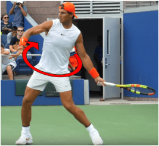
The Power of Patience If you can keep the ball heavy, deep, and, most importantly in the court, for more shots in a row than your opponent can, you’re almost always going to win. Occasionally, one player can be such a great tactician that they’ll beat a superior ball-striker, but that’s rare. Most of the time, offensive tennis and tactics exist in the context of attacking your opponent’s imprecise ball strikes: my opponent has dropped a ball short, now how do I maximize my win-rate?
If you’re annoyed that your opponent isn’t dropping many balls short, though, you might be tempted to change it up – to frequently change the direction of the ball, or to aim closer to the lines, but doing so will increase your miss rate, offsetting much, and likely all, of the potential benefit. So what’s the solution then? It’s actually pretty simple. Just wait longer for the opportunity. One of the most valuable skills a tennis player can cultivate is patience.
The cross court shot provides 82.5 feet of court to hit into, 4.5 feet more than the down-the-line shot, which crosses 78 feet of court. Winning With Geometry How much more margin for error do you have when hitting cross-court, than when hitting down-the-line? One foot? Two feet? One meter? The answer may surprise you: 4.5 feet (1.5 meters). It’s like you have an entire extra doubles alley to miss into when hitting cross-court.
Not only that, the net is a full 6 inches (15 cm) lower in the center than it is at the edges. Due to these geometrical differences, you can miss-execute your shot by more without missing when aiming cross-court. You can miss an extra 6 inches low without hitting into the net, and you can miss an extra 4.5 feet long, without missing out.
Rally Tolerance One of the favorite drills of Paul Annacone, a drill he used frequently with Roger Federer, is a cross-court feeding drill where the coach feeds the player a variety of semi-difficult balls into the forehand corner. None of the balls are easily attackable. The goal is to hit them all into the deep, cross-court corner on the other side. And when I say “them all,” I mean them all. The higher your percentage on this shot, the better you’re going to be.
The idea of this practice is to form a habit of aiming to the correct target, and aiming sufficiently high over the net, such that you practically never miss. The drill trains hundreds and hundreds of repetitions of: Split step Move to the ball Strike it Recover Without repetitions, the above process can’t be executed successfully enough for singles tennis. It’s just too complex.
A rally tolerance drill is to give the player sufficient practice driving the ball cross-court again, and again, and again, so that, in a match, they’re confident in their ability to do so. Without this confidence, it’s common for a player to frequently bail out of a rally with a low-percentage shot. They’ll do something like hit down-the-line, even though their opponent isn’t out of position. By doing so, this player increases their own miss-rate, but doesn’t get any benefit from it.
It’s easy for a coach to say, “Hey, don’t do that,” but what really helps is building the habit of not doing that. Rally tolerance practice teaches a player that they are capable of being patient, so that, once they get into the match, they’re willing to play neutral tennis and wait for a real opportunity. Wardlaw Directionals NCAA women’s tennis coach Paul Wardlaw coined a system, known as the “wardlaw directionals,” for playing high percentage tennis from the baseline.
The idea of the system is to help players build the habit of selecting the highest percentage shot in every situation. The Wardlaw system is built on two main ideas: On an outside shot, the incoming ball crosses the player’s body. The highest percentage play is to hit the ball back where it came from. 1. “Outside” vs “Inside” Shots An outside shot is a shot that crosses the player’s body as they receive it. Typically, ground-strokes are outside shots.
When two players are rallying forehand-to-forehand, for example, each of those forehands is an outside shot – as the ball comes in, it crosses the player’s body, and then they hit it. An inside shot, on the other hand, is a shot which does not cross the player’s body. You’re actually probably familiar with the most common inside shot already – the inside-out forehand. On the inside-out forehand, the ball does not cross the player’s body, hence why it’s considered an inside shot. 2.
Change of Direction The second core idea of the Wardlaw system is whether or not a player changes the direction of the ball as they strike it. It is easier to execute a shot without changing the ball’s direction. On an inside shot, the ball does not cross the player’s body. The highest percentage play is to change the ball’s direction. The most common tennis shots do not change the ball’s direction. Let’s use again the example of the forehand-to-forehand rally.
The direction of the ball is not changing as the players hit: one player hits the ball cross-court, and the other player returns it back cross-court. Change of direction shots are very common on short balls, however. Often, a player will attack a weak cross-court shot by changing the ball’s direction and hitting it up-the-line. So what’s the system? On outside shots, don’t change direction, and on inside shots, do change direction.
In general, the Wardlaw system believes more in biomechanically sourced fault tolerance than geometrically sourced fault tolerance. When accelerating through a topspin groundstroke, a player naturally rotates their hips and chest, making the across-the-body shot the lower degree of difficulty shot. On outside shots, we get all three benefits: We can hit across our body. We hit into the longest part of the court, over the lowest part of the net. We don’t have to change the ball’s direction.
On inside shots, on the other hand, we prioritize the biomechanical ease over the other benefits, and elect to hit across our body even though it requires changing the ball’s direction. Geometrically, though, we typically don’t have to sacrifice much to do this: we’re typically standing close to the center of the court, meaning we can change direction while still going over the lowest part of the net, and we’ll have roughly equal space to hit into no matter which corner we aim at.
Cross-Court is King The cross-court shot is the lynch pin of baseline tennis. It is geometrically king because the court is longer, and the net is lower, and is biomechanically king because the hips and chest naturally want to turn towards it as a player swings. Rally tolerance creates your offensive opportunities.
Whatever baseline strategy you decide to implement, whether a Wardlaw strategy or not, the heavy, deep, cross-court shot should be at the foundation of that strategy, because it leverages both geometric and biomechanical advantage. Players who practice how to execute deep, cross-court shots at an extremely high clip, and then cultivate the willingness to do so, over, and over, and over again, win more matches than those who don’t. Rally tolerance creates your offensive opportunities.
When you watch tennis, it isn’t always obvious how patient the best offensive players, like Roger Federer, are being. Tactics, drop shots, net play, offense – all of it is very sexy and very enticing, but without patience it doesn’t work.
Roger Federer isn’t Roger Federer because he attacks every ball, rather, Roger is the best in the world at recognizing an offensive opportunity when one is provided to him, and when one isn’t, he hits cross-court like everyone else. “I Just Started Missing.” Ever wonder why sports books try really, really hard to get you to place parlay wagers?
It’s because the parlay bet, a bet type where you bet on multiple events, and ALL of them have to happen for you to win, leverages an idea that human beings are notoriously bad at comprehending: compound probability. When multiple, independent events all have to go right for you to win, the probability of the entire sequence happening is the product of the probabilities of the individual events.
For example, the chance of flipping a fair coin and getting heads is 1/2, while the chance of flipping 4 fair coins, and getting ALL heads is 1/16, eight times less likely. The Surprising Effects of Compound Probability Let’s imagine you possess a shot which you know, from your practice, has a 90% success rate – maybe it’s your deep, cross-court forehand. That’s pretty good, right? You’re only missing this shot 1 out of every 10 times you attempt it. You use this shot out of neutral situations.
Sometimes, your opponent drops you a short ball, and you can transition to offense, and other times, they return the ball back cross-court, forcing you to hit this shot again. If you’re forced to execute this shot: 3 times in order to win a rally, your chance of winning the rally is (.9)3, or 73%. 7 times in order to win a rally, your chance of winning the rally is (.9)7, or 49%. If your opponent can force you to hit just 7 of these shots, they’re actually favored to win the point.
Despite the fact that the shot you’re hitting is, by all accounts, very consistent, if your opponent can force you to hit just 7 of these shots, they’re actually favored to win the point (51 to 49). Most people don’t have a great sense of what happens to the odds of highly likely events (like a shot which succeeds 90% of the time) when they’re added together.
Even a probability close to 1, like 0.9, rapidly decreases when multiplied by itself. “I’m making so many errors.” Many players end up confused when they encounter the following situations: They are used to playing 3 shot rallies, and winning 73% of them. They lose about 27% of their points to errors, and they’re okay with it.
All of the sudden, they play an opponent who forces them to play 7 shot rallies instead of 3 shot rallies, and now they’re only winning 49% of points, and making errors on 51% of them. They perceive this change, incorrectly, as “making more errors.” Here’s the thing though – between situation #1 and situation #2, their stroke success rate remains unchanged.
It feels to the player like they are playing worse, because their rally success rate has cratered from 73% to 49%, but, in reality, they’re playing how they always play. Their opponent is forcing them to make more balls than usual. Your opponent has changed, and you haven’t. Your opponent is now making you play 7 shots instead of 3. It’s also common for these two situations to occur against the same player, but at different times in the match.
Often, an opponent’s consistency will increase as they get used to your ball, especially if you hit an especially novel ball – whether it’s heavier or flatter than is typical at your level, or if you’re a lefty. Early in the first set, your opponent’s miss rate is higher while they adjust, and they can only force you to play 3 shots. Later, as they get used to your shot, they can force you to play 7 shots instead, and all of the sudden the match is tight.
Again, you feel like it’s you who has changed, because you now lose 51% of the points to an error, rather than 27%, and again, this is incorrect. Your opponent has changed, and you haven’t. Your opponent is now making you play 7 shots instead of 3. You’re being forced to execute more shots in a row without missing in order to win the points. Solutions If you take anything away from this article, let it be this – 90% isn’t that high.
For a shot that has to be executed over, and over, and over again throughout a match, missing 1/10 is actually a lot. If we’re able to train our deep, cross-court forehand up from 90%, to just 95%, the examples we gave at the top become far more appealing: 3 shots to win a point: 86% chance to win 7 shots to win a point: 70% chance to win Here’s another way to say this. If you’re hitting your forehand at 90%, that’s 10 misses every 100 balls. If you’re hitting it at 95%, you miss 5 less times.
Those 5 points go a long way over the course of a set. If just one or two of them end up costing you a game, all of the sudden, you’re losing the set 6-4 instead of winning it. It’s not you, it’s them. Once you’re already in the match, you’re working with whatever success rate you’re working with – you’re hitting at 90%, and now that your opponent has adjusted, 90% isn’t good enough.
Instead of lamenting that “you’re making so many more errors now,” you need to correctly identify that your neutral rally balls are no longer good enough to win the match, and adjust. Understand that your opponent has improved, and unless you alter you’re strategy, you’re going to lose. Perhaps you change from 75% Wardlaw / 25% Change-up, to 50/50. Maybe you increase your drop shot percentage, maybe you start serving and volleying.
Whatever non-standard tools you have, the non cross-court grinding parts of the game that you are best at, now’s the time to increase the frequency at which you go to them. The heavy, cross-court ball is certainly the corner stone of tennis, but there’s a lot more to the game than just that. Every tennis player has their unique strengths, their own tools for breaking out of bad patterns, and matches where your rally ball isn’t good enough are the time to break those tools out.
The Swinging Volley is a Cheat Code There’s one shot in tennis that changes the geometry of the court in a way unlike any other: The swinging volley. This shot allows a player to attack in ways that are physically impossible with any other, and, especially on the forehand side, they can execute those attacks in an extremely high percentage way. The swinging volley’s primary use case is to take away every tennis player’s best defensive option – the deep block/roll shot over the middle.
When a defending player is in a compromised position, the easiest, highest percentage way for that player to reset the point is to block the ball back high, slow, and deep, while aiming to a very large target. This high, slow, deep block shot is difficult to miss, even if the incoming ball is challenging, and yet it still typically succeeds in returning the point to neutral. Why Evangelize The Swinging Volley?
It actually isn’t the swinging volley itself that’s the cheat code – it’s rolling the ball deep when on defense that is. It’s too effective, and too easy. The swinging volley is the only consistent way to attack this defensive cheat code, but it isn’t as popular as it should be, because it carries with it a very high degree of difficulty. Here’s what makes it difficult: The ball typically has a large, downward velocity when you strike it. The ball is also accelerating down as you strike it.
You’ll often be moving while you execute your swing. The contact point will vary widely from shot to shot. Imperfect Contact Due to #1 and #2, perfect contact is unlikely. When the ball has both a large vertical velocity and is also accelerating as it comes in (due to gravity), a small error in timing or spacing is almost guaranteed. Your stroke must succeed in the face of that small error.
Hitting While Moving It’s uncommon, on the swinging volley, that you get to set your feet, prepare in rhythm, and swing. In fact, the very idea of the shot is to explode forward and take time away from your opponent, intentionally breaking the rhythm of the match. When sprinting through the shot is necessary, the forehand swinging volley is performed with the simplest stroke possible. To do this successfully requires a very fundamental understanding of the forehand.
If your understanding of the stroke exists as a series of rules like “swing low to high” and “drive with your legs,” then the swinging volley won’t be possible for you. If you don’t know what the forehand stroke really is, at its core, then you won’t be able to correctly adapt your swing for the novel situation that is each individual swinging volley attempt. When sprinting through the shot is necessary, the forehand swinging volley is performed with the simplest stroke possible.
The chest is minimally turned away from the target, and the hips are mostly open. Since you’re sprinting forward anyway, you’ll have plenty of power, and adding more with rotation will often cause more misses than it’s worth. Fault Tolerance Itself Is A Weapon Some players try to strike every ball perfectly. That’s fine, but that should be a secondary goal, because the ability to strike a ball imperfectly and still have the shot succeed, that ability itself is a weapon.
It allows you to go for more aggressive, more difficult shots, without missing – shots where perfect striking is very unlikely. This is one of the reasons that I, perhaps more than many coaches, evangelize the swinging volley so heavily. Because it’s a very difficult shot to execute perfectly, many see it as an inherently low-percentage shot, but that’s not actually the case.
If you design your stroke to be fault tolerant, then it’ll work even when executed imperfectly, and that fact is what allows you to take advantage of amazing shots like the swinging volley. The chain of reasoning that leads away from the swinging volley is too unimaginative: It’s too hard to execute a swinging volley perfectly. The swinging volley is low percentage. The advantage you gain isn’t worth the miss rate.
Whereas, we start with a first principle idea of the advantage we want, and work backwards from there: The swinging volley provides a massive geometrical advantage. It’s really hard to execute perfectly. Design and practice a forehand stroke that succeeds when executed imperfectly. Use that stroke to hit the swinging volley, and cash in on that geometrical advantage.
The Forehand Stroke Is Phenomenal In the intro to The Fault Tolerant Forehand, we marvel at just how effective the modern forehand movement pattern is at producing a tennis shot. Well, we can press this advantage further by using this movement pattern at net.
The ability to use your forehand mechanics in transition – through no man’s land and when sprinting forward – and also while at the net, papers over a lot of the biomechanically tricky shots you’ll run into in those areas: Shots at your knees in transition go from awkward chip shots, to regular low forehands. Shots at your shoulders go from awkward high volleys to trivial high forehands.
Shots at waist height go from, again, awkward mid-court, transition volleys to, essentially, approach shots that you don’t bounce. Not to oversell it, it’s certainly more difficult to strike these forehands out of the air than it is off the ground, but if your stroke is sufficiently fault tolerant, not prohibitively so. One More Use Case One last, fun use case of the swinging volley is actually defensive. Yes, the swinging volley improves your defense as well.
When an opponent is at the net, and you’ve just hit a dipping passing shot, you need to sprint forward, because the highest margin, most effective volley is short. When you do that, you’ll end up split stepping in no-man’s land, so what do you do if the ball is volleyed back deep instead? Hit it out of the air, of course. Just take your regular forehand or backhand swing and either hit it right at the player’s body, or go for another passing shot.
This is the only effective way to defend against a player at net. If you stay at the baseline, you’re giving up way too much equity with the easy short volleys. The Upshot You’ll notice a pattern here – the swinging volley allows us to take away our opponent’s best option. It’s difficult, but by mastering this difficult shot ourselves, we make our opponent’s shots even more difficult. The swinging volley allows us to take away our opponent’s best options.
Whether we’re taking away the easy deep defensive shot, or we’re taking away the easy short chip volley, we’re using our ability to strike the ball out of the air to take away our opponent’s best options. Maybe “cheat code” is the wrong word for the swinging volley – it takes a lot of repetitions to get it right; it’s not as simple as entering a few buttons into your controller. “Cheat code eliminator” is more accurate.
The swinging volley takes away your opponent’s cheat codes, and that’s as good as having one yourself. “You Can’t Teach That” What is a “forehand,” really? For many, it’s simply a tennis stroke, but for us, it’s something else. We consider “the forehand” to be a class of related movement patterns. The entire class constitutes “the forehand.” To master “the forehand,” you need to master not just one specific stroke, but rather the entire class of forehand-like movements.
There are four main attributes to any shot you attempt: Target on the other side of the court Amount of spin Height over the net Velocity of the ball The class of forehand movements contains many different exact strokes, each of which manipulates these attributes in one way or another. Mastering the forehand constitutes mastering this movement class to such an extent so as to be able to manipulate any or all of these four goals at will. And that’s quite difficult to do.
The Challenge Most forehands are not correctly built from first principles, but rather from downstream details and implementations. The result is that most players have no idea how to correctly manipulate one or more of these four goals without their swing breaking down. Here are some examples: Trying to move your target by looking at it. Trying to get more spin by “wristing” the ball using your forearm. Trying to increase height over the net by “swinging up” with your arm.
Trying to increase velocity by accelerating with your arm muscles. Each mistake belies a critical misunderstanding of how its corresponding goal is achieved. I could go through and explain why each one of these is a bad idea, but that’s not the point. The point is that each mistake belies a critical misunderstanding of how its corresponding goal is achieved.
In order to manipulate an attribute of your forehand, whether it’s target, spin, height, or velocity, you need to understand, within the class of movement that’s happening on the forehand, how that attribute is properly controlled. Building From the Ground Up Exact footwork patterns and swing mechanics are not first principles on the forehand. They are derivatives off of those first principles, and because they are derivative, they’ll change from situation to situation.
This is why, at Fault Tolerant Tennis, none of the drills we recommend involve practicing a particular swing or footwork pattern. Instead, the drills we recommend place the player in the most common and demanding situations, and let them fend for themselves. We teach you the first principles, then throw you to the wolves and let you apply them.
The goal is for you to discover the most common exact swing mechanics and footwork patterns on your own, as your brain attempts to construct a shot from the fundamentals. Now, we’ll occasionally make an exception when the details are difficult to find on your own – when liberating the hips, many students need to be told to unplant their feet – but this kind of instruction is the exception, not the rule.
Coaches are guides along the path of a student’s own experimentation, and there are certainly a few times the guide must instruct a little more than usual, but they’re rare. Natural Talent Natural talent helps a lot in tennis. For any or all of the four attributes of a stroke, many players understand how to control it without requiring much instruction. For most players, at least one of the four fundamental goals does not come naturally. Some players just get how to aim their strokes.
Others find hitting spin or flat to be trivial – just hit spinnier or flatter, of course. Some can easily vary their height over the net, and when it comes to velocity, usually strokes break down when accelerated, but, for some players, they simply think “hit harder,” and it works.
For most players, though, at least one of these four fundamental goals, and almost certainly more than one, does not come naturally, and because it doesn’t come naturally, there exists no athletic understanding of how to manipulate it. “You Can’t Teach That” Actually, you can. Almost always. There are very few things that actually can’t be taught, like height and fast twitch muscle fiber density; almost everything else can be. The “you can teach that” line irks me because it’s not quite accurate.
Well, actually it is: “You can’t teach that,” but I can. Here’s how. I teach my students first principles, then let them experiment. All of the brilliant improvisational shots you see on the tour are derived from the same fundamentals as the regular ones. The best improvisational players are the ones with the best athletic understanding of those fundamentals. Roger Federer blocking a return winner past Thomas Berdych en route to winning the 2017 Australian Open – exceptional, but not unteachable.
When Roger Federer blocks a tour level serve to his backhand up the line for a winner, that looks like natural talent, and it is, but it’s also something else. It also demonstrates a precise athletic understanding of how to control his body in space in order to block that serve. This athletic understanding, for Roger, came naturally, but that doesn’t mean it had to come naturally. I can guide you along the path to hitting the same shot.
I can tell you to use your upper back to stabilize and drive the racket, to hold the racket at 90 degrees with your forearm, to track the ball off the bounce, into a contact point well in front of your body. We can train what it feels like to drive the racket with your upper back, instead of with your triceps. We can take one, two, three hundred reps where we just focus on tracking the ball into the right contact point.
Learning the Class Instead of the Stroke Everything that happens on a tennis court is a result of simple movement, and that movement can be broken down into even simpler parts. The brilliant shots you see on TV – those are certainly out on the edge of their particular movement class – but they’re still movements, still governed by the same rules as the rest. Improvisation of all kinds is simply the brain working forward from a correct baseline understanding.
Whether natural or taught, the stronger the fundamental understanding, the better the resulting improvisation. Whether natural or taught, the stronger the fundamental understanding, the better the resulting improvisation. Here’s something I see every day – all of my students occasionally finish over their head on their forehands, and yet I’ve never told a single one to do that. They were merely applying the fundamentals.
Their brain has internalized the forehand as twisting explosively into the ball, and, in order to do that when late, the follow-through goes over the head. The follow-through happened automatically, not by design. Learning a tennis stroke is about learning the fundamentals that govern that class of movement patterns, and then practicing with those fundamentals as a starting point.
Learn like that, and unique situations – high or low contact, passing shots, shots on the run, shots stuck behind you – they won’t be novel, low-percentage, awkward feeling situations. They’ll just be… situations. Situations in which you apply the same fundamentals you apply on every other shot. Train like this, and your rate of improvement will skyrocket. Losing the Feeling The perfect forehand release is elusive.
That loose, explosive, natural flick through contact feels amazing when it works, and when it’s not there it feels… frustrating. One day you’ll have it, and the next day you won’t. Actually, the variation is even more extreme than that. One set you’ll have it, the next you won’t. Sometimes you’ll even lose it game-to-game, and sometimes even shot-to-shot.
Long term, every player’s goal should be for that perfect release to become habit, thereby leaving the realm of conscious competence and entering the realm of unconscious competence. In order to lay down the tracks of habit in the brain, a human being must perform the same action, the same way, repeatedly. The tough part, when it comes to the forehand, is that since the perfect release is so elusive, it’s hard to actually execute these beneficial repetitions.
You could have an entire two hour practice session, during which you hit a few thousand balls, and none of them could be high quality reps. Raise Your Practice Standards Unlike during a match, practice is the time to be hard on yourself. The repetitions where the stroke feels wrong aren’t that valuable. You are your practice, and if you’re practicing things that don’t feel right, you’re becoming a tennis player whose strokes don’t feel right.
Your practice is only useful insofar as it constitutes practicing things that you actually want in your game. Here’s an example. Let’s say you: Split step on time Move explosively to the ball Prepare well Swing poorly That repetition was… decent. You’re practicing good habits with your movement and preparation, and you’ll certainly get a minor conditioning improvement from a session of reps like these.
The practice would be so much more useful, though, if the swing was also working, because when the swing isn’t working, the executing-the-swing phase of the practice movement has no value – during the swing, you aren’t practicing the movement you want to habituate. How do we fix it? You’re in practice, and your stoke feels wrong. Repetitions are not the answer, experimentation is. Here are a few suggestions for how to get the feeling back: 1.
Weighted Swings This is the single most likely thing to help reset your brain and get you swinging correctly again. Adding weight to the racket, or swinging something heavier than a racket (like 2 rackets, or a ball hopper) forces your body to use its strongest muscles to generate acceleration. If your stroke feels awful, try taking a few weighted shadow swings, then go back to your own racket, and then repeat.
Usually, the extra weight will force your body to move in a different, more efficient way. Never plant your feet while swinging something heavy. Let the weight of the object do the work of the swing. Let it pull you forward. Notice how far out in front of you the dynamic action of the weight occurs. As you do this exercise, ensure your feet remain free. Remain on the balls of your feet, and also allow the entirety of either foot to come off the ground as the weight moves.
Never plant your feet while swinging something heavy, as that’ll put heavy stress on the knees. My father actually tore his right ACL doing just that – he planted his feet and twisted while launching a heavy piece of furniture into a dumpster. 2. Dial Down the Acceleration Mistakes tend to be exaggerated at higher speeds. Accelerate less when the stroke feels bad, and just work on creating clean contact. Remember, if you can’t do it slow, you can’t do it fast.
Taking fast reps with the wrong stroke isn’t productive – you aren’t getting better at tennis while doing it, so why bother? 3. Audit Your Stroke Is it every stroke that feels bad, or just some of them? Is it only the low ones? Only the high ones? Only the fast, or the slow ones? If there’s a particular situation under which your stroke feels great, then it means your issue on the others is not the swing itself, but rather improper adjustment to a non-standard situation.
Experiment with different forms of adjustment, like tilting the torso, or sitting lower with the legs, and see if you can fix it. 4. Cycle Through Your Cues Throughout your tennis life, you’ve told yourself many, many things. Most of them did nothing, but a few of them really worked. Start cycling through your cues from the past, and see if any of them make the stroke click.
Testing Your Contact There’s actually a great test for forehand contact, specifically: Without your racket, drop a tennis ball in front of you, and then attempt to catch it with your forehand swing motion. If your forehand feels off today, I guarantee you’re going to hit the ball away instead of catching it. It’ll feel like practically the entire motion is transpiring in front of the body. If you hit the ball away, it’s because you are accelerating too early in the swing.
We need to wait until the elbow has passed through the plane of the hip before accelerating in earnest, otherwise, the kinetic chain just doesn’t work the same. Once you fix it, and you’re catching the ball every time, it’ll feel like practically the entire motion is transpiring in front of the body, and that’s exactly right. Both the forehand and this practice drill take place primarily in front of the body.
The correct forehand motion is not best understood (as it commonly is) as: backswing > forward swing but rather as: place the hand down > fling it way out in front of you The forehand is a motion that occurs in front of the body. Once that becomes habit, the inconsistency will end. The Secret to Saving Your Knees When a person is standing straight up, their weight is balanced over the center of their foot. The knee, like the foot, is a beautiful, well engineered piece of biological machinery.
And also like the foot, the knee is very easy to injure. When a person is standing, their weight is pushing down through their entire leg, and the bones of the leg are supporting most of the force. The knee is in no danger in this position, and we’ll use this as our starting point. The knee pain comes when we load the knee, do so improperly, and then end up placing far more stress on the knee than it can recover from.
Loading the Knee In order to forcefully drive off the ground, an athlete must load the knee. Our goal, though, is to load the entire supportive structure of lower body, specifically the strong muscles of the posterior chain, rather than just the knee itself. The more load the glutes, hamstrings, and lower back take, the less load on the knee, and vice versa.
Forward Knee Shear Shear force occurs at the knee when an athlete’s weight is far over their toes, and the knee is being forced to support that weight with little help from the strong muscles of the legs and back. The exact biomechanical explanation of this force is beyond the scope of this article, but you can feel it yourself.
We’ll examine two distinct, different loading positions and their effects on the knee – exaggerate them, and you’ll be able to feel the stress on your knee (or lack there of) yourself. The Typical Untrained Person When an athlete uses a “knees first” approach to generating ground force, their weight is moved far forward, creating shear stress on the knee. Note the very limited hip flexion here.
The typical 21st century human being is quad dominant – there’s a proportional strength imbalance between the quads and the hamstrings, and the quads are proportionally stronger. This is primarily due to sitting, during which the quadriceps is contracted, while the hamstring is elongated. The result is that most recreational athletes attempt to use their stronger quads, rather than their weaker hamstrings, to generate ground force when they have to push off.
This takes the form of bending the knees forward, then using the quadriceps to explosively extend them. The position shown here is the beginning of that process – the forward knee bend. When in this position, you’ll feel stress on the front of your knee. The athlete’s center of mass isn’t balanced over the foot, and, due to that, more force is on the patella tendon and accompanying knee structure, and less force is on the hamstrings and glutes.
The result is typically the somewhat inappropriately named “overuse” injury. More stress is placed on the knee during each training session than it can recover from before the next, and due to that, tissue damage accumulates. The cause of the injury here is not so much overuse as it is misuse. By preparing to explode in a different way, we can significantly decrease the stress on the knee during each session, down to a point where it can easily recover before the next.
The term “overuse” is misleading, because the problem isn’t that we’re using a tissue too much, it’s that we’re using it wrong. The Proper Athletic Position When an athlete sits back, and hinges at the hips in order to remain balanced, they can load their legs, and prepare to explode, while still maintaining balance over the center of the foot.
In order to protect the knee during explosive athletic movement, we want to load the strong muscles of the posterior chain – the hamstrings, glutes, and lower back. Loading these muscles reduces the load on the knee. Effective athletes are not quad dominant, but instead have well trained posterior chain strength as well. When an athlete like this attempts to generate ground force, they sit back, rather than just bend their knees forward.
When they explode off the ground, though the quadriceps certainly do participate, the hamstrings and glutes also play a large role: When the hamstrings contract, the shin is pulled towards the femur – think of it as pulling the ground behind you, thereby driving you forward. The glutes fire to further straighten the hip-torso angle, driving the athlete even further forward. This extra muscle recruitment leads to position #2 being more balanced and more explosive than position #1.
And, most importantly, it’s safer. In position #2, the start of a biomechanically friendly explosive motion, the posterior chain is loaded far more, and the knee, far less. Adopt the two positions back to back, and you’ll be able to feel the difference. In #1, you’ll feel the load at the front of your knees. In #2, you’ll feel the load on your glutes and hamstrings. Note that position #2 still possesses the triple flexion necessary for athletic movement – the ankle, knee, and hips are all flexed.
The knee is still being loaded, and used to drive off the ground, it’s just being loaded less due to the greater hip flexion, which moves stress onto the upper leg muscles instead. Strength Training Without a solid proprioceptive understanding of how to properly balance using the muscles of the posterior chain (or natural, athletic talent), you’re likely putting this shear force on your knee unintentionally.
Due to the quad dominance discussed above, most recreational athletes will not move correctly without training. Instead, they’ll use position #1, and variations of it, all around the court, neglecting the critical hip flexion that moves stress off of the knees, and onto the strong, blood-flow rich, quick recovering muscles of the thighs. Strength training provides two critical benefits that protect the knee (as well as the rest of your connective tissue). 1.
Strength (duh) The stronger your muscles, the more load they can take, and the less load your tendons and ligaments needs to support. As your muscles fatigue, your brain subconsciously alters your technique. Often, your brain has a great intuitive understanding of how to do something strenuous, but that technique starts to break down under fatigue.
As the muscles fatigue, your brain subconsciously alters your technique to move some of the load from the fatiguing muscles to the connective tissue (so that the movement still succeeds). The stronger you are, the less you fatigue, and the less your brain feels the need to do this. Also, competitively, strength provides significant benefit as well, granting you the ability to hit harder without increasing your level of effort. 2.
Proprioceptive Awareness The underrated, but perhaps even more important benefit of strength training is that it teaches you to feel the muscles you’re supposed to be loading. Strength training teaches you to feel the muscles you’re supposed to be using. Most untrained athletes cannot feel a contraction in their hamstrings. They don’t understand how to flex their glutes, and them to straighten their lower back is like asking them to do advanced calculus.
Adult males get injured every day carrying tiny amounts of weight improperly. We’re talking about 40-50lb (20kg) loads here, and people are throwing out their backs. The problem isn’t strength, but rather the lack of athletic understanding of how to recruit the lifting muscles properly. Strength training trains not only the muscles, but the nervous system. It teaches an athlete to use and load these muscles, and allows them to move in a safer, faster, more explosive manner.
The Felix Flick I get this question a lot: If I’m trying to master the modern forehand, who should I emulate? Look no further than 2022 Rotterdam champion Felix Auger-Aliassime. We always talk about how the optimal forehand swing is a brief, explosive, motion. The racket is quickly accelerated by the strong muscles of the hips and abs, and, as a result, it naturally flicks forward through the ball. Well, Felix’s stroke demonstrates this concept perfectly.
Felix Auger-Aliassime prepares for what becomes an inside-out forehand winner against Stefanos Tsitsipas, during the 2022 Rotterdam final. In the image above, Felix’s final preparation position before his forward explosion, his racket, hand, elbow, and upper arm are all on the hitting side of his chest. Further, his elbow is already past his hip, even before he’s initiated his forward swing. This preparation style is like a cheat code for timing the ball, and I’ll explain why.
We’ve talked before about how, in order for the kinetic chain to work, you must allow the elbow to pass through the plane of the hip before accelerating in earnest. Felix simply prepares the elbow at the location from which it’ll be driven forward, thereby bypassing that entire complication. Since he prepares by placing his arm-racket system directly in the spot from which he wants to whip it forward, the only thing left to do after preparation is to whip it forward.
There’s no need to move the arm, or the hand, or alter the orientation of the racket – everything is fully prepared for the forward explosion already, leaving only a single variable: when to initiate that quick, explosive core rotation. Felix Auger-Aliassime’s beautiful chest and hip alignment at contact; both are pointing almost directly at his inside-out target.
Felix also employs the biomechanically optimal level of rotation – he whips his hips and chest exactly towards his inside-out target, and then lets his arm flick forward from there. The result is that this shot is extremely fault tolerant. If Felix is a little early, or a little late, his string angle will still be correct, because he is contacting the ball right in the center of the forward flick phase. More to Come I was really happy to see Felix win Rotterdam.
As one of the players with the nicest forehand mechanics on tour, it was such a shame that he was struggling mentally. Make no mistake, though – Felix’s problem was never how he was striking the ball. Felix strikes the ball in a hyper-efficient way. His style enables him to accelerate aggressively with an extremely simple swing. That simplicity lets him to time the ball extremely well, allowing him to both aim and disguise his shots with ease.
Felix’s forehand is going to be one of the premiere weapons on the tour for the next decade, and I’m excited to keep watching it.
The Rafa-Style Follow-Through The “buggy whip forehand.” The “reverse forehand.” The “over the head follow-through.” It goes by many names, but my favorite pays homage to the first man to really abuse it on the pro tour – “Rafa-Style.” Nearly every player on the tour, both male and female, employs the Rafa-Style forehand in some instances, and for some, like Rafa himself, the stroke is a staple of their game. So what is it, anyway?
The first thing to understand about the Rafa-Style follow-through is what it isn’t – it is not our primary way to attack low balls, or to add spin to our shots. Players follow through above the head due to increased volitional upward arm movement during the forward swing.
A swing with that extra verticality will impart more topspin than one without, and a swing like that will be more likely to drive the ball up, but the above-the-head swing is not the ideal way to accomplish either of those goals. As we’ve discussed many times on here, volitional arm movement isn’t as powerful as core movement, because the muscles that pull the arm up are far weaker than the strong muscles in the hips and trunk.
In an ideal situation, we create our swing by using our strong trunk muscles to fling the arm forward. So what is it for? The Rafa Style follow-through is for catching the ball late. The optimal contact point on the forehand is well out in front of the body. When we strike the ball there, we are able to initiate the swing with either our abdominal rotation, or if we have more time, our back leg drive, and in doing so explosively fling the racket out away from us, through the ball.
If we catch the ball farther back, this doesn’t work. We can try to twist around and let our racket fling out through the ball, but we won’t be able to, because by the time we get to the ball, we’re not in the forward fling stage of our swing yet. The solution is to follow-through above the head. When we’re late, and we still initiate the swing with our abs, we need the forward flick part of the swing to happen earlier.
In order to accommodate this, we pull the racket up, and use the vertical space above our head to complete the movement. Rafael Nadal striking two different forehands. On the left, he catches the ball at his front foot, and follows-through naturally around his shoulder, whereas on the right, he catches the ball well behind his front foot, his hips and chest remain slightly under-rotated, and he follows-through above his head.
Normally, we allow the racket to flick forward through the horizontal space in front of us. This is ideal for driving the ball, and, best case scenario, it’s what we want to do. But in a pinch, we can use the vertical space above our head instead. We twist, pull the racket up while we do, and in doing so are able to still recruit our twisting chain, and get most of that energy into the ball.
The Rafa-Style follow-through will always generate less pop than an identical acceleration that was able to flick forward instead of up, but that sacrifice is very often worth it, because the ability to catch the ball late provides many surprising advantages, which we’ll discuss next. 1. Fault Tolerance In order to be a useful match shot, or forehand must succeed when executed imperfectly. This means, among other things, that it must succeed when we’re accidentally late.
The Rafa-Style follow-through allows this. You move to the ball, prepare, initiate your swing… and you quickly realize it’s too far back to allow the racket to naturally flick through it (luckily your tracking off the bounce was good enough to notice this in time to adjust). You’re late, now what? In order to be a useful match shot, or forehand must succeed when executed imperfectly.
Well, immediately after you twist your abs forward, you can just swing the racket up instead of forward, and your stroke will still work. The ability to do this in real time creates fault tolerance – you can be late by accident, and stay in the point. 2. Offense Fault tolerance and offense go hand in hand. The more fault tolerant your stroke – the bigger the mistakes it can tolerate without failing – the higher degree of difficulty offensive shots you can attempt.
Think of it this way: If you go for difficult offensive shots, you’re going to mess up. You’re never going to hit them perfectly, because they’re so challenging. But guess what, if your stroke works even when you mess up, then you can attempt these difficult shots, mess up, and still win those points. Rafael Nadal striking two down-the-line forehands (he wins both points).
On the left, he catches it a little late and finishes over his head, and on the right, he catches it sufficiently early and finishes across his body. It doesn’t matter that you rarely strike the shots perfectly, because even when struck imperfectly they still work. It is in this manner that fault tolerance allows us to be more aggressive. The Rafa-Style follow-through is one of the reasons that Rafael Nadal has the best change-of-direction down-the-line forehand in the world.
This shot is notoriously difficult to time, and Rafa also often times it imperfectly. But it doesn’t matter. When he times it perfectly, he drives through the ball, his racket flicks around his shoulder, and he hits a winner. When he’s late, he finishes over his head instead, and, most of the time it’s still a winner. Rafa explodes forward to these shots, taking them extremely early.
This guarantees his opponent is out of position, but the payment for that advantage is that it also greatly increases the shot’s difficulty. His proficiency with the over-the-head follow-through, which allows him to accommodate late contact, is the key that unlocks fault tolerance when doing this. 3. Disguise It’s easier to hit a target without disguise.
If you allow yourself to prepare your body differently for different targets, you can actually take the exact same swing for each one, and just adjust your preparation so that the same exact swing goes to a different target. But in a match, we need disguise – a shot isn’t useful if our opponent knows where it’s going. This means that the ability to hit late and succeed is a huge advantage.
We’ll use a very common Federer trick as our example here – disguising the forehand out of the backhand corner. Federer runs around the backhand, and prepares for an inside-out forehand. Because he’s prepared for an inside-out forehand, he’s preparing for a contact point that is later than would be ideal for an inside-in forehand. So how does he, in fact, strike the ball inside-in when he wants to? If you’re following the theme of this article, you already know: He finishes above his head.
Roger Federer striking back-to-back inside forehands against Novak Djokovic in the ATP London 2019 finals, en route to winning it. When driving the ball inside-out (left) he follows-through around his shoulder, and when driving it inside-in, he follows-through above his head. The ability to successfully strike the ball late allows him to successfully strike an inside-in forehand using a contact point much closer to the optimal inside-out contact point.
Any power he sacrifices in not being able to fully drive through the shot is more than made up for by the disguise. Should I Practice It? Probably not directly. At least, you shouldn’t practice routinely catching the ball late. What you should practice are the applications of the Rafa-Style shot. Practice disguising your forehands – preparing for an inside-out contact point, but then using the Rafa-Style finish to pull it up the line instead.
Practice taking more risk on offense, and adjusting with the Rafa-Style follow-through when necessary. In practice, make a note when you utilize this follow-through – “huh, I was late there.” You don’t want to be late. If you practice being late, then when you’re later than you want, you’ve already used up all of your margin for error, and you’ll miss. That said, you do want to train into your muscle memory that, on the off chance you’re late, this is how you strike the ball.
You’ll stay in the point, and then try not to be late next time. How to Hit the Perfect Forehand (April fool ) The calendar just switched over to April, and I’d like to christen the new month by recapping the technical underpinnings behind a perfect forehand. Before we start, a quick word of warning: Don’t click any of the links in this article.
I’m leaving them here for history’s sake, but as it’s now April, I’ve realized they constitute gross, dangerous misinformation regarding the forehand, and they should never be viewed. Definitely don’t read The Fault Tolerant Forehand. Muscle Activation What part of your body holds your racket? Your hand. As such, nearly all of your mental attention should be focused on your hand, or at least your arm, during your swing. In general, the closer your mental focus is to your racket, the better.
Focusing on your hand is better than focusing on your arm, and focusing on your arm is better than on the rest of your body. Some people suggest powering the swing with rotation of the abs and hips, or with leg drive. What they fail to understand is that those large muscles are so far away from the racket that it’s impossible to control a swing accelerated by them. Instead, just use your hand and arm. Wrist Lag Every pro uses a lag and snap action on their forehand, so we will too.
The first step is to ensure you pre-rotate the wrist during your preparation. Look at Federer as he comes into the ball. See the wrist lag? That’s the position your hand and wrist need to be in. Federer’s pulls his wrist back as he comes into the ball, leading to all his spin and power. The easiest way to guarantee you hit this position at contact is to just start there. When you see the ball coming, pull your racket back. This initiates your backswing.
As you pull back, rotate your strings towards the net. Some people suggest preparing with your palm down, but this, of course, won’t work – you’ll just hit the ball straight down into the ground. So point your strings parallel to the net, and you’ll be able to hit the ball up. To find the proper wrist position, remember this: I should be able to see the butt-cap of your racket from the other side of the net.
Every pro uses this position at contact – the butt-cap facing the opponent – so we will as well. Now, this next part is critical: Make sure you hold the racket tightly. If you hold it loosely, your strings are going to rotate towards the sky as you swing, and the ball will sail long. So really grab that thing, and tense up your forearm. That will guarantee that your string angle stays consistent, so you can maintain the pro wrist lag position throughout the swing, and hit the ball in.
Wrist Snap Spin and power are generated by a wrist snap, whereby the racket rotates around and hits the ball, either up for topspin, or straight for power. Here’s how we do that: Starting from the butt-cap towards the net position we discussed in Wrist Lag, the next step is to initiate your forward swing. You do this by yanking your butt-cap towards the ball. This should be pretty easy, as the butt-cap is already facing your opponent’s side of the court.
Felix’s super strong forearm curls the ball for spin, leading to his ability to strike winners from all over the court. Right as you get to the ball, you’re going to violently twist your racket around in a windshield-wiper like motion. This motion feels a bit strange at first, so here’s how you can learn it: Grab a doorknob, tightly, and then twist it closed as hard as you can (if you’re left-handed, twist it open). That’s the motion we’re using here.
It’s very important that this twist occurs at the correct time. You need to track the ball with your eyes so that you can initiate this forearm twist at the precise time the ball is arriving on your strings. If you’re a little too early, or a little too late, you’re probably going to hit the frame. Practicing timing is extremely important, because the swing needs to be executed perfectly to work.
Some coaches suggest designing a swing that succeeds even when you make a mistake, but those coaches are probably just bad players who can’t time the ball. If you mistime the ball and it goes in, that’s just luck. We want to train tennis strokes whereby our winning and losing is based on skill, not luck. Practicing timing is extremely important, because the swing needs to be executed perfectly to work. If you’re hitting with spin, you also want to curl the swing a bit.
The racket should rotate over the ball in order to impart topspin on it. This is what Rafa does, and it’s why he finishes over his head so much. If you’re hitting flat, you aren’t going to curl. Instead, you’re going to flex your wrist – yank your hand towards your forearm as hard as you can. That’ll give you a wrist snap like Nick Kyrgios, and it’ll send a 100 mph forehand past your opponent. Follow-Through The follow-through might be the most important part of the swing.
Every pro follows through with their racket flicking around their non-hitting shoulder, so we will as well. Right as you’re snapping your wrist through contact, you’ll also want to yank the racket across your body into the follow-through position. This will ensure you always get that precise around the shoulder follow-through that Federer uses. In summary, the forehand swing is best executed as follows: Pull the racket back.
Pre rotate the wrist – both the strings and your butt-cap should be facing the net. Yank the butt cap towards the ball. The instant before you strike it, snap your wrist around in a windshield-wiper motion. While you’re doing this curl the racket over a bit for topspin, and pull your arm across your body into your follow-through. That’s it.
Follow these 5 steps, and you’ll be able to hit a perfect forehand every time, as long as you practice your timing enough, and remember to hold your grip tightly to prevent the string angle from changing as you swing. Summing Up Don’t do any of this. My elbow hurt just writing it. Happy April. Alcarize Your Forehand There’s one defining aspects of Carlos Alcaraz’s world class forehand that often gets overlooked – generous use of gravity.
Carlos’s unique mechanics are precisely the result of this technical decision, so let’s dive in and analyze. The High Elbow Follow-Through Ever notice that Carlos Alcaraz has higher elbow than most while following-through? That high elbow gives us a clue as to what’s happening during his forward swing.
Recall from The Fault Tolerant Forehand that the follow-through is a diagnostic tool for tennis players and coaches; it doesn’t matter in-and-of itself: As far as contact itself is concerned, the follow-through physically, literally doesn’t matter, because it transpires after the ball is already gone. We only discuss it and evaluate it at all because it can give us useful information as to what happened during the hitting phase. But, again, the follow-through itself doesn’t affect the swing.
It’s merely a diagnostic tool at our disposal. The Fault Tolerant Forehand. “A Brief Comment on Follow-Through.” Page 107. So what does the high elbow indicate about Carlos’s forward swing? While he’s exploding forward, Carlos Alcaraz allows gravity to pull his racket down far more than most players do. The high elbow follow-through is the result of that exaggerated downward hand movement.
Because he lets his racket drop lower than most during his forward swing, his racket flicks up higher than most during his follow-through. Carlos Alcaraz vs Novak Djokovic Novak Djokovic has one of the most fault tolerant forehands in the world, and though he does employ some gravity on the shot, he doesn’t utilize it nearly as aggressively as Carlos does. Below is a comparison of Carlos and Novak each hitting a chest height forehand.
Their final preparation positions, pictured below, look pretty similar – they each prepare their hand at a similar height with respect to the expected contact point. Pictured is the last frame of preparation before initiation of the forward explosion. In the next frame, the hips and core will begin to unwind. Once the forward explosion starts, though, the significant difference in gravity usage shines through.
Pictured next is the lowest the hand gets at any point during the forward swing, and we can see that Carlos’s hand gets significantly lower than Novak’s. At the lowest point during the forward swing, Carlos Alcaraz has allowed his hand to drop well below his hip, whereas Novak has kept his hand much higher, roughly at waist height. Carlos barely resists gravity at all during his forward swing.
He allows the racket to fall down a generous amount, and then lets it bounce off the bottom and flick back up through his target. Novak, on the other hand, drives the racket primarily forward during his swing, resisting most (but not all) of the gravity, and creating a much more diagonally straight, rather than down-then-up, swing trajectory. Remember that both are playing nearly identical contact points here.
It’s surprising when looking at the mid-swing hand positions, but both swings finish right at chest height – Carlos’s racket just travels a much longer down-then-up trajectory to get there. Both strokes finish at chest height. The mid-swing hand position difference is not a result of different anticipated contact heights, but rather different gravity usage during the swing. Should I Use Gravity?
Carlos Alcaraz has one of the best forehands in the world, and Carlos Alcaraz aggressively harnesses gravity during that stroke. Novak Djokovic also has one of the best forehands in the world, and Novak Djokovic is much more conservative with his gravity usage (as is Roger Federer). The answer, like the answer all questions in this class, is to experiment. There are hundreds of world class players that each employ gravity to their own degree. Figure out what works for you.
Often, certain mechanics are merely tradeoffs, rather than objectively better or worse. You’ll notice that there’s nothing core to the forehand that Carlos and Novak do differently from each other. Both prepare early, create generous elbow space, place their hand off to the side, and wind their hips and core away from the target.
Both then explosively rotate their hips and core back towards the target while relaxing their hand, they allow the forearm to supinate and the wrist to lag back, and keep their gaze still through contact. The only difference is that Carlos lets his hand drop farther, bounce more off the bottom of that drop, and then flick up higher during his follow-through, than Novak does. There’s no “right” and “wrong,” in tennis.
In some cases, there is certainly “more efficient” or “less efficient,” but, often, certain mechanics are merely tradeoffs, rather than objectively better or worse. Gravity usage is one such tradeoff, and you should experiment with it as such. Why You Can’t Return a Kick Serve (Saccadic Blindness) When you watch professional players return serve, they rarely look rushed, and when a player hits heavy spin at them, they never look bothered.
There’s a clip from an exhibition tournament were Federer requests a serve “Right to the forehand, really slow.” What’s really slow to him? “Like 113 miles, if you can, please.” 113mph (182 km/h). That’s what Roger Federer considers a “really slow” serve, when it comes right to his forehand.
Now, 113 isn’t slow if it hits a corner, or if it spins into the body (which the serve in the clip actually did), but as far as a pure fastball, 113 is actually slow for a high level returner, and yet most 3.5 adult players would be lucky to even hit the strings on a 113 serve, much less make the return. Today we’ll draw inspiration from the game of Cricket to break down one of the primary causes of this stark disparity in tennis return ability – vision.
Saccades A saccade is a rapid eye transition from one fixation to another. Focus on an object near you. Now, switch your focus to a different object. Congratulations – your eyes just performed a saccade. In fact, your eyes have performed many small saccades while reading this article. Every few seconds as you read, your eyes perform a saccade from the words you are currently reading, to the next few words, and then do so again, and again.
Saccadic eye jumps are the most common method by which the gaze shifts. You perform at least 100,000 saccades every day. Invisible Blind Spots You are blind while your eyes perform a saccade. Since the image would be blurred and useless anyway, your brain simply turns off your vision while the saccade occurs. Wait. What? It doesn’t feel like my vision is blinking in and out all the time. That’s because your brain fills in the momentary blindness with a projected image.
Usually, it’ll just take whatever image your saccade ended on and backfill your memory with that image. Yes, your brain rewrites history to mask the momentary blindness. (This isn’t the only time on the court your brain will rewrite history.) For everyday life, this is all well and good – I just looked from my book to my computer screen. I was blind for a few milliseconds during the saccade, but according to my memory, I was already looking at the computer for those few milliseconds, not blind.
Does that falsity effect my life? Not at all… typically. That changes when you’re playing a visually demanding sport. Terribly Missed Returns Your brain’s insidious cover-up of this mid-saccade blindness (known as “saccadic masking”) can create a lot of confusion while you’re on the tennis court. Have you ever been so off on the serve return that you mishit nearly every return, and on most, you weren’t even close?
This is most common in novel situations, say, the first set against a lefty, or against a player who hits with heavy kick. You try to “watch the ball,” and you feel like you’re seeing it, sort of, and yet, somehow, you can never catch it on the strings cleanly. Your apparent vision on the ball is actually your brain backfilling the blind spot from your saccade.
What’s likely happening here is that your apparent vision on the ball is actually your brain backfilling the blind spot from your saccade. It’s fake. Your eyes are trying to catch up with the ball, and once they get there, late, your brain lies to your consciousness and displays that you’ve been seeing it the entire time.
That’s why what you’re “seeing” isn’t assisting you with the swing – you’re not actually seeing the ball; the image you’re perceiving is just a projection during saccadic masking. It’s possible you almost never see the bounce clearly on your return and don’t even know it. Most of the time, the serve is slow enough, and the bounce is predictable enough, that it doesn’t matter.
Then, in a novel situation, that post bounce information becomes crucial to success, and because you’re blind when it’s revealed, you miss terribly. With this in mind, we need to perform our saccades strategically to ensure we never miss the most important information of all: the immediate post-bounce trajectory. Beat the Bounce Cricket batsmen perform what’s known as a predictive saccade as the ball comes towards them.
Their eyes jump from their first fixation, the release point, to their second fixation, the bounce area, before the ball is actually bouncing. The location for this predictive saccade is chosen based on visual information gathered from the ball’s early flight trajectory. High level batsmen perform this predictive saccade earlier than low level batsmen. The better the batsmen, the more quickly they are able to identify the location of the bounce and jump their eyes there.
The goal is to pick up the ball right before it hits the ground. The ball’s trajectory off the ground then determines the swing. On fast bowls, low level batsmen aren’t able to predict the bounce early enough to fixate there before the ball arrives. This means they’re effectively blind to the bounce, and are denied the most important trajectory information necessary for the swing: how the ball comes off the ground. As a result, on sufficiently fast bowls, they miss almost every time.
Do Tennis Returners Beat the Bounce? Watch a slow motion video of your favorite tennis player returning serve, and you’ll notice a behavior very similar to that of the high level cricket batsmen: the returner’s head moves to the bounce area before the ball gets there. They track this way for the very reason discussed above. In order to actually see the bounce, you have to jump your eyes to its general location before the bounce actually happens.
If, on the other hand, your saccade occurs with the bounce, rather than before it, you will be blind during the bounce. Roger Federer’s gaze arrives at the bounce area before the actual bounce transpires. They remain still there until after the ball has left the ground, at which point his gaze shifts to his projected contact point. In general, elite athletes in high speed sports predict a future point of interest using visual information available during the early part of an object’s flight.
They then jump their fixation to that point of interest before the object gets there, ensuring the eyes have time to refocus on that new point before the object arrives. Aren’t We Looking Away From the Ball? The tennis serve moves too quickly for you to keep the ball on your fovia for the serve’s entire duration. As such, you must be content to fixate on only a few, critical points of interest, lest you attempt saccades which leave you blind during critical information reveals like the bounce.
Try to pick up the ball right before it bounces. If you predict the bounce location too early, though, you’ll lose sight of the ball for long enough that it’ll effect your swing. So what’s the most fault tolerant way to perform our predictive saccade? If we mess up the timing a little, we still want to succeed. Try to pick up the ball right before it bounces.
If your fixation is slightly before the bounce, your eyes will be able to track it the few degrees through the bounce without requiring a saccade. If you’re a little late, most of the time you’ll still get to the bounce area before the bounce, and with your saccade completed, you’ll still see the bounce. Eye Performance Takes Practice Performing a predictive saccade to the bounce area will improve your serve return, but you won’t master it overnight.
Once you tell your brain “we’re trying to jump our eyes to the bounce,” your brain will begin to self correct. Every time you get that crystal clear image of the ball coming up off the ground, your brain will make a mental note that your timing was correct. While you’re learning, you’ll often perform your saccade too early, or too late. Too early, and you’ll mis-predict the bounce location, because your brain didn’t have enough pre-bounce flight information to guess it correctly.
As a result, you won’t see the ball come off the ground clearly. Your eyes will perform a catch up saccade at some point after the bounce, and you’ll attempt your swing with very minimal post bounce visual information. Too late, and you’ll saccade to the bounce area while the ball is bouncing, instead of before it bounces.
Due to saccadic masking, you’ll be blind during the bounce, and by the time your eyes re-stabilize, you have already lost the most critical visual information available. “Bounce.” If you’re having trouble, try to say “bounce” the instant the ball lands. Not a moment sooner, not a moment later. This is very difficult to get exactly right unless you perform your saccade correctly. Predict the bounce location then jump your eyes to that area, and pick up the ball on its way into the ground.
Do that, and you’ll get it right every time. If you’re having trouble, try to say “bounce” the instant the ball lands. Idiopathic shanks on the serve return are probably a result of saccadic blindness – you can’t trust everything you “see.” Try to differentiate between the fake vision that your brain filled in after the fact, and the real vision that your brain was actually able to use when generating your swing.
Once you succeed in jumping your eyes to the bounce area before the ball, you’ll experience a sense of control over the return, especially against heavy spin servers, that seemed impossible before. Zverev’s Brutal Injury – What Can We Learn? Nothing is more painful, frustrating, and sometimes, devastating, than injury.
We all remember the great Roger Federer shedding tears after losing the 2009 Australian Open final, only to beat Andy Roddick at Wimbledon later in the year, prompting a similar reaction from the beloved American. But neither episode was anything like what we saw from Alexander Zverev at the 2022 French Open. Those were cries of agony, not mere grief, fueled not only by the pain of his tearing ligaments, but even more so by the unrelenting frustration of being robbed of an opportunity to compete.
It was a tragedy, and I hope he recovers quickly. It also gives us an opportunity, while this specific injury holds vivid in every player’s mind, to review the basics of fault tolerant movement in tennis. So What Happened? While moving to his right, Alexander Zverev hit a forehand. There are two ways to recover from the position he was in: Slide Stutter step He chose the former, but simply missed his final step.
His foot didn’t get sufficiently far away from his center before contacting the ground. Friction between the ground and the edge of his sole held the foot in place, while his body weight, still moving rightward, shifted far past his center of balance, causing his right ankle to buckle. Alexander Zverev missed his last step, causing his foot to be far too far inside to slide safely. The result was devastating.
When the ankle buckles like this, the shoe’s sole acts as a lever to snap it; the taller the sole, the more force is applied. Fault Tolerant Movement From a fault tolerance standpoint, what happened to Alexander Zverev was a fault – a small mistake in execution. His foot caught on the ground before he wanted it to. Similar to stroke production, movement must be fault tolerant. You won’t execute every step perfectly, the same way you won’t execute every shot perfectly.
We need to train in a way such that these small movement faults don’t cause injury. Athleticism = Force Before we get into prevention strategies, it’s important to make something clear: Alexander Zverev is one of the most coordinated athletes on the planet, and he snapped his ankle playing tennis. I’m sure he also understands everything that follows in this article.
If you’re trying to perform at the absolute peak of human capacity, there’s going to be some risk, and if you’re 6’ 6’’ while doing so, even more. Reaching for higher performance entails reaching for higher force production on court. The greater the forces involved in your tennis game, necessarily, the greater the injury risk, all else being equal. When the ankle buckles, the shoe’s sole acts as a lever to snap it. Prevention #1 – Don’t Slide Severe ankle injuries are due to foot planting.
Even if your foot occasionally gets caught on the court, if you are attempting a stutter-step follow-through, rather than a slide, the resulting sprain is typically minor. You’ll probably fall, but your full weight won’t be driven through your planted foot and into your ankle, because the goal was never to fully load that foot in the first place. Depending on your tennis goals, you may never need to slide.
The position Alexander Zverev’s foot is in while being injured is actually an acceptable position for the foot during a stutter-step follow-through. In other words, if he were attempting to have his foot merely bounce off the ground at that location, rather than stop and slide, he would have been fine, and if he’d caught the edge of his shoe unexpectedly early, he would have just tripped and fell. The stutter step follow-through is more fault tolerant than the slide.
It allows a greater range of faults – small execution mistakes – without injury. The price, of course, is that it’s a less time-efficient way to recover, putting the player in a worse position defensively than a slide would. Foot Striking In a stutter-step follow-through, instead of planting the foot and using sliding friction to dissipate your energy, you simply bounce off the arch of the foot as you continue on to your right.
As you shift your weight back left and stop yourself, you never allow your feet to plant, and instead always allow them to bounce back off the ground when the force seems to demand it. Eventually, all of your rightward kinetic energy has been dissipated, and you press back to the center of the court. This method requires an athletic understanding of how to properly load and deload the foot.
If you’re clunking around on the court like you have cinder blocks on your feet, one false step, and you’re going to end up like Sasha Zverev. Some players have a naturally springy step, but most don’t. Developing this ability will vastly improve both your agility and your safety on court. Lower Soled Shoes Another trade-off you can make, if you’re a habitual ankle roller, is using lower soled shoes.
The cushioned sole of a tennis shoe helps protect the foot during heel strikes, but it also acts as a lever to snap the ankle during an ankle roll. The more cushion your shoe has, the more aggressive you can be slamming that foot into the ground when you change direction, but also the more injurious a false step becomes. If your main problem is ankle rolling, try choosing a shoe that’s lower to the ground.
This will give you a better sense of the ground as you move and will make false steps less damaging to the ankle. Prevention #2 – Slide Wide and Low A safe slide requires the final plant foot to be well outside the body’s center of mass. This ensures that the energy from the player’s momentum is pushing out through the inside of the foot, rather than over the top of the foot, causing an ankle roll.
When you slide wide, you will be more balanced: the wider your stance, the farther your body-weight is from tilting over either foot. Further, a wider final step increases the chance of contacting the ground with the inside of your foot first, which makes an ankle roll significantly less likely. A wider, lower slide is more fault tolerant. Sitting low while sliding further improves safety.
It lowers your center of mass, decreasing any lever acting on your ankles if that center of mass moves slightly off your center of balance. It also increases the activation of your lower body musculature, allowing you to improvise better in the event of an emergency. A wider, lower slide is more fault tolerant. The fact that you’re aiming for a wide stance means that, even if your foot catches a little early, it still likely won’t be close enough to your center to cause a severe injury.
Even if your mistake is severe enough that your ankle does turn, the lower you are, the less leverage will be applied. Novak Djokovic steps slightly too narrowly on a hardcourt slide and “catches an edge,” but because he is sufficiently low and balanced, he is able to avoid rolling his ankle, and instead falls forward while unplanting his foot, avoiding serious injury.
During your slide, even if you “catch an edge,” and your shoe regains traction with the ground before you’re ready, you probably won’t get hurt if you’re sufficiently wide, low, and balanced. You see this happen occasionally on the tour, and typically the player takes an awkward hop or two at the end of their slide, (or in more severe cases, falls) but is fine. Not Trading Ankle Rolls for Groin Strains A wide, balanced slide requires a significant amount of strength and flexibility.
We aren’t trying to avoid ankle rolls, only to damage our knee cartilage and strain our groin muscles every time we’re on defense. We’ll go into detail on tennis specific lower body conditioning at a later date. For now, we’ll mention the beneficial effects of the barbell back squat on slide ability. The barbell back squat is an efficient compound exercise that trains the strength, the low stance, and stretch reflex that’s employed when we slide.
Focus on opening your hips at the bottom, and feeling that nice, explosive stretch reflex out of the hole. You want to feel your leg muscles reach their full stretch, and then snap back to drive you up. This stretch reflex protects you when your muscles stretch during a slide. While you squat, ensure your weight is balanced over both feet, both front-to-back, and left-to-right, throughout the entire descent and ascent. Use less weight if you have to.
Properly balanced reps will develop your ability to maintain balance under load, a massive benefit that will translate to your tennis. Prevention #3 – Play Barefoot Okay, obviously this is a bit of a joke, but not entirely. When you play barefoot, your brain typically won’t let you get injured. You’ll take many, many extra steps to decelerate, and you’ll never even consider sliding.
You’ll move quite gingerly, your brain acutely aware of how much force it has to dissipate on each change of direction. If you’ve never played barefoot before, play very lightly, and certainly don’t play barefoot while keeping score or competing. It’s merely an exploratory exercise. Your body was built barefoot. When you don your tennis shoes and take to the court to compete, understand that you’re assuming some risk.
Even an athletic freak like Alexander Zverev can take a quick misstep and snap his ankle. With training, practice, and proper technique, this risk can be minimized. Train your strength and flexibility, slide low and wide, and use a barefoot-mimicking, stutter-step follow-through when possible, and you’ll develop a fault tolerant movement style that’ll keep you agile and healthy for the long run. Bad Decisions… Or Just Bad? What do Karue Sell and Scott Adams have in common?
Believe it or not, both have addressed a very common, often misunderstood match play decision: When should I take my forehand up the line? Scott frequently competed against a friend whom he could never beat. One day, he realized the reason: His friend would bait him into low percentage, down-the-line attacks. It looked like there was space down-the-line, so Scott would attack there, but the shots Scott would attempt were so difficult that he’d miss, and miss, and miss. So what’s the solution?
Don’t go down the line, of course! Not so fast. Ex tour player Karue Sell gives us a more nuanced analysis. There are two distinctly different goals a player can have when changing direction using a down-the-line forehand. One is to attack, but the other is merely to change the pattern of the rally. When attempting the second, the shot is hit higher over the net, and farther from the lines, making it almost as high percentage as a cross-court forehand.
We’ll be using the down-the-line forehand, probably the most common decision point in singles tennis, as the substrate to discuss the difference between two different fundamental kinds of misses: Bad decisions Bad execution While trying to work misses out of your game, you need to know which category you’re in, because the best ways to minimize each kind are very different. So You Missed Down-The-Line… As coaches, we see this all the time.
Our students are hitting great, heavy balls cross-court, and then, all of the sudden… a down-the-line miss for, what seems to us, no reason. But was this really a Bad Decision miss? What if our student simply wanted to change the pattern of the rally, and only missed due to Bad Execution? Bad Decisions A true Bad Decision has two hallmarks: You struck the ball well It was close Bad Decisions are balls that land a few inches long, a few inches wide, or hit the top of the net.
Since you’re here, I know you’ve designed your game to be fault tolerant, and that means that any time you strike the ball well, it should go in. Sometimes you’ll shank it off the frame, and in that case, even a fault tolerant stroke will miss, but when your execution was precise enough to create solid contact near the center of the string bed, well, that needs to be good enough. If you are frequently missing close while making clean contact, you’re aiming to bad targets.
If you’re hitting into the net, aim higher, and accelerate 10% less to compensate. If you’re hitting long, just dial down your velocity by 10% (or perhaps just loosen your grip, if you notice you’re tight). If you’re missing wide, aim farther into the court. We talk a lot about technical fault tolerance, but we also need tactical fault tolerance. We need to select shots such that, when we mis-execute them by a little bit, they still go in. So, was our student’s down-the-line miss a Bad Decision?
Well, how close was it, and how clean was the contact? If it landed two inches wide, and it was well struck, then, almost certainly, had our student simply aimed a little farther into the court, the ball would have gone in. Similarly, if their down-the-line attempts frequently land 3-6 inches long, simply dialing down the acceleration by 10-20% should vastly improve their miss-rate. We talk a lot about technical fault tolerance, but we also need tactical fault tolerance.
But what if the ball was hit into the back curtain? What if it was shanked onto the next court? This miss has nothing to do with the target. No matter where they’d aimed, the movement pattern they executed wasn’t sending the ball back into the court. It was a Bad Execution miss. Bad Execution Even for a fault tolerant tennis game, execution matters. If you slightly mistime, or mis-execute your stroke, it should still work, but sometimes, you will make bigger mistakes than that.
The more fault tolerant your game, the more execution faults you can handle, but some faults will be so large that you’ll just miss anyway. Very rarely should you adjust your tactical game based on acute Bad Execution. Imagine you’ve just hit your down-the-line forehand into the back curtain. As we’ve already discussed, this result did not show the hallmarks of a Bad Decision miss. It wasn’t a well-struck ball that landed close to its target – it was a poorly struck ball that wasn’t close at all.
So what would it look like if you tried to eliminate this miss by adjusting your decision making? If you hit it 20% slower, the shot wouldn’t have hit the back curtain, but it still would have been way out. What about 30% slower? Half speed? Just rolled the ball in? Very rarely should you adjust your tactical game based on acute Bad Execution. The level of adjustment required to make a Bad Execution miss succeed instead is large.
To eliminate these misses using shot selection requires selecting shots that are very far below the level that your good execution can handle. This cedes a lot of ground. If you adjust this way, then even when you do execute well, you won’t get your usual payoff. All your shots are now slow, aimed right down the center, or both. More of your mishits will go in, but is the trade-off worth it? So How do I Stop Missing?
Bad Decision misses are pretty easy to work out mid-match. “On most of my down-the-line shots, I’m hitting it well, but the ball is landing long.” Solution? Hit a little softer. The same attempts that used to go long will now fall in, and you’ll stop losing points from neutral and offensive situations. Acute Bad Execution misses are also pretty simple. If you execute a shot poorly once or twice, accept it, breathe, relax, and move on to the next point.
Chronic Bad Execution misses, on the other hand, are much more difficult. When a certain execution mistake is happening over, and over, and over again, some adjustment will be necessary to remain competitive. “Half the time I go down-the-line, I forget to watch the ball, and I shank it onto the next court.” You can remind yourself to watch the ball, and if that works, great, but, chances are, you haven’t built enough of a habit of watching the ball to do it consistently.
Make a mental note to work on that in practice, later. As for the actual match, you can either: Accept your 50+% miss rate down-the-line (probably a bad option) Bring your swing velocity way down in hopes of cleaner contact even with sloppy vision Stop hitting down-the line A mix of 2 and 3 is probably best. Your issue here isn’t one of decision making. It’s that you simply cannot execute this down-the-line shot at a match ready frequency.
The sooner you accept that uncomfortable fact, the sooner you’ll adjust to give yourself a chance in spite of it. Overlap There’s one place where Bad Decisions and Bad Execution overlap: selecting a shot you’re simply not good enough for. Here, the miss will look like Bad Execution, but really it was a Bad Decision. I see this all the time on passing shots, specifically.
A student will go for a ridiculous Rafa Nadal, full sprint, over the head follow-through, topspin passing shot, and miss onto the next court. You can call this an “execution miss,” and for a player with a good running forehand, it actually could be, but for most of my students, this is a Bad Decision masquerading as Bad Execution.
Yes, technically, if they’d executed the shot perfectly, it might have won the point, but in reality something like a lob, or simply trying to get the ball low to the net player’s feet, had far more equity. Learn your own game. Everyone has different strengths and weaknesses. You might have shots that no one except you should be selecting, and yet you typically execute them well. If you miss one of those, don’t worry about it, and go back to the well next time.
On the other hand, be honest with yourself about the shots you’ve never been able to execute consistently, and relegate those to the practice court until they improve. Coco’s Cannon You’re 5’ 9’’, 140 lbs (1.79m, 64kg), and female. How hard can you serve? Answer: at least 124 mph (200 km/h), because that’s how fast the rocket Coco Gauff threw down in her third round match at Wimbledon 2022 exploded off her racket.
Coco is one of the most explosive athletes on the planet, but even still, a serve with that level of blistering speed is impossible without exceptional technique. Let’s dive in. Preparation Coco uses the textbook preparation position I want you all to adopt. She locks her hitting arm in at 90-90, maintains a straight, stable core, tilts backwards, and then explodes upwards and forwards.
The 90-90 position allows the arm to safely absorb the velocity generated by stronger muscles of the legs and trunk: Coco Gauff’s final service position before exploding off the ground. If the elbow is too high, the shoulder becomes impinged as it tries to internally rotate. This will always decrease velocity, and often strain the shoulder. If the elbow is too low, the serve will typically end up fine, but won’t have quite the velocity as if it were higher, and thereby farther from the trunk.
If the elbow is too bent, similar to the low elbow, the serve will typically be fine, but lacking the velocity generated by the longer lever of a 90 degree elbow. If the elbow isn’t bent enough, there’s more force applied to the inner elbow during arm acceleration. If you’re serving pain free, that’s fine, but this is the force that sends pitchers to the operating table for Tommy John surgery. Swing Initiation Coco’s serve is initiated by an explosive leg drive and forward twist of the core.
The arm hasn’t released by itself yet. Coco drives off the ground and explosively twists her torso around. As she twists, her arm is driven forward and upward. This rotation is about the axis of her spine, and because she is tilted upward, her arm is flung upward by this rotation. Many rec players mess up here, and pinch their shoulder in towards their cheek in order to “swing up.” Coco, on the other hand, has her arm almost completely out to her side.
The upward nature of the swing is created by the orientation of her torso, not by moving the arm up by itself. Her arm doesn’t come forward by itself, but rather as a result of the strong muscles of her trunk twisting her. The twisting action starts from the ground – her knees extend to initiate her motion – and continues into her trunk, as her erect, stable core spins around. The Hand Vector Coco’s hand is thrown towards the ad side service box (yellow).
Her shoulder internally rotates, and the ball is struck towards the deuce side (green). After the arm is flung by the trunk, it rotates internally at the shoulder (If you see “ISR” that’s a reference to this: “internal shoulder rotation”). This rotation, during a tennis serve, is what causes the strings to slap the ball flat into the service box. Here, Coco is aiming down the T. Her hand is thrown towards, roughly, the center of the ad side service box.
As the shoulder internally rotates, the racket slaps the ball off to the left of Coco’s hand trajectory. The hand itself is not thrown towards the serve’s target. The partial orthogonality between hand trajectory and ball trajectory is critical for high velocity serving. In order for Coco to harness her throwing mechanics, she must launch her hand to the right of her serve target, because when her shoulder internally rotates, it’ll cause the racket to slap the ball left of her hand’s trajectory.
Follow-Through A stroke’s follow-through provides useful information about how it was executed, even though the ball is already gone. In Coco’s follow-through, we see her right leg kick up and back – her foot almost hits her butt. Why? Because that’s what happens when a server rotates about their spine explosively. Look at any MLB pitcher, and you’ll see a very similar back leg kick up.
The follow-through of Coco Gauff’s serve (left) and Ardolis Chapman’s 106mph fastball (right) both display a back leg kick up, a result of the explosive, balanced, torso rotation during the throw. Do not try to kick your back leg up. That won’t help. Instead, if your back leg is not kicking up, focus on rotating with more force into your shot. If you rotate faster, your body will naturally decelerate that velocity by kicking the back leg up.
If your back leg is kicking around to the side (more like a pitcher’s) instead of up, you need to transpose your rotation. You are treating the serve as a forward throwing motion, and need to throw up more. Imagine serving by throwing your racket at the ceiling on your side of the court, and then adjust from there.
If your back leg still isn’t kicking like Coco’s, the issue probably isn’t your force production, but rather your force translation – your suboptimal posture is preventing the force from exiting your core and accelerating your arm. Focus on your butt, ab, and back stability. If I freeze frame you at the moment you initiate your swing, I shouldn’t be able to bend you. I’m going to try to bend your trunk at every angle: push back, forwards, left, right. You shouldn’t bend.
The better your posture, the more efficiently force is transferred. The force you generated off the ground will end up accelerating your arm more the less of it is lost bending your core around as you explode.
Smashing Through Plateaus
There are three critical, broad skill classes you need to master in order to be an elite tennis player. In order, they are: Stroke production Vision Movement If you’re good at these three things, you’ll be an elite tennis player, and if you’re missing any of the three, you won’t. You might be wondering, what about strategy? Tactics? Strength? These are all subordinate to the big three listed above. Take tactics as an example.
Karue Sell made a fun video beating up on a 4.5 player using an intentionally handicapping tactic – Karue would not hit any winners. The result? A 6-0 set, of course, because tactical prowess doesn’t come anywhere close to closing the ball striking, vision, and movement gap between the two players. Strength and fitness are in a similar boat.
It’s great to be strong, but if you don’t know how to properly recruit that strength to generate racket head speed, then the extra muscle is just dead weight. Similarly, it’s great to be fit, but your fitness doesn’t matter unless your vision is also adept. If you’re fit enough to grind, but you miss every fourth ball due to tracking mistakes, then, guess what, your fitness barely provides an advantage.
The Limiting Reagent
In a chemical reaction, the “limiting reagent” is the first chemical to get fully consumed, thereby preventing further reaction. It is the thing that, were more of it added to the reaction, would spur the reaction to continue. If you want to improve in tennis, you need to focus on your limiting skill class, because it is your limiting skill class that’s preventing you from improving. Importantly, this means first identifying which of the skill classes is limiting you.
If you find yourself in a plateau, despite extensive practice or training, chances are you’re working on a skill class which is not your limiting skill class.
Skill Capped Bottlenecks
A very common bottleneck for aspiring players is the 4.5 USTA level (between 7-9 UTR, typically), because it’s typically the level at which players who are only good at 2 of the 3 skill classes get stuck. Elite grinders (like the YouTube (in) famous MEP) are solid 4.5s. The grinder has great vision, pretty solid movement, and no real stroke production to speak of. Players with great stroke production and vision are also solid 4.5s, but they don’t move well enough to advance further.
Players with great stroke production who move well are in such perfect position for most balls that they get away with their poor vision, but they lose too many points to random errors to compete at the higher levels. You’ll actually see advice on “how to get to 5.0” for each of these cases. Some will say “the difference between a 4.5 and a 5.0 is athleticism and fitness.” True, if that former 4.5 had great vision and strokes.
Others suggest that, “5.0 players just track the ball way better.” Also true, and a 4.5 with great movement and strokes should work on vision to improve. Finally, the least true of the three: “5.0 players just hit harder.” Stroke production is the most important of the three tennis skills.
There are many, many 4.5 players with the 2/3 combination of: stroke production + vision stroke production + movement The MEP’s of the world are rare, because it is quite difficult to succeed with just movement and vision (you’ll probably need to master secondary classes like tactics as well). Rare as they are, though, they are still solid 4.5s, and like the others we discussed, they only need to master one more skill class to advance. Slap a typical 4.5 forehand onto MEP, and he’s a 5.0, easily.
What I’m Good at Is What Matters
Human beings like to be good at things. Human beings really like when the things they’re already good at turn out to be the important things. But this bias towards thinking things you’re good at are important interferes with tennis practices everywhere.
The ball-striker with sloppy vision sees the player across the net with mediocre technique. “Ugh, I’m so much better than this guy, how am I losing to him?” The player with great vision sees the ball-striker across the net and thinks: “This guy can’t even make 5 shots in a row, he’s just hitting lucky winners.” The young athlete losing to the 45 year old fat 5.0 can’t understand it. “This guy can’t even move, I should be winning every point!” The answer to to each player’s confusion is simple: they are all focusing only on the skill classes that they are already good at, while dismissing the other skill classes as unimportant.
Plateaus
If the ball-striker worked on his vision, he’d improve tremendously. If the grinder worked on his ball-striking, he’d improve as well. (The fat 5.0 is very self aware of his movement liability and just likes beating up on players who think they’re better than he is.) We don’t like to admit that the area in which we’re deficient is important.
The grinder does not respect the ball-striking of the player who can’t make 5 shots in a row, even though that player’s kinetic chain really is better than the grinder’s. If we’re bad at something, we desperately want that thing to be unimportant.
The ball-striker does not respect the ability of the grinder to move efficiently and to track the ball cleanly into the strings 50 times in a row, even though the ball-striker, despite his stroke production, is likely months away from being able to do this consistently. There exists a natural human aversion to admitting we’re bad at something that really, really matters. If we’re bad at something, we desperately want that thing to be unimportant. This kind of thinking creates plateaus.
It prevents us from seeing fundamental flaws in our own game, leading to stagnation despite our practice time. And even as this mode of thinking impedes our development, it continues patting us on the back, telling us we’re doing a great job, while we take repetition after repetition working on the skill classes we’re already good at.
Misplaced Emphasis on Secondary Skill Classes
In order to smash through a plateau, you need to first correctly diagnose its cause, and a big pet-peeve of mine is when coaches mis-diagnose deficiencies of stroke production, vision, or movement as issues of secondary skills instead – specifically as issues of tactics, fitness, or effort. Here are some good examples. Telling the grinder to hit harder. This is tactical advice, but it is almost definitely misplaced.
The grinder is probably not capable of producing a fault tolerant, powerful forehand. If this player blindly tries to hit harder, it will eradicate all of their fault tolerance, causing their miss rate to skyrocket. As a result, they’ll quickly abandon their “powerful” stroke and go back to grinding. Their lack of power is not a tactical issue. It is a stroke production issue. This player will dramatically improve when, and only when, they learn to better coordinate their kinetic chain.
The inverse is equally annoying. Telling the ball-striker to “go for less.” Again, another piece of bad tactical advice. The ball-striker is perfectly capable of producing the shots they are attempting… when they’re in position, and when they watch the ball. Which they never are, and they never do. The issue with this player’s game is that they have glaring deficiencies in movement, vision, or both – their shot selection decisions are a secondary factor.
This player can be very tough to work with, because they tend to think they’re much better than they really are. The player is unaware of their own vision/movement deficiencies, and thereby also unaware that most of their ball-striking capability is next to useless during a match.
The way for this player to win a match is to tone the ball striking way, way down to match their (low) movement and vision capabilities, but the way for them to improve is to bring their vision and movement up to the level of their stroke production, not to play more conservative tennis. Telling the bad mover to get fitter, or to “stop being lazy.” Most of the time, the bad mover just doesn’t know what they’re doing.
They don’t understand how to activate the muscles in their calves, hips, core, back, etc in order to efficiently move around the court. Before calling the student lazy, first actually show them how to orient their body to move explosively. This might even need to be done in the gym – some players have little to no proprioceptive understanding of what their hamstrings or glutes even do. Movement technique, like stroke production technique, needs to be practiced.
If a student doesn’t move well, teach them how to move well, and then have them practice moving like that over, and over, and over again, and eventually it’ll become habit just like everything else.
Triple Flexion Athleticism
There’s a lot that goes into athletic movement, but the basic idea is pretty simple – the more muscle you can recruit to help you move and balance, the more athletic you’re going to be. Additionally, the stronger your muscles, tendons, and ligaments are, relative to your weight, the more athletic you’re going to be. Carlos Alcaraz’s wrist going into flexion during his forehand follow-through. One of the simplest ways to maximize your muscle recruitment on court is to move with triple flexion.
Flexion is an anatomical term that just means “decreasing the angle.” A common place you’ll see it is in the sentence: Wrist flexion occurs during the forehand follow-through. In other words, during the follow-through, the hand bends towards the forearm – the wrist angle decreases. What to Bend To move athletically, we want flexion of the: Hips Knees Ankles When the hips are bent, the posterior chain is primed.
The lower back, glutes, and hamstrings are ready to fire to forcefully straighten out that hip angle, which can drive the body forward, up, left, right, or even backwards, depending on the exact situation. When the knees are bent, the quadriceps are primed, ready to fire and straighten out the knee angle, similarly driving the body. When the ankles are bent past their typical 90 degrees, the calves are primed.
The calves act as springs when the athlete lands with a midfoot or forefoot strike: upon landing, the ankle angle shrinks, the calves store elastic energy, and then they contract and release that energy, driving the foot back off the ground. Roger Federer entering the athletic ready position at net, then leveraging that position to immediately pivot backwards to attack a lob (against Rafa Nadal, 2017 Australian Open Final).
Hip Flexion
Hip flexion is something that’s often missing in a player who is sedentary for most of their life. In the sitting position, the glutes, hamstrings, and lower back are very relaxed, and as a result, many players have no athletic awareness of how to recruit these muscles. If a person’s brain doesn’t think the glutes and hamstrings are worth using, they won’t adopt a bent hip position. If an athlete isn’t used to firing these muscles, it’s likely they will play with only minimal hip flexion.
The bent hips position is what allows these muscles to drive the body, so if a person’s brain doesn’t think the glutes and hamstrings are worth using, they won’t adopt a bent hips position. Verbally cuing a player into a bent hips position will often immediately improve their movement, but not always. For a player who really struggles to fire these muscles, the low bar squat and the deadlift, performed properly, are great proprioceptive training tools to remedy the issue.
Knee and Ankle Flexion
A small amount of knee flexion is always healthy. It promotes quadriceps usage as you drive off the ground, and it creates another degree of freedom for your body to use when absorbing the shock of landing. The farther the knees go out over the toes, the more knee flexion and ankle flexion we get. You might be wondering here – isn’t an excessive knees-over-toes position what we said to avoid in order to protect your knees? Yes and no.
The knees-over-toes position is an extremely useful athletic position, and you want to be able to utilize it, but it’s also a high stress position for your knees. The fastest, most reliable way to attack this midcourt overhead was to drive forward with the knees-over-toes position (left). Roger then uses minimal hip flexion when jumping for the overhead (middle), because that makes the stroke easier to execute.
He prepares to land with slight flexion in the knees and hips (right), maximizing shock absorption. The biggest knee killer is routine knee flexion without accompanying hip flexion. If the knees are bent, but the hips are straight, then the knees and quadriceps must accommodate the entire load of the body, without help from the strong muscles of the lower back, glutes, and hips. This position should only be used when necessary.
In Roger’s initial drive to the overhead, his hips are bent: his glutes and hamstrings are playing a large roll in driving his body forward, not just his quadriceps. It is only when playing the overhead itself that he straightens out his hip angle, and uses an almost exclusively quadriceps driven motion.
Knee flexion with hip flexion is what maximizes force production and safety, but to maximize athleticism – your ability to do anything and everything around the court – your knees need to be strong enough to occasionally handle things all on their own.
Learn Your Own Knee Ability
Everyone’s knees can handle different amounts of stress without becoming injured. The stronger your knees, the more knee flexion you can use, and the more athletic you’ll be. The weaker your knees, the less knee flexion you can use, and the less athletic you’ll be. Roger Federer possesses world class knee strength. Here’s his victory celebration from Wimbledon 2004. Not only did he get his knees into this position, but he fell into this position and then caught himself here.
Chances are, if you tried this, your knees would snap. Roger Federer falling to the ground after winning the 2004 Wimbeldon final against Andy Roddick, unintentionally showcasing his world class knee ability. That’s why Roger Federer can, as a matter of routine, enter positions with his knees way out over his toes, drive out of those positions, and not get hurt. He has world class knees. If you don’t, you need to rely more on your butt and hamstrings, and less on your knees.
Sit your butt back more, bend over more at the hips (with a straight back), and use less ankle flexion. Training Posterior chain training will make you more athletic. Knee training will make you more athletic. Stronger calves will make you more athletic. Movement improvement is a dance between training and technique. The goal of training is to enable yourself to enter more athletic positions without getting hurt, and then to empower yourself to generate more force out of those positions.
Movement improvement is a dance between training and technique. This article is an introduction to the basic biomechanics of athletic movement, but I’d be remiss if I didn’t include some brief training recommendations as well. Most adult players only have a few hours per week to train (if that), so these are the densest ways to use that time. Hip flexion and glute/hamstring strength The lowbar squat to parallel, and the deadlift.
These two exercises are the best for not only increasing the strength of these muscles, but also your proprioceptive awareness of how to fire them. Focus on high quality, full range of motion reps, during which you can feel the proper muscles firing and fatiguing. Lift heavy, but not so heavy that your form is compromised. Knee ability and quadriceps recruitment Loaded backwards running and the ass-to-grass squat.
A very common injury case for the knee is deceleration – the knee has to slow you down when you stop, and it takes a lot of load when doing so. Decelerating forwards is a very similar job to accelerating backwards, which is why loaded backwards movement strengthens the knees. The ass-to-grass squat is similar to the squat to parallel, except that proportionally more of the load is on the knees – the knees-over-toes position is loaded, as is the entire range of motion into and out of it.
Ankle ability, foot striking, and calf strength Barefoot running. It’s the activity your foot was designed for, and it’s the fastest way to train it back into shape. If you’re used to running with shoes, your natural foot ability is probably very low, and you’ll have to start very slowly with this at first – not even a full mile on your first run. Ease into it, don’t ignore pain.
Running barefoot will activate and train the entire arch/ankle/Achilles tendon/calf spring that was built into your foot so your ancestors could run their prey to death, and that training will carry over into your tennis foot striking as well.